Unit |
Contents |
Month |
1 |
June |
|
2 |
July |
|
3 |
July |
|
4 |
August |
|
5 |
August |
|
6 |
October |
|
7 |
October |
|
8 |
November |
|
9 |
November & December |
|
10 |
January |
|
11 |
January February |
Unit |
Contents |
Month |
1 |
June |
|
2 |
July |
|
3 |
July |
|
4 |
August |
|
5 |
August |
|
6 |
October |
|
7 |
November |
|
8 |
January |
Unit |
Contents |
Month |
1 |
June |
|
2 |
July |
|
3 |
August & September |
|
4 |
October |
|
5 |
November |
|
6 |
january |
Unit |
Contents |
Month |
1 |
Understanding Development: Perspectives, Measurement and Sustainability |
June |
2 |
July |
|
3 |
October |
|
4 |
November |
|
5 |
January |
E – book
Assessment
Learning Objectives
The scope of the lesson is presented
QR Code
Leads the students to animated audio,
video aids for getting experiential learning
Infographs
Visual representations intended to make the complex simple and make the students grasp diffi cult concepts easily
Summary
Describes the main points briefly in bullets for recapitulation
Glossary
Key words and technical terms explained at the end of the lesson for clarity
ICT Corner
Using technology for learning activites, which enables the students to access degital sources relevant to their lessons
Introduction
The subject to be discussed in the lesson is introduced
Do You Know?
Provides additional information related to the subject in boxes to stir up the curiosity of students
Fun with History
Activities for ‘learning by doing’ individually or in groups
Exercise
For self-study and self evaluation
Reference
List of books and net sources for further reading
To trace the world's early history
To understand human evolution
To know prehistoric Tamilagam up to the Iron Age
We live in the age of Information Technology. The mobile phones have literally put the world on our finger tips. The all-encompassing knowledge that we possess now, which has helped in the development of powerful technology, did not emerge all of a sudden. The foundation of our modern life was facilitated by the development of the process of cognition among the human ancestors in the prehistoric age.
Prehistoric people were the pioneers of creative knowledge. From the artefacts and the languages, they developed, we are able to understand how intelligent they were.
The history of humans is closely related to the history of the earth. The earth contains geological, archaeological and biological records of historical times in its upper layers. They are important for reconstructing the history of the earth and various living organisms. The fossil bones of the human ancestors are embedded in the earth’s layers.
Palaeoanthropologists and archaeologists excavate the soil and rock layers on the earth and extract evidence about human ancestors. These layers and the fossils are scientifically dated to study the various stages in human evolution and prehistory. Through the gathered evidence, they attempt to understand the evolution of human history and developments in a chronological order.
Archaeology is the study of human past through the analysis and interpretation of material remains.
Palaeoanthropology is the study of the human ancestors and their evolution by the study of the fossil remains.
The earth was formed approximately 4.54 billion years ago. Gradually, conditions emerged for the growth of organisms. Then plants and animals came into being, and thereby foundation was laid for the evolution of humans. The long span of time in the history of earth is divided into eras, periods and epochs by the geologists
1 billion = 100 crore 1 million = 10 lakh
Australopithecines were the apes from which modern humans evolved. Now they are extinct, but they are considered to be the close relatives of humans
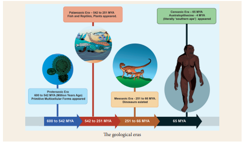
Humans are the only species on earth concerned with understanding as well as explaining the world and the universe. In the course of evolution, humans became conscious and knowledgeable. They turned curious and began to think and ask questions about nature, organisms and the world around them. At first, they considered nature as God. They worshipped sun, moon and various natural forces about which they developed their own understanding, some of which is not scientific. The lack of scientific knowledge on the creation of the world is reflected in the ancient writings and religious literature
BC = (BCE) Before Common Era
AD = (CE) - Common Era
MYA Million years ago
The beginning of history writing can be traced to the ancient Greeks. Herodotus (484–425 BC (BCE)) is considered the Father of History, because the history he wrote was humanistic and rationalistic. The rise of scientific enquiry into the origin of humans was possible because of
The interest in collection of archaeological remains and the opening of museums after the Renaissance Movement;
The development of ideas of stratigraphy and geology;
Darwin’s theory of biological evolution;
The discovery of human and animal fossils, stone tools, and artefacts of early civilizations; and
The ability to decipher early scripts.
Stratigraphy The study of origin, nature and relationships of rock and soil layers that were formed due to natural and cultural activities.
Oldest Museum The museum of Ennigaldi- Nanna in Mesopotamia was established in 530 BC (BCE). The Princess Ennigaldi was the daughter of the neo-Babylonian king Nabonidus. The Capitoline Museum in Italy is perhaps the oldest surviving museum (1471 AD (CE)) at present. Ashmolean Museum at Oxford University is the oldest university museum in the world. It was established in 1677 AD (CE)
Herbert Spencer’s (One thousand eight hundred and twenty to one Thousand Nine hundred and three AD (CE)) biological evolution, and Charles Darwin’s (One thousand eight hundred and nine to one thousand eighty hundred and eighty two AD (CE)) theory on concepts of natural selection and survival of the fittest contributed to the scientific understanding of human origins. Charles Darwin published the books On the Origin of Species in 1859 and The Descent of Man in 1871
Natural selection The process by which organisms that are better adapted to their environment would survive and produce more offspring.
Survival of the fittest means “survival of the form that will leave the most copies of itself in successive generations.”
Fossil Prehistoric animal or plant that turns into stone over a period of time (millions of years) because of chemical and physical processes. Animal bones are preserved due to mineralization. Palaeontology is the study of fossils.
Stone Age the period when stone was mainly used for making implements.
Bronze Age the period when bronze metallurgy (extraction of metal from ores) developed.
Iron Age the period when iron was smelted to produce implements.
Since the 19th century, scholars have used advanced scientific techniques. They undertook systematic studies to contribute to the current state of knowledge on prehistory, human origins and the early civilisations. Now the theory of human evolution is widely accepted.
Who are we? What is the name of our species?
We are Homo sapiens
The chimpanzee, gorillas and orangutans, along with humans, are collectively called the Great Apes. Among them, the chimpanzee is genetically the closest to humans.
The ancestors to humans were called Hominins, and their origins have been traced in Africa. They evolved from those origins and then began to move to other parts of the world in due course of time. The Hominins emerged around 7 to 5 million years ago. Skeletons of Australopithecus, one of the early species of this tribe, have been found in Africa.
The Great Rift Valley in Africa has many sites that have evidence for the prehistoric period.
The DNA of a chimpanzee is 98 percent identical to that of a human being.
The Great Rift Valley is a valley-like formation that runs for about 6,400 km from the northern part of Syria to Central Mozambique in East Africa. This geographical feature is visible even from the space, and many prehistoric sites are found in eastern Africa.
Human ancestors are divided into various species according to their physical features.
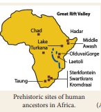
Fossils of Lucy (Australopithecus)
Hominid refers to all the species of the modern and extinct great apes, which also includes humans.
Hominins (a zoological tribe) refers to the close relatives of human ancestors and their sister species including Homo sapiens (the modern humans) and the extinct members of Homo neanderthalensis, Homo erectus, Homo habilis and various species of Australopithecines. Humans are the only living species of this ‘tribe’. They stand erect, walk with two legs and have large brains. They can use tools and a few of them can communicate. It excludes the gorillas.
Homo habilis (handy human) was the earliest known human ancestors to make tools in Africa about 2.6 million years ago. Around 2 million years ago, the species of Homo erectus/ergaster emerged. This species made hand axes between 2 and 1 million years ago. They began to spread into various parts of Asia and Africa in time.
Anatomically, modern humans, called Homo sapiens (wise man), first appeared around 300000 years ago in Africa. It is believed that these modern humans eventually migrated and dispersed into various parts of the world from around 60,000 years ago.
Prehistoric period does not have evidence of writing. While the fossil bones are classified as various species such as Homo habilis, Homo erectus and Neanderthalensis,
based on the lithic tools, cultures are assigned names such as Earliest Lithic Assemblages, Oldowan Technology, Lower, Middle and Upper Paleolithic and Mesolithic cultures.
The chimpanzee and the pygmy chimpanzee (also known asbonobo) are our closest living relatives.
The earliest tools made by human ancestors are found in Lomekwi in Kenya. They are dated to 3.3 million years. Oldowan tools occur in the Olduvai gorge in Africa. They are 2 to 2.6 million years old. The human ancestors (Australopithecines) used hammer stones and produced sharp-edged flakes. The tools were used for cutting, slicing and processing food.
The Lower Paleolithic Culture is marked by the human ancestors belonging to the species Homo habilis and Homo erectus. The human ancestors flaked large stone blocks and designed various tools including hand axes. These tools, which are found in Africa, Asia, and Europe, are dated the earliest to about 1.8 million years ago. They made various tools such as hand axes and cleavers to meet their subsistence needs. These tools are also known as bifaces. These tools have physical symmetry and convey the humans’ cognitive (perception) skills. This culture is called the Lower Paleolithic Culture. The hand axe tools are also known as Acheulian. This tool-making tradition continued till 250,000 years to 60,000 years ago in India.
Acheulian – They were first hand axes recognized at a place called Saint. Acheul in France. Hence they are called Acheulian tools.
Bifaces are tools that have flaking on both sides (bi = two, face = side).
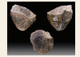
Stone tools from Kenya about 2.3million-year old
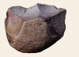
An Olduvai chopper
Subsistence necessities of prehistoric humans were mainly food and water.
The human ancestors perhaps did not possess complex language skills as we have now. They might have voiced a few sounds or words and possibly used sign language. They were intelligent enough to select stones as raw material and used the hammer stones to carefully flake the rocks and design tools for their needs. They hunted animals, fed on the meat of the animals killed by predators and gathered plant foods such as roots, nuts and fruits. In India, the Acheulian tools have been found near Chennai and many other sites such as Isampur in Karnataka and Bhimbetka in Madhya Pradesh.
Raw material is the naturally available stone block or pebbles selected by humans for making tools.Since these stones produced flakes with sharp edges, they were selected for making stone tools.
Core is the main block of stone from which small chips are fl aked by using a hammer stone.
Flake is a small chip removed from a large stone block called the core.
After about 398000 years Ago, further changes took place in the lithic technology in Africa. The Homo erectus species existed during this period. Anatomically modern humans are said to have emerged around 3 lakh years ago.
Lithic Technology: ‘Lith’ means stone. The methods and techniques involved in the production of stone tools are called Lithic technology
The hand axes turned out to be much attractive in design and many smaller tools were also produced. The core was prepared and then tools were made. Points and scrapers were used. Short blades were also produced. The lithic tool-making tradition of the Levalloisian belonged to this period. The tools made during this time are found in Europe and Central and western Asia
Levalloisian tools are the implements made after preparing the core. It was named after the town of Levallois in France.
The Middle Paleolithic Culture appeared between 385000 and 198000 years ago in Europe and parts of western and South Asia. The tools that were made during this period were in use till about 28,000.
The people of this period were called Neanderthals. They buried the dead people systematically
The cultural phase that succeeded the Middle Paleolithic is called the Upper Paleolithic phase. This period was marked by innovation in tool technology. Long blades and burins were produced during this time. People used different varieties of silica- rich raw materials in this phase. Numerous paintings and art objects were made. The diversity of artefacts suggests the improvement in cognitive skills and the development of languages. Microliths appeared in this phase.
Burin is a stone-made chisel with a sharp cutting edge.
The modern humans, who first appeared as a result of human evolution in the sub- Saharan Africa 300,000 years ago, began to move to various parts of Asia around 60,000 years ago. They probably replaced the earlier populations. In Europe, humans known as Cro-Magnons lived in this period.
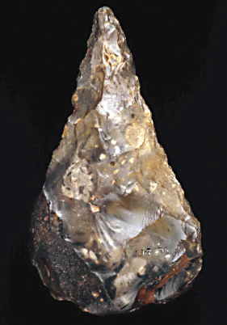
Hand axe - London Museum
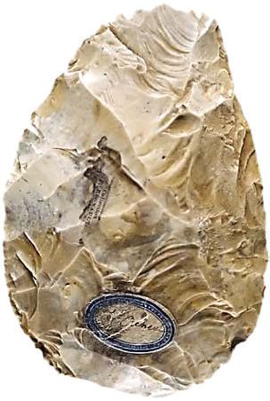
Flint biface from Saint-Acheul, France
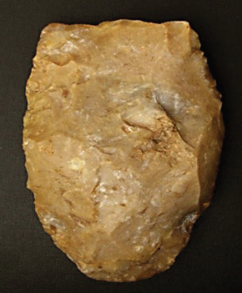
A cleaver
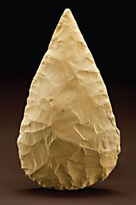
Omo Kibish point
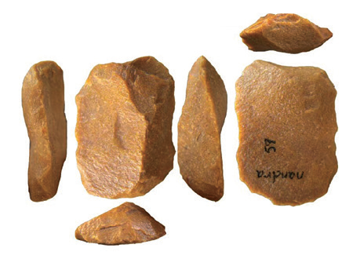
Middle Paleolithic flakes and tools India
Horns and ivory were used for making tools and art works. Bone needles, fishhooks, harpoons and spears were also employed creatively. The humans of this time wore clothes and cooked food. The dead were placed in the burials with folded hands placed over their chest. Pendants and richly carved tools were also seen in use. Evidences from paintings, clay model sculptures and carvings are available. Images of Goddess Venus were made of stones and bones in Europe and in some parts of Asia.
Ice Age the period before 8,000 BC (BCE) when many parts of the world remained covered by ice sheets and snow
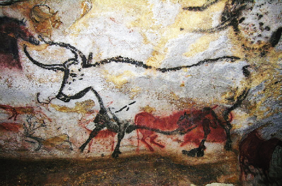
Lascaux Rock painting from west France – 17000 years’ old
Mesolithic period is known as the Middle Stone Age, as it is placed between the Paleolithic and Neolithic periods. People mainly used microlithic (small stone) tools during this period. These people were hunter-gatherers. With the global warming occurring after the Ice Age, they became highly mobile and occupied various eco-zones (coastal, hilly, riverine and dry region).
People of Mesolithic period widely employed microlithic technology. They made tiny artefacts that were less than 5 cm in size. They produced points, scrapers and arrowheads. They also used geometric tools such as lunates, triangles and trapezes. These tools were hafted onto wooden or bone handles and used.
Microliths are stone artefacts of small size.
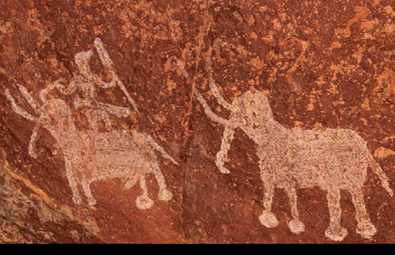
Rock paintings from Bhimbetka
Neolithic Culture and the Beginning of Agriculture
The period called Neolithic marks the beginning of agriculture and animal domestication. It is an important phase in history. Early evidence of the Neolithic period is found in the fertile crescent region of Egypt and Mesopotamia, the Indus region, the Gangetic valley and in China. By about 10,000 BC (BCE) to 5000 BC (BCE), agriculture had come to be practised in these regions.
Wheat, barley and peas were cultivated around 10,000 years ago. Fruit and nut trees were cultivated around 4,000 BC (BCE). They comprised olives, figs, dates, pomegranates and grapes.
Fertile Crescent Region refers to the area covering Egypt, Israel-Palestine and Iraq, which is in the shape of crescent moon.
Neolithic Age is called the ‘new age’, because of the new grinding and polishing techniques used for the tools. The Neolithic people also used the flaked stone tools. Until the Mesolithic period, people mainly hunted and gathered food for their subsistence. By hunting and gathering people obtained very limited food as a result of which only a small number of people could exist in a particular region.
The introduction of domestication of animals and cultivating plants at home led to production and supply of large quantities of grains and animal food. The fertile soil deposited by the river on its banks helped the growth of agriculture. People preferred to live on river banks as it was better for adaptation. As a result of domestication and cultivating plants, there was an excess food production. The surplus food production was a main factor for the development of early civilisations. Permanent residences were built and large villages emerged as a result. Hence, the development of this period is called Neolithic Revolution.
One of the oldest Stone Age tools in the world made by human ancestors, called hominins, had been produced in Tamil Nadu. These stone tools are found near the Chennai region at several sites, especially at Athirampakkam. The archaeological excavations at this site and cosmic-ray exposure dating of the artefacts suggest that people lived here about 1.5 to 2 million years ago. The Kosasthalaiyar river is one of the major cradles of human ancestors in the world. The people who lived here belonged to the species of Homo erectus.
Archaeological excavation refers to digging undertaken to recover archaeological evidence such as stone tools, pottery, animal bones and pollens, in order to understand the past lifestyle of humans.
Cosmic-ray exposure dating – method in which exposure to cosmogenic rays is donefor dating the samples.
In 1863, Sir Robert Bruce Foote, a geologist from England, first discovered Paleolithic tools at Pallavaram near Chennai. They are the earliest finds of such tools in India. Hence, the hand axe assemblages were considered the Madras Stone Tool Industry. The tools that he discovered are now housed in the Chennai Museum.
The Paleolithic people hunted wild animals and gathered the naturally available fruits, roots, nuts and leaves. They did not have knowledge of iron and pottery making, which developed much later in history. Hand axes and cleavers are the important tool types of the Lower Paleolithic period. These tools fitted with a wooden and bone handle were used for cutting, piercing and digging. The people of this time used hammer stones and spheroids. The quartzite pebbles and cobbles were chosen as raw materials. The tools are found in the soil deposits and also in the exposed river side. They occur at Pallavaram, Gudiyam cave, Athirampakkam, Vadamadurai, Erumaivettipalayam and Parikulam.
The Lower Paleolithic tools are also found in the North Arcot and Dharmapuri districts. The people belonging to this period used basalt rocks for manufacturing artefacts. However, the southern part of Tamil Nadu and Sri Lanka do not have evidence of Lower Paleolithic Culture.
Basalt rocks are igneous rocks: Igneous rocks are those formed from the molten lava from the earth.
The Lower Paleolithic Culture is datable to about 2 - 1.5 million years at Athirampakkam. This cultural phase continued in other parts of India up to 60,000 years ago.
In the course of time, the Middle Paleolithic Culture emerged during 385,000 - 172,000 years ago. The tool types of this period underwent a change and smaller artefacts were used. Cores, flakes, scrapers, knives, borers, Levalloisian flakes, hand axes and cleavers are the artefact types of this period. Compared to the previous phase, these tool types became smaller in size.
Evidence for the Middle Paleolithic Culture can be observed in some parts of Tamil Nadu. In the southern part of Tamil Nadu, at T. Pudupatti and Sivarakkottai, artefacts of the Middle Paleolithic tools have been collected. Also near Thanjavur and Ariyalur, similar artefacts have been found.
In many parts of the world, and in some parts of India, the Upper Paleolithic Culture succeeded the Middle Paleolithic Culture. There is no evidence for the Upper Paleolithic Culture in Tamil Nadu. But the people who used microliths or small-stone artefacts lived in many parts of TamilNadu. Since this cultural period occurs between Paleolithic and Neolithic Culture, it is known as Mesolithic Culture or Middle Stone Age.
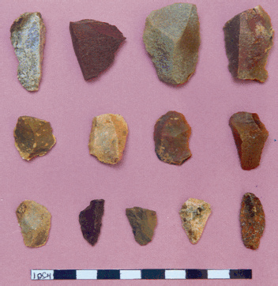
Microlithic flakes from Tamil Nadu
Evidence for the existence of Mesolithic hunter-gatherers is found at Chennai, North Arcot, Dharmapuri, Salem, Coimbatore, Ariyalur, Tiruchirappalli, Pudukkottai, Madurai, Sivagangai, Tirunelveli and Kanyakumari. The terisites near Thoothukudi have evidence of microlithic artefacts. These sites have red sand dunes called teris.
The people of this period used small artefacts made of chert and quartz. The tool types are scrapers, lunates and triangles. These people hunted wild animals and gathered fruits, nuts and roots for their subsistence.
Scrapers are tools used for scraping the surfaces. Scrapers are similar to the tools used in the kitchen for removing skin of vegetables.
Triangles are tools in the shape of triangles.
Lunates are tools in the shape of a crescent.
The culture that domesticated animals and cultivated crops is called Neolithic. It is known as the New Stone Age. The Neolithic people used polished stone axes called celts. Cattle rearing was their main occupation. They lived in small villages with houses made of thatched roof and walls plastered with clay. Evidence of Neolithic village is found at Payyampalli in Vellore district and a few sites in the Dharmapuri region.
Timeline: The Course of Cultures in Ancient Tamilagam
Culture |
Time Period |
Cultural Traits |
Paleolithic Period |
Circa. 20,00,000 years to circa. 8,000 BC (BCE) |
Hand axes, cleavers Hunting and gathering |
Mesolithic Period |
Circa. 8,000 years to circa. 1,300 BC (BCE) |
Mesolithic tools No knowledge of metal Hunting of animal and birds Gathering of plant food |
Neolithic Period |
Circa. 2,000 BC (BCE) to 1,000 BC (BCE) |
Polished Stone Axes Microliths Domestication of animals Cultivation of crops Multiplicity of groups Co-existence of hunter-gatherers and pastoral groups |
Iron Age |
Circa. 1,300 BC (BCE) to 500 BC (BCE) |
Megalithic burial custom Co-existence of hunter-gatherers and pastoral groups Development of chiefdom Knowledge of iron, black and red ware, black ware ceramics Craft specialisation, specialised groups: potters, blacksmiths |
Early Historic and Sangam Age |
300 BC (BCE) to 300 AD (CE) |
Cultural traits of Iron age Monarchies of Chera, Chola and Pandya Development of hero worship Poetic traditions and literature Trade and exchange by sea |
Do You Know?
Neolithic people perhaps devised the first pottery. They made pottery, using a slow wheel called turn-table or made pottery out of hand. Before firing, the pottery was polished with pebbles. This process is known as burnishing.
Payyampalli is a village in Vellore district of Tamil Nadu. The earliest evidence for the domestication of animals and cultivation of plants is found at this site, which was excavated by the Archaeological Survey of India. Evidence for pottery making and cultivation of horse gram and green gram has been found in this village.
The cultural period that succeeded the Neolithic is called the Iron Age. As the name suggests, people used iron technology. It preceded the Sangam Age. The Iron Age was a formative period and the foundation for the Sangam Age was laid in this time. During the Iron Age, many parts of Tamil Nadu were occupied by people. An exchange relationship developed among the people.
The people of this age had knowledge of metallurgy and pottery making. They used iron and bronze objects and gold ornaments.
Some researchers relate the origin of the Tamils to the submerged continent of Lemuria. This theory of Lemuria continent was proposed in the 19th century. In the wake of advancements in plate tectonics theory, differing views are put forth by scholars.
The available literary references point to the submergence of areas around Kanyakumari. Some parts of Sri Lanka and Tamil Nadu were connected by land about 5000 years BC (BCE). It is possible that some land might have submerged near Kanyakumari and around the coast of India, because of the rising sea levels. Underwater surveys are necessary in this area.
Archaeological research reveals that at least a section of people may have been living continuously in South India, including Tamil Nadu, from the Mesolithic and Neolithic times.
They used shell ornaments and beads made of carnelian and quartz. The evidence for Iron Age is found at many sites including Adhichanallur in Thoothukudi district, Sanur near Madhuranthakam and Sithannavasal near Pudukkottai. Megalithic burial sites are found in the whole of Tamil Nadu.
The Iron Age is also known as megalithic, since people created burials with large stones for the dead people. Within these burials, the skeletons or a few bones of the dead persons were placed along with grave goods including iron objects, carnelian beads and bronze objects. Some of the burials do not have human bones and they have only the grave goods. They may be called memorial burials.
Grave goods are the objects placed in the burials along with the physical remains (bones) of the dead. People may have believed that these would be useful in the after-life. Egyptian pyramids also have similar artefacts.
Similar burials were also built in the early historic period or the Sangam Age. The Sangam literature mentions the various burial practices of the people. The megalithic burials are classified as dolmens, cists, menhirs, rock-cut caves, urn burials and sarcophagus. The burial types of Kodakkal (umbrella stone), Toppikkal (hatstone) and Paththikal (hoodstone) are found in Kerala.
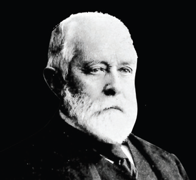
Sir Robert Bruce Foote discovered the first Paleolithic tools in India at Pallavaram
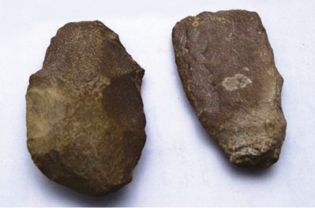
Tools discovered by Robert Bruce Foote
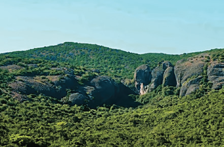
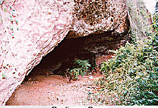
Gudiyam Cave near Chennai
Dolmens, table-like stone structures, were erected as funerary monuments. Cists are stone enclosures buried under the earth. They were created by placing four stone slabs on the sides, one on top of each other. The cists and dolmens have openings called portholes. Urns are pottery jars and were used for burying the dead. Sarcophagi are burial receptacles made of terracotta. They sometimes had multiple legs. Menhirs are pillar-like stones erected as part of the burials or memorials
Portholes are holes found in the cists and dolmens on one side. They may have acted as the entrance to the burials. There is a view that they were meant for the movement of the soul or spirit.
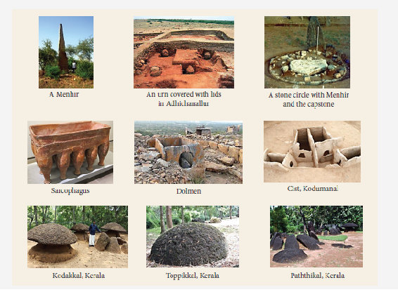
The menhirs may have been erected for the heroes in the Iron Age. The tradition of hero stones might have begun in the Iron Age or even before.
The people in the Iron Age practiced agriculture, domesticated cattle and sheep, and some of the groups were hunting and gathering. Millets and rice were cultivated. Irrigation management developed in this period, since many of the megalithic sites are found nearby rivers and tanks. In the deltaic regions, irrigation as a technology had developed. Evidence of rice is seen in the megalithic sites like Adhichanallur in Thoothukudi district and Porunthal near Palani.
The Iron Age society had farming communities, pastoralists and hunter-gatherers. Craft specialists, potters and blacksmiths were the professionals during this period. The society had several groups of peoples (tribes). The size of the burials and the variations found in the burial goods suggests the existence of numerous social groups and their diverse practices. Some of them seem to have had organised chiefdoms. Cattle lifting leading to wars and encroachment and expansion of territories had also started taking place in this period.
Pottery is an important evidence found in the archaeological sites. The Iron Age and Sangam age people used the black and red colours to make black ware and red ware pottery. Potteries were used for cooking, storage and dining purposes. The black and red ware pottery has a black inside and a red outside, with lustrous surfaces.
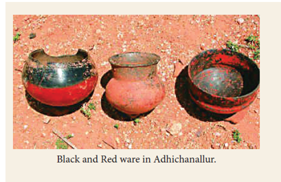
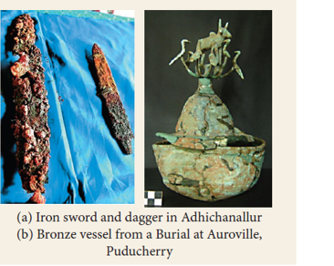
The megalithic burials have abundant iron objects placed in the burials as grave goods. Weapons such as swords and daggers, axes, chisels, lamps and tripod stands are also found. Some of these objects were hafted to wooden or bone or horn handles and used. The iron tools were used for agriculture, hunting, gathering and in battles. Bronze bowls, vessels with stylish finials decorated with animals and birds, bronze mirrors and bells have also been found.
The history of humans is intimately linked with the history of the earth. The earth originated around 4.54 billion years ago.
The ancestors of human called hominins appeared about 5–7 million years ago.
Although people gave divine explanations for the origin of humans, science believes in the theory of human evolution from the great apes.
Humans began to domesticate animals and cultivate crops. The agricultural revolution led to many changes. Humans lived in permanent houses, made pottery and with the surplus production, they developed various crafts.
The earliest evidence of humans is available in Tamil Nadu around 2-1.5 million years ago.
The Middle Paleolithic Culture is found in some parts of Tamil Nadu.
The Mesolithic people lived in all the areas of Tamil Nadu.
Neolithic culture is limited to northwestern part of Tamil Nadu.
The Iron Age saw further expansion of people in various cultural zones. The foundation of subsequent Sangam Age was laid during this age.
Iron tools were used in agriculture.
1. DASH is genetically closest to humans
Option a Gorilla
Option b. Chimpanzee
Option c. Orang-utan
Option d.Great Apes
2. The period called DASH marks the beginning of agriculture and animal domestication.
Option a.Paleolithic
Option b.Mesolithic
Option c. Neolithic
Option d.Megalithic
3. Direct ancestor of modern man was DASH.
Option a. Homo habilis
Option b. Homo erectus
Option c.Homo sapiens
Option d.Neanderthal man
4. DASH refers to the area covering Egypt, Israel-Palestine and Iraq.
Option a. Great Rift Valley
Option b. Fertile Crescent
Option c. Solo river
Option d.Neander Valley
5. Sir Robert Bruce Foote, a geologist from England first discovered the DASH tools at Pallavaram near Chennai.
Option a. Microlithic
Option b. Paleolithic
Option c. Mesolithic
Option d. Neolithic
6. 1. The period before the introduction of writing is called pre-history.
2. The pre-historic people developed language, made beautiful paintings and artefacts.
3. The pre-historic societies are treated as literate.
4. The pre-historic period is called ancient.
Option a. 1. is correct
Option b. 1. and 2. are correct
Option c. 1. and 4. are correct
Option d. 2. and 3. are correct
7. 1. The Neolithic people used polished stone axes called Celts
2. Evidence of Neolithic village is found at Payyampalli in Chennai district
3. The cultural period that succeeded the Neolithic is called the Bronze Age
4.The period that witnessed domestication of animals and cultivation of crops is called Mesolithic
Option a. 1. is correct
Option b.2. is correct
Option c. 2 and 3 are correct
Option d. 4 is correct
8. Assertion (A): Many of the Mesolithic sites are founds nearby rivers and tanks.
Reason (R): Irrigation management developed during Mesolithic period.
Option a .A and R are correct and R explains A
Option b. A and R are correct but R doesn’t explain A
Option c. A is correct but R is incorrect
Option d. A and R both are incorrect
1. Hand axes and cleavers are the important tool types of the DASH culture.
2. The methods and techniques involved in the production of stone tools are called DASH technology.
3. DASH is known as the Middle Stone Age, as it is placed between the Paleolithic and Neolithic.
1. a. The concept ‘survival of the fittest’ contributed to the scientific understanding of human origins.
b. The book "On the Origin of Species" was published by Herbert Spencer.
c.Darwin’s theory of biological evolution connects with the process of natural selection.
d.Geology is the study of lithic technology
2 a. Among the great Apes Orang utan isgenetically the closest to humans.
b. The ancestors to humans were called Hominins and their origins have been traced to Africa.
c. Flake canot be used for tool making.
d. Acheulian is the main block of stone from which small chips are flaked by using a hammer stone.
1. |
Palaeo anthropology |
- |
Teris |
2. |
Hand axe tools |
- |
Venus |
3. |
Images on stone andbone |
- |
Acheulian |
4. |
Red sand dunes |
- |
Microliths |
5. |
Stone artefacts ofsmall size |
- |
The study ofthe humanancestors |
1. Discuss how the age of speculationmade humans become conscious andknowledgeable.
2. Write a note on the impact of pastoralism on the prehistoric people in Tamil Nadu.
3. List out the features of Megalithic Burialtypes.
4. Examine the tool making technical skillsof lower Paleolithic people.
6. Answer all the questions given under each caption
1. The developments in the field’s ofagriculture, pottery and metal toolsare considered a landmark in the life ofMegalithic Period-Substantiate.
2. The history of humans is closely relatedto the history of the earth. Elucidate.
Mark the prehistoric sites on the world map
Organize an exhibition on the pre-historic sites of Tamil Nadu
A power-point presentation on the origin of human life
A power-point presentation on the pre-historic tools
A power-point presentation on the scripts of the ancient period
1. Noboru Karashima, A Concise History of South India Issues and Interpretations. Oxford.
2. K. Rajan, Iron Age-Early Historic Transition in South India: An Appraisal. Padmashri Amalananda Ghosh Memorial Lecture, New Delhi: Institute of Archaeology
3. Ralph, Burns and others. World Civilizations (Vol. 1).
http://www.ancient-origins.net
Explore Pre-Historic Objects in Museums
Steps
Scan the QR code and install the app.
You can see three bars at the left side of the screen. Click them.
When we click on 'collections', you can find world famous Museums. Select ‘British Museum’ Take a tour by clicking the yellow man icon. Click on ‘Collections’ to view the images of various objects in the Museum with high resolution and at the relevant ages.
Click on the ‘clock’ to watch the timeline.
Website URL : https://play.google.com/store/apps/details?id=com.google.android.apps.cultural
Urban societies that adopted complex ways of life were more organised than the early hunter-gatherer and Neolithic farming societies. Urban societies had social stratification and well-planned cities. They practised crafts, engaged in trade and exchange, adopted science and technology and formed political organisation (early form of state). Hence the term ‘civilisation’ is used to distinguish them from the early forms of societies. However, they should not be considered superior to other forms of societies, since each culture or civilisation had its own unique features.
Civilisation is seen as an advanced, organised way of life. It instilled a way of life that could be considered as an adaptation to particular environmental and cultural contexts. When it became necessary for large numbers of people to live in close proximity, they brought in planning, organisation and specialisation. Settlements were planned and laid out, a polity emerged, society became organised and food production and craft production were regulated. As civilisations began to take shape, huge buildings were built, the art of writing developed and science and technology contributed to the betterment of society.
The Egyptian, the Mesopotamian, the Chinese and the Indus were the important early civilisations. While these civilisations flourished in certain regions, people in other parts of the world lived as hunters-gatherers and pastoralists. The hunters-gatherers and pastoralists maintained their relationships with these civilisations through interactions. Their history is also equally important. During the time of these civilisations, South India witnessed the emergence of Neolithic agro-pastoral communities and Microlithic form of life by hunter-gatherers
As one of the oldest civilisations, the Egyptian civilisation is known for its monumental architecture, agriculture, arts, sciences and crafts at a very early age.
Egypt lies in the north-eastern corner of the African continent. It is bounded by the Red Sea on the east and Mediterranean Sea in the north. Egypt is irrigated by the River Nile,
Which originates in Lake Victoria in the south and flows into the Mediterranean Sea in the north. Deserts are seen on both sides of the Nile River. The Egyptian civilisation depended solely upon the flow of Nile River, and hence Egypt was called the Gift of Nile by the Greek historian Herodotus. The Nile also served as a means of transport. The Nile valley is very rich and fertile as the river deposits fresh alluvium every year. This alluvium nurtured agriculture and helped to produce surplus of food grains, leading to the development of Egyptian civilisation. The dry regions on both the sides of the Niles, however remained deserts.
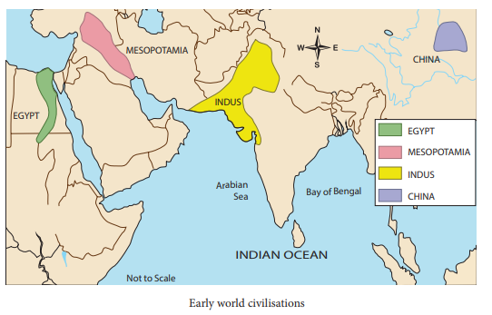
The Hyksos were the rulers of the fifteenth dynasty of Egypt and they were probably from West Asia.
Persians are the people from the region of Persia, the ancient Iran.
Greek refers to the language and people of modern-day State of Greece in Europe.
Rome refers to the ancient Roman Empire, which had as its capital the city of Rome in Italy.
The Egyptian king was known as the Pharaoh. The people treated pharaoh as a divine form. Under the pharaoh, there was a hierarchy of officials including viziers, the governors of provinces, local mayors and tax collectors. The entire social system was supported by the work and production of artisans including stone cutters, masons, potters, carpenters, coppersmiths and goldsmiths, peasants and workers. Land belonged to the king and was assigned to the officials. Slavery was not common, but captives were used as slaves.
Viziers were the high officials who administered territories under the direction of the Pharaohs.
The Egyptians believed in life after death. Therefore, they preserved the dead body. The art of preserving the dead body is known as mummification. Pyramids and tombs were built to preserve the body of pharaohs.
The famous Egyptian pharaoh Tutankhamen’s (who ruled from 1332 to 1322 BC (BCE)) tomb with a rich variety of offerings is located near Luxor in Egypt. The mask of his mummy made of gold and decorated with precious stones is an important artefact of the Egyptian civilisation.
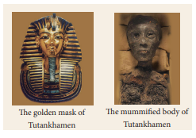
The preserved dead body is called the mummy. The Egyptians had the tradition of preserving the dead bodies using Natron salt, a combination of sodium carbonate and sodium bicarbonate. The preservation process is called mummification. After 40 days, when the salt absorbed all the moisture, the body was filled with sawdust and wrapped with strips of linen cloth and covered with a fabric. The body was stored in a stone coffin called sarcophagus.
The Egyptians cultivated wheat, barley, millets, vegetables, fruits, papyrus and cotton. Papyrus was used for making rope mats, sandals and later for producing paper. They domesticated cattle, sheep, goat and pigs, and hunted wild animals. They had pets such as dogs, cats and monkeys.
The Egyptians had trade relations with Lebanon, Crete, Phoenicia, Palestine and Syria. Gold, silver and ivory were imported, and they acquired the Lapis Lazuli, a precious stone of bluish colour, from Afghanistan.
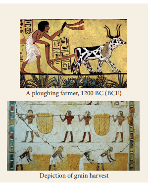
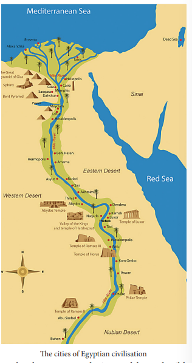
The Egyptians excelled in art and architecture. Their writing is also a form of art. Numerous sculptures, painting and carvings attest to the artistic skills of the Egyptians.
The pyramids are massive monuments built as tombs of mourning to the Pharaohs. The great pyramids near Cairo are known as the Giza Pyramids.
The Great Sphinx of Giza is a massive limestone image of a lion with a human head. It is dated to the time of Pharaoh Khafre (2575-2465 BCE). It is one of the largest sculptures of the world and measures seventy-three metres in length and twenty metres in height.
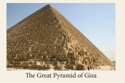
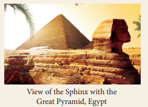
The Egyptians practiced polytheism. Amon, Re, Seth, Th oth, Horus and Anubis are some of the Gods of Egyptians. They worshipped many Gods, but the Sun God, Re, was the predominant one. Later on, the Sun God was called Amon.
The Egyptian civilisation excelled in science, literature, philosophy, astronomy, mathematics and the measurement system. Sundial, water clock and glass were developed by the Egyptians. They devised a solar calendar that consisted of twelve months of thirty days each, with five days added to the end of a year. This calendar was introduced as early as 4200 BC (BCE). Literary works included treatises on mathematics, astronomy, medicine, magic and religion. The Egyptians also distinguished themselves in painting, art, sculpture, pottery, music and weaving.
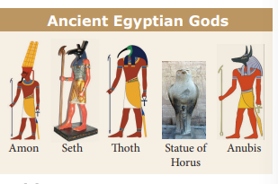
The Egyptians are well known for their writing system. Their form of writing is known as hieroglyphic. Hieroglyphic was used in the inscriptions on seals and other objects. The heretic, an another form of writing, was used for common purposes. This form of writing used a pictogram-based system. It was developed around 3000 BC (BCE) and many texts and books were written using this script. Now this inscription is on display in the British Museum, London.
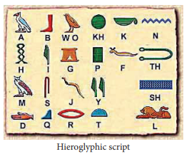
The Egyptians developed a solar calendar system.
The pyramids and their designs show their mathematical and surveying skills.
Hieroglyphic writing system attests to their skills in handling symbols.
Preservation of human body in the form of Mummies.
They applied innovation in the use of science and technology
The word ‘paper’ comes from ‘Papyrus’. The Egyptians wrote on the leaves of a plant called papyrus, a kind of reed, which grew on the banks of Nile.
Mesopotamia refers to the region of Iraq and Kuwait in West Asia. Several kingdoms emerged around the city states of this region from the early third millennium BC (BCE). The Sumerian, Akkadian, Babylonian and Assyrian civilisations flourished in Mesopotamia.
In the Greek language, meso means ‘in between’ and potamus means river. The Euphrates and Tigris flow here and drain into the Persian Gulf is since this area is in between two rivers it is known as Mesopotamia. The northern part of Mesopotamia is known as Assyria, and the southern part is called Babylonia.
The oldest civilisation in Mesopotamia belonged to the Sumerians. The Sumerians were the contemporaries of the people of Indus and the Egyptian civilisations. These civilisations had trade connections. The Sumerians settled in the Lower Tigris valley around 5,000 to 4,000 BC (BCE). They were believed t o have o riginated from Central Asia. They founded many cities and Nippur was one of the important cities. They developed the cuneiform writing system. During the early phase of the Sumerian civilisation, Kings acted as the chief priests. Their political domination came to an end by 2,450 BC (BCE).
The Akkadians dominated Sumeria briefly from 2450 to 2250 BC (BCE). The S argon o f Akkad was a famous ruler. The Sargon and his descendants (ca.2334–2218 BC (BCE)) ruled Mesopotamia for more than hundred years. In the cuneiform records of Akkadians, mention is made about the Indus civilisation. The documents of the Sargon of Akkad (2334–2279 BC (BCE)) refer to the ships from Meluhha, Magan and Dilmun in the quay of Akkad. Meluhha is identified with Indus vallley.
The city of Akkad later became the city of Babylon, a commercial and cultural centre of West Asia.
The Semitic people called Amorites from the Arabian desert moved into Mesopotamia. They were known as the Babylonians as they established a kingdom and made Babylon its capital. By the time of the king Hammurabi, they extended their domination to the western part of Mesopotamia. The powerful states of Ur (2112 to 2004 BC (BCE)) and Babylon (1792 to 1712 BC (BCE)) controlled this region. The hero Gilgamesh referred to in the first ever epic on the earth may have been a king of Sumeria. Hammurabi, the sixth king of Babylon belonging to the first Amorite dynasty (1792–1750 BC (BCE)), attained fame as a great law-maker.
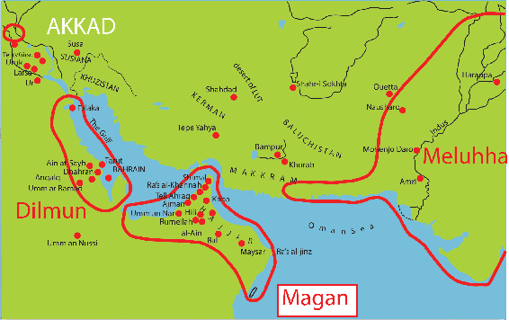
Map of ancient lands of Magan, Dilmun and Meluhha.
The Assyrian Empire was politically active in Mesopotamia around 1000 BC (BCE). The Assyrian kings were the priests of Ashur, the chief deity of Assyria. The Assyrian government was controlled by the emperor and provincial governors were appointed by the emperor to administer provinces. Assur was the capital city of Assyria. Ashurbanipal was a popular ruler of the late or neo-Assyrian empire (ca. 668 to 627 BC (BCE)). He maintained a famous library of cuneiform records. The Assyrians worshipped the deity of Lamassu for protection.
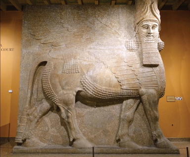
A stone image of Lamassu
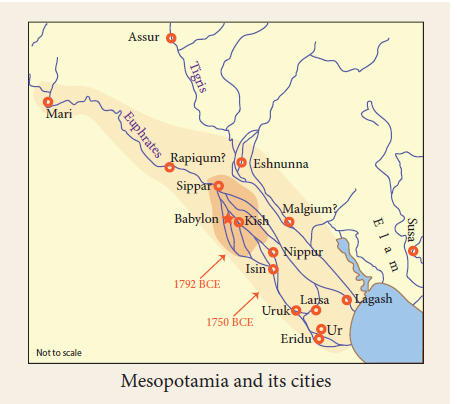
The Sumerian civilisation had many city states. A typical Sumerian city was surrounded by cultivable lands. The fortified Sumerian cities had the temples called Ziggurats at its centre. The temple was controlled by the priests. Priests, scribes and nobles were part of the government. The rulers and priests occupied the top of the social hierarchy. The ruler performed the role of the chief priest. The scribes, merchants and artisans were placed next in the hierarchy. The scribes maintained the account of the taxes and the priests collected the taxes. The temples acted as storehouses of the taxed commodities. Assemblies were created for the administration of the state. Cultivable lands were owned by the kings and the higher classes of people in the hierarchy. The peasants who remained to the temples in the earlier phase of Mesopotamian civilisation, became free from that association in the later period. Not all people were allowed to live in the cities.
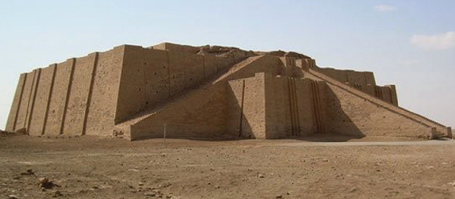
Ziggurat of Ur
The Assyrian Empire was the first military State in history. They emerged militarily powerful because they were the earliest to use iron technology effectively.
Agriculture was the main occupation of the Mesopotamians. They had developed irrigation systems for ensuring the availability of water for agriculture and cultivated wheat, barley, onions, turnips, grapes, apples and dates. They domesticated cattle, sheep and goats. Fish was part of their diet.
Trade was an important economic activity of the Mesopotamian society. Traders assisted in the exchange of goods procured from the potters and artisans. They traded with Syria and Asia Minor in the West, and in Iran and the Indus Valley civilisation in the east. They travelled in ships across the seas for trade. Their temples acted as banks and lent credit on their own account. The Mesopotamian documents have references to loan and repayment, with or without interest. Perhaps this is the first written evidence of charging an interest on borrowed money.
The Mesopotamian cities featured mud or baked brick walls with gates. Some people lived in reed huts outside the cities. The Ziggurats were at the city centre on a platform and appeared like steep pyramids, with staircases leading to the top. Around this temple were complexes of ceremonial courtyards, shrines, burial chambers for the priests and priestesses, ceremonial banquet halls, along with workshops, granaries, storehouses and administrative buildings.
The Sumerian religion was polytheistic. They worshipped several Gods and Goddesses. The Sumerians prayed to Enlil, the God of sky and wind. The city of Nippur was centre of Enlil’s worship. Ninlil was the Sumerian Goddess of grain. The Babylonians worshipped Marduk, and Ashur was the supreme God of the Assyrians. Ishtar was Goddess of love and fertility, Tiamat the God of the sea and chaos, and Sin, the moon God. The kings were seen as representatives of the Gods on earth. The Mesopotamians developed a rich collection of myths and legends. The most famous of these is the epic of Gilgamesh, which is written in the cuneiform text. It contains a legend of the flood and has similarities with the account of Noah’s Ark mentioned in the Bible and other myths in the Hindu puranas.
The Hammurabi Code is an important legal document that specifies the laws related to various crimes. It has 282 provisions specifying cases related to family rights, trade, slavery, taxes and wages. It is carved on a stone, which portrays Hammurabi as receiving the code from the Sun God Shamash. It was a compilation of old laws based on retributive principles. ‘An eye for an eye’ and ‘a tooth for a tooth’ form of justice is used in the Hammurabi Code.
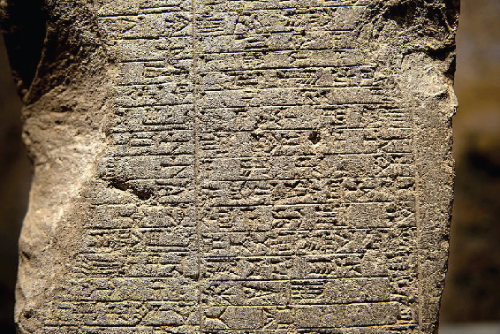
Cuneiform tablet
Cuneiform is the Sumerian writing system. The shape of the letter is in the form of wedge and hence it is called cuneiform. Evolving around 3000 BC (BCE), it is one of the earliest scripts of the world. They used this script for commercial transactions and writing letters and stories. The clay tablets contain loads of information on the Sumerian civilisation.
The Mesopotamian art included sculptures in stone and clay. A few paintings and sculptures from the Mesopotamian times have survived today. Mesopotamian sculptures portray animals, such as goats, rams, bulls and lions. Some mythological figures like lions and bulls with human head have also been found in their art. Massive sculptures were created at the time of the Assyrian and the Babylonian empires.
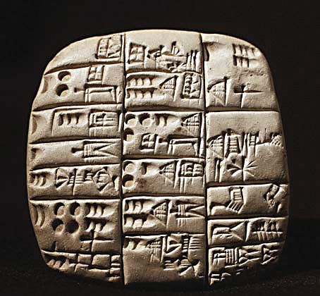
A clay tablet with the accounts of sheep and goats, from Tello, southern Iraq
Development of script is an important milestone in human history. Writing system began to emerge in Sumeria in the later part of fourth millennium BC (BCE). Hieroglyphic, the Egyptian system of writing, developed in early third millennium BC (BCE). The Harappans also had a system of writing around the same time, but it has not yet been deciphered. The Chinese civilisation too developed a writing system from a very early period.
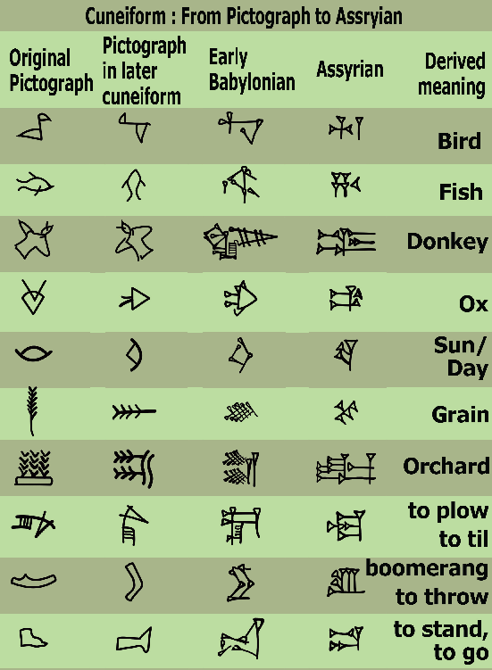
Development of cuneiform script
The Mesopotamians excelled in mathematics, astronomy and medicine. They developed the concepts of multiplication, division and cubic equation. The numerical system based on 60 was conceived by them. They were the ones to formulate the 60-minute hour, the 24-hour day and the 360° circle. The Sumerian calendar had seven days in a week. Their numerical system had place values. They created the water clock and the lunar calendar based on the movement of the moon. They developed methods for measuring areas and solids. They also developed advanced weight and measurement systems.
They introduced the twelve-month calendar system based on lunar months. Their ideas influenced Greek astronomy. They had developed a medicinal system as well. A text called the Diagnostic Handbook, dated to the 11th century BC (BCE) Babylon, lists symptoms and prognoses. This indicates their scientific understanding of herbs and minerals.
The invention of the potter’s wheel is credited to the Sumerians.
They developed the calendar system of 360 days and divided a circle into 360 units.
The cuneiform system of writing was their contribution.
The Hammurabi’s law code was another legacy of the Mesopotamians.
China has two major rivers. One is known as Huang He (Yellow River) and the other is called Yangtze River. The Yellow River is known as the Sorrow of China, since it changed its course and caused frequent floods.
Evidence for the prehistoric Peking man (700,000 BP and 200,000 BP) and Yuanmou Man exists in China. Neolithic communities lived in China between 4,500 and 3,750 BC (BCE). The Henan province in the Yellow and Yangtze river valley contain evidence for Neolithic villages. China had many city states and gradually these states became part of an empire.
Shi Huangdi (Qin Shi Huang, which means the first emperor) founded the Qin (Chin) dynasty. The emperor had the title ‘son of heaven’. He is considered to be the first emperor of China. The period between 221 and 206 BC (BCE) is known as the imperial era in China. He conquered other principalities in 221 BC (BCE) and remained the emperor till 212 BC (BCE). He defeated the feudal lords and established a strong empire. He is credited with unifying China. Shi Huangdi destroyed the walled fortifications of different States and constructed the Great Wall of China to protect the empire from the invading nomadic people. He also built roads to integrate the empire
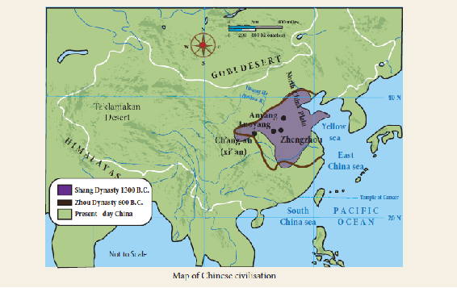
During this period, a written history of this empire was made available in China. The greatest of the Han emperors, Wu Ti (Han Wu the Great, 141 to 87 BC (BCE)), expanded the empire and built many public amenities, including irrigation tanks. He sent Zhang Qian as emissary to the West in 138 BC (BCE) and thereby paved the way for the opening of the Silk Road in 130 BC (BCE) to encourage trade activities.
Because of the Silk Road and the resultant trade connections, China benefitted immensely during the rule of Emperor Zhang (75–88 AD (CE)). Chinese silk was much sought after by the Romans during the time of the Roman emperor Marcus Aurelius in 166 AD (CE). Some of the Chinese silk might have reached Rome through the ports of Tamilagam.
The Terracotta Army refers to the large collection of terracotta warrior images found in China. They depict the armies of the king Qin Shi Huang, the first emperor of China. They were buried with the king in 210–209 BC (BCE). They are found at the northern foot of the Lishan Mountain, thirty-five kilometres northeast of Xi'an, Shaanxi Province, as part of the mausoleum of the king.
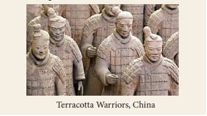
Chinese poets and philosophers such as Lao Tze, Confucius, Mencius, Mo Ti (Mot Zu) and Tao Chien (365-427 AD (CE)) contributed to the development of Chinese civilisation. Sun-Tzu, a military strategist, wrote the work called Art of War. The Spring and Autumn Annals is the official chronicle of the state at the time. The Yellow Emperor’s Canon of Medicine is considered China’s earliest written book on medicine. It was codified during the time of Han Dynasty.
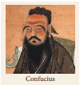
Lao Tze (c. 604– 521 BC (BCE)) was the master archive keeper of Chou state. He was the founder of Taoism. He argued that desire is the root cause of all evils.
Confucius (551–497 BC (BCE)) was famous among the Chinese philosophers. He was a political reformer. His name means Kung, the master. He insisted on cultivation of one’s own personal life. He said, “If personal life is cultivated, family life is regulated; and once family life is regulated, national life is regulated.”
Mencius (372–289 BC (BCE)) was another well-known Chinese philosopher. He travelled throughout China and offered his counsel to the rulers.
Chinese developed a writing system from an early time. Initially it was a pictographic system and later it was converted into a symbol form.
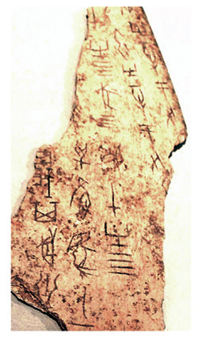
Chinese script on the bone
Writing system was improved
Invention of paper
Opening of the Silk Road
Invention of gun powder
The Indus civilisation, also known as the Harappan civilisation, covers an area of over 1.5 million square kilometres in India and Pakistan. Sutkagen-Dor in the west on the Pakistan–
Iran border Shortugai (Afghanistan) in the north Alamgirpur (Uttar Pradesh in India) in the east and Daimabad (Maharashtra in India) in the south are the boundaries with in which the Harappan culture has been found. Its main concentration was in the regions of Gujarat, Pakistan, Rajasthan and Haryana.
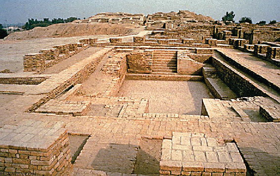
The Great Bath
Harappa (Punjab, Pakistan), Mohenjo-Daro (Sindh, Pakistan), Dholavira (Gujarat, India), Kalibangan (Rajasthan, India), Lothal (Gujarat, India), Banawali (Rajasthan, India.,) Rakhigarhi (Haryana, India) and Surkotada (Gujarat, India) are the major cities of the Indus civilisation. Fortification, well-planned streets and lanes and drainages can be observed in the Harappan towns. The Harappans used baked and unbaked bricks and stones for construction. A civic authority perhaps controlled the planning of the towns. A few of the houses had more than one floor. The tank called the Great Bath at Mohenjo-Daro was an important structure, well paved with several adjacent rooms. Some unearthed structures have been identified as the granary. We do not know about the nature of the state or political organisation of the Harappans. But they must have had a political organisation at the level of an early form of state. A male image from Mohenjo-Daro has been identified as ‘priest king’, but we do not know about the accuracy of this interpretation.
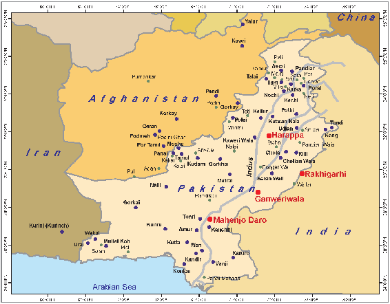
The Indus civilisation is also known as the Harappan civilisation, since Harappa was the first site to be discovered. This civilisation is known as Harappan civilisation rather than Indus Valley civilisation, since it extended beyond the Indus river valley.
The Harappans practiced agriculture. They cultivated wheat, barley and various types of millets. They adopted a double cropping system. Pastoralism was also known to them. They reared cattle, sheep and goats. They had knowledge of various animals including elephants but did not use horses. The Harappan cattle are called Zebu, and it is a large breed, often represented in their seals.
The Harappans used painted pottery. Their potteries have a deep red slip and black paintings. The pottery has shapes like dish-on-stands, storage jars, perforated jars, goblets, S-shaped jars, plates, dishes, bowls and pots. The painted motifs, generally noticed on the pottery, depict pipal tree leaves, fish-scale designs, intersecting circles, zigzag lines, horizontal bands, and geometrical motifs, and floral and faunal patterns.
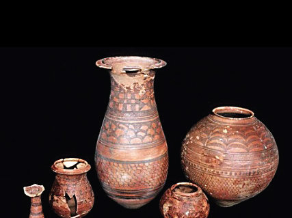
Harappan painted Pottery
The Harappans used chert blades, copper objects and bone and ivory tools. They did not possess knowledge about iron. The tools and equipments such as points, chisels, needles, fishhooks, razors, weighing pans, mirror and antimony rods were made of bronze. The chisels made out of Rohri chert were used by the Harappans. Their weapons included arrows, spears, a chisel-bladed tool and axe. The bronze image of dancing girl from Mohenjo-Daro is suggestive of the use of lost-wax process.
Rohri chert refers to the chert raw material collected from Rohri in Pakistan. It was used by the Harappans for making blades. The Harappans used both stone and bronze tools.
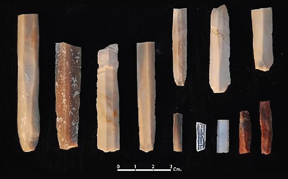
Rohri chert blades Shikarpur, Gujarat
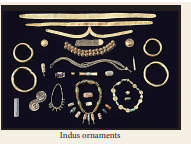
The Harappans used metal and stone ornaments. They had knowledge of cotton and silk textiles. They made carnelian, copper and gold ornaments. Faience, stoneware and shell bangles were also used. Some of them had etched designs, and the Harappans exported them to the Mesopotamia.
The Harappans had close trade links with the Mesopotamians. Harappan seals have been found in the West Asian sites namely Oman, Bahrain, Iraq and Iran. The cuneiform inscriptions mention the trade contacts between Mesopotamia and the Harappans. The mention of ‘Meluhha’ in the cuneiform inscriptions is considered to refer to the Indus region.
The Harappans developed a system of proper weights and measures. Since they engaged in commercial transactions, they needed standard measures. The cubical chert weights are found at the Harappan sites. The copper plates for weighing balances have also been found. The weights point to their knowledge of the binary system. The ratio of weighing is doubled as 1 isto 2 isto 4 isto 8 isto 16 isto 32.
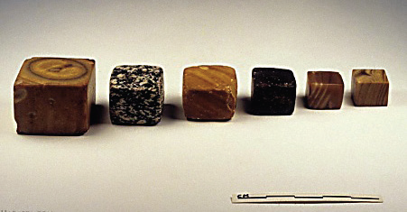
Weights of Harappan civilization
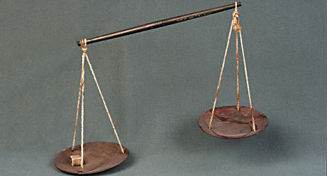
Copper balance from Mohenjo-Daro
The seals from various media such as steatite, copper, terracotta and ivory are found in the Harappan sites. They were probably used in the trade activities. The Harappan script is not yet deciphered. About
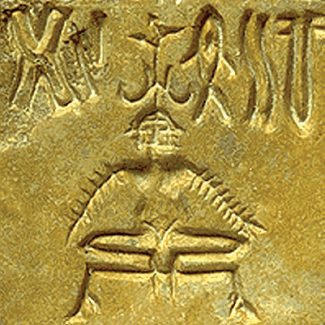
\A seal with the script
5,000 texts have been documented from the Harappan sites. Some scholars are of the view that the script is in Dravidian language
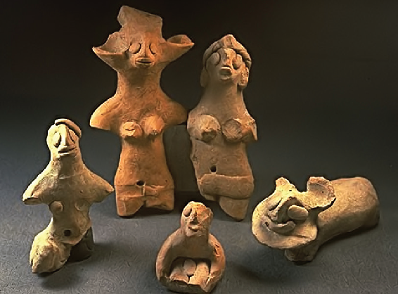
Terracotta toys
The terracotta figurines, paintings on the pottery and the bronze images from the Harappan sites suggest the artistic skills of the Harappans. ‘Priest king’ made of steatite and dancing girl made of bronze (both from Mohenjo-Daro) as well as stone sculptures from Harappa, Mohenjo-Daro and Dholavira are the important objects of art. Toy carts, rattles, wheels, tops, marbles and hop scotches made in terracotta suggest the amusement of the Harappan people.
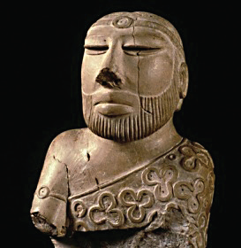
The priest king, Mohenjo-Daro
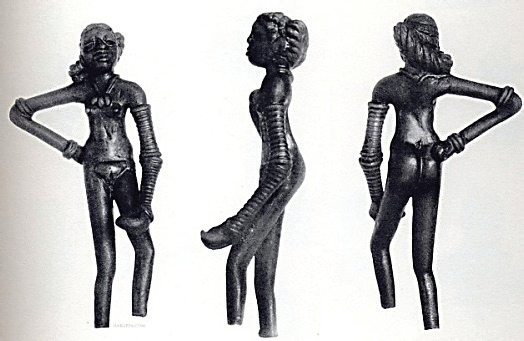
The Dancing Girl from Mohenjo-Daro
The Indus people had a close relationship with nature. They worshipped pipal trees. Some of the terracotta figures resemble the mother Goddess. Fire altars have been identified at Kalibangan. The Indus people buried the dead. Burials were done elaborately and evidence for cremation has also been found.
The authors of the Harappan civilisation are not known, since the script has not been deciphered. One school of thought argues that they spoke the Dravidian language. The archaeological evidence shows movement of the Harappans to the east and south after the decline of the Indus civilisation. It is probable that some of the Harappan people moved into different parts of India. Only the decipherment of the script can give a definite answer.
Indus civilisation had more than one group of people. Several groups including farmers, pastoralists and hunter-gatherers lived in the Indus region. The Indus region had villages and large towns. The population was mixed.
The period of the civilisation has been divided into Early Harappan, starting around 3300 BC (BCE) and continuing to 2600 BC (BCE) and mature Harappan, are the last phase civilisation from 2600 to 1900 BC (BCE). The later Harappan existed upto 1700 BC (BCE).
The Indus civilisation and its urban features started declining from about 1900 BC (BCE). Changes in climate, decline of the trade with Mesopotamia and drying up or flooding of the river Indus, foreign invasion were some of the reasons attributed to the collapse of this civilisation and for the migration of people in the southern and eastern directions. It did not completely disappear. It continued as rural culture.
Harappans knew the art of writing. The script is found on seals, in moulded terracotta and on pottery. It has not been deciphered till now. Because the Indus texts are very short, the average length of the inscription is less than five signs. It has no bilingual text (like a Rosetta stone written in Egyptian and Greek). Hence deciphering the script is difficult. It was written generally from right to left.
According to Parpola, the sign of the Indus script is likely to represent Dravidian mono-syllabic roots
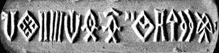
After the Neolithic Age, civilisations sprang and grew in the Bronze Age.
People began their settled life in planned towns and began to involve in trade and exchange. Science and
technology developed.
The civilisations are relatively complex social systems.
The Egyptian civilisation excelled in architecture and the pyramids were its important contribution.
The Mesopotamian civilisation contributed to the development of calendar system and astronomy.
The Chinese civilisation contributed in terms of philosophy and inventions.
The Indus civilisation produced a variety of commodities using innovative techniques. It had cultural contacts with
West Asia.
1. The earliest signs to denote words through pictures
Option a. Calligraphy
Option b. Pictographic
Option c. Ideographic
Option d. Stratigraphic
2. The preservation process of dead body in ancient Egypt
Option a. Sarcophagus
Option b. Hyksos
Option c. Mummification
Option d. Polytheism
3. The Sumerian system of writing
Option a. Pictographic
Option b. Hieroglyphic
Option c. Sonogram
Option d. Cuneiform
4. The Harappans did not have the knowledge of
Option a. Gold and Elephant
Option b. Horse and Iron
Option c. Sheep and Silver
Option d. Ox and Platinum
5. The Bronze image suggestive of the use of lost-wax process known to the Indus people.
Option a. Jar
Option b. Priest king
Option c. Dancing girl
Option d. Bird
6. 1. The oldest civilisation in Mesopotamia belonged to the Akkadians.
2. The Chinese developed the Hieroglyphic system.
3. The Euphrates and Tigris drain into the Mannar Gulf.
4.Hammurabi, the king of Babylon was a great law maker.
Option a. 1.is correct
Option b.1.and 2. are correct
Option c.3.is correct
Option d. 4.is correct
7. 1.Yangtze River is known as Sorrow of China.
2. Wu-Ti constructed the Great Wall of China.
3. Chinese invented gun powder.
4. According to traditions Mencius was the founder of Taoism.
Option a.1. is correct
Option b.2. is correct
Option c. 3. is correct
Option d. 3. and 4. are correct
8. What is the correct chronological order of four civilisations of Mesopotamia
Option a. Sumerians Assyrians Akkadians Babylonians
Option b. Babylonians Sumerians Assyrians Akkadians
Option c. Sumerians Akkadians Babylonians - Assyrians
Option d. Babylonians Assyrians Akkadians Sumerians
9. Assertion A Assyrians of Mesopotamian civilisation were contemporaries of Indus civilization
Reason R The Documents of an Assyrian ruler refer to the ships from Meluha
Option a. A and R are correct and A explains R
Option b. A and R are correct but A doesn’t explain R
Option c. A is incorrect but R is correct
Option d. Both A and R are incorrect
1. DASH is a massive lime stone image of a lion with a human head.
2. The early form of writing of the Egyptians is known as DASH.
3. DASH specifies the Laws related to various crimes in ancient Babylonia.
4. DASH was the master archive keeper of Chou state, according to traditions.
5. The DASH figurines and paintings on the pottery from the sites suggest the artistic skills of the Harappans.
1. a. The Great Bath at Harappa is well-built with several adjacent rooms.
b. The cuneiform inscriptions relate to the epic of Gilgamesh.
c. The terracotta figurines and dancing girl made of copper suggest the artistic skills of Egyptians.
d. The Mesopotamians devised a solar calendar system.
2. a. Amon was an "Egyptian God".
b. The fortified Harappan city had the temples.
c. The great sphinx is a pyramid-shaped monument found in ancient Mesopotamia.
d. The invention of the potter’s wheel is credited to the Egyptians.
1. Pharaoh - A kind of grass
2. Papyrus - the oldest written story on Earth
3. Great Law maker - Mohenjo-Daro
4. Gilgamesh - Hammurabi
5. The Great Bath - The Egyptian king
1. The Egyptians excelled in art and architecture Illustrate.
2. State the salient features of the Ziggurats
3. Hammurabi Code is an important legal document. Explain.
6. Answer the following in Detail
1. Define the terms Hieroglyphics and Cuneiform with their main features.
2. To what extent is the Chinese influence reflected in the fields of philosophy and literature.
3. Write about the hidden treasure of Indus civilisation.
Mark the areas of Bronze Age civilisation on the world map.
Prepare a chart on the pyramids and the mummies.
Collect the pictures of the seals and the pottery of Indus people.
Prepare a hand out comparing the ancient world civilisations. Prepare a scrap book collecting pictures on Indus civilisation from website
1.Chris Scarre. The Human Past: World Prehistory and the Development of Human Societies. Thames and Hudson.
2. G.L.Possehl. Indus Age-The Beginnings. Oxford and IBH Publications.
3. J.M.Kenoyer. Ancient Cities of the Indus Valley Civilisation. American Institute of Pakistan Studies.
1. https://www.britannica.com
2. http://www.ancient-origins.net
Explore ancient architecture
Steps
Type the URL given below or scan the QR code. Then press the enter key.
Click the ‘Full Screen’ to view the architecture.
Explore the options given at the left lower side. Click ‘Open Google Map’. Drag the mouse and rotate the ‘Red Shaded Area’ in it to watch the area in 360° view or use the arrow keys for the same view
Keep the cursor on question marks to get details about that place.
Website URL:
http://www.airpano.com/files/Ancient-World/2-2
The objectives of this lesson are to familiarize yourself with
Tamil literary, archaeological, epigraphic and non-Tamil text sources for the study of the early Tamil society
Thinai-based life in the society
Literature, polity, society, economy and urbanization during the period
Tamil civilization, as we have seen, begins atleast three centuries before the Common Era (AD (CE)). As seafaring people, Tamil traders and sailors established commercial and cultural links across the seas and merchants from foreign territories also visited the Tamil region. The resulting cultural and mercantile activities and internal developments led to urbanization in this region. Towns and ports emerged. Coins and currency came into circulation. Written documents were produced. The Tamil-Brahmi script was adopted to write the Tamil language. Classical Tamil poems were composed.
The sources for reconstructing the history of the ancient Tamils are:
1. Classical Tamil literature
2. Epigraphy (inscriptions)
3. Archaeological excavations and material culture
4. Non-Tamil and Foreign Literature
The Classical Sangam corpus (collection) consists of the Tholkappiyam, the Pathinen Melkanakku (18 Major works) and the Pathinen Kilkanakku (18 minor works) and the five epics.
Tholkappiyam, attributed to Tholkappiyar, is the earliest written work on Tamil grammar. Apart from elaborating the rules of grammar, the third section of Tholkappiyam also describes poetic conventions that provide information on Tamil social life.
The texts of Pathinen Melkanakku include Pathupaattu (ten Idylls) and Ettuthogai (the eight anthologies). These texts are the oldest among the classical Tamil texts. The texts of Pathinen Kilkanakku belong to a later date.
1 Nattrinai
2 Kurunthogai
3 Paripaadal (
4 Pathittrupathu
5 Aingurunuru
6 Kalithogai
7 Akanaanuru (8) Puranaanuru
1 Thirumurugatrupadai
2 Porunaratrupadai
3 Perumpanatruppadai
4 Sirupanatrupadai
5 Mullaipaattu
6 Nedunalvaadai
7 Maduraikanchi
8 Kurinjipaattu
9 Pattinappaalai
10 Malaipadukadam
The Pathinen Kilkanakku comprises eighteen texts elaborating on ethics and morals. The pre-eminent work among these is the Thirukkural composed by Thiruvalluvar. In 1330 couplets Thirukkural considers questions of morality, statecraft and love.
The epics or Kappiyams are long narrative poem of very high quality. They are,
1 Silappathikaaram 2 Manimekalai 3 Seevaka Chinthamani 4 Valaiyapathi 5 Kundalakesi
Epigraphy is the study of inscriptions. Inscriptions are documents scripted on stone, copper plates, and other media such as coins, rings, etc. The development of script marks the beginning of the historical period.
Tamil-Brahmi inscriptions have been found in more than 30 sites in Tamil Nadu mostly on cave surfaces and rock shelters. These caves were the abodes of monks, mostly Jaina monks. The natural caves were converted into residence by cutting a drip-line to keep rain water away from the cave. Inscriptions often occur below such drip-lines. The sites have smooth stone beds carved on rock surface for monks who led a simple life and lived in these shelters. Merchants and kings converted these natural formations as habitation for monks, who had renounced worldly life. Mangulam, Muttupatti, Pugalur, Arachalur and Kongarpuliyankulam and Jambai are some of the major sites of such caves with Tamil-Brahmi inscriptions. Around Madurai many such caves with Tamil - Brahmi inscriptions can still be seen. Many of them are located along ancient trade routes.
A drip-line at a rock cave with Tamil-Brahmi inscription
Note: You will notice that among the old inscriptions, people (both local and tourists) have marked their names thereby destroying some of the ancient inscriptions. Such acts of destruction of heritage property or property belonging to others are called vandalism.
The Tamil-Brahmi inscription at Arachalur
Estampage copy of the above inscription
A rock bed at K. Puliankulam
Hero stones are memorials erected for those who lost their lives in the battles and in cattle raids. As cattle were considered an important source of wealth, raiding cattle owned by adjoining tribes and clans was common practice in a pastoral society. During the Sangam Age, the Mullai landscape followed the pastoral way of life. Tribal chieft ains plundered the cattle wealth of enemies whose warriors fought to protect their cattle. Many warriors died in such battles and were remembered as martyrs. Memorial stones were erected in their honour. Sangam literature vividly portrays these battles and clashes, and describes such hero stones as objects of worship. Tholkappiyam describes the procedures for erecting hero stones.
Hero stones of the Sangam Age with Tamil-Brahmi inscriptions can be found at Pulimankombai and Thathapatti in Theni district and Porpanaikottai in Pudukkottai district. Those of the Sangam Age discovered till now do not have images or sculptures.
Pulimankombai is a village in the Vaigai river valley in Theni district. In 2006, rare hero stone inscriptions in Tamil-Brahmi script were discovered in this village.
One of the inscriptions from Pulimankombai reads
“Kudalur Akol pedu tiyan antavan kal”
It means "The stone of Tiyan Antavan who was killed in a cattle raid at the village of Kudalur".
Hero stone-Pulimankombai
Hero stones of the post-Sangam Age and the Pallava period occur in large numbers in pastoral regions especially around the Chengam region near Thiruvannamalai district. These hero stones have inscriptions and the images of warriors and names of heroes.
Pottery vessels from the Early Historic Period have names of people engraved on them in Tamil-Brahmi script. Potsherds have been discovered in Arikkamedu, Azhagankulam, Kodumanal, Keezhadi, and many other sites in Tamil Nadu. Pottery inscribed with names in Tamil-Brahmi script have also been found in Berenike and Quseir al Qadhim in Egypt and in Khor Rori in Oman indicating that early Tamils had trade contacts with West Asia and along the Red Sea coast. People etched their names on pottery to indicate ownership. Many of the names are in Tamil while some are in Prakrit
Prakrit was the language used by the common people in the Northern part of India during the Mauryan period.
Archaeological excavation refers to systematically digging a site to recover material evidence for exploring and interpreting societies of the past.
Archaeological excavations at the early historic sites are the source of evidence of the activities of the Sangam Age people. Excavations at Arikkamedu, Azhagankulam, Uraiyur, Kanchipuram, Kaveripoompattinam, Korkai, Vasavasamudram, Keezhadi, Kodumanal in Tamil Nadu, and Pattanam in Kerala provide the evidence we have of this period.
Arikkamedu, near Puducherry, is a Sangam Age port, excavated by the Archaeological Survey of India (ASI). British archaeologist, Robert Eric Mortimer Wheeler, French Archaeologist, J.M. Casal, and Indian archaeologists, A. Ghosh and Krishna Deva, excavated this site. They found evidence of a planned town, warehouse, streets, tanks and ring wells.
The Archaeological Survey of India (ASI) is a Central government agency that manages archaeological sites and monuments in India. The Government of Tamil Nadu has its own department for archaeology called the Tamil Nadu State Department of Archaeology. The Indian Treasure Trove Act (1878), the Antiquities and Art Treasures Act (1972), the Ancient Monuments and Archaeological Sites and Remains Act (1958) are legislation related to the preservation of archaeological remains in India.
Archaeologists have found evidence of brick structures and industrial activities, as well as artefacts such as beads, bangles, cameos, intaglios, and other materials in these sites. Tamil-Brahmi inscriptions on pottery and coins have also been unearthed. Evidences of the various arts, crafts and industries together help us reconstruct the way of life of the people of those times. From this we learn and understand how they might have lived
Cameo an ornament made in precious stone where images are carved on the surface.
Intaglio an ornament in which images are carved as recess, below the surface
Coins as a medium of exchange were introduced for the first time in the Sangam Age. The coins of the Cheras, the Cholas and the Pandyas, punch-marked coins, and Roman coins form another important source of evidence from the Sangam Age. Punch-marked coins have been found at Kodumanal and Bodinayakkanur. Roman coins are concentrated in the Coimbatore region, and are found at Azhagankulam, Karur, and Madurai. They were used as bullion for their metal value and as ornaments.
Roman Coins – Pudukkottai
Bullion means precious metal available in the form of ingots.
Punch-marked coins are the earliest coins used in India. They are mostly made of silver and have numerous symbols punched on them. Hence, they are known as punch-marked coins
Punch-marked coins
Non-Tamil literary sources also offer information on early Tamil society. The presence of the non-Tamil sources reveals the extensive contacts and interactions of the early Tamil society with the outside world
Arthasastra, the classic work on economy and statecraft authored by Kautilya during the Mauryan period, refers to Pandya kavataka. It may mean the pearl and shells from the Pandyan country.
Mahavamsa, the Sri Lankan Buddhist chronicle, composed in the Pali language, mentions merchants and horse traders from Tamil Nadu and South India.
Chronicle is a narrative text presenting the important historical events in chronological order.
Periplus of Erythrean Sea is an ancient Greek text whose author is not known. The term Periplus means navigational guide used by sailors. Erythrean Sea refers to the waters around the Red Sea. It makes references to the Sangam Age ports of Muciri, Thondi, Korkai and Kumari, as well as the Cheras and the Pandyas.
Pliny the Elder, was a Roman who wrote Natural History. Written in Latin, it is a text on the natural wealth of the Roman Empire. Pliny speaks about the pepper trade with India. He states that it took 40 days to reach India, from Ocealis near North East Africa, if the south west monsoon wind was favourable. He also mentions that the Pandyas of Madurai controlled the port of Bacare on the Kerala coast. The current name of Bacare is not known. Pliny laments the loss of Roman wealth due to Rome’s pepper trade with India indication of the huge volume useful of the pepper that was traded.
Ptolemy’s Geography is a gazetteer and atlas of Roman times providing geographical details of the Roman Empire in the second century AD (CE). Kaveripoompattinam (Khaberis Emporium), Korkai (Kolkoi), Kanniyakumari
(Komaria), and Muciri (Muziris) are some of the places mentioned in his Geography.
Map of Peutingerian table
Peutingerian table is an illustrated map of the Roman roads. It shows the areas of ancient Tamilagam and the port of Muziris.
Note: Taprobane refers to Sri Lanka as Island. Muziris refers to the port of Muchiri.
Vienna papyrus, a Greek document datable to the second century AD (CE), mentions Muciri’s trade of olden days. It is in the Papyrus Museum attached to the Austrian National Library, Vienna (Austria). It contains a written agreement between traders and mentions the name of a ship, Hermapollon, and lists articles of export such as pepper and ivory that were shipped from India to the Roman Empire.
Papyrus, a paper produced out of the papyrus plant used extensively for writing purposes in ancient Egypt.
The Sangam Age or the Early Historic period is an important phase in the history of South India. This period is marked out from prehistory, because of the availability of textual sources, namely Sangam literature and Tamil- Brahmi inscriptions. Sangam text is a vast corpus of literature that serves as an important source for the study of the people and society of the relevant period.
There is considerable debate among scholars about the age and chronology of Sangam society. The Sangam texts are generally dated to between third century BC (BC (BCE)) and the third century AD (CE). The references in Greco-Roman texts, Tamil-Brahmi inscriptions and the references to the Cheras, Cholas and the Pandyas in the Ashokan inscription corroborate this date. It is generally agreed that the Sangam poems were composed in the early part of the historical period, but were compiled into anthologies in the later period.
Ashokan Brahmi - the Brahmi script used in Ashokan edicts or inscriptions.
The concept of Thinai is presented in the Tamil Grammar work of Tholkappiyam and this concept is essential to understand the classical Tamil poems. Thinai is a poetic theme, which means a class or category and refers to a habitat or eco-zone with specific physiographical characteristics. Sangam poems are set in these specific eco-zones and reveal that human life has deep relationships with nature
The themes of the poems are broadly defined as akam (interior) and puram (exterior). Akathinai refers to various situations of love and family life, while Purathinai is concerned with all others aspects of life and deals particularly with war and heroism.
Tamilagam was divided into five landscapes. Each region had distinct characteristics – a presiding deity, occupation, people and cultural life according to its specific environmental conditions. This classification has been interpreted by scholars to reflect real life situations in these landscapes.
The five landscapes are Kurunji, Mullai, Marutham, Neythal and Paalai.
Kurunji refers to the hilly and mountainous region
Mullai is forested and pastoral region.
Marutham is the fertile riverine valley.
Neythal is coastal region.
Paalai is sandy desert region.
The Sangam Age has its roots in the Iron Age. In the Iron Age people were organised into chiefdoms. From such communities of Iron Age emerged the Vendhars of the early historic period and the Velirs of the Sangam Age were chieftains.
The Mauryan emperor, Asoka, conquered Kalinga (Odisha) and parts of Andhra and Karnataka regions.
Among the political powers of the Sangam Age, the Cheras, the Cholas and the Pandyas occupied pre-eminent positions. They were known as Muvendhar (the three kings). The muvendhar controlled the major towns and ports of the Sangam period.
The Cheras, referred to as Keralaputras in the Ashokan inscriptions, controlled the region of present-day Kerala and also the western parts of Tamil Nadu. Vanci was the capital of the Cheras while Muciri and Thondi were their port towns. Vanci is identified with Karur in Tamil Nadu while some others identify it with Thiruvanchaikkalam in Kerala. Pathirtruppathu speaks about the Chera kings and their territory. The Cheras wore garlands made from the flowers of the palm tree. The inscriptions of Pugalur near Karur mention the Chera kings of three generations. Coins of Chera kings have been found in Karur.
A Chera coin with bow and arrow, and an elephant goad on the obverse and elephant on the reverse
A map of major Sangam Age sites
garlands made from the flowers of the palm tree. The inscriptions of Pugalur near Karur mention the Chera kings of three generations. Coins of Chera kings have been found in Karur. The Silappathikaram speaks about Cheran Senguttuvan, who built a temple for Kannagi, the protagonist of the epic. Legend has it that Ilango who composed the Silappathikaram, was the brother of Cheran Senguttuvan. The bow and arrow was the symbol of the Cheras.
The Cholas ruled over the Kaveri delta and northern parts of Tamil Nadu. Their capital was Uraiyur and their port town was Kaveripoompattinam or Pumpuhar, where the river Kaveri drains into the Bay of Bengal. Pattinappaalai is a long poem about Kaveripoompattinam composed by the poet Kadiyalur Uruthirankannanar. Silappathikaram describes the trading activities at Kaveripoompattinam. Karikalan is notable among the Chola kings and is credited with bringing forestlands under the plough and developing irrigation facilities by effectively utilising the water from the river Kaveri.
The foundation for the extensive harnessing of water for irrigation purposes, which reached its zenith in later Chola times (10th to 13th centuries) was laid in his time. Karikalan fought battles with the Pandyas, the Cheras and other chieftains. The Chola emblem was tiger and they issued square copper coins with images of a tiger on the obverse, elephant and the sacred symbols on the reverse.
The Pandyas who ruled the southern part of Tamil Nadu are referred in the Ashokan inscriptions. Madurai was the Pandya’s capital. Tamil literary tradition credits Pandyan rulers with patronizing Tamil Sangams (academies) and supporting the compilations of poems. The Mangulam Tamil-Brahmi inscription mentions the king Nedunchezhiyan. Nediyon, Mudathirumaran, Palayagasalai Mudukudumipperuvazhuthi were some of the important rulers of the dynasty. The Pandyan symbol was the fish.
Apart from the Vendhars, there were Velirs and numerous chieftains who occupied territories on the margins of the muvendhar. The velirs were the seven chiefs Pari, Kari, Ori, Nalli, Pegan, Ai and Athiyaman. Sangam poems write extensively about the generosity of these velirs. These chiefs had intimate relations with the poets of their time and were known for their large-heartedness. These chieftains had alliance with one or other of the muvendhar and helped them in their battles against the other Vendhars.
Many of the communities of the Iron Age society were organised as tribes, and some of them were Chiefdoms. The Sangam Age society was a society in transition from a tribal community ruled by a chief to a larger kingdom ruled by a king
Social stratification had begun to take root in Tamil society by the Sangam times. There were several clan-based communities including groups such as Panar, Paratavar, Eyinar, Uzhavar, Kanavar, Vettuvar and Maravar. The Vendhars, chiefs, and their associates formed the higher social groups. There were priests who were known as Antanars. There were artisan groups specialising in pottery and blacksmithy. The caste system we find in northern India did not take root in Tamil country as social groups were divided into five situational types (tamil) and related occupational patterns.
The development of agriculture and pastoral ways of life might have harmed the eco-system and the naturally available forest and wild animals. It is possible that some of the hunter-gatherers might have been pushed to the forest areas and a few might have taken up the occupation of manual labourers. The development of agriculture in the wet-land region depended on the use of certain groups of people as labourers.
Women are frequently referred to in Tamil texts as mothers, heroines, and foster-mothers. friendly Women from Panar families, dancers, poets, and royal women were all portrayed in Sangam literature. There are references to women from all five eco-zones. For example, Vennikkuyathiyar is identified as a poetess from the village of Venni. There are references to women protecting Thinai fields from birds and Umanar kula women selling salt showing that women were involved in primary production. Instances where women preferred to die along with their husbands also occur in the literature of the times.
The economy was mixed as elaborated in the Thinai concept. People practiced agriculture, pastoralism, trade and money exchange, hunting-gathering, and fishing depending upon the eco-zones in which they lived.
Agriculture was one of the main sources of subsistence. Crops like paddy, sugarcane, millets were cultivated. Both wet and dry land farming were practiced. In the riverine and tank-irrigated areas, paddy was cultivated. Millets were cultivated in dry lands. Varieties of rice such as sennel (red rice), vennel (white rice), and aivananel (a type of rice) are mentioned in the literature. Rice grains were found in burial urns at excavations in Adichanallur and Porunthal. People in the forest adopted punam or shifting cultivation.
Pastoralism – nomadic people earning livelihood by rearing cattle, sheep, and goat.
Craft production and craft specialization were important aspects of urbanization. In the Sangam Age there were professional groups that produced various commodities. The system of production of commodities is called industry.
Pottery was practised in many settlements. People used pottery produced by Kalamceyko (potters) in their daily activities and so they were made in large numbers. Black ware, russet-coated painted ware, black and red ware potteries were the different types of pottery used.
Iron manufacturing was an important artisanal activity. Iron smelting was undertaken in traditional furnaces and such furnaces, with terracotta pipes and raw ore have been found in many archaeological sites. For instance evidence of iron smelting has been found in Kodumanal and Guttur. Sangam literature speaks of blacksmiths, and their tools and activities. Iron implements were required for agriculture and warfare (swords, daggers, and spears).
Sangam Age people adorned themselves with a variety of ornaments. While the poor wore ornaments made of clay, terracotta, iron, and leaves and flowers, the rich wore jewellery made of precious stones, copper, and gold.
Gold ornaments were well known in this period. Gold coins from Roman was used to make jewellery. Evidence of gold smelting has been found at Pattanam in Kerala. Gold ornaments have been unearthed at the megalithic sites of Suttukeni, Adichanallur and Kodumanal, and towns of Arikkamedu, Keezhadi and Pattanam.
Glass Beads
The presence of glass beads at the sites reveals that people of the Sangam Age knew how to make glass beads. Glass material (silica) was melted in a furnace and drawn into long tubes which were then cut into small beads. Glass beads came in various shapes and colour. Arikkamedu and Kudikkadu, near Cuddalore show evidence of glass beads industry. It is possible that people who could not afford precious stones used glass beads instead.
The Pamban coast is famous for pearl fishery. A pearl has been discovered in recently excavated Keezhadi site. Shell bangles were very common in the Sangam Age. The Parathavars collected conch shells from the Pamban Island, which were cut and crafted into bangles by artisans. Whole shells as well as fragments of bangles have been found at many sites. Sangam literature describes women wearing shell bangles.
Textile production was another important occupation. Evidence of spindle whorls and pieces of cloth have been found at Kodumanal. Literature too refers to clothes called kalingam and other fine varieties of textiles. Periplus also mentions the fine variety of textiles produced in the Tamil region.
Spindle whorls were used for making thread from cotton.
We saw the primary production of grains, cattle wealth, and various commodities. These goods were not produced by everybody and were not produced in all settlements. Resources and commodities were not available in all regions. For example, the hill region did not have fish or salt and the coastal regions could not produce paddy. Therefore trade and exchange was important for people to have access to different commodities. This system was known as barter system.
The terms vanikan and nigama (guild) appear in Tamil-Brahmi inscriptions. There were different types of merchants: gold merchants, cloth merchants, and salt merchants. Salt merchants were called Umanars and they travelled in bullock carts along with their family.
Bullock carts and animals were used to transport goods by land. Trade routes linked the various towns of Tamilagam. Various types of water crafts and sea-going vessels such as Kalam, Pahri, Odam, Toni, Teppam, and Navai are also mentioned in Tamil literature.
Barter was the primary mode of exchange. For instance, rice was exchanged for fish. Salt was precious and a handful of it would fetch an equal amount of rice. The extensive availability of coin hoards of the Sangam Age of the Cheras, Cholas, Pandyas, and Malayaman indicates that they were used widely.
Tamil country had connections with countries overseas both in the east and west. Roman ships used monsoon winds to cross the Western Sea or the Arabian Sea to connect Tamilagam with the Western world. Spices including pepper, ivory, and precious stones were exported. Metal including gold, silver and copper and precious stones were imported.
Yavanar referred to the Westerners, including the Greeks, Romans and West Asian people. Yavana derives from the Greek region of Ionia.
An Indian jar with 7.5 kg of pepper, teak wood, a potsherd with Tamil-Brahmi inscription and Indian pottery have been discovered at Berenike, a port on the Red Sea coast of Egypt.
At Quseir al Qadhim, another port located north of Berenike on the Red Sea Coast, three Tamil-Brahmi inscriptions, Panaiori, Kanan, and Cattan, have been found on pottery discovered here.
Akanaanuru poem 149 describes the trading at the port of Muciri as follows: “the well crafted ships of the Yavana came with gold returned with pepper at the wealthy port of Muciri”
The trade route from Tamilagam to Rome
A stone with the name “Perumpatankal” has been found at Khuan Luk Pat, Thailand. Southeast Asia was known as Suvarna Bhumi in Tamil literature. This stone was used by a person called Perumpattan, probably a goldsmith. It was a touchstone used to test the purity of gold.
The Sangam Age saw the first urbanization in Tamilagam. Cities developed and they had brick buildings, roof tiles, ring wells and planned towns, streets, and store houses. The towns worked as ports and artisanal centres. Arikkamedu, Kaveripoompattinam, Azhagankulam and Korkai on the east coast and Pattanam in Kerala were port centres. Kanchipuram, Uraiyur, Karur, Madurai and Kodumanal were inland trade centres.
Many goods and commodities were produced in these centres and were exported to various regions. Though few in number, large towns appeared in the Sangam Age. Small villages however were found in many areas. Bronze vessels, beads, shell bangles, glass beads, pottery with names of people written in Tamil-Brahmi script were found at these sites.
A planned town with brick architecture and a proper layout. Urban centres have a larger population involved in non-agrarian, commercial and political occupations. Various industrial activities are seen in these towns.
Like the diverse nature of the society and economy, the belief system of the Sangam Age was also diverse. It consisted of animism, ancestor worship, hero worship and worship of several deities.
Tholkappiyam lists the presiding deities of Kurunji, Mullai, Marutham, Neythal and Paalai landscapes, as Murugan, Thirumal, Indiran, Varunan and Kotravai, respectively.
However, people also worshipped natural forces and dead heroes, and ancestors. The force of anangu is mentioned in the literature which indicates the prevalence of animistic beliefs.
Jainism was present as evidenced by the caves with Tamil-Brahmi inscriptions. Performance of Yagna is also evidenced. Buddhism was also present in certain centres. Diff erent groups practiced various forms of worship.
Various art forms too existed in the Sangam Age. Performances of ritual dances called Veriyatal are referred to in the literature. Composition of poems, playing of music instruments and dances were also known. The literature mentions the fine variety of cuisine of the Sangam Age. People took care of their appearance and evidence of antimony rods (kohl sticks) made of copper has been found in archaeological sites. They were used by women for decorating their eyebrows.
Antimony rods (kohlsticks) were made of bronze
Copper rods used for decorating eyelashes
Kodumanal, Tamil Nadu
Kodumanal is located near Erode in Tamil Nadu and is identified with the Kodumanam of Pathitrupattu. Evidence of iron, stone bead and shell work, as well as megalithic burials has been discovered at this site. More than 300 pottery inscriptions in Tamil-Brahmi have also been found.
Keezhadi near Madurai, Tamil Nadu
Keezhadi is located near Silaimaan east of Madurai, on the highway to Rameswaram. In a large coconut garden, called Pallichandai Tidal, the Archaeological Survey of India and Tamilnadu state Archaeological Department excavated an ancient town dating to the Sangam Age. Archaeological excavations have produced evidence for brick buildings, drainage, Tamil-Brahmi inscription on pottery, beads of glass, carnelian and quartz, pearl, iron objects, games pieces, and antimony rods. Further excavation may shed light on the nature of the craft production and the cultural activities undertaken at this settlement.
Tamil-Brahmi Script used in the Sangam Age for writing the Tamil Language
Similarities between graffiti of Keeladi and signs of Indus
Keeladi Excavation on the banks of Vaigai suggests that urbanization occured in Tamil Nadu too around 6th century BC (BCE) like in the Gangetic plains.
Porunai: The Cradle of Tamil Civilisation
Gold diadems
Long circular gold diadems made of thin plates with small dots of triangles with holes at the extreme ends to fasten with a string.
Ceramics and Coins indicating overseas trade The presence of foreign ceramics and black polished earthenware confirm that Tamils had a trade relationship with different parts of the world even before 6th century BC (BCE).
Primary production and exchange and social relationships in the landscapes and mercantile activities across the seas led to urbanization and development of culture paving way for the development of literature during this period.
The texts were compiled through the Tamil Academies (Sangam) at a later date.
The Thinai concept is a distinct classification of land and people as elaborated in Tholkappiyam.
The Sangam age witnessed the transition from tribal society to kingdom-centred polities.
Sea borne trade with the Indian Ocean regions developed.
Large towns with buildings made of bricks appeared in Tamil country.
The society was diverse in nature
ca. 1300 BC (BCE) to 300 BC (BCE) |
Iron Age or Megalithic Period |
ca. 300 BC (BCE) to 300 AD (CE). |
Early Historic Period / Sangam Age / Sangam Literature |
ca. 400 BC (BCE) to 300 BC (BCE) |
Introduction of Tamil-Brahmi Script |
1st Century AD (CE) |
Periplus of Erythrean Sea |
1st Century AD (CE) |
Pliny’s Natural History |
2nd Century AD (CE) |
Ptolemy’s Geography |
2nd Century AD (CE) |
Vienna Papyrus G 40822 |
ca. 300 AD (CE) to 500 AD (CE) |
Post Sangam Age |
1. The name of the script used in the Sangam Age
Option a. English
Option b.Devanagari
Option c.Tamil-Brahmi
Option d. Granta
2. The Sri Lankan chronicle composed in the Pali language mentioning about merchants and horse traders from Tamil Nadu
Option a. Deepa vamsa
Option b. Arthasastra
Option c. Mahavamsa
Option d. Indica
3. The notable Chola king credited with bringing forest lands under the plough and developing irrigational facilities
a.Karikalan
b. Rajarajan 1
c.Kulothungan
d. Rajendran 1
4. Inscription that mentions the Cheras
a. Pugalur
b. Girnar
c. Pulimankombai
d. Madurai
5. 1. Coins as a medium of exchange were introduced for the first time in the Mesolithic Age.
2. Prakrit was the language used by the common people in Northern India during the Mauryan period.
3. Vienna Papyrus, a Roman document, mentions trade related to Muziri.
4. The concept of Thinai is presented in the Tamil grammar work of Pathupaattu
a.1. is correct
b. 2. is correct
c. 2. and 3. are correct
d. 3. and 4. are correct
6. 1. Pathitrupathu speaks about the Pandya kings and their territory.
2. The Akanaanuru describes the trading activities at Kaveripoompattinum.
3. The Chola Emblem was the tiger and they issued square copper coins with images of a tiger.
4. Neythal is a sandy desert region.
a. 1. is correct
b. 2. and 3. are correct
c. 3. is correct
d. 4. is correct
1. DASH are documents scripted on stones, copper plates, coins and rings.
2. DASH refers to systematically digging a site to recover material evidence for exploring societies of the past.
3. DASH the classic work on economy and statecraft authored by Kautilya during the Mauryan period.
4. DASH is a poetic theme which means a class or category and refers to a habitat or eco-zone with specific physiographical characteristics.
5. DASH referred to the Westerners, including the Greeks, Romans and West Asian people.
1. a. Evidence of iron smelting has been found in Kodumanal and Guttur.
b. Periplus of Erythren Sea mentions about the pepper trade with India.
c Punch marked coins are the earliest coins used in India mostly made of gold.
d. The Sangam Age has its roots in the Bronze Age.
2. a. The Cheras ruled over Kaveri delta and their capital was Uraiyur.
b. The Maangulam Tamil-Brahmi inscriptions mention the King Karikalan.
c.The terms Vanikan and Nigama appear in Tamil-Brahmi inscriptions were different types of merchants.
d. Salt merchants were called Vanikars and they travelled in bullock carts along with their family
1. Epigraphy a narrative text presenting the important historical events
2. Chronicle a Sangam Age port
3. Pastoralism an ornament made in precious stone.
4. Cameo the study of inscriptions
5. Arikkamedu nomadic people earning livelihood by rearing cattle.
1. Archaeological sites provide evidence of past history Discuss.
2. How important are coins as a source of evidence for the study of Sangam Age?
3. Agriculture was one of the main sources of subsistence in Sangam Age. Give reasons.
4. Overseas interactions brought glory to ancient Tamilagam. Give examples in support
6. Answer the following in detail
1. To what extent do you think the political powers of Tamilagam influenced Sangam Age polity?
2. Indicate how the industries and crafts of the Sangam Age contribute to their economy
Mark on the map of south India, the ancient Tamilagam and the territories of Tamil kingdoms.Visit a museum and collect information about inscriptions, coins and instruments used by the ancient people.
Visit the early historic sites of Arikkamedu, Kaveripoompattinam, Keezhadi etc.,
Conduct a study on materials excavated from prehistoric sites and on Tamil - Brahmi script.
A power-point presentation on the origin of human life
1. கா. இராசன், தொல்லியல் நோக்கில் சங்ககாலம், உலகத் தமிழாராய்ச்சி நிறுவனம்.
2. Champakalakshmi. R, Archaeology and Tamil Literary Tradition. Puratattva
3. Rajan Gurukkal, Social Formation in South India. Oxford University Press
1. https://www.britannica.com
2. https: / / sangamtamil literature . wordpress.com
3. http://www.archeologia.univ
Finding Arikamedu
Steps
1. Type the given URL in browser or scan the QR code.
2. Click ‘Bhuvan 2D’.
3. Type Arikamedu in search box. Click ‘Search’ button or press the ‘Enter key’.
4. Select the ‘Satellite’ option given at the right side to watch the area in satellite view. Click ‘+’ or ‘- underscore‘signs given at the left side to’ zoom in ‘or ‘zoom out’.
Website URL:
http://bhuvan.nrsc.gov. in/bhuvan_links.php#
Website URL:
https://play.google.com/store/apps/details?id=com.prajwal.history. science.isro.bhuvan.earth.map.satellite
To understand the transition of society from 6th century to 2nd century BC (BCE)
To familiarise ourselves with the essence of new religious faiths: Buddhism, Jainism and Ajivika in India,
Zoroastrianism in Persia, and Confucianism and Taoism in China
To become aware of the circumstances that led to the formation of states with a focus on Magadha Empire
To understand the socio-political changes of the pre-Mauryan and Mauryan states
A new civilisation began to develop in northern India, with the revival of trade and urbanization during the sixth century BC (BCE). In this period of major political and social changes in north India, Buddha and Mahavira were born. In the century following their death, Buddhism and Jainism took root as major religions in India. This meant that new religious orders were coming up with many followers, propagating new beliefs and philosophies. Similarly, Zoroastrianism in Persia and Confucianism and Taoism in China became popular during this period.
The new civilisations that emerged in the new Iron Age had certain common features. They were characterised by the proliferation of new crafts, growth of long-distance trade, building of cities and towns, rise of universalistic religions and evolution of a code of conduct. Sixth century BC (BCE) was, therefore, a period of exceptional development in all spheres of life such as material, cultural and intellectual. About this time, we find that a number of prominent men, great thinkers and founders of new religions lived, making it a period of great historical importance. Philosophical and religious thinkers such as Confucius in China, Zoroaster in Iran and Mahavira and Buddha in India gained popularity in sixth century BC (BCE).
In the sixth century BC (BCE), two great thinkers were born in China: Confucius and Lao-Tse. They laid down the systems of morals and social behaviour for individuals and communities. But after their death, temples were built in their memory and the philosophy they taught was developed into a religion. Known as Confucianism and Taoism respectively, their books were held in great reverence in China. Confucianism exerted a big influence on not only the political class of China but also on the common people.
Confucius was born in the Shantung province of China in 551 BC (BCE). He studied history, poetry, philosophy and music. He is the author of five important works: (1) The Book of Records, which is chiefly ethical, providing guidelines for the regulation of human society; (2) The Book of Odes, illustrating the sound principles of morality in songs; (3) The Book of Changes dealing with metaphysics; (4) The Spring and Autumn Annals, a code of political morality; and (5) The Book of History narrating the events and legends of the early religions of China.
1. Humaneness
2. Righteousness
3. Propriety
4. Wisdom
5. Trustworthiness
Confucius said that wisdom grows from the family, and that the foundation of society is the disciplined individual in an orderly family. The superior man, according to him, is not merely intelligent or scholarly, but his character should be exemplary. The superior man of Confucius possesses three virtues: intelligence, courage and goodwill. Though Confucius insisted on children obeying parents and wife her husband, he also clearly proposed that “when the command is wrong a son should resist his father and a minister should resist the prince.” When asked about government, he said that there are three requisites for it: “There should be sufficiency of food, sufficiency of military equipment and confidence of the people in their ruler.”
Lao-Tse, the greatest of the pre-Confucian philosophers, was 53 years older than Confucius. Lao-Tse was born in 604 BC (BCE). Disgusted with the intrigues of politicians and the prevailing corruption of his time, he left China to live in a peaceful abode. Lao-Tse wrote a book in two parts, running into 5,000 words. He then disappeared from the place and no one knew where he died. His book Tao Teh Ching is a guide to the conduct of life.
The cause of human unhappiness in the world is human selfishness. Selfishness creates unlimited human desires, which can never be satisfied.
In nature, all the things act in a natural way. The law of human conduct must correspond with nature.
Humans live a life under the regulation of someone. This is because they have acquired knowledge and have not remained innocent. On the basis of their acquired knowledge, they have built up an urban civilisation and have made themselves unhappy.
Zoroastrianism is one of the oldest of the revealed world religions. It remained as the state religion of three great Iranian empires, which flourished from the 6th century BC (BCE) and dominated much of the Middle East. Zoroaster of Persia is the founder of Zoroastrianism. Zoroaster was pained to find his people worshipping primitive deities. He revolted against it and proclaimed to the world that there is one god, Ahura Mazda (the Lord of Light).
The holy book of Zoroastrians is Zend Avesta. It is a collection of sacred literature of different epochs, containing religious hymns, invocations, prayers, confessions, laws, myths and sacred reminiscences. The doctrines and rituals of the Zoroastrians have much similarity to those of the Vedas.
Zoroaster taught that the great object of religion, state or society is the cultivation of morality. The highest religious conception is purity of thought, word and deed. He asserted that Ahura Mazda has seven qualities:(1) light; (2) good mind; (3) right; (4) dominion; (5) piety; (6) well-being; and (7) immortality. Ahura Mazda is omniscient (knows everything), omnipotent (all powerful) and omnipresent (is everywhere). In Zoroastrianism, sacrifice and image worship were discarded. Fire was worshipped as a symbol of the deity and considered the highest form of worship. Charity was made an essential part of religion, and service to the poor was particularly emphasised.
In the Gangetic valley, people learnt to produce crops more than that was required for subsistence. So, another section of people took up some professional crafts as their livelihood. Like the farmers, these craftsmen also had to rely on a group of people who collected raw materials and distributed the craft products. Early urbanisation happened in two ways. One was as a result of some villages specialising in black smithy, pottery, carpentry, cloth weaving and the like. The other was on account of the congregation of specialised craftsmen in villages close to where the raw materials were available and where markets were present. Such a concentration enabled villages to evolve into towns and exchange centres. Vaisali, Shravasti, Rajagriha, Kausambi and Kashi were some significant commercial centres of the Gangetic plain.
Three more Vedas –Yajur, Sama and Atharva –were composed after the Rig Veda. Manuals of rituals called Brahmanas, specifying rhyming words to be sung, and two commentaries on certain Rig Vedic hymns called Aranyakas, containing knowledge to be learnt secretly in the forest, and the Upanishads, were compiled in the upper Gangetic plain during 1000–600 BC (BCE).
In the Gangetic plain, iron plough agriculture required the use of bullocks. But the indiscriminate killing of cattle for Vedic rituals and sacrifices caused resentment. The founders of Jainism and Buddhism did not prescribe killing as a religious rite. They secured their livelihood mostly by alms. Celibacy and abstinence from holding property made the new teachers much more acceptable than the Brahman priests. The people’s resentment about the expensive and elaborate Vedic rituals, animal sacrifice and the desire for wealth eventually took them towards Jainism and Buddhism.
Mahavira and Buddha lived a life of purity and exemplified simplicity and self-denial. They lived in the times of Bimbisara and Ajatashatru, the famous kings of Magadha. The commercial development of the northern cities like Kaushambi, Kushinagara, Benaras, Vaishali and Rajagriha added importance to the Vaishyas who turned to Buddhism and Jainism in their eagerness to improve their social status.
Vardhamana Mahavira was born in 599 BC (BCE) at Kundagrama near Vaishali. His mother was Trishala, a Lichchavi princess. He spent his early life as a prince and was married to a princess named Yashoda. The couple had a daughter. At the age of thirty, he left his home and became an ascetic. For over twelve years, Mahavira wandered from place to place, subjecting himself to severe penance and self-mortification. In the thirteenth year of his asceticism, he acquired the highest knowledge and came to be known as Jaina (the conqueror) and Mahavira (great hero). Jains believe that Mahavira came in a long line of Tirthankaras and he was the twenty fourth and the last of them. Rishabha was the first Tirthankara and Parshvanath the penultimate or the twenty third. Mahavira travelled extensively as a preacher in the kingdoms of Magadha, Videha and Anga. Magadha rulers Bimbisara and Ajatashatru were influenced by his teachings. Thousands of people became his followers. After 30 years of preaching, Mahavira died at Pawapuri in 527 BC (BCE) at the age of seventy-two.
The statue of Bahubali (known as Gomateswara, 57 feet) at Shravanabelgola in Karnataka is the tallest Jaina statue ever carved out in India.
Bahubali
The three principles of Jainism, also known as Tri-ratnas, are the following:
1. Right faith: Belief in the teachings and wisdom of Mahavira.
2. Right knowledge: Acceptance of the theory that there is no God and that the world existed without a creator.
3. Right action: It refers to the Mahavira’s observance of the five great vows: (a) ahimsa, (b) honesty, (c) kindness, (d) truthfulness and (e) not coveting or desiring things belonging to others
In order to spread his new faith, Mahavira founded monasteries. The Jaina monks who led a very austere life. In North India, this new faith was patronised by rulers such as Dhana Nanda, Chadragupta Maurya and Kharavela. There was a notable followers of Jainism in Karnataka and western India during the 4th century BC (BCE). Jainism encouraged the public spirit among all who embraced it. Varna system practiced by Brahmans was challenged. People were spared from the costly and elaborate rituals and sacrifices. Mahavira believed that all objects, both animate and inanimate, have souls and various degrees of consciousness. They possess life and feel pain when they are injured.
In course of time, Jainism split into two branches, namely the Digambaras (sky-clad) and the Svetambaras (white-clad).
The lack of royal patronage, its severity, factionalism and spread of Buddhism led to the decline of Jainism in India.
Jaina Kanchi : Jainism was one of the major faiths in the Tamil region during the 7th century AD (CE). The Pallava king. Mahendravarman was a Jain. Under the influence of Appar he got converted to Saivism. Close to the present town of Kanchi there is a place called Jaina Kanchi where you find many Jain temples. One of the important temples is the Thiruparuthikundram temple, where the ceiling is painted with the life story of Mahavira.
Gautama Buddha was the son of Suddhodana, the chief of a Kshatriya clan of the Sakyas of Kapilavastu in present-day Nepal. His given name was Siddhartha.As he belonged to the Sakya clan, he was also known as ‘Sakya Muni’. He was born in 567 BC (BCE) in Lumbini Garden, near Kapilavastu. His mother, Mayadevi (Mahamaya), died after a few days of his birth and he was brought up by his step-mother. In order to divert his attention towards worldly affairs, his father got him married at the age of sixteen to a princess called Yashodhara. He led a happy married life for some time and had a son by name Rahula.
One evening, while Siddhartha was passing through the city, he came across an old man who had been abandoned by his relatives, a sick man crying with pain and a dead body surrounded by weeping relatives. Siddhartha was deeply moved by these sights. He also saw an ascetic who had renounced the world and found no sign of sorrows. These ‘Four Great Sights’ prompted him to renounce the world and search for the cause of suffering. In 537 BC (BCE), he left his palace and went into the forest in search of truth. In the course of his wanderings, he sat under a peepal tree for several days until he attained enlightenment. The place where he attained enlightenment, the Mahabodhi temple, still exists in Bodh Gaya (Bihar).
After his enlightenment, Buddha decided to impart his knowledge to the people. He went to Varanasi and gave his first sermon at Saranath. He preached in the kingdoms of Magadha and Kosala. A large number of people became his followers including his own family. After forty five years of preaching, he breathed his last in 487 BC (BCE) at Kushinagar (near Gorakhpur in Uttar Pradesh) at the age of eighty.
1. Four Great Truths: 1. There is suffering and sorrow in this world. 2. The cause of human suffering is desire and craving. 3. This pain or sorrow can be removed by suppressing desire and craving. 4. This is to be achieved by leading a disciplined life or by following what Buddha called the ‘Noble Eight-fold Path’
2. Attainment of Nirvana: According to Buddha, a person should aim at attainment of nirvana or the highest bliss, and it could be achieved by any person by leading a virtuous life and by following the Noble Eight-fold Path.
3. The Noble Eight-fold Path: Buddha preached a new path to attain the purest state of mind: 1. right views, 2. right aspirations, 3. right speech,4. right action, 5. right livelihood, 6. right effort, 7. right mindfulness and 8. right contemplations or meditation. Buddha preached that he who practices the eight-fold path can attain the highest and purest state of mind.
Buddha, in order to carry his message to different parts of India, established the Buddhist sangha or the Holy Order of Monks. The bikshus (monks) and the bikshunis (nuns) were enlisted for spreading the faith and they were required to lead a life of purity and poverty. Buddhism spread to Central Asia, Sri Lanka, Tibet, Southeast Asia, as well as the eastern countries of China, Mongolia, Korea, Japan and Vietnam.
During the regin of Kanishka, the Buddhist monk Nagarjuna initiate reforms in the way Buddhism was being followed. As a result, Buddhism was split into two as Hinayana and Mahayana.
1.The Hinayana (Lesser Vehicle) was the original creed preached by Buddha. The followers of this form regarded Buddha as their guru and did not worship him as God. They denied idol worship and continued with the people’s language, Pali
When Buddha’s closest disciple Ananda asked Buddha whether women can become monks. Buddha said, Yes, if women can follow the path of renunciation, they can become monks and completely enlightened just as men.
2. In Mahayana (Greater Vehicle), Buddha was worshipped as God and Bodhisattuva as his previous avatar. The followers made images and statues of Buddha and Bodhisattuva and offered prayers, and recited hymns (mantras) in their praise. Later, they wrote their religious books in Sanskrit. This form of Buddhism was patronised by Kanishka
Buddhism declined in India due to the following reasons:
One .Buddhism was popular in the beginning because it was preached in people’s language (Pali). The later texts were written in Sanskrit, which was difficult for the common people to understand.
Two.The split in Buddhism into Hinayana and Mahayana was another vital reason. Image worship in Mahayana made no difference between Hinduism and Buddhism.
Three.Buddhism lost its royal patronage during the reign of Guptas.
Four. Further, the invasions of Huns and Turks almost wiped out Buddhism
The period that produced Buddhism and Jainism also witnessed the birth of a sect known as Ajivika. Its founder was Gosala (Maskariputra Gosala), a friend of Mahavira. For some time, they were together. Later, Gosala moved away and founded the Ajiviaka sect. As an atheistic sect, Ajivikas rejected the karma theory, which postulated that the condition of men is determined by their past actions. Gosala argued that acts of charity and piety can, in no way, influence this finality.
Ajivikas had a small presence in southern India. Under the Cholas, a special tax was levied on them. Three Tamil texts, the Manimekalai of Buddhists, the Nilakesi of Jains and the Sivajnanasiddhiyar of Saivites, contain the outlines of Ajivika doctrine
There were two distinct forms of government at the time of Mahavira and Buddha: monarchical kingdom and clan oligarchies or Gana-sanghas. The Gana-sanghas provided a polity alternative to the kingdoms. Vedic rituals and the rules of varna were not followed. The Gana-sanghas consisted of either a single clan, such as the Shakyas, Koliyas and Mallas, or a confederacy of clans, such as the Vrijjis and the Vrishnis (a confederacy located at Vaisali). The Gana-sanghas had only two strata: The Kshatriya rajakula, ruling families, and the dasa-karmakara, the slaves and labourers
The 6th century BC -BCE witnessed the establishment of kingdoms, oligarchies and chiefdoms as well as the emergence of towns. From the largest of the chiefdoms emerged kingdoms. Many tribes of Rig Vedic period such as Bharatas, Pasus, Tritsus and Turvasas passed into oblivion and new tribes such as the Kurus and Panchalas rose into prominence. Sixteen mahajanapadas are listed in the Buddhist texts.
Linguistic and cultural commonality prevailed in the janapadas, whereas in the mahajanapadas, different social and cultural groups lived. With the emergence of kingdoms, the struggle for supremacy among different states occurred frequently. Sacrifices such as Rajasuya and Asvamedha were performed to signify the imperial sway of monarchs over their rivals. The Rig Vedic title of ‘Rajan’ was replaced by impressive titles such as Samrat, Ekrat, Virat or Bhoja.
Northern India extended from the Kabul Valley in the north to the Godavari in the South. It witnessed the rise of sixteen states known as Mahajanapadas or sixteen great states: Kasi, Kosla, Anga, Magadha, Vajji, Malla, Chedi, Vatsa, Kuru, Panchala, Matsya, Surasena, Assaka, Avanti, Gandhara and Kamboja.
The king enjoyed absolute power. The sabha of the Rig Vedic period ceased to exist. The king sought the aid and support of the samiti on matters like war, peace and fiscal policies. However, in spite of the existence of the assemblies, the power of the king kept increasing. The Satapatha Brahmana describes the king as infallible and immune from all punishments. The growth of royal power was reflected in the enlarged administrative structure. The king was now assisted by a group of officers such as Bhugadugha (collector of taxes), Suta (charioteer), the Aksharapa (superintendent of gambling), Kshattri (chamberlin), Gorikartana (king’s companion in the chase), Palogola (courtier), Takshan (carpenter) and Rathakara (chariotmaker). In addition, there were the ecclesiastical and military officials like the Purohita (chaplain), the Senani (army general) and the Gramani (leader of the village).In the later Vedic period, Gramani, who acted both a civil and military officer, was the link through which the royal authority was enforced in the village. The king administered justice and occasionally delegated his judicial power to Adhyakshas (royal officials). In the villages, Gramyavadin (village judge) and Sabha (court) decided the cases. Punishments for crimes were severe.
The polity followed in kingdoms was different from that of gana-sanghas. Kingdoms operated with a centralised government. Political power was concentrated in the ruling family, which had become a dynasty, with succession becoming hereditary. There were advisory bodies such as parishad (ministers) and sabha (advisory council). The sabha collected the revenue and remitted it to the treasury in the capital of the kingdom, from where it was redistributed for the public expenses, such as maintenance of army and salaries to state officials.
Of the kingdoms mentioned in the literature of the period, Kashi, Kosala and Magadha are considered to be powerful. The only republic that rivalled these kingdoms was the Vrijjis, whose capital was Vaisali. In the struggle for control for the Gangetic Plain, which had strategic and economic advantages, the Magadha kingdom emerged victorious. Bimbisara was the first important king of Magadha. Through matrimonial alliances with the high-status Lichchavi clan of Vaishali and the ruling family in Kosala, Bimbisara went on to conquer Anga (in West Bengal now), thereby gaining access to the Ganges delta.
Bimbisara succeeded in establishing a comprehensive structure of administration. Village was the basic unit of his administrative system. Apart from villages (gramas), there were fields and pastures as well as wasteland and the forests (aranya, khetra and vana). Each village was brought under a gramani (headman), who was responsible for collecting taxes and remitting them to the state treasury. Officers appointed to measure the land under cultivation and assess the value of crop were to assist the gramani in his task. Land tax (bali) was the main source of revenue to the kingdom and the share of the produce (bhaga) was determined
proportionate to the extent of land cultivated. The term shadbhagin – one who is entitled to a share of one-sixth –referred to the king. Thus, a peasant economy came into being at Magadha.
Iron plough agriculture led to the rise of empires Assiriyan in Iran and Magadha in India.
Ajatashatru, the son of Bimbisara, is said to have murdered his father and ascended the throne in 493 BC (BCE). He continued his father’s policy of expansion through military conquests. The capital city of Magadha was Rajagriha, which was surrounded by five hills, providing protection to the kingdom from external threats. Ajatashatru strengthened the Rajagriha fort and also built another fort at Pataligrama on the Ganges. It served as the exchange centre for the local produce and later became the Mauryan capital of Pataliputra. Ajastashatru died in 461 BC (BCE) and he was succeeded by five kings. All of them followed the example of Ajatashatru by ascending the throne by killing their parent. Fed up with such recurring instances, people of Magadha appointed the last ruler’s viceroy Shishunaga as the king. After ruling nearly for half a century, the Shishunaga dynasty lost the kingdom to Mahapadma Nanda who founded the Nanda dynasty. The Nandas were the first of non-kshatriya dynasties to rule in northern India.
Vishnugupta, who was later known as Chanakya or Kautilya, fell out with the Nanda king and vowed to dethrone him. Chandragupta perhaps inspired by Alexander of Macedonia, was raising an army and looking for opportunities to establish a kingdom of his own. On hearing the news of Alexander’s death, Chandragupta stirred up the people and with their help drove away the Greek garrison that Alexander had left at Taxila. Then he and his allies marched to Pataliputra and defeated the Nanda king in 321 BC (BCE). Thus began the reign of the Mauryan dynasty.
During Chandragupta’s reign, Seleucus, the general of Alexander, who had control over countries from Asia Minor to India, crossed the Indus only to be defeated by Chandragupta. Seleucus’s envoy, Megasthenes, is said to have remained in India and his account titled Indica is a useful record about Mauryan polity and society.
After gaining control over the Gangetic plain, Chandragupta turned his attention to north-west to take advantage of the void created by Alexander’s demise. These areas comprising the present-day Afghanistan, Baluchistan and Makran surrendered without any resistance. Thereupon Chandragupta moved to Central India. According to Jaina tradition, towards the end of his life, Chandragupta, who had by now become an ardent follower of Jainism, abdicated his throne in favour of his son Bindusara.
Bindusara, during his rule, succeeded in extending the Mauryan empire upto Karnataka. At the time of his death, a large part of the subcontinent had come under Mauryan suzerainty. Ashoka succeeded Bindusara in 268 BC (BCE). Desirous of bringing the remaining parts of South India into his empire, Ashoka waged a war against Kalinga in the eighth year of his reign. The people of Kalinga fought bravely, but they were defeated after a large-scale slaughter. This war and slaughter affected Ashoka so much that he decided to give up war. Ashoka becamean ardent Buddhist after meeting the Buddhist monk Upagupta and propounded his Dharma. The only true conquest, he proclaimed, is the conquest of self and the conquest of men’s hearts by the dhamma (Pali) or dharma (Sanskrit). He issued edicts, which were carved out in the rock.
There are 33 edicts, including 14 major rock edicts, 7 pillar edicts and 2 Kalinga edicts, apart from Minor Rock edicts and Minor Pillar inscriptions. They form the reliable sources to know about the Mauryan Empire, in particular the dharmic rule of Ashoka.
In one of his Kalinga edicts, he tells us his horror and sorrow over the deaths which the war and conquest caused. In yet another edict, he makes it known that Ashoka would not tolerate any longer the death or captivity of even hundredth or thousandth part of the number killed and made captive in Kalinga.
Ashoka’s passion for protecting life extended to animals as well. Hospitals were constructed for them and animal sacrifice was forbidden. Ashoka sent his son Mahendra and his daughter Sanghamitra to Ceylon to spread his message of Dharma there. Ashoka died after ruling for 38 years.
Our national emblem with four lions is a replica of the Ashoka Pillar of Saranath.
The Mauryan state in its early years undertook some measures that were positive for the development of society. The state raised taxes to finance a huge standing army and a vast bureaucracy. The Mauryans had evolved a very efficient system of governance. The king, as the head of the administration, was assisted by a council of ministers. There were mahamatriyas, who functioned as secretaries to the ministers. The person in charge of revenue and expenditure was samaharta. The empire was divided into four provinces and these provinces were administered by governors, who were usually princes or from the royal family.
The district was under a sthanika, while gopas were in charge of five to ten villages. The municipal(Pataliputhra) administration was under a nagaraka. Six committees with five members each carried on their duties under him.
one.They were to take care of the foreigners.
2. To register the birth and death of the citizens
3. To look after trade and commerce,
4. To supervise different manufactures
5. To collect excise duties and custom duties
Like the city or town administration, the military department was also managed by a board of 30 members, split into six committees, with five members in each of them. At the village level, there was gramani, whose responsibility was maintaining the boundaries, keeping the records of land and a census of population and livestock. In order to keep a vigil over the entire administration, including the conduct of officers, a well-knit spy system was evolved and put in place. Justice was administered through well-established courts in all major towns and cities. Punishment for crimes was severe.
Chandragupta’s minister Chanakya is credited with a book titled Arthasastra, which gives a detailed account of the Mauryan administration
The state used the surplus appropriated for the development of the rural economy by founding new settlements, granting land and encouraging the people to settle as farmers. It also organised irrigation projects and controlled the distribution of water. There was state control of agriculture, mining, industry and trade. The state discouraged the emergence of private property in land and banned its sale. The Mauryan state gave further boost to urban development. It secured land trade routes to Iran and Mesopotamia, as well as to the kingdoms of northern China. Arthasastra refers to Kasi (Benares), Vanga (Bengal), Kamarupa (Assam) and Madurai as textile centres. The distribution of black polished ware of northern India as far as South India is indicative of the extent of trade during the Mauryan rule. Trade contributed to urbanisation in a big way. New cities such as Kaushambi, Bhita, Vaishali and Rajagriha had sprung up in the doab region.
Monasteries and temples served the purpose of imparting education. Nalanda was a great monastery built by the Magadha Empire. Educational centres offered Buddhist and Vedic literature, logic, grammar, medicine, philosophy and astronomy. Even the science of war was taught. Nalanda became the most renowned seat of learning in course of time. It was supported by the revenues of 100 villages. No fees were charged to the students and they were provided free board and lodging
Sixth century BC (BCE) was a period of material, cultural and intellectual development.
Confucius’ ethics in China and Zoroastrian religion in Persia, Mahavira’s Tri-ratnas and Buddha’s eight-fold path in India created a new awakening and provided a moral code of conduct to humanity.
Sixth century BC (BCE) was also a period that witnessed the rise of Mahajanapadas.The sixteen such chiefdoms are listed with the focus on Magadha as a powerful kingdom.
The Mauryan dynasty was founded by Chandragupta Maurya with the aid of Chanakya.
The Mauryan administration and the greatness of Ashoka with particular reference to his dhamma is highlighted.
Exercise
1. Identify the founder of a new sect who exemplified simplicity and self-denial.
Option a.Buddha
Option b. Lao-tze
Option c. Confucius
Option d. Zoroaster
2. The Magadha king influenced by the teachings of Mahavira
Option a. Dhananandha
Option b. Chandragupta
Option c. Bimbisara
Option d. Shishunaga
3. The northern India extended from the Kabul Valley in the north to the Godavari in the south witnessed the rise of Sixteen States.
Option a. Mahajanapadas
Option b. Gana-sanghas
Option c. Dravida
Option d. Dakshinapatha
4. Tri-ratnas are the three priniciples taught by
Option a. Buddha
Option b. Mahavira
Option c. Lao-tze
Option d. Confucius
5. The account which throws light on Mauryan polity and society
Option a. Marco Polo
Option b. Fahien
Option c. Megasthanes
Option d. Seleucus
6. 1. Under the Magadha king the mahamatriyas functioned as secretaries to the ministers.
2. Accounts of Megasthanes titled Indica is a useful record about Mauryan polity and society.
3. Nanda’s attempt to build an imperial structure was cut short by Ashoka who founded the Mauryan kingdom.
4. According to tradition, towards the end of his life Chandragupta become an ardent follower of Buddhism.
Option a.1. is correct
Option b. 2. is correct
Option c. 1. and 2. are correct
Option d. 3. and 4. are correct
1. DASH is a collection of sacred literature of different epochs, containing prayers, confessions and myths.
2. In the Gangetic plain DASH agriculture required the use of bullocks.
3. Jains believe that DASH came in a long line of Tirthankaras and he was the twenty - fourth and the last.
4. The place where Buddha attained enlightenment has been built into the Mahabodhi temple that still exists in DASH.
5. The rock edicts form the reliable source to know about the Mauryan empire in particular the Dharmic rule of DASH.
1. a. The introduction of Bronze tools made easy the removal of dense forest cover from the banks of the Ganges.
b. Ajivikas had a small presence in western India.
c. The clusters where particular clansmen were dominant came to be known were Pre-Mauryan states.
d. Of the kingdoms mentioned in the literature of the period Kashi, Kosala and Magadha are considered to be powerful.
2. a. Ajatashatru was the first important king of Magadha.
b. Bimbisara succeeded in establishing a comprehensive structure of administration.
c.The Mauryas were the first of non-Kshatriya dynasties to rule in northern India.
d.Nanda’s attempt to build an imperial structure was cut short by Ashoka.
1. Eight-fold path - tallest Jaina statue
2. Bahubali - a code of political morality
3. The Spring and Autumn Annals - sacred literature of laws and myths
4. Zend Avesta - first Tirthankara
5. Rishabha - path to attain the purest state of mind
1. Write above Hinayana and Mahayana.
2. Elaborate the term “Tri-ratnas”.
3. What do you know of Ajatasatru?
4. What does the Edict of Kalinga convey?
5. Highlight the steps taken by Ashoka to spread Buddhism.
1. Discuss the five cardinal principles of Confucius
2. Compare and contrast the principles of Jainism and Buddhism
Prepare a case study of Asoka's Edicts.
Enact a drama about the life and teachings of Buddha.
List out the countries where Buddhism exists in the world and mark on the world map.
Prepare a clay model of Sanchi Stupa, Darmachakra.
REFERENCE BOOKS
1. A.Shah, Glimpses of World Religions. Jaico Books
2.Romila Thapar, Early India. Penguin
3. Jawaharlal Nehru, Glimpses of World History. Penguin
4. A.L.Basham, History and Doctrines of the Ajivikas: A Vanished Indian Religion. Oxford
University Press
5. V. A. Smith, Oxford History of India. Oxford University Press
To gain knowledge of the classical civilisation of Greece
To know Athenian democracy and the age of Pericles
To understand how a small town (Rome) emerged as a republic and later became an empire
To learn the contribution of Rome to world civilization
To aquire knowledge of classical China and its achievements
To trace the origin of Christianity and its spread in Eastern Roman Empire
When America, Australia and Africa remained outside the mainstream of world history, civilisation blossomed in scattered areas of the land mass of Europe and Asia, known as Eurasia. Some of them soon reached the classical stage. When the classical era was at its height, a chain of empires from Rome to Persia to Peshawar, began to emerge. The expansion of major civilisation eliminated the geographical gap and paved the way for inter-regional trade contacts and cultural exchange. This led to the transmission of ideas, technology and art. The diffusion of the great religions of the world, beginning with Buddhism and later continuing with Christianity and Islam, can be understood in this context.
Classical World comprises ancient Greece and Rome. Classical Age refers to the inter-locking civilisation of ancient Greece and ancient Rome, known as Graeco- Roman World.
Until 8th century BC (BCE) Greece was not different from the rest of the world. People were illiterate, craft specialization was primitive, and life was difficult. With the exception of Sparta, agriculture was limited by the mountainous terrain. However, the Greeks succeeded in founding colonies along the coast that helped them earn revenue through trade. As a result by the 6th century BC (BCE), Greece turned into a network of City-States. Acropolis, a fortified city of ancient Greeks on a hill in Athens, is an illustrative example of their advancement. Though the City-States fought each other they were bound together by trade, by a common alphabet, similar religious practices, and festivals. The illustrious example for the last one was the Olympic festival of sports and games.
The ruling class in Greece controlled the land. Slaves cultivated the land. Greek writers and philosophers saw the ownership of slaves as essential to a civilized life. Aristotle compared the master and slave relationship to that of husband and wife, and father and children.
King Darius (BC (BCE) 550–486), who was heading a great empire in Persia, decided to conquer the Greek City-States. The first Persian attack on Greece failed. This was due to the fact that Persian army suffered from disease and lack of food during its march. Therefore, in planning the second attack, the Persians avoided the land route and came by sea. The Greeks or Hellenes, fought patriotically and defeated the Persian army at Marathon in 490 BC (BCE). Xerxes King Darius’ successor conducted another expedition. Joined by Spartans this time, the Athenians persisted in their resistance and in the final battle fought in Salamis, Persian ships were destroyed. Disheartened Xerxes returned to Persia without achieving his end.
“Democracy” in Hellenic Greece
When the Greek City-States first emerged, they still carried the legacy of the past. The rulers came from lines of traditional chieftains. Those who grew rich from the expansion of trade resented the privileges enjoyed by the old ruling families. Yet the Age of Tyrants 6th century to 4th century BC (BCE) proved to be a period of urban development, with new buildings and enormous temples such as Olympian Zeus at Athens.
In Athens, the pressure from below resulted in the replacement of both oligarchy and tyranny by “democracy.” The law-making power in Athens was vested in an assembly open to all freemen. Judges and lower officials were chosen by lots. This arrangement was resented by the upper classes who considered democracy to be the rule of the mob.
The Persian danger had united the Greeks. When this danger was removed, they started quarrelling again. The history of many Greek city-states was one of continual struggles by the rich landowners against “democracy”. The only exception was Athens, where “democracy’ survived for about 200 years.
The word ‘democracy’, literally means “rule of the people”. In reality it excluded slaves, women, and non-residents known as metics (traders and craftsmen).
Athens had a great leader, Pericles, who held power for thirty years. During his rule, Athens and Sparta were continuously at war with eachother. This war is known as the Peloponnesian War. Athens, despite hostility and disturbance from Sparta, became a noble city with magnificent buildings. There were great artists and great thinkers. Historians therefore call this the
Age of Pericles.
The Athenian government, after Pericles, did not like Socrates’ way of finding truth. In a trial, Socrates was accused of refusing to accept the gods recognized by the State and corrupting the youth. The jury found Socrates guilty and sentenced him to die by drinking hemlock (a poison).
The Greek city-states did not have an elaborate bureaucracy. They were therefore able to show a greater dynamism. Under Alexander the Great, the Greeks were able to establish a kingdom in Macedonia. This kingdom succeeded in annexing two historic empires of Egypt and the Middle East. But the entire period of Alexander’s reign was spent on wars.
Cultural development that took place rapidly after Alexander’s death 323 BC (BCE) is called Hellenistic civilisation.
The Greek school of Science, Mathematics and Philosophy reached its peak in the Greek-Egyptian city of Alexandria. Euclid who formulated the basic theorems of geometry, Eratosthenes who accurately calculated the diameter of the earth, and Hipparchus, the founder of trigonometry were all products ofthis age. Ptolemy built on Hipparchus’s ideas and later developed a model of motion of the planets and stars.
In the beginning Rome was a society of agriculturists, organized through lineages. Out of this developed a hereditary ruling class. Roman people were divided into two classes: Patricians, rich landlords, and Plebeians, a common citizens.
Rome was strategically located in the crisscrossing trade routes cutting north–south and east–west. Taxes on passing traders added to the revenue derived from agriculture. By the late 6th century BC (BCE), Rome developed into a prosperous town.
Class War between Patricians and Plebeians
Prisoners of war were enslaved in Rome. Thus, Rome produced a new labour force for the rich to exploit. Big landholders bought slaves cheaply and used them to cultivate their estates. The slave population grew and by the 1st century BC (BCE) there were two million slaves, when the total strength of free population was 3.25 million. Slave labour led to the impoverishment of free labour. Many poor peasants had to abandon their children who also ended up in the slave markets. The conflict between Plebeians and Patricians became bloodier.
A major source of revenue to the Roman state was slave trade. The island of Delos became a great slave market.
Tiberius Gracchus and Garius do Gracchus, though Patricians, voiced their opinion in favour of the poor peasants. As the peasants supported their programme, the Senators, shocked by this development, murdered both of them. The martyrdom of the Gracchus brothers played a decisive role in the transformation of the Roman Republic into the Roman Empire.
When Marius became Consul with the support of the equites (new rich or propertied class below the rank of Senatorial Class), he made an attempt to push through a land distribution bill in the Senate. This led to violence. The allies of Marius were killed. This resulted in a civil war between the followers of Marius and Sulla. After expelling Marius Sulla reigned for three years as a virtual dictator. He was killed and succeeded by Cinna and Catalina
There were more slave revolts in Rome than in Greece. The revolt of Spartacus was the most famous. It began in 73 BC (BCE) involving about 70,000 slaves. The revolt threatened the power in Rome. Ultimately Spartacus was killed and the revolt crushed. 6,000 of the followers of Spartacus were executed.
The civil wars over social issues ended only to be replaced by civil wars between Generals Marius and Cinna against Sulla, Pompey against Julius Caesar, after Caesar’s death Brutus and Cassius against Mark Antony and Octavian (Caesar’s nephew) and finally Octavian against Mark Antony. The rich, old and new alike, felt that allowing Octavian, now called Augustus, to establish a de facto monarchy was the only way to re-establish political stability. The period starting from Augustus (27 BC (BCE)) is known as Principate. Augustus called himself Imperator, equivalent to the English word Emperor.
During the period of Principate, the imperial ruling class became far more prosperous than under the republic. The period witnessed a great influx of luxury goods such as silk, spices, and gems from the east. Cities were built on a grand scale, with temples, theatres, stadia and colosseum, gymnasia, aqueducts, baths and markets. The rich people distracted the attention of the poor by organizing games and contests in circuses, where the gladiators were forced to fight and kill each other.
The most distinguished writers of the Augustan Age brought glory to the empire. Pliny the Elder completed a voluminous encyclopaedia of “science.” He called it Natural History Seneca was another well-known author of an encyclopaedia of science. Horace in his Odes developed a philosophy that combined Epicurean justification of pleasure with Stoic bravery in the face of trouble. Livy was more a prose stylist than a historian. The best-known historian was Tacitus. Virgil’s Aeneid glorified Roman imperialism. The Roman law attained its highest stage of development during the Principate.
Punic Wars and the Emergence of Imperial Roman Empire
As Rome was growing in Italy, Carthage was growing in power in north Africa. The Carthaginians were the descendants of the Phoenicians who excelled in seafaring and trade. Rome and Carthage united to drive out the Greeks. Thereafter Carthage took Sicily and threatened the very existence of the Roman state. The three wars fought between them are called Punic Wars. Carthage sent a general named Hannibal. He defeated the Roman army and made a great part of Italy a desert. Fabius, who led the Romans, did not give up. In the second Punic War, Fabius confronted Hannibal and defeated him in the Battle of Zama. Pursued by the Roman army, Hannibal ended his life by poisoning himself. The third Punic War was declared on the Carthaginians by Rome. After the defeat and destruction of the Carthage in this War, Rome emerged as an unrivalled power in the western world.
After the death of Augustus in 14 AD (CE) Rome had few enlightened and capable rulers. Withthe exceptions of Trajan (98–117), Antoninus Pius (138–161) and Marcus Aurelius (161–180), all others were tyrants. Marcus Aurelius stands apart from all others. As a philosopher, he authored many books. He was the first Roman Emperor to send an embassy to China and establish contact with an Asian power.
The empire, facing threats from “barbarian incursions,” depended on expensive mercenary armies. In AD (CE) 330 the centre of the empire moved from Italy to the Greek speaking city of Byzantium. But it was difficult to rule the western parts from such a distance. In 410 A.D. (C.E.) the Goth Alaric led his forces to sack Rome. The Frank Clovis took control of Gaul. The Ostrogoth Theodoric proclaimed himself the emperor of Rome. The final onslaught came from Vandals. In 476 A.D. (C.E.), disgusted by the rule of Emperor Romulus Augustus, the Roman army led by Odovacer revolted and deposed him. This marked the end of Western Roman Empire.
Wang Cheng, popularly known as Shih Huang Ti (meaning the first emperor), ended the age of warring states in China. He crushed all local rulers and established a strong central government. However, uprisings of the peasantry, unlike in other cultures, occurred again and again in China. Such uprisings led to the collapse of Chin dynasty.
Han dynasty (206 BC (BCE) - AD (CE) 220, founded by Liu Pang, flourished for 400 years. Their capital was Chang-an. The most popular and powerful ruler was Wu Ti. His generals succeeded in driving away the Huns in the north. Thus the Han Empire once again threw open the silk road for trade. A large export trade, mainly in silk, reached as far as the Roman Empire.
In the north, artisans and herders of rival “barbarian” dynasties brought in new techniques like the methods of harnessing horses, use of saddle and stirrup, techniques of building bridges and mountain roads, and seafaring. Such innovations made Han Empire prosperous. At the beginning of the Christian Era, the Han Empire rivalled that of Rome in size and wealth.
The trade route from China to Asia Minor and India, known as the Silk Road or Silk Route, linked China with the West. Goods and ideas between the two great civilisation of Rome and China were exchanged through this route. Silk went westward, and wools, gold, and silver went east. China received Buddhism from India via the Silk Road.
Buddhism came to China from India during the reign of Han dynasty. With Buddhism came the influence of Indian art to China and from China this spread to Korea and from there to Japan. Some of the Buddhist art of the time show the impact of Hellenistic styles.
Han emperors found it extremely difficult to control the big land owners. So after some decades of consolidation, China saw the emergence of several rival kingdoms marked by civil wars in north China. People abandoned their homes and farms, and fled from there to the Yangtze region and beyond. The period after Han ruled witnessed political instability across the country.
After a brief period of glory in the days of David and Solomon, the Jewish people had a great fall and experienced extreme hardship. While spreading out all over the Roman Empire and elsewhere, they hoped that a Messiah would arrive to restore their pristine glory. Initially they laid much hopes on Jesus. Jesus was against the rich and the hypocrites, and condemned certain observances and ceremonials. This was not to the liking of the priests, who turned against Jesus and handed him over to the Roman Governor Pontius Pilate. Looked upon as a political rebel by the Roman authorities, Jesus was tried and crucified.
After Jesus’s crucifixion, St Paul started spreading the Christian doctrine. Paul succeeded in his effort and Christianity gradually spread. Romans were prepared to tolerate Christianity. But the refusal of the Christians to pay respect to the Emperor’s image was viewed as political treason. It led to the persecution of Christians. Their property was confiscated and they were thrown to the lions. Yet the Roman Empire did not succeed in suppressing Christianity. One of the Roman emperors Constantine himself became a Christian. Christianity thus became the official religion of the Empire.
Saintt. Sophia Cathedral was built in mid-sixth century AD (CE) The most magnificent building in Europe at that time, it was known for its innovative architectural techniques. This Cathedral was turned into a mosque by the Ottoman Turks when they captured Constantinople.
The Byzantine emperors, who ruled from the city of Constantinople for about 1,000 years, called themselves Romans. But their language was Greek. The splendour of Constantinople with its luxurious royal palaces, its libraries, its scholars familiar with the writings of Greeks and Romans and its fascinating Saint. Sophia Cathedral are the legacies they have left behind.
However, in terms of development of science and technology, there was no progress during this period. The economies of the Empire’s provinces were in the hands of large local landowners. The small peasants always lived on the edge of poverty. The fundamental weakness of Byzantine Civilisation stood exposed when the participants of Fourth Crusade pillaged it and ruled it. The tottering empire finally fell to the Ottoman Turks in 1453.
The Kushan period corresponded with the last days of the Roman Republic, when Julius Caesar was alive. The Kushan Empire is said to have sent an embassy to Augustus Caesar who succeeded Julius.
Eighteen major works of Sangam age Viz eight Anthologies (Ettuthogai) and Ten Idylls (Pathupattu) compiled during the first three centuries of common Era were composed during this period. Sangam Literature hailed as first secular literature of India.
The corresponding period 4th and 5th A.D. (C.E.) in south India, characterized as Kalabhra period. Teakwood, pepper, pearls, ivory, brocades and precious stones and the like were exported from the Malabar Coast to Babylonia, Egypt, Greece and Rome. Trade with Rome further flourished
The Greeks fought patriotically and repulsed the invasion of Persians.
Athens rejected monarchy and oligarchy, and opted for “democracy.”
During the reign of Pericles, Athens was in a higher plane of civilization.
After the death of Alexander, Science, Mathematics and Philosophy reached its peak in the Greek-Egyptian city of Alexandria, heralding a new Hellenistic era.
By the late 6th century BC (BCE), Rome became prosperous and developed into a republic.
Class wars between Patricians and Plebeians, and slave revolts led to emergence of Rome as an Empire.
The period of Principate in general and Augustus in particular witnessed rich contribution of Romans to science, engineering, architecture and sculpture.
Internal crisis and invasion of Franks, Goths and Vandals ended the Roman Empire.
Romans carried on their civilisation in the East with Constantinople as capital. This is called Byzantine Civilization.
Christianity became a state religion of Byzantium and began to spread in Europe
1.DASH is the Greek city-state which resisted the Persians to the end.
Option a. Acropolis Option b. Sparta Option c. Athens Option d. Rome
2. The other name for Greeks was DASH
Option a. Hellenists Option b. Hellenes Option c. Phoenicians Option d. Spartans
3. The founder of Han dynasty was DASH
Option a. Wu Ti Option b. Hung Chao Option c. Liu Pang Option d. Mangu Khan
4. DASH was the Roman Governor responsible for the crucifixion of Jesus.
Option a. Innocent 1 Option b. Hildebrand Option c. Leo 1 Option d. Pontius Pilate
5. The Peloponnesian War was fought between DASH and DASH
Option a. Greeks and Persians
Option b. Plebeians and Patricians
Option c. Spartans and Athenians
Option d. Greeks and Romans
1. Greeks defeated the Persians at DASH.
2. DASH stood in favour of poor peasants in Roman republic.
3. Buddhism came to China from India during the reign of DASH dynasty.
4. The most magnificent building in Europe was DASH `.
5. DASH and DASH were Magistrates in Rome.
1. 1. First Persian attack on Greece failed.
2. The downfall of Roman Empire is attributed to Julius Caesar.
3. The Barbarians who invaded Rome were considered to be culturally advanced.
4. Buddhism weakened the Roman Empire.
Option a. 1. is correct
Option b. 2. is correct
Option c. 2. and 3. are correct
Option d. 4. is correct
2. 1. Euclid developed a model for the motion of planets and stars.
2. Romans established a republic after overthrowing Etruscans.
3. Acropolis became a famous slave market.
4. Rome and Carthage united to drive out the Greeks.
Option a. 1. is correct
Option b. 2. is correct
Option c. 2. and 4. are correct
Option d. 4. is correct.
3. 1. Silk road was closed during the Han dynasty.
2. Peasant uprisings posed threats to Athenian democracy.
3. Virgil’s Aeneid glorified Roman imperialism.
4. Spartacus killed Julius Caesar.
Option a. 1. is correct
Option b. 2. is correct
Option c. 2. and 4. are correct
Option d. 3. is correct.
4. 1. Roman Emperor Marcus Aurelius was a tyrant.
2. Romulus Aurelius was the most admired ruler in Roman History.
3. abius was a famous Carthaginian General.
4. Tacitus is respected more than Livy as a historian.
Option a. 1. is correct
Option b. 2. is correct
Option c. 2. and 3. are correct
Option d. 4. is correct.
5. 1. Buddhism went to China from Japan
2. After crucifixion of Jesus, St Thomas spread the Christian doctrine
3. St Sophia Cathedral was the most magnificent building in Europe
4. Trajan was one of the worst dictators that Rome had.
Option a. 1. is correct
Option b. 2. is correct
Option c. 3. is correct
Option d. 4. is correct.
4.. Match the following
1. Acropolis - Consul
2. Plato - Athens
3. Marius - Philosopher
4. Zeus - Materialist
5. Epicurus - A fortified city
1. Attempt an account of slavery in Rome.
2. Highlight the main contribution of Constantine.
3. What do you know of the Carthaginian leader Hannibal?
4. What were the reasons for the prosperity of Han Empire?
5. Write about Sanit. Sophia Cathedral.
1. Discuss the rise and growth of Athens, pointing out its glorious legacy
2. Write about India's position during classical position. `
In an outline map of Europe, the students are to sketch the extent of Western and Eastern Roman Empire.
Students are to be guided by teachers to Google the architectural splendours of classical civilisation of Greece, Rome and China.
Assignment with teacher’s guidance Preparing albums, with masterpiece arts of Greeks, Romans, Byzantines, and Chinese. Writing the brief biography of the distinguished Roman Emperors.
1. Chris Harman, People’s History of the World, Verso, 1999.
2. Philip Ralph and Edward McNail Burns, The World Civilisations: From the Stone Age to the New Millennium, Library of Congress, 1968.
3. Richard Overy (edit.), Complete History of the World, Harper Collins Publishers, 2007.
4. Jawaharlal Nehru, Glimpses of World History, Penguin.
5. கிறிஸ் ஹார்மன் - உலக மக்கள் வரலாறு, பாரதி புத்தகாலயம், 2018.
6. ஜவஹர்லால் நேரு - உலக சரிதம், அலைகள் வெளியீட்டகம்.
7. கி.ர. அநுமந்தன் - பண்டைய கிரீஸின் வரலாறு - த.பா.ம.க.ப. கழகம் (ஆவணப்பதிப்பு, ஆகஸ்ட் 2017).
8. ஜே.பி. பியூரி - கிரேக்க நாட்டு வரலாறு - தமிழாக்கம் பி. இராமாநுஜம் தேவதாஸ், ஐ.எஸ். பாக்கியநாதன் த.பா.ம.க.ப. கழகம் (ஆவணப்பதிப்பு - ஆகஸ்ட் 2017).
The Classical World
Step 1: Use the URL/QR code to open the activity page “Adventures in Ancient Greece". Click the 'OK' button and type your name to start the activity.
Step 2: Type the needed notes on the 'note scroll’, shown in the right side. “Timeline, Map, Athens”, options are given below. Step 3: Click ‘Timeline’, a match board will appear. Drag the options from right side window and ‘Submit’. Some important cities and the life style of Greek people are given in "MAP".
Step 4: Click 'Quiz' and answer the questions.
Website URL:
http://mystery-productions.com/hyper/Hypermedia_2003/Miller/AM_ hypermedia/Artifact/go.htm
Pictures are indicative only
If browser requires, allow Flash Player or Java Script to load the page.
To learn about the empires of China during the reign of Tang, Sung and Yuan dynasties
To understand the evolution of Japanese society under the Fujiwara Family and Kamakura Shogunate
To trace the background of the birth of Islam
To acquire knowledge of Arab and Ottoman Empires and their contribution to the spread of Islamic culture
To analyse the characteristics of Feudalism in the Middle Ages
To understand the relationship between the State and the Church in the Middle Ages
Historians call the period between the end of the Roman Empire in 476 A.D. (C.E.) and the capture of Constantinople by the Turks in 1453 A.D. (C.E.) as the Middle Ages. The Middle Ages has been further classified as early, central or high and later. In the early Middle Ages (approximately fifth to tenth century), Christianity, followed by Islam, began to establish themselves as dominant religion ofcontinental Europe. The central or high Middle Ages witnessed rapid development, marked by territorial expansion, demographic and urbangrowth, and the restructuring of secular and religious institutions.
The history of Arab civilisation that began a little later than the history of Byzantium covers a period roughly from 630 A.D. (C.E.) to 1300. Known as Sara-cenic civilisation it was the centre of a new religion and its impact on Christian Europe was responsible for revolutionary social and intellectual changes.
Seljuq Turks were a tribe of Tartars from Central Asia. They established a powerful empire in Persia. Their reign was one of great progress in literature, art and architecture. Similarly the Ottoman Turks who moved Anatolia (Asia Minor) and established an independent empire contributed to science and technology in a big way.
Sui dynasty collapsed in forty years because of financial burden imposed by public works like the Grand Canal and the expensive wars waged to conquer northern part of Korea. The T’ang dynasty rose from the widespread rebellions that took place to establish a strong centralised empire. Li Yuan who organised the rebellion made Yang You the emperor of China. As Yang you was killed by one of his royal officials, the Chancellor, Li Yuan proclaimed himself emperor. Several hundred kilometres of the Great Wall were rebuilt along the north-west frontiers. Military campaigns extended the empire’s influence into Korea in the east and as far as the borders of Persia and Indo-China in the west.
Between 8th and 7th centuries B.C. (BCE), the warring states in China built defensive walls to protect themselves from enemies from the north. During Chin (Qin) Dynasty, the separate walls were connected and consequently the wall stretched from east to west for about 5000 kilometres. This wall, considered to be one of the wonders of the world, served to keep nomadic tribes out. The Wall was further extended and strengthened by the succeeding dynasties. Now it is 6,700 kilometres in length.
Tang dynasty undertook enormous public works. Two capital cities, Boyang and Chang-on, were built. Scholar officials, trained in Confucius Philosophy, were appointed to counterbalance the landowning aristocratic class. Land was divided into small peasant holdings. As a result, the agricultural surplus went to the state as taxes, not to the aristocrats as rents. State monopoly of salt, and tea added to its revenues.
The rebellion of hard-pressed peasantry under the leadership of Hung Ch’ao dealt a death knell to the tottering Tang empire. The empire split into five rival states, until it was reunited under a new dynasty, Sung. Trade and industry flourished during the reign of Sung dynasty. Iron and steel industries became highly organized.
The quantity of iron China produced in 1078 A.D. (C.E.) exceeded 114,000 tons (England produced only 68,000 tons even in 1788). China excelled in ceramics and porcelain-making. This technique was not known to Europe for another 700 years. Gun powder was in use by 1044. China possessed printed books half a millennium before Europe. (Chris Harman, A People’s History of the World, p.111.)
Sung period was also a period of great prosperity to the landowning class, officials and rich merchants. The peasants, by contrast, had to suffer grinding poverty. Before any internal crisis could develop, there were two external invasions from the north that ended the Sung dynasty. The Mongols established their rule in the name of Yuan dynasty.
The Mongols, who overran Persia and the whole of Central Asia, did not spare China either. Mangu Khan became the Great Khan in 1252 who appointed Kublai Khan the Governor of China. The Mongol presence from one end of Eurasia to the other played a key role in spreading Chinese technological advances to the less developed societies in the west. Though the Mongol court in Beijing impressed a foreigner like Marco Polo, the poverty of peasantry continued. There were revolts of religious sects and secret societies. Finally, the leader of “Red Turbans” Chu Yuan Chang captured the Mongol capital, Beijing and proclaimed himself emperor in 1369.
The Ming Empire, which replaced the Mongol empire, consciously discouraged industry and foreign trade in order to concentrate on agriculture. This resulted, economically China lagging behind in the 16th century. Other parts of Eurasia, building on the techniques of the Chinese, began to march ahead.
Many of ancestors of the Japanese came from Korea and some from Malaysia. It was through Korea that Chinese civilisation reached Yamato (Yamato was the original name of Japan). The original inhabitants of thecountry (aborigines) are known as “Ainus.” The original religion of Japan was Shinto. It was a mixture of nature and ancestor worship.
Japan remained in isolation for many centuries. This gave them the benefit of enjoying freedom from the foreign invasions. In Japan Buddhism came through Korea.
In Japan also the leading families opposed and fought each other to gain power. Their emperor Mikado was an autocrat but a puppet in the hands of a few powerful families. The first great family that controlled the state was the Soga family. Shotuku Taishi was the leader. He made the central government strong.
After the death of Shotuku Taishi, his family was driven out by Nakatom no Kamatari, the founder of the Fujiwara family. Kamatari adopted many Chinese methods and made the central government further strong. He made Nara the capital. From 794 AD (CE) Kyoto remained the capital for more than one thousand years until it was replaced by Tokyo. Fujiwara family emperors in later years retired to monasteries and lived as monks. Yet they continued to exercise authority.
During the two-hundred-year rule of Fujiwaras, a new class of large landholders emerged. These landholders were also military men, called Daimyos (meaning great names-lords). The Daimyos became powerful with their retainers and armies. Out of the fight between two chief families, the Tara and the Minamota, Yoritomo emerged successful. In AD (CE) 1192, the emperor gave him the high-sounding title of Sei-i-tai-Shogun, which means the Barbarian-subduing-Great-General. The title carried full power to govern hereditarily. The Shogun became the real ruler. In this way began the rule of Shogunate.
Yoritomo established his military capital at Kamakura. Therefore, the first Shogunate is called the Kamakura Shogunate. Japan followed China in all spheres of life but in its own way. The emperor became a ceremonial head. The government was a feudal military government administered by samurai or warriors. The Mongols, who changed the course of history in Asia and terrified Europe, were successfully repulsed by the Japanese under this Shogunate. Yet the decline of the ruling dynasty started and in 1338 AD (CE), the Kamakura Shogunate ended. A new line of Shogunate came to power known as Ashikaga Shogunate that lasted for 235 years. But this was a period of conflict and war. Three men ultimately rescued Japan from the prolonged civil war. They were Borbunaga, a Daimyo or noble, Hideyoshi, a peasant and Tokugawa Iyeyasu, one of the distinguished nobles of the time. By the end of 16th century, the whole of Japan was again united.
Prophet Mohammad established Islam. Islam gave a message of brotherhood. Mohammad laid stress on the equality of all those who were Muslims. This message of equality and brotherhood had great appeal not only for the Arabs, who were divided into warring tribes, but also for people in other parts of the world. However, faced with persecution in his place of birth, Mohammad and his followers moved to the city of Yethrib. The flight of Mohammad from Mecca in 622 AD (CE) is called Hijrah in Arabic. In honour of his coming, the people of Yethrib renamed the city to Madinat-un-Nabi-the city of the Prophet. It is now known as Medina. Mohammad died ten years after the Hijrat (AD (CE) 632). By the time of his death, united under a common faith, the Arabs became a powerful force.
Abu Bakr and Omar who succeeded Prophet Mohammad as Khalif or Caliph (both religious and temporal leader) laid the foundation for an Islamic Empire. In a short period of time, the Arabs defeated both the Eastern Roman Empire and the Sassanid King of Persia. Jerusalem, the holy city of Jews and Christians, was won by the Arabs, and the whole of Spain and Persia came under the new Arab Empire.
Islam advocated simplicity and equality. These two ideas impressed people fed up with the old order of oppression and exploitation. The Arabs easily overran many regions. Egyptians had suffered much under the Roman Empire and so they opted for Arabs. Led by the General Tariq, the Arabs, after conquering Morocco and Africa, crossed into Europe and took Spain which they ruled for many hundreds of years. The Arabs, until then largely nomads from the deserts, became the rulers of a mighty empire. They were called Saracens (from sahra and nashin - the dwellers of the desert).
The quarrel for the leadership of Arabia led to a division in Islam. The two sects formed out of the division were the Sunnis and Shias. The Sunnites, Sunni Muslims, maintained that the head of the Islamic state and successor to the Prophet should be elected by representatives of the whole body of believers. The Shiites, the followers of Shia sect, opposed elevation to any highest political and religious office other than those related to the Prophet by blood or by marriage.
The Caliphs, belonging to a branch of Mohammad’s family, known as Ommiads or Umayyads ruled for about 100 years. Damascus was their capital. They developed a new style of architecture known as Saracenic architecture. The arches, the pillars, and the minarets and domes came to India later and blended with Indian ideas.
The Muslim Arabs carried Islam far and wide. But while they were fighting at distant lands, the Arabs at home were quarrelling. Ali, the son-in-law of Prophet Mohammad and his son Hussein were murdered. Umayyads were overthrown by Abbasids. This branch descended from Prophet Mohammad’s uncle Abbas and hence his followers were called Abbasids.
Abbasid rule began in 750 A.D. (C.E.) assuming the title of “the Commander of the Faithful”, Abbasid Caliph wielded authority as any other Emperor. The Abbasids tried to rival the old empires in splendour. The capital was shifted from Damascus to Baghdad in Iraq.
Baghdad- a city known as the city of Arabian Nights, ‘was a vast city of palaces and public offices and schools and colleges, and great shops and parks and gardens. The merchants carried on a vast trade with the East and West.... Visitors came to Baghdad from all over the world, especially learned men and students and artists Nehru, Glimpses of World History.
Abbasid Caliphs did not attempt to conquer new lands. Instead, they tried to consolidate the Empire. They were more interested in scholarly pursuits. The Arabs had a scientific spirit of inquiry. In some subjects like medicine and mathematics they learnt much more from India. Many students from Arabia went to Taxila to learn Medical Education, By that time Taxila was a popular Medical University. Indian scholars and mathematicians came in large numbers to Baghdad. Sanskrit books on medicine and other subjects were translated into Arabic. In medicine and surgery, Arab physicians and surgeons earned a great reputation.
The Abbasid Empire was at the height of its glory during the reign of Harun-al-Rashid. Soon after his death, the Arab Empire started disintegrating. Independent kingdomsarose everywhere. The Caliph became more andmore powerless to control those kingdoms. The Turks (known asSeljuq Turks), who had become Muslims, succeeded in taking possession of Baghdad. They also defeated the Byzantine army of Constantinople and posed a challenge to the European states. The Christian pilgrims to the holy city of Jerusalem were put to a lot of hardships by the Turks. The resultant conflict led to the Crusades.
The Pope and the Church called upon all the Christian peoples of Europe to march to the rescue of the “holy city” (Jerusalem). The Crusaders had to fight against the Seljuq Turks who controlled those parts. The struggle between Christianity and Islam beginning in 1095 continued for nearly 200 years and is called the Crusades.
The Crusades did not achieve the desired end. Jerusalem continued to remain in Ottoman hands for another 700 years. This continuous fighting associated with Crusades weakened the Seljuq Turks. The Mongol invasion from the East side-lined this cause and Christians and Muslims alike started shifting their attention towards the advancing Mongols, led by Chengiz Khan. The destruction of Baghdad in 1258 A.D. (C.E.), by the Mongols, put an end to what remained of the Abbasid Empire.
Crusades ended the feudal relations. Many of the nobles who went to East to take part in the Crusades either stayed too long a period or did not return. The serfs took advantage of their absence to break away from their bondage to the soil. Increasing demand for products of the East led to expansion of trade. Venice, Genoa and Pisa emerged as important commercial centres in the Mediterranean region. Constantinople ceased to be the middle man in the trade between the East and the West. The elimination of powerful nobles had its influence in strengthening the monarchy in France and England. One notable outcome of Crusades was the loss of prestige suffered by Pope and Papacy.
Mongols were nomads. They were herdsmen. The Mongols were experts in warfare and produced a remarkable chief, Chengiz Khan. He was a great military genius. Mongols’ hold over Russia for about 300 years made Russia technologically backward from the rest of Europe until the end of Middle Ages.”
When the Mongols advanced across Asia, Ottoman Turks (different from Seljuq Turks) fled and took asylum under Seljuqs in western Asia. But when the Seljuq Turks weakened, the Ottomans extended their power. They crossed over to Europe and occupied Bulgaria and Serbia, and made Adrianople their capital. Instead of directly attacking Constantinople they surrounded it and were biding their time. The conquest of Constantinople in 1453 A.D. (C.E.) by Mohammad II, helped establish Ottoman supremacy in the Balkans, Black Sea and the Middle East.
For some time, Ottomans were strong and Christian Europe was scared of them. After conquering Egypt, they assumed the title of Caliph. They became a major player in the international power politics of the day. Though weakened during the 19th century it formally ended only with World War I.
Despite the hold of powerful religions such as Christianity and Islam, the economic life of people was governed by feudal relations. The king, supposed to represent God on earth, was at the head of the feudal regime. Immediately after him were the great nobles, known as dukes, counts, earls. The relationship was one of a vassal. The nobles in turn had vassals of their own, dividing and distributing their fief to lesser nobles called viscounts or barons. Last in this order were the knights, whose fiefs could not be divided. At the bottom were the villeins or serfs they are called slaves.
In the feudal system which centred around vassalage, there was no idea of equality or freedom. There were only rights and obligations. The Bishops, Abbots and Cardinals the priest next to pope Cardinals Bishops - religious head in district level Abbots -chief among the christian priest and the Church came under this socio-political structure. The nobility and the clergy did not do any physical work. So the burden of producing the food and other necessities of life fell on the peasants and artisans.
New elements were included in Christian theology. They were the theory of priesthood and the theory of sacraments. These two elements increased the power of the clergy. The growth of the Church in the later Middle Ages was accompanied by the rise of ambitious political leaders. In the conflict between German Emperor Henry IV and Pope Gregory VII, Pope by means of Interdict succeeded in making the emperor to abdicate the throne. By means of interdict Pope Innocent III forced King John to recognize England and Ireland as fiefs of the papacy. Many pious Christians now began to resent Pope’s intrusion into state affairs.
Excommunication meant depriving a person of all the privileges of a Christian. He was denied the right to sacraments in Church. His or her body could not be buried in the consecrated ground. Interdict was to deny benefits of religion to a ruler’s subject, intended to kindle their resentment against him.
Around the time when Europe fragmented into multiple small Germanic kingdoms after the collapse of Roman Empire, the Huns (white), a fierce and warlike people from Central Asia, invaded Northeast India. Though they were repulsed by Skandagupta, they entered India after his death and settled all over Central India. Toramana and Mihirakula were the two well known Hun rulers in India. They persecuted Buddhists and burnt all the monasteries. Yasodharman of Malwa is credited to have ended the rule of Huns in India around 528 A.D.(CE).
Chalukyas' (of Badami or Vadabi) relationship with Persia
The Chalukya kingdom existed contemporaneously with the rule of Sassanid dynasty in Persia. Khusrau II, the last great king of Sassanid dynasty, who had a close relationship with the Tang dynasty in China, and the Chalukya ruler Pulakesin II exchanged ambassadors. The Chalukya kingdom comprised the Maharashtra country with Badami as capital. Hiuen Tsang speaks highly of their courage. According to him, ‘they are warlike and proud-spirited, grateful for favours and revengeful for wrongs’.
China which rivalled Rome duringthe Christian era, after experiencingpolitical instability, accomplished unityand was ruled by the Sung dynasty forabout three centuries.
Sung dynasty was overthrown by theMongols who established Yuan dynastyin China.
Japan, which remained in isolation, joined the mainstream in the sixthcentury AD (CE) with Mikadobecoming its emperor. Japan followedChina in all walks of life.
The emperors slowly lost their controland the government was taken over bythe military general, who founded the Kamakura Shogunate.
Kamakura Shogunate was replaced byAshikaga Shogunate.
Islam, established by ProphetMohammad, began to spread.
Arabs who took to Islam early succeeded in establishing Islamic kingdom first inSpain and later in other parts of Europe.
Umayyads ruled from Damascus, whilethe Abbasids from Baghdad.
The fight for the leadership of Arabiaafter the death of Prophet Mohammadled to division in Islam as Sunni andShia.
The architecture developed by Arabs isknown as Saracenic.
The takeover of the holy city ofJerusalem by Seljuq Turks resulted inthe Crusades.
The weakening of Seljuq Turks led tothe rise of Ottoman Turks.
The capture of Constantinople by Ottoman Turks ended theMiddle Ages.
1. DASH was the originalreligion of Japan
Option a. Shinto Option b. Confucianism Option c. Taoism Option d. Animism
2. DASH means great name - lord.
Option a. Daimyo Option b. Shogun Option c. Fujiwara Option d. Tokugawa
3. The Arab General who conquered Spain was DASH
Option a.Tariq Option b.Alaric Option c. Saladin Option d. Mohammad the Conqueror
4. Harun-al-Rashid was the able emperor of DASH
Option a.Abbasid dynasty Option b. Umayyad dynasty
Option c. Sassanid dynasty Option d. Mongol dynasty
5. Feudalism centred around DASH
a. vassalage b. slavery C.serfdom d. land
1. DASH were the original inhabitants of Japan.
2. DASH was the original name of Japan.
3. DASH was the original name of Medina.
4. DASH were the barbarians posing a threat to the Chinese in the north.
5. DASH established Ottoman supremacy in the Balkans
1. 1. Chengiz Khan was an intolerant person in religion
2. Mongols destroyed the city of Jerusalem
3. Crusades weakened the Ottoman Empire
4. Pope Gregory succeeded in making King Henry IV to abdicate the throne by means of Interdict
Option a. 1. is correct
Option b. 2. is correct
Option c. 2. And 3. are correct
Option d .4. is correct
2. 1. Mangu Khan was the Governor of China.
2. Mongol court in China impressed Marco Polo.
3. The leader of Red Turbans was Hung Chao.
4. Mongols established their rule in China in the name of Yuan dynasty.
Option a. 1. is correct
Option b. 2. is correct
Option c. 2. and 4. are correct
Option d. 4. is correct
3. 1. Boyang and Changon were built during Sung dynasty.
2. Peasant uprisings led to the collapse of Tang dynasty.
3. Seljuq Turks were a tribe of Tartars.
4. Mongols established their rule in China in the name of Yuan dynasty.
Option a. 1. is correct
Option b.2. is correct
Option c. 3. is correct
Option d. 4. is correct
4. Assertion A: Buddhism went to China from India
Reason R: The earliest Indian inhabitants in China were the followers of Buddhism.
Option a. A is correct; R is wrong
Option b. Both A & R are wrong
Option c. Both A & R are correct
Option d. A is wrong R is irrelevant to A
5. Assertion A The fall of Jerusalem into the hands of Seljuk Turks led to the Crusades.
Reason R European Christian pilgrims were denied access to Jerusalem.
Option a.A is correct; R is not the correct explanation of A
Option b . A and R are correct
Option c. A and R are wrong
Option d. A is correct, R is the correct explanation of A
1. Red Turbans |
– |
Kamakura |
2. Seljuk Turks |
– |
Mohammad II |
3. First Shogunate |
– |
City of Arabian Nights |
4. Baghdad |
– |
Chu Yuan Chang |
5. Capture of Constantinople |
– |
Central Asia |
1. The Great Wall of China.
2. Impact of Crusades.
3. How was Feudalism organized in the Middle Ages?
4. Write about the two instruments used by Medieval Pope to assert his authority
1. Write about crusades and its impact.
2. Who were the Mongols? How did they rule China?
In an outline map of Europe, the students are to sketch the extent of Ottoman Empire at the height of its glory.
Students are to be guided by teachers to look through Google the architectural splendours of Saracenic architecture.
Sketching Ottoman family tree and attempting a biographical account of Saladin of Egypt and Suleiman the Magnificent of Ottoman Empire.
Attempting an account of the Crusades led by Richard the Lion-Hearted of England and German Emperor Frederick Barbarossa.
1. Chris Harman, People’s History of the World, Verso, 1999
2. Philip Ralph and Edward McNail Burns, The World Civilisation: From the Stone Age to the New Millennium, Library of Congress, 1968.
3. Richard Overy (ed.), Complete History of the World, Harper Collins, 2007
4. Jawaharlal Nehru, Glimpses of World History, Penguin.
5. Paul Kennedy, Rise and Fall of the Great Powers: Economic Change and Military Conflict, Harper Collins, 2007.
6. வ. இராசாராம் - சீனா, ஜப்பான் மற்றும் தென்கிழக்காசிய நாடுகளின் வரலாறு (கி.பி. 1066 வரை) த.பா.ம.க.ப. கழகம், சென்னை-6 (ஆவணப்பதிப்பு - ஆகஸ்ட் 2017).
7. அ. உஸ்மான் ஷெரீப்- உத்மானிய துருக்கியர்களின் வரலாறு, த.பா.ம.க.ப. கழகம், சென்னை-6 (ஆவணப்பதிப்பு - ஆகஸ்ட் 2017).
8. தி.வை. சொக்கப்பா- அரபு மக்களின் வரலாறு, த.பா.ம.க.ப. கழகம், சென்னை-6 (ஆவணப்பதிப்பு - ஆகஸ்ட் 2017).
From the Cholas to the Mughals
To acquire knowledge of
Successive dynasties and the resultant political outcomes from the times of the Cholas to the Mughals
Influence of Islam and Islamic state on the socio-cultural life of the people
Institutional and administrative changes during Chola, Pandya and Vijayanagara periods in the south
Development of literature, art and architecture
Transformation in agriculture and manufacturing sector
Progress in maritime trade, commerce and urbanization
The ‘medieval’ period from the 7th century A.D.(CE) till the beginning of Mughal rule in the 16th century. The Mughal era, from the 16th to 18th century is referred to as the early modern peroid.
The political scenario in all parts of India underwent momentous, definitive changes which transformed the social and economic fabric and development of the country.
The expansion of the Chola empire from the time of Rajaraja 1 which eclipsed the Pandyan and Pallava kingdoms, extending north till Orissa.
From the twelfth century, the beginning of several centuries of Muslim rule in Delhi, extending throughout north India and the spread of Islam to different parts of the country.
By the end of the 13th century the eclipse of the great empire of the Cholas and the consequent rise of many Religious kingdoms in south India. This ultimately culminated in the rise of the Vijayanagar empire which exercised authority over all of south India and came to be considered the bastion of Religious rule in the south.
The consolidation of Muslim rule under the Mughals in the north, beginning in 1526 A.D. (C.E.) with the defeat of the Ibrahim Lodi by Babur. At its height, the Mughal empire stretched from Kabul to Gujarat to Bengal, from Kashmir to south India.
The coming of the Europeans, beginning with the Portuguese who arrived on the west coast of India in 1498.
Muslim rule was established in Delhi at the end of the 12th century by Muhammad Ghori, Arab Muslim merchants had been trading in the ports of the west coast, especially Kerala, as early as the 9th century. Similarly, Muslim invaders from west Asia had set up Sultanates in Gujarat and Sind since the 8th century.
The impact of Muslim rule was felt during the reign of Alauddin Khalji (1296 - 1316 A.D. (C.E.)) who sent military campaigns to the south. The primary objective was to plunder the wealth, rather than to expand his territory.
Devagiri (near Aurangabad) was captured by Alauddin Khalji. Renamed Daulatabad, it was the second stronghold of his growing kingdom. Alauddin Khalji’s slave and commander, Malik Kafur, was sent on military expeditions further south in the first decade of the 1300 A.D. (C.E.).
The Tughlaq kings who came after Alauddin also sent their armies to the south. As a result, the generally more isolated southern part of the country came into the orbit of the rulers of the north. Governors were appointed in various provinces in the Deccan region, and a Sultanate was even established in Madurai.
During the reign of Muhammad bin Tughlaq, there was a revolt in Daulatabad. Alauddin Bahman Shah set up the Bahmani sultanate in 1347 A.D. (C.E.), with his capital in Bidar. The Bahmani kingdom survived for nearly a century and a half, mainly due to the able administration of Mahmud Gawan, a great statesman and loyal minister. After his death, many viceroys declared their independence, and by the end of the fifteenth century, five sultanates came up in the Deccan: Bijapur, Golkonda, Ahmednagar, Berar, and Bidar. Bijapur and Golkonda were the largest of these sultanates and the region entered a phase of considerable economic growth and expansion of trade. The Deccan sultanates were conquered by Aurangzeb in the 1660 A.D. (C.E.), and the entire region, as far south as Madras (Chennai) became a part of the Mughal empire.
The territorial expansion of the Chola empire began under Rajaraja 1. The Pallava kingdom had already been assimilated into the Chola kingdom. The Pandya kingdom
remained independent, but was subservient to the Cholas. The empire expanded further under Rajendra 1 who had successfully taken his armies as far to the northeast as the river Ganges. He had also sent naval expeditions against the Sailendra Kingdom of Sri Vijaya (in Indonesia), Kadaram (Kedah) and Ceylon. This earned him the title “the Chola who had conquered the Ganga and Kadaram” (gangaiyum kadaramum konda cholan). Ceylon remained a province of the Chola empire for a few decades. The empire was further consolidated through marriage with the eastern Chalukyas under Rajendra’s grandson Kulottunga 1, and extended up to the border of Orissa.
Maritime trade with south-east Asia and China expanded greatly during the Chola period. The continued interaction with Tamil merchants resulted in the spread of the influence of Indic culture and art into south-east Asia, as seen in the magnificent temples of Angkor Wat in Cambodia.
The Chola Empire began to decline after the middle of the 13th century. The last known Chola emperor was Rajendra (3). The empire died out in 1279 A.D. (C.E.). Several power centres came up after this in the region. Further to the south, the Pandya kings again sought to regain the glory they had lost under the Cholas.
Many brilliant Pandya kings like Jatavarman Sundara Pandyan ruled at the end of the thirteenth century. Further to the north was the Hoysala kingdom, with its capital at Belur and later Halebidu. This kingdom extended through much of the present day state of Karnataka. The Kakatiyas ruled from Warangal (Telangana) while the Yadavas ruled in Devagiri until Devagiri fell to Alauddin Khalji’s forces at the end of the 13th century. These states did not exist in peaceful cooperation, and the region was beset by many internal wars and conflicts.
The establishment of the kingdom (subsequently empire) of Vijayanagar was the most momentous development in the history of south India in the medieval period. The kingdom was established by Harihara and Bukka, two brothers. They were the first rulers of the Sangama dynasty. They founded a new capital city on the southern banks of Tungabhadra which they named Vijayanagara (city of victory). Harihara was crowned in 1336 A.D. (C.E.). The Sangama dynasty ruled Vijayanagar for nearly one and a half centuries. This was followed by the Saluva dynasty which was in power only for a brief period. The Tuluva dynasty then succeeded as rulers. Krishnadeva Raya, the greatest ruler of Vijayanagar, belonged to this family.
Kingdom: a country ruled by a king or queen.
Empire: a group of countries controlled by one ruler (an emperor).
As the empire expanded, kingdoms to the south, such as the Hoysalas and the Tamil region, were also assimilated into Vijayanagar. The rulers of Vijayanagar were almost continuously at war with the Bahmani sultanate as well as with the Religous based kingdoms of Kondavidu and Orissa. Finally, the combined forces of the five Deccani Sultanates defeated Vijayanagar in 1565 A.D. (C.E.) at the Battle of Talikota. The Vijayanagar emperors then shifted their capital further south to Penugonda, and eventually to Chandragiri near Tirupati. The empire (or what remained of it) finally withered away in the middle of the seventeenth century.
The Mughal empire was founded by Babur in 1526 A.D. (C.E.) after he defeated Ibrahim Lodi at Panipat. The first six Mughal emperors are referred to as the ‘Great Mughals’. Aurangzeb was the last of the great Mughals. Akbar consolidated the Mughal empire through conquests and through a policy of conciliation with the Religious based kingdoms of Rajasthan. The Mughal empire though began to disintegrate after Aurangzeb, continued to exist nominally till 1857 A.D. (C.E.) when the British finally ended the virtually non-existent empire.
A new power centre rose in Maharashtra in the seventeenth century, and the Marathas under the leadership of Shivaji seriously undermined the authority of the Mughals in western India. At its height, the empire stretched over most of the Indian sub-continent. Only the south-western region of Kerala and southern Tamilnadu were not directly under Mughal rule.
During the fifteenth century the Europeans were pre-occupied with trying to find a direct sea route to India, bypassing the overland route through west Asia and the Mediterranean. The spice trade from India was controlled by Muslims up to Alexandria. By gaining direct access to India the Europeans could exercise more direct control over the spice trade and obtain the spices at more favourable prices. In 1498 A.D. (C.E.), Vasco da Gama landed on the Kerala coast having sailed around the Cape of Good Hope in South Africa. Barely five years later, the Portuguese built their first fort at Cochin in 1503 A.D. (C.E.). Goa was captured in 1510 A.D. (C.E.) and became the centre of the Portuguese state in India. Because of their naval superiority, the Portuguese were able to conquer many ports from east Africa up to Malacca, and could effectively control the maritime trade over the entire region.
Other European nations soon followed the Portuguese, most notably the Dutch, English and French. The activities of the latter were carried on through the respective East India Companies. While these were all private trading enterprises, they all had a strong political agenda. During the seventeenth century, when Mughal authority was still powerful, the European companies were able to trade in the Mughal empire, but could not have their own territorial base within the boundaries of the empire. In South India, however, political authority was fragmented and much less cohesive, and they had their own enclaves over which they exercised complete authority. The Dutch were in Pulicat (and later Nagapatnam), the English in Madras, the French in Pondicherry and the Danes in Tarangampadi (Tranquebar).
In Indian history had far-reaching consequences on administrative institutions, society and the economy across the sub-continent.
The CHOLA PERIOD was an enterprising period when trade and the economy expanded, accompanied by urbanization. The administrative machinery was re-organised during Chola rule. The basic unit of local administration was the village (ur), followed by the sub-region (nadu) and district (kottam). Tax-free villages granted to Brahmins were known as brahmadeya. Marketing centres and towns were known as nagaram. The ur, nadu, brahmadeya and nagaram each had its own assembly. They were responsible for the maintenance and management of the water resources and land; the local temples; resolving local issues and disputes; and for collecting the taxes due to the government.
The Cholas notable feature was the great increase in the construction of temples. This had two dimensions: new temples were constructed, and existing temples became multi-functional social and economic institutions. The construction of great temples also was a reflection of the growing prosperity in the kingdom, since the activity involved great expenditure. The temple was no longer a mere place of worship, but became an important economic entity as an employer, consumer and land-owner.
The establishment of Islamic Rule in Delhi made a big impact on Indian society. Initially, Islam did not cause any social tension. Arab merchants, for instance, when they came and settled on Kerala coast, married local women and led a peaceful life. The situation changed when Islam became a state power. For a medieval ruler one way of asserting imperial authority was to demolish the place of worship of the enemies. Otherwise Islam as a monotheistic religion had its positive impact in Indian society. It played a decisive role in the evolution of a composite culture.
Muslim kingdoms in Delhi, as well in the Deccan, also attracted migrants from Persia and Arabia who moved to India and took up service in these states and many became important and well-known statesmen. This also opened up Indian society to steady interaction with west Asia resulting in the transfer of cultural and technical influences. Muslim merchants and craftsmen also migrated from the north of India to the south in the wake of the military expeditions. Society became more heterogeneous and hybrid in character. A new composite culture evolved. This could be seen most vividly in the Deccan sultanates of Bijapur and Golkonda whose rulers were extremely broad-minded and secular in outlook.
A notable development was the profusion of contemporary historical accounts of the Muslim Sultanates by Arab and Persian historians. Al beruni, Ibn Batuta, and Ferishta are among the best known of the Muslim historians. These historians provide valuable information about the rulers and events of the medieval period. They also provide an alternate historical point of view of Islamic rule in India as seen through the eyes of Muslim writers.
The establishment of the VIJAYANAGAR EMPIRE changed the administrative and social institutional structure of south India, especially in the Tamil country. Perhaps because the new kingdom was threatened from the beginning by the hostility of the Bahmani sultanate in the north, Vijayanagar evolved as a militaristic state. This empire needed two kinds of resources to feed its military establishment – revenue and men. This was achieved through re-organizing the administration of the conquered territories, especially in the Tamil region. Military officers, known as ‘nayakas’, were appointed as chiefs of various localities in Tamilnadu and received land grants from the emperor. There were also lesser military leaders known as palayakkarar who essentially supplied the manpower for the army. Many forts were also built which were under Brahman commanders.
Three major nayaka kingdoms, owing allegiance to the Vijayanagar emperor, came up between 1500 A.D. (C.E.) and 1550 A.D. (C.E.) in Madurai, Tanjavur and Gingee (Senji). These nayakas had formal roles in court ceremonials at Vijayanagar. This became the new political order in Tamilnadu during the sixteenth century. The nayaka chieftains as well as the three nayaka kings were all strong supporters of Hindu temples. The three capitals became great cultural centres under the patronage of the nayaka rulers who promoted literature and the performing arts.
Resources realized from the land were transferred to the empire by the nayakas not as tax revenue, but as tribute. Thus, the resources of the core regions, especially in the Tamil region, were utilized for military purposes. This administrative set-up effectively destroyed the decentralized, local institutions which managed local resources, temples and affairs which had come up during Chola rule. The appointment of Telugu nayakas also resulted in the migration of Telugu-speaking people from the north. These included soldiers, agriculturists, craftsmen and Brahmins.
The MUGHAL EMPIRE transformed the economy and society of north India. The empire was consolidated under Akbar through his policy of co-opting the Hindu Rajput rulers under the umbrella of Mughal rule. At the height of its power the Mughal empire was one of the largest, richest and most powerful empires in the entire world.
In part due to Aurangzeb’s reversal to orthodox Islamic principles of governance which alienated the Rajput rulers and the Hindu subjects, the over-extended empire began to collapse under its own weight by the beginning of the eighteenth century.
The ARRIVAL OF THE EUROPEANS in India ultimately culminated in the establishment of colonial rule in India under the British, and this is what is considered foremost when discussing the impact of the European presence. There was an explosion in the demand for Indian textiles in the European markets, often referred to as the ‘Indian craze’. This led to a significant expansion of textile production in India, which was accompanied by an expansion of the production of commercial crops like cotton and indigo and other dyes.
Caste is the most distinctive aspect of Indian society. We first need to understand two dimensions of the term ‘caste’. First, the four-fold division of society as specified in the religious texts, referred to as varna.
Improving the status of their was a major pre-occupation for all caste groups. This is particularly evident after the fourteenth century when the traditional local assemblies which controlled the resources and social interactions began to weaken. In traditional society many castes were denied various social rights and privileges. Caste also created a mythical genealogy to establish its origins; this was used to justify the claim for the right to a higher status in the hierarchy. These genealogies are found in many of the manuscripts collected by Colin Mackenzie.
Diverse institutions with different ideologies came up within the bhakti movement during the medieval period. Mathas or mutts were established under different gurus or religious leaders like Vidyaranya; Saivite movements came up like the Tamil Saiva-siddhanta, and the Virasaivas in Karnataka; in Maharashtra the Varkarisampradaya (tradition) of the devotees of Vithoba arose in the 14th century.
Buddhism had faded out in India. Jainism also lost ground in most parts of India due to emergence of bhakti movement under Sankara and Ramanuja. However, it continued to thrive in parts of Gujarat and Marwar, especially among the trading communities. With regard to Christianity, there were a small number of Christian groups in Kerala claiming their origins to the time of St Thomas, the disciple of Jesus. But Christianity took roots when the Portuguese arrived in Kerala and set themselves up in Goa. In Goa itself the local population was under great pressure to convert to Christianity, among the fishing communities on the Pandyan coast. The best known among the Jesuit missionaries was St Francis Xavier who was instrumental in making the fishing community to take to Christianity in the Tuticorin region. Another notable Jesuit was Roberto de Nobili, a scholar, who was based in Madurai.
In the north a new religion, Sikhism, was founded by Guru Nanak, who lived during 15th and 16th century. Sikhism grew in strength in spite of severe repression by Aurangzeb. Foreign religions also came to India when Jews and Zoroastrians (Parsis) migrated to India. The Parsis, who fled Persia to escape persecuation, settled in Gujarat, while the Jews lived in Kerala. Parsi merchants were among the richest and most prominent in the port of Surat, and subsequently, in Bombay under the British.
The Chola period was an era of remarkable cultural activity. These were the centuries when major literary works were written. The best known classical poet, Kamban, wrote Ramayana in Tamil which was formally presented (Arangetram) in the temple at Srirangam. Sekkilar’s Periyapuranam, similarly was presented at the temple in Chidambaram. Among the other great works of the period is Kalingattup-parani and Muvarula.
The monumental architecture of the Cholas is visible in the great temple of Tanjavur, Gangai-konda-cholapuram and Darasuram, to name only a few. Stone images were sculpted on the temple walls and pillars. Bronze images of great beauty and artistry were made by the ‘lost wax’ process. The best known of them is the iconic representation of Siva as Nataraja, performing the cosmic dance.
A distinct Islamic cultural tradition developed in India with the establishment of Muslim rule. The sultans built forts, tombs, mosques and other monuments in Delhi as well as in south India which came under their rule. The Mughal period particularly was a brilliant epoch in the cultural history of India. The Mughals were well-known for their aesthetic values, and were great patrons of the arts. They left behind numerous monuments, in addition to constructing entire cities like Shahjahanabad (Delhi) and Fatehpur Sikri, gardens, mosques and forts. Decorative arts – especially jewellery set with precious and semi-precious gems for items of personal use – flourished under the patronage of the royal household and urban elites. The art of painting also flourished in the Mughal period. Primarily known as Mughal miniatures, they were generally intended as book illustrations or were single works to be kept in albums. A large volume of literature was produced, especially in Persian, and also in Urdu, Hindi and other regional languages. In the performing arts, like Hindustani the name of Tansen is well-known indicating the patronage extended to classical music under Akbar.
In south India, the Vijayanagar rulers and their military chiefs actively supported temple construction. Many new temples were built by them. Besides this, new structures like pavilions and halls with many pillars were added extensively to existing temples, with elaborately carved pillars. Art historians point to the distinctive style of the temple sculptures of the Vijayanagar period. The intricately carved lofty towers or gopurams at the entrance to temples were all added during the Vijayanagar period. The walls of the temples were embellished with paintings.
A large volume of religious literature, especially in Sanskrit, was produced under the patronage of the nayakas and the Vijayanagar rulers. Telugu literature flourished under royal support. A new style of Tamil literature called Prabandham emerged during this period. The great commentaries of the epic Silappadikaram and Tirukkural were also written during this period. Venkatamakhi, son of Govindha Dikshidar who codifying the ragas of Carnatic music had lived in this period.
India was predominantly an agricultural country, and a very large proportion of the population lived in rural areas and depended on agriculture for their livelihood. Both in the north and the south, agriculture depended heavily on irrigation. Canals and wells added to the water sources in addition to rainfall and rivers. The biggest network of canals known in India was built in fourteenth century by Firuzshah Tughluq in the Delhi area. Construction of lakes, tanks and reservoirs with sluices to let out the water as well as the use of check dams all increased the availability of water for irrigation. Cultivators were also encouraged to dig wells. Lift irrigation was used to draw the water. In the north, the Persian wheel was used for lifting water from wells. In the Tamil region, the Cholas had created a network of canals for irrigation connecting the tributaries of Kaveri. Lakes and tanks also added to the water sources.
An important feature of Indian agriculture was the large number of crops that were cultivated. The peasant in India was more knowledgeable about many crops as compared to peasants in most of the world at the time. A variety of food grains like wheat, rice, and millets were grown apart from lentils and oilseeds. Many other commercial crops were also grown such as sugarcane, cotton and indigo. Other than the general food crops, south India had a regional specialization in pepper, cinnamon, spices and coconut.
In general, two different crops were grown in the different seasons, which protected the productivity of the soil. Maize and tobacco were two new crops which were introduced after the arrival of the Europeans. Many new varieties of fruit or horticultural crops like papaya, pineapple, guava and cashew nut were also introduced which came from the west, especially America. Potatoes, chillies and tomatoes also became an integral part of Indian food.
Up to the end of the seventeenth century, India was one of the largest manufacturing countries in the world though the economy was primarily agricultural. Non-agricultural production refers to both processed agricultural products and craft production. Primarily the products can be grouped under: processed agricultural products like sugar, oil, textiles; metal work; precious gems and jewellery; ship building; ornamental wood and leather work; and many other minor products.
The organization of production basically depended on the nature of the market for which it was produced. A large part of the production was intended for local use in the village, or at most a rural region. These goods were basic utilitarian goods like pots and pans, implements like ploughs, basic woodwork and coarse textiles. Generally the producer marketed the product himself, and exchange was probably conducted on barter.
In economic terms, what was important was specialized production by skilled craftsmen for an external market, especially in demand among the high income rural and urban upper classes. Such craft production was generally located in cities, or in rural settlements close to the cities. Craftsmen generally worked on an individual or family basis from their homes or workshops though larger manufacturing units (karkhanas) employing many craftsmen were set up under the Mughal state.
Nearly all the cloth that was produced was of cotton, though silk weaving had developed in Bengal where silk was produced, and in Gujarat. Each region of India produced a range of highly specialized local varieties of cotton cloth ranging from the coarse to the superfine, but all were intended for an external market. Dyed and printed/patterned cloth involved the use of vegetable dyes. India had two natural advantages in cotton weaving. The first was that cotton grew in almost all parts of India, so that the basic raw material was easily available. Second, the technology of producing a permanent colour on cotton using vegetable dyes was known from very early times in India. Cotton does not absorb dyes without a preparatory process using mordants, which was not known in the rest of the world. Indigo was the most important dye crop that was grown in India, but other dye crops (like the chay root for red colour) were also grown in India. Dye woods and resins like lac were imported. In addition, a range of colours were produced by using flowers and fruits, and products like turmeric in various combinations.
The large manufacturing sector essentially produced goods for exchange, and not for self-use. Therefore, India had an extensive network of trade for marketing these goods. The village was the basic geographical unit of production, and was essentially a subsistence economy and barter was the medium of exchange.
Big cities were usually major commercial centres, with bazaars and shops. They were also intermediate points in inter-regional trade since they were connected by a network of roads to other centres in other parts of the country. In addition to such overland trade, smaller ships and boats were used in coastal trade along both the western and eastern coasts of the country. Finally, the major ports (Surat, Masulipatnam, Calicut etc.) were the nodal points in international, maritime trade.
Maritime trade across the Indian Ocean, extending from China in the east to Africa in the west, had flourished for many centuries. Thus ports like Malacca, Calicut etc. were ‘entrepots’ or intermediate points in this regionally segmented trade. In the seventeenth century, Surat in Gujarat, Masulipatnam in the Golkonda kingdom, Chittagong in Bengal, Pulicat (Pazhaverkadu) and Nagapatnam on the Coromandel Coast, and Calicut in Kerala were all major ports in Asiatic trade.
India was also a major exporter of textiles, pepper, precious and semi-precious gems – especially diamonds which were then found only in India – and iron and steel which were greatly in demand in the entire Asian region. Textiles accounted for nearly 90 per cent of the total exports from India. The major imports from China and the east were silk, Chinese ceramics, gold, spices, aromatic woods and camphor. Silk, drugs, dye woods and sugar were the main imports from Persia, while gold, ivory and slaves were brought in from east Africa.
Travellers coming to India in the medieval period noted that there were a number of urban centres of various sizes, from cities to small market towns throughout India, though the country was primarily rural. The urban population was probably quite small as a proportion of the total, but it had an economic and cultural significance which was much greater than its actual size.
What were the factors which facilitated urbanization? It has been observed that cities and towns fulfilled diverse and overlapping roles in the economy. The large cities were centres of manufacturing and marketing, banking and financial services. They were usually located at the intersection of an extensive network of roads
In South India, especially the Tamil region, urbanization went hand in hand with temples. Temples were large economic enterprises requiring a variety of goods and services to function. They needed and employed a large number of people to man the religious services, the kitchens and for other work. Devotees coming to worship at the temple needed many services and goods, so that temple towns also became marketing centres.
The medieval period covering more than seven hundred years of Indian history was a time when momentous changes took place in the political landscape which also transformed the social and economic fabric of the country.
In the beginning of the 9th century A.D. (C.E.), a new institution called Holy Roman Empire came into existence in continental Europe. This had nothing to do with the old Roman Empire which had ceased to exist after 476 A.D. (C.E.). The newly established Holy Roman Empire represented Christianity and Christendom and, hence, it was designated holy. The emperor was supposed to be a Representative of God on earth like the Pope. The emperor dealt with political matters, while the Pope dealt with the spiritual. The Emperor was superior to everybody else in the world, except the Pope. Charlemagne, the king of Franks, was the first Holy Roman Emperor to assume the title (800 A.D. (C.E.)). Charlemagne was a contemporary of Pallava king Nandivarman II and Pratihara ruler Nagabatta 1.
The nobles in England forced King John II to sign a Charter of Liberty in 1215 A.D. (C.E.). It is Magna Carta or the Great Charter. This Charter contained a promise that the king would respect certain liberties of the nobles and the people of England. The theory of the supremacy of the ruler which prevailed in the Holy Roman Empire was not accepted in England. King John of England was a contemporary of Sultan Iltutmish in India. Thus in England, we find that the king’s power was checked early.
Major political changes commencing from the establishment of Muslim Rule in Delhi, are dealt with.
The enterprising period of Cholas and the significance of Vijayanagar Empire in the south are analysed.
The economy and the society during the Sultanate and the Mughal rule are highlighted.
Progress in art, literature and music are discussed.
Conditions of agriculture, trade, commerce and urbanization are examined.
1. DASH was the second stronghold of Ala-ud-din Khalji’sexpanding Kingdom.
Option a. Dauladabad
Option b. Delhi
Option c. Madurai
Option d. Bidar
2. The Deccan Sultanates were conquered by DASH
Option a. Ala-ud-din Khilji
Option b. Ala-ud-din Bahman- shah
Option c. Aurangzeb
Option d. Malik Kafur
3. The establishment of DASH empire changed the administrative and institutional structures of South India.
Option a. Bahmani
Option b. Vijayanagar
Option c. Mughal
Option d. Nayak
4. Krishnadeva Raya was a contemporary of DASH.
Option a. Babur
Option b. Humayun
Option c. Akbar
Option d. Shershah
1.DASH were Europeans who arrived on the west coast of India.
2. The combined forces of the five Deccan Sultanates defeated Vijayanagar army in 1565 A.D. (C.E.) at the battle of DASH.
3. Vijayanagara evolved as a DASH.
4. The tempo of urbanization increased during DASH period.
5. DASH was the enterprising period in the history of Tamil Nadu
1 (1). The establishment of the Vijayanagar Kingdom witnessed the most momentous development in the history of South India.
(2). The Saluva dynasty ruled for a longer period.
(3). The rulers of Vijayanagara had smooth relations with the Bahmani Sultanate.
(4). Rajput kingdoms attracted migrants from Persia and Arabia.
2. (1). The Nayak Kingdom came up in Senji.
(2). The appointment of Telugu Nayaks resulted in the migration of Telugu-speaking people from Madurai.
(3). Mughal Empire started declining from the time of Jahangir.
(4). The Europeans came to India in search of slaves.
3. (1). Mythical geneologies were collected by Col. Mackenzie.
(2). Indigo was the most important beverage crop in India.
(3). Mahmud Gawan was the minister in Alauddin Khalji's kingdom.
(4). The Portuguese built their first fort in Goa.
4. Assertion (A): India was an integral part of maritime trade, extending from China in the east to Africa in the west.
Reason (R): Geographical location of India in the middle of Indian Ocean.
(1). A is correct; R explains about A
(2). A is wrong; R is correct
(3). A and R are wrong
(4). A is correct; R does not explains about A.
5. (1). Gold images of great beauty and artistry were made by Cholas.
(2). The best example for Chola architecture is Siva as Nataraja performing the cosmic dance.
Option a. (1). is correct (2). is wrong
Option b. Both (1). and (2). are correct
Option c. Both (1). and (2). are wrong
Option d. (1). is wrong, (2). is correct
1. Portuguese – Bengal
2. Tansen – Kottam
3. Sericulture – Court of Akbar
4. Angkorwat – Goa
5. District – Cambodia
1. Write about the military expeditions of Malik Kafur.
2. Who founded the Vijayanagar Kingdom? Mention the dynasties that ruled over the kingdom.
3. Mention the two natural advantages that India had in cotton weaving.
4. What were the factors which facilitated urbanization?
5. What is sericulture?
1. Discuss the political changes during 1526-1707 A.D. (C.E.).
2. Explain the commercial developments in Medieval India.
3. “Chola Period was a enterprising period in the history of Tamil Nadu” – Elucidate.
On the outline map of India mark the important places of medieval India. Collect pictures of architectural importance of the Cholas.
Collect the pictures of Angkor Wat in Cambodia. Arrange a debate in the class on the advantages and disadvantages of urbanization.
1. K.A. Nilakanta Sastri, A History of South India, 1966.
2. Appadorai, Economic Conditions in Southern India 1000–1500. 2 vols., 1990.
3. Tapan Raychaudhuri and Irfan Habib (ed.). The Cambridge Economic History of India, vol.1, 1984.
4. Kanakalatha Mukund, The Trading World of the Tamil Merchant, 1999.
5. Burton Stein, A History of India, 2012.
6 . கே.ஏ. நீலகண்ட சாஸ்திரி - தென்னிந்திய வரலாறு (வரலாற்றுக்கு முற்பட்ட காலம் முதல் விஜயநகர பேரரசின் வீழ்ச்சி வரை) த.பா.ம.க.ப. கழகம், சென்னை-6 (ஆவணப்பதிப்பு – ஆகஸ்ட் 2017).
7. டாக்டர் அ. கிருஷ்ணசாமி - விஜயநகர பேரரசின் வரலாறு, த.பா.ம.க.ப. கழகம், சென்னை-6 (ஆவணப்பதிப்பு – ஆகஸ்ட் 2017).
8. கே.கே. பிள்ளை - சோழர் வரலாறு, த.பா.ம.க.ப. கழகம், சென்னை-6 (ஆவணப்பதிப்பு – ஆகஸ்ட் 2017).
9. S.M. எட்வர்ட்ஸ், H.L.O. காரெட்- இந்தியாவில் முகலாயரின் ஆட்சி-1, த.பா.ம.க.ப. கழகம், சென்னை-6 (ஆவணப்பதிப்பு – ஆகஸ்ட் 2017).
The objectives of this lesson are to acquaint ourselves with
Cultural, religious and economic changes that shaped the modern world
Humanism as an idea transforming the outlook of the people of the Middle Ages
Protestant Reformation that emphasised more faith than rituals
Discovery of America and new sea routes to the East leading to commercial revolution and establishment of colonies
In the fourteenth and fifteenth centuries, Western Europe underwent dramatic changes in the political, social, cultural, religious and economic spheres. The Italian humanist Petrarch’s Canzoniere, German theologian Martin Luther’s 'Ninety-five Theses' and Portugal Prince Henry’s Navigation School heralded the dawn of the modern era. The Holy Roman Empire and the Roman Church became weak and discredited. In their place nation states, new Churches that emphasized individual faith, and a commercial revolution based on mercantilism emerged. The modern era was characterized by freedom of thought, individualism, rationalism, and economic and scientific progress. In this lesson let us look at the changes ushered in by the Renaissance, Reformation and Geographical Discoveries.
With the decline of Feudalism, Europe was gradually moving towards urbanisation. This process started first in Italy because of its prosperous Mediterranean trade. The Arabs brought spices from the east and then transported them by land to the ports of the Mediterranean region. Italian city-states such as Venice and Genoa profited immensely from this trade. Following the expansion of trade, a strong network of banking and financial institutions too developed in Italy. In this context, new ideas leading to the Renaissance, Reformation and Exploration through sea voyages were born.
The invention of the printing press accelerated the process of modernisation. Earlier, manuscripts were written by hand on animal skin called Vellum. Only the privileged few could access them. Johannes Gutenberg (1394 - 1468 A.D. (C.E.)) invented the printing press in Germany in the middle of the fifteenth century. The printing press enabled the production of multiple copies of a manuscript and their spread all over Western Europe. In less than fifty years after the invention of the Gutenberg printing press, about six million books had been printed. The invention of printing press not only spread knowledge widely, but also promoted critical thinking.
In 1453 A.D. (C.E.), Constantinople, the capital of the Byzantine Empire, was captured by the Ottoman Turks. This acted as a catalyst for the birth of Renaissance. It also led to the discovery of new land routes. Following the Turkish occupation, a number of scholars, artists and artisans left Constantinople, which was for many centuries the cultural capital of the Western world, to the Italian city states.
With the coming of the scholars and artists from Constantinople there was a surge of enthusiasm and interest in studying classical literature and art of Greeks and Romans in the Italian city states. This creative upsurge was reflected in their writings, art, architecture and music. This cultural florescence is known as the renaissance. The origin of the word renaissance is from the Italian word renascita meaning rebirth. Greek scholar Manuel Chrysoloras who taught Greek classics in Italy, Guarino and Giovanni Aurispa, to name just a few, visited Constantinople several times to collect Greek manuscripts. Later they printed what they collected. This provided stimulus to the flowering of renaissance.
Italian city-states such as Florence, Milan, Venice, and Rome profited immensely from the Mediterranean trade. This led to the emergence of a rich and vibrant urban culture. The rich families of these city states such as Medicis of Florence patronized literature, art and music. The highpoint of this period was between 1475 A.D. (C.E.) and 1525 A.D. (C.E.). Italian universities taught humanities viz., lingustic, grammar, rhetoric, history, science and ethics, which prepared the students for public life, commerce and administration. The study of humanities was so popular in the Italian Universities that students from all over Europe flocked there. Classical Greek and Latin literature introduced the idea of Humanism which got reflected in the paintings, sculptures, architecture, music and writings of that period.
The idea of humanism was first expressed in literature. The humanists were critical of medieval ideas and institutions and criticized them satirically in their writings. They argued that man was endowed with reason and the ability to attain true knowledge and greatness. Petrarch (1304 - 1374 A.D. (C.E.)) was the first to adopt ideas of classical humanism in his works and is therefore called the Father of Humanism. Dante, influenced by the classics, wrote Divine Comedy. Machiavelli wrote a political treatise called The Prince. In this book, he wrote about the virtues that a ruler should possess. He declared that a ruler should be Lion and Fox in one. For him, the end was more important than means. Erasmus (1466 - 1536 A.D. (C.E.)), known as the Prince among Humanists, wrote In Praise of Folly, a satirical work on the activities and rituals of the Church. Sir Thomas More of England wrote Utopia, a satire on the political evils of his time. Cervantes of Spain wrote Don Quixote, another satire on medieval chivalry and valour.
The idea of humanism was a central feature of renaissance. It laid emphasis on human dignity and nature. In the medieval period, man was considered a mere agent of the God on earth to do his will. Renaissance humanism promoted the view that humans are endowed with attributes that are to be used to achieve greatness. It turned the gaze of the people from the other world to this world, from spiritual world to material world. The focus shifted from life after death to life in this world.
Renaissance paintings and sculptures were realistic and naturalistic. They improved over medieval paintings and sculptures which were stylized, unrealistic and two dimensional. They portrayed natural landscapes, human anatomy, emotions and ideas.
In the field of art, great artists like Leonardo da Vinci, Michelangelo and Raphael dominated the scene and produced some of the finest artistic works. Leonardo da Vinci (1452-1519 A.D. (C.E.)) was a versatile genius. He was a painter, sculptor, architect, military engineer, anatomist, and poet. His paintings of Mona Lisa (La Giaconda), The Last Supper and The Virgin on the Rocks are illustrious examples of his talent.
Michelangelo (1475 - 1564 A.D. (C.E.)) was a painter, sculptor, architect and poet. His marble sculpture of David depicts the youthful strength and energy of the giant slayer. He is also famous for his paintings in the ceilings of the Sistine Chapel in Rome. Raphael (1483 - 1520 A.D. (C.E.)) painted beautiful Madonnas (Virgin and the Child). His painting of the School of Athens reveals the ideological debate of his times, namely, the conflict between spiritualism and humanism.
The advances in science were inspired by Ptolemy, Archimedes, Euclid and others of the classical period. In the medieval period the Aristotelian view that earth was the centre of the universe strengthened the Church’s view of creation and its own centrality to mankind. However, the influence of Plato and other classics challenged it, laying the foundations of modern science. William Harvey discovered the circulation of blood. Copernicus proved that earth revolved around the sun through a mathematical model. Galileo provided further astronomical proof with the aid of the telescope he invented. However, he was forced by the Inquisition to withdraw his findings on the threat of death penalty. The Church thus continued to prevent the growth of science as it undermined its importance. Nevertheless, scientific discoveries and inventions continued apace leading to the Scientific Revolution.
The impact of renaissance was profound and far-reaching. Its most important contribution was the idea of humanism. It marked a definite shift towards individualism, secularism and nationalism.
The introduction and practice of writing in the vernacular, starting from Dante, enriched the growth of vernacular languages which in turn provided the intellectual basis for the rise of nation-states. Renaissance made a beginning in criticizing the corrupt and worldly practices of the Church. Erasmus and Thomas More indirectly encouraged the reformation movement.
The curiosity kindled by the renaissance played a decisive role in the discovery of new land routes and remapping of the world. The spirit of adventurism and quest for knowledge impelled the mariners to sail into the high seas.
Similarly, inquisitiveness and empiricism of renaissance combined with knowledge of the classical science led to new inventions in science – Copernican revolution in astronomy and William Harvey’s contribution to human anatomy.
The Roman Catholic Church was a powerful institution during the Middle Ages. The Church enjoyed both spiritual and temporal powers (apart from religious control it also exercised political control in certain areas such as the Papal States). The Pope was its head. His office was known as Papacy. The Pope wielded spiritual authority over the Christians of Europe cutting across the territorial boundaries. He lived a luxurious life like a prince. Many of his officials were corrupt and the offices of the Church were sold for a price. The Church made the people believe that they would suffer in purgatory because of their sins. The people were further told that if they repented their sins and did penance, they would be absolved from sins and go to heaven. Otherwise they would suffer in hell. The Church prescribed a number of penances for various sins. People were made to believe that participation in the Mass (a ceremony in Christianity) would reduce the sins. The Church even began to grant pardon known as the sale of indulgences, (payment to the catholic church)
Inquisition was an institution of the Catholic Church to deal with heresies beliefs in opposition to the Catholic faith. Those found guilty and who recanted were awarded milder punishments and imprisonment, and those who refused to recant were burnt at the stake. The most infamous inquisition was the Spanish Inquisition.
Martin Luther, a monk of the Augustinian Order and a Professor of Theology in the University of Wittenberg, was a devout Christian and a scrupulous follower of the Catholic faith. However, on his visit to Rome he was shocked by the luxurious life of the officials of the Church. At about this time, a church official Johann Tetzel came to Wittenberg to sell indulgences and Church offices at an auction. Martin Luther wrote a pamphlet against the sale of indulgences, sale of offices and other corrupt practices. He listed out ninety five points and pasted them on the Church door of Wittenberg. Later the points he raised became the famous Ninety Five Theses. Soon they were printed and circulated widely. When attempts of the Church to make him withdraw his criticisms failed, Pope Leo X issued a Papal Bull excommunicating him. Martin Luther signalled his revolt by publicly burning the Papal Bull. He was then summoned to the Diet that met at Worms in 1521 A.D. (C.E.). Luther attended the Diet to defend himself, despite his friends’ cautions. He was fortunately saved by his patron Frederick, the Wise, the Elector of Saxony. Frederick hid him in his Wartburg Castle, where Martin Luther translated the Bible into German.
Luther further elaborated his differences with the Church. He rejected the belief that ceremonies and penances would lead to salvation. He argued, that by faith alone that one could attain salvation. He put forward the doctrine of justification by faith. The grace of God would be bestowed by the divine will alone and not by the deeds of the people. Further, the Bible could be read and interpreted by all and not by the Church alone. Thus, he rejected the role of the Church as an intermediary between the individual and God. His teachings became popular throughout Germany. Not only many Princes but the peasants also supported Luther’ cause. Thus, Luther’s reformation marked the first successful break from the Church and establishment of the Protestant Church. When some of the German Princes protested against the imposition of faith on them in the Diet of Speyer or Spires, they came to be known as the Protestants and the reformation that followed also came to be known as the Protestant Reformation.
The Lutheran reformation opened the gates for other Protestant reformations. Though inspired by the very same reasons as that of the Lutheran reformation, they showed differences in their doctrinal approach.
Huldrych Zwingli (1484 - 1531 A.D. (C.E.)) of Switzerland and John Calvin (1509 - 1564) of Geneva followed Martin Luther in protesting against the Church. Like Luther they were also unhappy with the functioning of the Church and questioned the sale of indulgences and ecclesiastical offices. Zwingli worked from Zurich and was against all forms of rituals. Like Zwingli, John Calvin too opposed all forms of display of wealth. Calvin codified his views in his book Institutes of Christian Religion. He controlled the government of Geneva between 1541 A.D. (C.E.) and 1564 A.D. (C.E.).
In England, the reformation was brought about due to the personal reasons of the King Henry (8). Henry 8 longed for a son who would succeed him to the throne. For this purpose Henry wanted to marry again and therefore appealed to the Pope to annul his marriage with Catherine. However, the Holy Roman Emperor was Catherine’s nephew and he pressurized the Pope not to agree to his request. As the Pope kept evading his decision, King Henry 8 grew impatient and broke his ties with Rome. By a series of Acts he established a separate Anglican Church. He confiscated the properties of the Catholic Church and monasteries in England and declared himself the Supreme Head of the Anglican Church.
The Protestant reformation posed a threat to the Catholic Church. In order to meet the challenge Pope Paul III and his successors introduced a number of rigorous reforms in the Church. They dealt with corruption severely and stopped the sale of offices. The Council of Trent reemphasized the importance of ceremonies and the significance of the mass. It also pronounced that only the Church could interpret the scriptures. Further, it revitalized the Inquisition to deal with opposition to the Church. It also gave official sanction to the Society of Jesus. This reformation of the Catholic Church from within is known as Counter Reformation.
Saint. Ignatius Loyola founded the Society of Jesus to propagate Christianity. Its main work was through education and service to the destitute. It started a number of educational institutions, orphanages and homes for the destitute. Soon their missionaries were present in all parts of the world to spread the Catholic religion.
Henry the Navigator of Portugal laid the foundation for long distance sea voyages. He established a navigation school to train sailors. In his school, he taught them how to use compass and the astrolabe.
The impulse for seafaring and adventurous spirit to explore uncharted sea waters was kindled by the curiosity generated by the Renaissance and the travel accounts of Marco Polo and Ibn Battuta. This was further fuelled by the crusading spirit of the Missionaries who dared to undertake dangerous voyages to spread the gospel to the non-believers in distant lands.
But the primary factor was economic. When the Ottoman Turks blocked the land route between the East and the West, spices and other goods became costlier. The European traders were deprived of the huge profits they were earning out of their trade in spices. This intensified the urge to discover a new sea route to Asia.
A breakthrough was made in the fourteenth century when a copy of Ptolemy’s Geography was brought from the Byzantine Empire to the West. By the middle of the fourteenth century, thanks to the printing press, multiple copies were made and circulated widely. It greatly increased the knowledge of the sea routes.
8.5(b) Portuguese Explorations
The sailors of Prince Henry had travelled into Atlantic upto the islands of Azores and Madeira. They explored the west coast of Africa. Lopo Gonzalves was the first sailor to cross the equator. Till then sailors did not dare to venture beyond, as they harboured fears about boiling waters and sea monsters. Bartholomew Diaz ventured further down the African coast reaching cape point or the southern tip of Africa in 1487 A.D. (C.E.). He named it the Cape of Storms as he encountered fierce storms there. However, King John II of Portugal renamed it as Cape of Good Hope as it provided hope to reach India by sea.
The Portuguese established trading posts along the west coast of Africa dealing in lumber, ivory and slaves. The establishment of trading posts enabled them to buy slaves and transport them directly to Portugal. The slaves were employed in the sugarcane plantations, and sugar was exported to Europe. Slaves were purchased from the African slave market and transported to the colonies under inhuman conditions in slave ships. They were chained and cramped into narrow spaces with insuffi cient air to breathe. Many died during the journey. For those who survived, the suff ering continued in the plantations. Slave trade increased with the discovery and colonization of America.
In 1492 A.D. (C.E.), Columbus, with the support of King Ferdinand and Queen Isabella of Spain, set sail in three ships. He crossed the Atlantic Ocean and reached the Bahamas Island, Cuba and Haiti. Columbus thought he had reached the frontier areas of Asia. Hence, he called the natives he encountered as Indians. Amerigo Vespucci, another sailor, made three or four voyages and landed on the American mainland. He realized that it was not Asia and Sea Routes that they had stumbled upon a new continent. Hence, he called it the New World. Later, a German cartographer, while preparing a map of the world, named the new world afTer Amerigo Vespucci and called it America.
The Portuguese claimed the territories discovered by Columbus. The dispute was referred to the Pope Alexander 6 who drew an imaginary line north to south west of Azores and declared that the territories to the west of that line belonged to Spain and that of the east to the Portuguese. In 1497 A.D. (C.E.) Vasco da Gama sailed from Portugal as the head of four ships to fi nd a sea route to India by going around Africa. After reaching the Cape of Good Hope, he set sail to India with the help of an Arab navigator. On 20th May 1498 A.D. (C.E.) he reached Calicut on the Malabar Coast. At Calicut Vasco da Gama was astounded to find pepper and other spices, a precious commodity in Portugal, available at low prices. He bought as much spices as possible. Back home he earned huge profts.
Later the Portuguese navy defeated the Zamorin of Calicut and captured Goa and made it its headquarters for all its possessions in the East. Thus the foundation of the Portuguese Empire in the East was laid.
In 1519 A.D. (C.E.), Ferdinand Magellan sailed westward and crossed the Straits, which later came to be known as Magellan Straits. As the sea was calm he called it the Pacific Ocean. On reaching an island he named it as Philippines after the Spanish Prince Philip. He was killed in a war with the locals. However, the ship in which he had travelled returned to Spain. Thus the first circumnavigation of the world had taken place.
The geographical discoveries transformed the European understanding of the world. It led to the redrawing of the world map. As a result of the discovery of new lands and new sea routes, the economic centre of Europe shifted from the Italian city states to Spain and Portugal. Both Spain and Portugal established colonies that led to their economic prosperity.
One of the most important outcomes of the conquest of Americas by the European colonial powers was the movement of plants, animals, technology, culture and strange diseases between the Americas and Europe or between the New World and the Old World. This is known as Columbian Exchange.
Plants such as maize, potatoes, sweet potatoes, tomatoes, pineapple, beans and cocoa, and animals such as turkey and guinea pigs, were transported from America and introduced in Europe. And from Europe went sugarcane, wheat, rice, horses, cattle, sheep and goats to America. Europe also exported deadly diseases such as small pox, measles, chicken pox, malaria, typhus, etc. Apart from guns and horses, the most dangerous weapons the natives had to encounter were these deadly diseases against which they were defenceless. It led to the near annihilation of the natives in most parts of the Americas.
The introduction of sugarcane led to the establishment of sugarcane plantations in the Caribbean islands and South America. These plantations initially employed natives. The mass extinction of the native population led to the import of slaves from Africa. Gambia, Senegal, Goree, El Mina and Congo became important centres of slave trade in Africa. The Trans-Atlantic Trade was a triangular trade. The European countries purchased slaves from Africa who were transported to America. In return they got sugar and other raw materials from America. The European countries profited immensely from this trade.
.
Geographical discoveries led to Commercial Revolution. The chief features of commercial revolution were the emergence of banking, joint-stock companies and growth of trade.
As a result of geographical discoveries, the seventeenth century witnessed the emergence of various East India Companies such as the English East India Company, the Dutch East India Company, and the French East India Company.
The Portuguese, after discovering a new sea route to India, enforced its monopoly on the spice trade of East Indies, eliminating competition of the Arabs, Egyptians and Venetians by use of military force. The Spaniards established monopoly over the mining and transportation of gold and silver in its colonies in the New World.
The English East India Company had monopoly trade in India and amassed huge wealth. Thus, the chief feature of mercantilism was exploitation of the resources of the colonies for the benefit of the colonisers. It represented an important stage in the development of modern capitalism.
The Renaissance, Reformation and Geographical Discoveries are heralds of the modern age.
The new ideas of humanism, individualism, rationalism and nationalism provided the basis for the beginning of an era of enlightenment.
Scientific development led to invention of new instruments and discovery of new sea routes to the east.
There were revolutionary changes in political, economic and cultural spheres.
India at the dawn of Modern Age in Europe
The Mughal rule had started since 1526 A.D. (C.E.). Vijayanagar state, founded in 1336, was a great power under Krishnadeva Raya (oneThousand five hundred and nine to One thousand five hundred and twenty nine A.D. (C.E.)). Portuguese established their empire in the East (India, Malacca, Ceylon) and controlled the sea with Goa as headquarters. In Tamilnadu Madurai Nayak rule began dividing the Pandya kingdom into seventy two palayams. The arrival of Jesuit Missions and the work of St. Francis Xavier, as a member of Society of Jesus, led to conversion of fishing community to Christianity (Catholicism) in Thoothukudi region.
1. Who among the following is known as the Father of Humanism?
Option a. Leonardo da Vinci
Option b. Petrarch
Option c. Erasmus
Option d. Thomas More
2. The School of Athens was painted by
Option a. Raphael Sanzio
Option b. Michelangelo
Option c. Albrecht Durer
Option d. Leonardo da Vinci
3. William Harvey discovered DASH.
Option a. Heliocentric theory
Option b. Geocentric theory
Option c. Gravitational force
Option d. Circulation of blood
4. Who wrote the 95 Theses?
Option a. Martin Luther
Option b. Zwingli
Option c. John Calvin
Option d. Thomas More
5. Who wrote the book Institutes of Christian Religion?
Option a. Martin Luther
Option b. Zwingli
Option c. John Calvin
Option d. Cervantes
6. Which sailor was the first to cross the Equator?
Option a. Henry, the Navigator
Option b. Lopo Gonzalves
Option c. Bartholomew Diaz
Option d. Christopher Columbus
7. DASH named the sea as Pacific Ocean as it was very calm.
Option a. Columbus
Option b. Amerigo Vespucci
Option c. Ferdinand Magellan
Option d. Vasco-da-gama
8. The continent of America was named after DASH.
Option a. Amerigo Vespucci
Option b. Christopher Columbus
Option c. Vasco da Gama
Option d. Hernando Cortez
9. DASH was the headquarters of the Portuguese possession in the East.
Option a. Manila
Option b. Bombay
Option c. Pondicherry
Option d. Goa
10. Which among the following plants were introduced from America to Europe?
Option a. Sugarcane
Option b. Sweet Potato
Option c. Rice
Option d. Wheat
1. In 1453 Constantinople was captured by DASH.
2. DASH was known as Prince among Humanists.
3. DASH is famous for his paintings in the ceiling of the Sistine Chapel.
4. The reformation of the Catholic Church is known as DASH.
5. The chief features of Commercial Revolution were DASH,DASH and DASH.
1. a. Martin Luther broke away from the Catholic Church because he was discriminated.
b. John Calvin’s government in Geneva was liberal and fun-filled.
c. King Henry 8 had deep theological differences with the Catholic Church.
d. Council of Trent reemphasized the importance of ceremonies and significance of the mass.
2. a. Discovery of new lands and sea routes shifted the economic centre from Italian city states to Spain and Portugal.
b. Horses were native to America.
c. During the begining of the Modern Age, State did not interfere in economic activities.
d. The Portuguese collaborated with the Arabs in its trading activities in India.
1. Feudalism – Monopoly Trade
2. Humanism – Trial of Heretics
3. Inquisition – Movement of goods between America and Europe
4. Mercantilism – Hierarchical socio-economic structure
5. Columbian Exchange – Human dignity
1. Explain how the invention of printing press influenced Renaissance, Reformation and Geographical discoveries.
2. Write a short note on the impact of Renaissance.
3. Outline the differences of Martin Luther with the Catholic Church.
4. Write a brief note on Counter Reformation.
5. What is Columbian Exchange?
1. Discuss how Renaissance, Reformation and Geographical discoveries heralded the modern age?
2. Examine the outcome of the geographical discoveries.
In an outline map of World, mark, the routes of Bartholomew Diaz, Vasco-da-Gama, Columbus, Magellan.
Collect pictures of European explorers.
Create a model of Mariner’s Compass.
Construct a model ship of medieval Europe.
Prepare an album with masterpieces of Italian Art. Write a brief biography of Martin Luther. Visit the nearby printing press and compare it with the earliest printing device.
1. Eugene F. Rice Jr., & Anthony Grafton, The Foundations of Early Modern Europe, 1460-1559, W.W. Norton & Company: New York, 2004
2. Edward MacNall Burns, et al., ed., World Civilizations: Their History and Their Culture, Vol. B, W.W. Norton & Compan New York, New Delhi, 1991
3. Euan Cameron, ed., Early Modern Europe: An Oxford History, OUP: New Delhi, 2004
4. H.G. Koenigsberger, Early Modern Europe, 1500 – 1789, Longman: London, 1989
5. Arvind Sinha, Europe in Transition: From Feudalism to Industrialization, Manohar: New Delhi, 2017
6. கி.ர. அநுமந்தன் - இடைக்கால நாகரிகத்தின் வரலாறு (கி.பி. (பொ.ஆ.) 476 முதல் 1453 வரை), த.பா.ம.க.ப. கழகம், சென்னை-6 (ஆவணப்பதிப்பு - ஆகஸ்ட் 2017).
7. L.C.A. நெளல்ஸ் - பத்தொன்பதாம் நூற்றாண்டில் கிரேட் பிரிட்டனில் தொழில், வாணிபப் புரட்சிகள், த.பா.ம.க.ப. கழகம்,
சென்னை-6 (ஆவணப்பதிப்பு - ஆகஸ்ட் 2017).
1.https://www.italian-renaissance-art. com/
2. https://www.louvre. fr/en/routes/ italian-renaissance
3. https://www.nationalgeographic.com/ archaeology-and-history/magazine/ 2017/09-10/history-martin-luther-religious-revolution/
4. http://www. Loc.gov/rr/hispanic/ portam/role.html
To acquire knowledge of
1. The American War of Independence
The foundation of colonies by European powers in America and the later amalgamation and formation of 13 colonies under Britain
Factors leading to the conflict between the colonies and England
The opposition of the colonies to ‘Taxation without Representation’ leading to American War of Independence
The course and outcome of the American War of Independence
The American Revolution and the idea of democracy in the modern world
The causes for the outbreak of French Revolution, political, social, economic and intellectual
Circumstances leading to the convening of Estates General and the defiance of Third Estate to the orders of the
French Monarch Louis XVI
The Tennis Court Oath and Fall of Bastille resulting in the overthrow of monarchy and establishment of National Assembly
The National Assembly and the conspiracy of the dethroned king with other European powers to crush the revolution, leading to invasion of France by Austria and Prussia.
Formation of revolutionary government of National Convention. Execution of Louis 16 and proclamation of Republic in France.
Abolition of feudalism, confiscation of church property, declaration of the rights of citizens and the introduction of a constitution.
Jacobins capturing power and the dictatorial functioning of Robespierre.
The fall of Robespierre and the end of Revolution
Three great revolutions in the eighteenth century brought about striking changes in Western Society: The American Revolution, the French Revolution and the Industrial Revolution. The American Revolution was the first political revolution. Though not so vital as the French Revolution, which was to shake the social foundations of Europe, the political changes engendered by the American Revolution provided inspiration for other anti-colonial struggles.
Thomas Jefferson, who drafted the “Declaration of Independence,” asserted even at the beginning of 1776 that Americans had ‘neither wish nor interest to separate from English monarchy’. In July 1776 the same Jefferson got his Declaration of Independence adopted at a “Continental Congress” of the 13 colonies with its assertion that ‘all men are created equal.’ It was a revolutionary statement at a time when respect to kings and nobles was universal. In this lesson we trace the foundation of English colonies in America and narrate the revolt of the colonies.
The Portuguese and the Spanish were the pioneers in geographical explorations and the founding of colonies. The English lagged far behind in their colonisation efforts. The English possessed a theoretical claim to the North American mainland in view of the voyage of John Cabot (1497) off the coast of Nova Scotia. But they neither had the means nor the desire to back up that claim during the 16th century. Jamestown was the first British colony in America (1607). The ship Mayflower had taken a batch of Puritans from Plymouth, England, to America in 1620. They landed in the north and called the place New Plymouth. Another Puritan group led by John Winthrop set up the Massachusetts Bay Colony.
Reformers who led a religious movement to reform the Church of England dispensing with the teachings and practices of Roman Catholic Church were known as Puritans. The Stuart kings, James I and Charles I, did not tolerate their attempts to reform the Church of England. The persecution of Puritans prompted many to leave England and settle. In the colonies they founded they organized a Puritan way of life.
Many other groups before the Puritans had reached other parts of the North American coastline and soon many more followed, till there were colonies dotted all over the east coast from north to south. There were catholic colonies, and colonies founded by Cavalier nobles from England and Quaker colonies (Pennsylvania was named after the Quaker Penn).
Quakers were members of a Christian group called the Society of Friends who, while laying emphasis on the Holy Spirit, rejected outward rites and an ordained ministry. George Fox was the founder of the society in England. Quakers have the reputation of actively working for peace and opposing war.
The Dutch founded a town and called it New Amsterdam. The English later changed the name to New York. There were also Germans, Danes and Frenchmen. By the end of the eighteenth century, there were thirteen colonies on the east coast all under British control. The 13 colonies (from north to south) were: Rhode Island, New Hampshire, Massachusetts, Connecticut, New York, New Jersey, Pennsylvania, Delaware, Maryland, Virginia, North Carolina, South Carolina and Georgia. By 1775, the population of the thirteen colonies had grown steadily reaching nearly 3 million, a third of Britain’s population.
As the Native Americans resisted attempts to make them work in the plantations, the European planters, chiefly of tobacco, in the southern states– Virginia, Carolinas and Georgia– in their search for labour resorted to acquiring slaves from Africa. The innocent people of Africa were captured in man-hunts and sent across the seas in a cruel and inhuman manner. In the northern States conditions were different. There were compact farms, and not huge plantations as in the south. Large numbers of workers were not needed for these farms. Thus two economic systems developed in these colonies. Native Americans had no place in either of these. So these people were gradually pushed back to the west. This was made easier by the disunity and divisions among the Native American tribes.
Each colony had a Governor and the legislatures acted as a check on his powers. Thus, initially, there was no conflict between the British and American interests. The English King and many big landowners in England had large financial interests in these colonies. The Seven Years War of 1756-63 between Britain and France had centred on the control of colonies, especially in North America. Britain defeated France and took control of Canada. But the war cost the English heavily. The British ministers proposed that the American colonists pay some of the cost of the war. So a series of taxes were imposed on the colonists. It should be noted that the Americans did not have representation in the British Parliament.
Even before the arrival of Europeans in America, there was an indigenous population, called Native Americans (they used to be referred to as ‘Red Indians’; it is now considered demeaning, and historians do not use this term any more), spread over the vast American continent. They belonged to various tribes and many of them were at war with each other. Besides they refused to work under conditions of slavery. Through a combination of violence and diplomacy Europeans conquered and defeated many of these tribes. Greatly reduced in numbers today they live in various reserves.
The Sugar Act of 1764 prohibited and imposed duties on molasses, wines, silks, coffee and other luxury items. As the Act was enforced ruthlessly, it led to protests by merchants in legislatures and town meetings. The preamble of the Sugar Act provided the slogan ‘No Taxation without representation’. Soon the Currency Act was passed that insisted on colonies repaying the debt only in gold or silver. It was a huge burden on the colonial economy. The Quartering Act of 1765 required the colonies to pay for the cost of keeping British troops in America. The Stamp Act (1765) required that many printed materials in the colonies be produced on stamped paper produced in London, carrying an embossed revenue stamp.
The British Finance Minister Charles Townshend introduced new duties on imports in 1767, known as the Townshend Acts. They introduced duties on imports to colonies such as glass, paper, paint, lead and tea. Further, the British officers were empowered to search homes and businesses for smuggled or illegal goods.
There were widespread protests against the Townshend Acts. Merchants of Boston organized boycott of British goods. Soon other colonies joined the protest. The women formed their own organization called the ‘Daughters of Liberty’. The leaders insisted on constitutional methods and asked the people to remain calm. The British mobilized more troops to encounter the protests. This angered the people further. In March 1770, resentment rose in Boston, when troops fired on a crowd which had thrown snowballs at them. There was firing by the troops resulting in many deaths. This incident is known as the Boston Massacre. It led to intense anti-British propaganda through newspapers, posters and pamphlets.
As a result of protests and boycotts, the British Parliament repealed the Townshend Acts. However, it retained the tax on tea, with the intention of encouraging the business of the East India Company by making it easy for it to take its tea to America and sell it there. This harmed the local tea trade and so it was decided to boycott this foreign tea.
In many places the colonists obstructed the import of tea. In Charlestown, they unloaded the tea and let it rot in the dock. In New York and Philadelphia ships carrying tea were blocked. In December 1773, a group of men disguised themselves as Native Americans boarded the cargo vessels and threw the tea overboard Hailed as the Boston Tea Party, this was done publicly before a large sympathetic crowd. It was a challenge which led to war between the rebellious colonies and England.
In 1774, a little before war began between the colonies and England, George Washington stated that no thinking man in North America desired independence. And yet he became the colonists’ commander-in-chief and later the first president of the American Republic. So the colonies did not begin fighting for the sake of independence. Their grievances were taxation and restrictions on trade. They challenged the right of the British Parliament to tax them against their will. “No taxation without representation” was their famous battle cry.
Disturbed by the developments in Boston harbour, the British government appointed General Gage as governor of Massachusetts with a mandate to quell the resistance. It also dispatched troops to Boston and passed the Intolerable Acts which decreed that all those who broke the laws would be taken to Britain for trial. In May 1774, in the Virginia Assembly, Thomas Jefferson declared that 1 June 1774 would be a day of fasting and prayer. In response to this declaration, the colonial governor dissolved the assembly.
Thereafter, the members drafted a resolution to form the Continental Congress. Soon members joined from other colonies. On 5 September 1774 the First Continental Congress met in Philadelphia. The Congress agreed to vote by the representatives of colonies and endorsed the resolution declaring the Intolerable Act null and void. It called for economic sanctions against the British. The Congress adopted a Declaration of American Rights.
The Second Continental Congress met on 10 May 1775 at Philadelphia. John Adams, Sam Adams, Richard Henry Lee and Thomas Jefferson were some of prominent members of the Congress. It organized the army gathered around Boston as the Continental Army and placed it under the command of George Washington. Still hoping for a truce, the Congress dispatched ‘the Olive Branch Petition’ to the king and adopted the Declaration of the Causes and Necessity of Taking up Arms.
As the war progressed, the Continental Congress assumed the functions of government. In July 1775, it appointed Commissioners to negotiate with Native Americans. It also established a Postal Department with Benjamin Franklin as Postmaster-General. A Committee was formed to explore the possibility of foreign aid.
On 17 June 1775 the Battle of Bunker Hill, the first major battle was fought in Massachusetts. The 2200 strong British troops were twice forced to retreat. On the third attempt British troops emerged victorious with a heavy casualty of nearly 1000 soldiers. After the battle Washington assumed control of the American forces. Soon the British forces retreated from Boston.
In January 1776, an anonymous pamphlet under the title Common Sense was published. It was authored by Thomas Paine who had recently migrated to America from England.
It attacked the allegiance to the Crown and called for complete independence. More than 100,000 copies of the pamphlet were sold quickly. George Washington remarked, “Common Sense is working a powerful change in the minds of men.” On June 7, 1776 Richard Henry Lee of Virginia moved a resolution for independence. After much debate the Declaration of Independence, drafted by Thomas Jefferson, was adopted by the Congress on July 4, 1776. This day is celebrated by the Americans as Independence Day.
On 2 July 1776, the British under General. Howe attempted to regain what they had lost. Washington was forced to evacuate Long Island. The main American army managed to reach Pennsylvania. While Howe waited in New York for the winter to pass, Washington made a daring attack on Christmas night at Trenton. The British forces were defeated in Princeton.
In 1777 the British attempts at splitting the colonies into two by a campaign from the north failed. However, they managed to occupy Philadelphia. Washington’s efforts to take a town near Philadelphia were spoiled by Lord Cornwallis. But the British were defeated at Saratoga. This defeat paved the way for an alliance between France and the Americans. On 6 February 1778, France and America signed two treaties by which France recognized the United States of America and offered trade concessions. By June 1778 England and France were at war.
In September Washington attacked Yorktown, with a combined American and French troops. On 19 October 1781 Cornwallis surrendered. In 1783, the Peace of Paris was signed. Great Britain agreed to the independence of the United States. The military band played the tune ‘The World Turned Upside Down’ as British forces departed from Yorktown in 1781.
Cornwallis: Born into an aristocratic family and educated at Eton and Cambridge, Cornwallis joined the army in 1757. Upon his father’s death in 1762 he became Earl Cornwallis and entered the House of Lords, the upper house of Britain. His military action in the American War of Independence was praiseworthy, inflicting defeats on the American army in a few battles though finally he had to surrender his army at Yorktown. Despite this defeat, Cornwallis retained the confidence of successive British governments and continued to enjoy an active career. Knighted in 1786, he was appointed Governor General by the East India Company government in British India.
The immediate result of the war was America’s independence. For the first time a colonial power was overthrown by the colonised, leading to the establishment of a republican government in the United States. The colonists wanted to get rid of the feudal inequalities of Europe and they succeeded. For many followers of the Enlightenment in Europe, the language of the Declaration of Independence seemed a living fulfillment of their ideals. The Declaration of Independence of 1776 stated that “all men are born equal.”
By 1777 nearly all the colonies had a written constitution. These constitutions protected individual rights, freedom of press and freedom of religion. The Continental Congress had drafted the Articles of Confederation. The Church and the State were separated. Thomas Jefferson in his Virginia Statute for Religious Freedom introduced freedom of religion. It was later incorporated into the American Constitution.
Lafayette, who fought the British on Washington’s side through to the conclusive battle at Yorktown in 1781, later during the French Revolution served the French National Guard as its Commander. He penned the Declaration of the Rights of Man and the Citizen, with the help of Jefferson, which the National Assembly of France adopted on August 27, 1789.
The French Revolution exploded in 1789. The French monarchy of the ancien regime (political and social system that prevailed in France before the Revolution of 1789) had enjoyed unchallenged power for 140 years. Louis XIV and his great palace at Versailles had symbolized royal absolutism and the greatness of France. Yet, in the summer of 1789, that power suddenly begun to shake. Louis XVI had summoned the Estates General in May 1789. This body consisted of the representatives of three classes or “estates,” as they were called: the clergy (men and women ordained for religious duties), the nobles and the commons (comprising lawyers, rich merchants, bankers and businessmen and wealthy landowners). But the representatives of the third estate, namely the commons had refused either to bow to the nobles or to obey the orders of the King.
They proclaimed themselves a National Assembly and gathering on a tennis court after the King had cleared them out of their hall, swore on oath not to disperse until he gave them a constitution. Thus began the revolution of 1789 in France.
Louis 15 succeeded his great-grandfather Louis 14 and reigned for fifty-nine years. He learnt no lesson that the king is not above law but bound by law from the English Revolution and the beheading of the King Charles 1. In 1774 he was succeeded by his grandson Louis 16. He was entirely under the influence of his wife Marie Antoinette, who believed, more than the King, in the Divine Right Theory of Kingship - the theory that the king was representative of god on earth and therefore for all his actions he was accountable only to god and not to anybody else. Both the King and the Queen were hated by the people.
On the eve of the French revolution France was going through a period of economic crisis. The French treasury was bankrupt because of its involvement in the Seven Years War that ended in defeat. French participation in the American War of Independence made the financial condition worse. The luxurious lifestyle of the royalty and nobles in Versailles court, in contrast to the grinding poverty of the common people, made the people accept the new ideologies of French philosophers of the eighteenth century. The Finance Ministers of the King, Turgot, Necker, Calonne and Brienne one after the other suggested reduction of royal expenditure and taxation of the first two Estates - the nobles and the clergy. Their advice was not only disregarded but they themselves were dismissed from service. To meet the resource, crunch the government borrowed heavily resulting in a huge fiscal deficit. Nearly half the revenue went towards payment of interest for the loans. Under the circumstances, the French monarch Louis 16 was forced to convene the Estate-General, the combined body of three estates comprising nobles, clergy and commoners respectively.
The condition of the already impoverished peasants worsened due to a series of bad harvests. It resulted in the rise of the price of bread. The peasants of the countryside and the labourers and artisans of the towns were the worst affected. There were hunger riots at the beginning of the reign of Louis 16. They were followed later by fresh peasant risings. A vast number of people had become professional beggars. It was officially declared in 1777 that there were eleven lakhs of beggars in France. The peasants were hungry not only for food, but were also hungry for land. They hated the nobles and the clergy because they enjoyed many privileges, notably exemption from taxation.
The clergy, despite being a minority, numbering only about 130,000, occupied a preeminent position in France. They collected tithe (one tenth of the annual produce or earnings) from the common people. The nobility, also a minority, numbering about 110,000, was a landowning class enjoying feudal rights. They collected feudal dues from the peasants. Their land was tilled by the peasants. The farm produces of the peasants had to be processed in the mills of the feudal lord. The traditional hereditary nobles known as nobles of the sword enjoyed hunting rights. They were against the rising middle class (bourgeoisie) or a new class of nobility, the status that was conferred by the king for their services. These nobles were known as nobles of the robe.
The middle class and the peasants together formed the Third Estate. The bourgeoisie (the capitalist class) were the privileged few but the bulk of the Third Estate was constituted by the representatives of peasants. The peasants paid taxes to the state such as taille (land tax), gabelle (salt tax), etc., and provided free labour (corvee) for the construction of public roads. Burdened by the demands of the state, nobility and clergy, the peasants were in despair at the prospect of dying of starvation.
There were many notable thinkers and writers in France in the eighteenth century. The most famous writer of the time on rationalistic and scientific subjects was Voltaire (1694-1778). When imprisoned and banished, he had to live at Ferney near Geneva. Voltaire, Montesquieu (1689-1755) and Rousseau criticized the then existing conditions in France. Voltaire, was a prolific writer and activist, and was vehement in his criticism of the Church. His most famous work was Candide. His famous quote was: “those who can make you believe absurdities can make you commit atrocities.” He is said to have once exclaimed, “I disapprove of what you say, but I will defend to the death your right to say it.”
Another great writer, a contemporary of Voltaire, but younger than him, was Jean Jacques Rousseau (1712 - 78). His political theory set the minds of many afire with new ideas and new resolves. His ideas played an important part in preparing the people of France for the great revolution. He famously said in his book Social Contract, “Man is born free, but is everywhere in chains.” He argued that the laws are binding only when they are supported by the general will of the people.
Montesquieu (1689 - 1755), who wrote The Persian Letters and The Spirit of the Laws, also defended liberty. He put forward the theory of separation of powers: The liberty of the individual would be best protected only in a government where the powers of its three organs, viz., legislature, executive and judiciary were separate. It would put in place the necessary checks and balances to prevent any one organ from assuming more power to itself.
An Encyclopaedia also came out in Paris about this time and this was full of articles by Diderot and Jean d’Alembert. These philosophers and thinkers, opposed to religious intolerance and political and social privileges, succeeded in provoking large numbers of ordinary people to think and act.
The American Revolution that broke out in 1776 and ended with the establishment of the American Republic inspired the French Revolution and provided them with a model. The French participation in the American War of Independence supporting the American cause against the British directly affected the French Revolution in two ways: one, it cost the French treasury heavily and the other, the French like Lafayette who participated in the American War of Independence came back with democratic ideals and played an active role in the French Revolution.
The critical moment came after the king shut out the commoners and the latter assembled in the Tennis-Court and took an oath that they would not disperse until they found a way out to their problems. The King tried to use force but his own soldiers refused to obey his orders. Louis then intrigued to get foreign regiments to shoot down his own people. This provoked the people to rise in revolt in Paris on 14 July 1789. They stormed the Bastille prison and set free all the prisoners. The fall of the Bastille was the first great turning point in the revolution. 14 July is celebrated as the National Day of France to this day. The subsequent popular risings all over the country emboldened the National Assembly to act swiftly.
This Assembly comprised moderate liberals, who wanted a constitution on the model of England and America. Their leader was Mirabeau. The Assembly was controlled by the middle classes and there was no representation to the peasants and the common masses. This National Assembly abolished serfdom, feudal privileges, including exempting nobles and clergy from taxation, even titles, and feudal courts. The Assembly then passed a Declaration of the Rights of the Man and the Citizen.
Declaration of the Rights of the Man and the Citizen: This declaration was drafted by Lafayette, Thomas Jefferson and Mirabeau. Based on Natural Law, that asserts that certain rights are inherent by virtue of human nature, the rights of humans were declared universal… and valid at all times and in every place. Inspired by the Enlightenment philosophers, the Declaration was a core statement of the values of the French Revolution and had a major impact on the development of freedom and democracy worldwide.
The idea was taken from the American Declaration of Independence. But the American declaration is short, while the French one is long. The Rights of Man include the rights which were supposed to ensure him equality and liberty and happiness. The Assembly brought about many other reforms. The vast property of the Church was confiscated by the State. A new division of France was made into eighty departments. The old feudal courts were replaced by better law-courts.
However, the crisis intensified in Paris due to the high price of bread. Riots broke out. The women of Paris marched to Versailles to demand bread from the King. The crowd was in an aggressive mood. The crowd demanded that bread be provided to them. The royal family, including the King, was mobbed. They forced the King and the royal family to go with them to Paris.
The King’s position was increasingly shaky. He was not able to reconcile to the legislations passed by the National Assembly. He decided to escape from Paris. Dressing himself as a valet, he escaped along with his family to Varennes, a border town. However, he was recognized there by a postman, arrested by the National Guards and brought back to Paris. From then onwards, he remained in Paris virtually a prisoner.
The moderate liberals wanted to keep the King as a limited monarch. They called themselves the party of the Girondins. The hardcore republicans were the Jacobins. In foreign countries especially in England, there were the émigrés, the French nobles who had run away from the Revolution and were continually intriguing against it. All the kings and emperors of Europe, who were frightened by this mass upsurge were ranged against revolutionary France.
In September 1791, the National Assembly framed the first constitution. It provided for a Constitutional monarchy. The Legislature consisted of a single chamber of 750 members. The franchise was limited to those who owned a certain amount of property. The King continued to be the Executive head, but his powers were considerably limited. But the common people who had stormed the Bastille were disillusioned with the developments and found another outlet for their revolutionary energy. This was the Paris Commune. This Commune was in direct touch with the masses. The Commune became the rival of the National Assembly composed of the moderate middle class.
In August 1792 ordered an attack on the King’s palace. Though the King ordered shooting by his Swiss guards, he was finally deposed and imprisoned. The people of Paris angered by the action of the Swiss guards in shooting and killing many of them hunted down the supporters of monarchy under their leader Marat. In three days, from September 2, about 1500 suspected dissidents were put in prison. After a trial, they were killed and this incident is called “September Massacres.” In September also occurred the first victory of the French troops over the invading Austrians and Prussians at the battle of Valmy. This saved the Revolution. On September 21, 1792 the National Convention met.
The first action of the National Convention was to proclaim the formation of a republic. The trial of Louis XVI was taken up immediately and he was condemned to death. He was guillotined. From the very steps of the guillotine, Danton, a great leader of the Revolution, addressed the assembled crowds and threw an open challenge to other European kings. The new republic of France, through conscription, built up a strong army.
The wars particularly against Austria, Prussia and later England engaged Republican France. As a consequence, it was not possible to deal with local social problems.
In order to depart totally from the ancient regime, the Convention created a new Republican calendar for France. All references to religion found in the old calendar’s name were deleted, and a 10day week followed. In this secular calendar, the twelve months of the year were named after natural elements, while each day was named after a seed, tree, flower, fruit, animal, or tool, replacing the saints’-day names and Christian festivals. (The republican calendar was abandoned by Napoleon on 1st January One thousand eight hundred and six). The existing system of measures was replaced by a metric system based on the kilogram and the metre.
In September 1793 the Convention passed the Law of Suspects, which authorized the arrest of persons suspected of opposing the revolution. A month later twenty-two Girondins’ deputies of the Convention were tried by the Revolutionary Tribunal and sentenced to death. Thus began the ‘Reign of Terror’.
Danton, Herbert and Robespierre emerged as the main leaders of the National Convention. However, they were divided on many issues. Robespierre controlled the Committee of Public Safety and eliminated his rivals. There was a massive peasant revolt in the Vendee partly because of the unwillingness of the peasantry to accept conscriptions. The Vendee revolt was suppressed with great cruelty. There was a strong movement against Christianity. The proponents of this movement proposed the worship of Reason. There was great Festival of Liberty and Reason in Notre Dame Cathedral in Paris. But Robespierre was conservative in religious matters and neither he nor Danton approved of this movement. Herbert and his supporters who had organized the festival were sent to the guillotine. This caused the first split in the Jacobin party.
Danton and others protested against Robespierre for sending too many people to the guillotine. But they were also executed. Surrounded by enemies and totally alienated from the people, Robespierre and his clique chose to intensify the Terror.
The Law of Suspects made spreading of false news to divide or instigate the people a punishable crime. Under this Law, large groups of persons were tried together and sentenced. This Terror lasted for forty-six days. On 27 July 1794, the Convention suddenly turned against Robespierre and his supporters. The next day Robespierre was sent to the guillotine.
The Reign of Terror ended with the fall of Robespierre. Robespierre, the dictator of the Convention, though he was honest, patriotic and a person of integrity, earned notoriety by sending many of his colleagues to the guillotine. In October 1795 the Convention broke up and a Directory of five members assumed power.
The Directory was short lived and was replaced by the Consulate with Napoleon as the first Consul. This Consulate was abolished by Napoleon Bonaparte, who later crowned himself as the Emperor of France. The Revolution thus failed, shattering the dreams of the idealists and the hopes of the poor. Yet the republican idea and principles of liberty, equality and fraternity continued to influence generations to come.
The French Revolution had many lasting results. It marked the end of the system of absolute monarchy in France. All feudal privileges were abolished and the power of clergy was curbed. The Revolution united the people of different sections and paved the way for the enhanced power of the state. It also led to the growth of feelings of nationalism and the emergence of an assertive middle class.
Revolution upheld the theory of people’ sovereignty and laid the foundation for the birth of liberal constitutional governments in Europe. Liberty, equality, and fraternity became the watchwords of freedom loving people all over the world and inspired many later day political movements for the establishment of liberal democracy in Europe and elsewhere.
The foundation of European colonies in the wake of discovery of America and Britain’s triumph over other European powers in bringing 13 colonies under its direct control are described.
The burdensome taxation and colonial exploitative policies of England, depriving the colonies of their autonomy and independence are discussed.
The proclamation of the colonists ‘No Taxation without Representation’ prompting England to declare war against the colonies is explained.
The import of tea against the protest of colonies triggered a revolt in Boston leading to the outbreak of American War of Independence.
The important battles at Lexington, Bunker Hill and York Town between the Colonists and the British forces are highlighted.
The Continental Congress Meet in 1774 and the adoption of the Declaration of American Rights, as well as the Second Continental Congress giving the command of the army to George Washington are detailed.
The surrender of Lord Cornwallis who commanded the British forces and the signing of the Treaty of Paris in 1783, that recognized the independence of the United States of America, are elaborated.
The outbreak of French Revolution in the wake of summoning of Estates General by Louis XVI is explored
The privileged life of the nobility and the clergy is contrasted with the wretched conditions of peasantry, artisans and other sections of commoners who formed the Third Estate.
The role of French Philosophers in creating consciousness and inspiring the revolutionaries to revolt against the unpopular monarchy is highlighted.
The Tennis Court Oath of members of the Third Estate followed by events like storming of the Bastille and the historic march of women to Versailles are explained.
The National Convention turning against Robespierre and sending him to guillotine is related.
Setting up of Directory followed by Consulate and grabbing of power by Napoleon Bonaparte who later declared himself the French monarch are summed up.
Though the rise of Napoleon marked the end of the revolution, the revolutionary ideals of ‘Liberty, Equality and Fraternity’ continued to inspire many later political movements and laid the foundation for the emergence of liberal democracy in Europe and elsewhere.
5 May 1789 |
Meeting of the Estates General |
17 June 1789 |
Third Estate becomes the National Assembly |
20 June 1789 |
Tennis Court Oath |
9 July 1789 |
National Assembly becomes the Constituent Assembly |
14 July 1789 |
Storming of the Bastille |
27 August 1789 |
Declaration of the Rights of Man and Citizen |
5 & 6 October 1789 |
Paris mob marching to Versailles |
20 & 21 June 1790 |
Flight of the King to Varennes |
10 August 1792 |
Meeting of the National Convention |
2 & 3 September 1792 |
September Massacres |
21 January 1793 |
Execution of Louis XVI |
27 July 1794 |
Execution of Robespierre |
1. The first British colony in America was DASH
Option a. New York
Option b Philadelphia
Option c. Jamestown
Option d. Amsterdam
2. The pioneer of French Revolution who fought on the side of Washington against the British was DASH
Option a. Mirabeau
Option b. Lafayette
Option c. Napoleon
Option d. Danton
3. Lafayette, Thomas Jefferson and Mirabeau wrote the DASH
Option a. Declaration of Independence
Option b. Declaration of Pilnitz
Option c. Declaration of Rights of Man and Citizen
Option d. Human Rights Charter
4. The defeat of British at DASH paved the way for the friendship between France and America.
Option a. Trenton
Option b. Saratoga
Option c. Pennsylvania
Option d. New York
5. DASH was the symbol of “Royal Despotism” in France.
Option a. Versailles Palace
Option b. Prison of Bastille
Option c. Paris Commune
Option d. Estates General
6. The forces of Austria and Prussia were defeated by the French Revolutionary forces at DASH.
Option a. Verna
Option b. Versailles
Option c. Pilnitz
Option d. Valmy
7. Candide was written by DASH.
Option a. Voltaire
Option b. Rousseau
Option c. Montesquieu
Option d. Danton
8. The moderate liberals who wanted to retain Louis XVI as a limited monarchy were called DASH.
Option a. Girondins
Option b. Jacobins
Option c. Emigres
Option d. Royalists
9. American War of Independence was ended with the Peace of Paris in the year DASH.
Option a. 1776
Option b. 1779
Option c. 1781
Option d. 1783
10. Thomas Paine’s famous pamphlet was DASH.
Option a. Common Sense
Option b. Rights of Man
Option c. Bill of Rights
Option d. Abolition of Slavery
1. The Postmaster General of the Postal Department of the government of second Continental Congress was DASH.
2. The battle of Bunker Hill was fought on DASH.
3. The DASH Act insisted on repaying the debt in gold or silver.
4. The leader of National Assembly of France was DASH .
5. DASH was guillotined for organizing a Festival of Liberty and Reason.
6. Louis 16 was arrested at DASH with his family when he tried to escape from France.
1. (1) The Portuguese were the pioneers of naval expeditions.
(2). New Plymouth was named after the Quaker Penn.
(3). Quakers have the reputation of encouraging wars.
(4). The English changed the name of New Amsterdam to New York.
a. 1 & 2 are correct
b. 3 is correct
c. 4 is correct
d. 1 & 4 are correct
2. 1) The American War of Independence was as much a civil war as a war against the British.
(2). The British forces emerged victorious in York Town.
(3). The nobles in France were supportive of the rising middle class.
(4). The British Parliament repealed the Townshend Act except the tax on paper.
a. 1 & 2 are correct
b. 3 is correct
c. 4 is correct
d. 1 & 4 are correct
3. Assertion (A): Merchants of Boston boycotted the British goods
Reason (R): The British Finance Minister introduced new duties on imports into American colonies
a. A is correct and R is not the explanation of A
b. A is incorrect and R is not the explanation of A
c. A is correct and R is the explanation of A
d. Both ‘A’ and ‘R’ are incorrect
4. Assertion (A): There was a massive peasant revolt in the Vendee against conscriptions.
Reason (R): The peasants as supporters of the king did not like to fight against him.
a. Both A and R are incorrect
b. Both A and R are correct
c. A is correct and R is incorrect
d. A is incorrect and R is correct
1. John Winthrop - France Finance Minister
2. Turgot - July 4
3. The Spirit of laws - Britain and France
4. Marie Antoinette - Massachusetts Bay
5. Seven years war - Louis XVI
6. American Independence Day - Montesquieu
1. Who were Puritans? Why did they leave England?
2. What do you know about the Quakers?
3. Point out the significance of “the Boston Tea Party”.
4. Attempt an account of “September Massacres”.
5. Explain the composition of “Three Estates of France”.
6. Sketch the role of Lafayette in the French Revolution.
7. What was the background for the storming of Bastille Prison?
8. What were the taxes the peasants had to pay in France on the eve of Revolution?
(6). Answer in detail
1. “Taxation without Representation” led to the outbreak of American War of Independence – Explain
2. Highlight the contribution of French Philosophers to the Revolution of 1789
If any Government becomes bankrupt like the Government of Louis XVI, what measures do you think are required to overcome the crisis.
Attempt a comparative study of American War of Independence and Indian Independence Movement.
Attempting an account of Bastille prison. Reading the essence of Les Miserable (a historical novel by Victor Hugo)
1. George Brown Tindall and David E. Shi, America: A Narrative History, Vol. I, W.W. Norton, New York, 1993.
2. John A. Garraty, A Short History of the American Nation, Harper Collins College Publishers, New York, 1993.
3. James A. Henrietta, et al., America’s History, Vol. 1, Worth Publishers, New York, 1997.
4. Jawaharlal Nehru, Glimpses of World History, Penguin, 2004.
5. Chris Harman, The People’s History of the World, Orient Longman, 2007.
6. Eric Hobsbawm, The Age of Revolution, 1789-1848, Vintage Books, New York, 1996.
7. Edward MacNall Burns, World Civilizations, Vol. II, W.W. Norton, 1968.
8. David Thomson, Europe Since Napoleon, Penguin Books, New Delhi, 1990.
9. C.D.M. Ketelbey, A History of Modern Times since 1789, OUP, New Delhi, 1997
THE AGE OF REVOLUTIONS
Procedure
Step 1: Use the URL or scan the QR code to open the activity page.
Step - 2 Click the game icon to enter the game page
Step-3 Click the Place of States game
Step-4 Drag and put the States in their proper location on the map
URL:
https://bensguide.gpo.gov/(or) scan the QR Code
To acquaint oneself with
The essential features of Industrial Revolution in 18th century England
Favourable Conditions prevailing in England for the Industrial Revolution
Inventions that facilitated revolution in textile production
Steel industry quickening the processes of industrialisation in England
Rise of working class movement and its consequences in England
Second Industrial Revolution in France, Germany and America
Great Rail Road Strike and Hay Market Massacre in the US
Impact of Industrial Revolution in India
In the latter half of the 18th Century major changes occurred in the method of production that changed the history of humankind. This profound transformation is described as the Industrial Revolution. Goods began to produced not by hand but by machines. This increased the volume of goods produced exponentially. The changes were not only economic but made a profound impact on society and politics. Society transformed from an agrarian and handicraft economy to one dominated by factory and machine-production. Starting in England first, it spread to other parts of the world. Although it used earlier by French writers, but the term Industrial Revolution was popularized by the English economic historians to denote Britain’s economic development from 1760 to 1840.
Use of new basic materials: iron and steel
Use of new energy sources: coal, electricity, petroleum
Invention of new machines such as the spinning jenny and the power loom that increased the production with a minimum expending of human energy
Emergence of a new organization known as the factory system, which entailed increased division of labour and specialisation of work
Development in transportation and communication
Increasing application of science to industry
The use of new technology
The Industrial Revolution began in England first because, it had certain external factors. They were:
England had abundant resources and possessed colonies, with “India being the brightest jewel in the British Crown”
Access to coal, iron and raw cotton from the colonies
England possessed the required infrastructure for textiles, developed by immigrant artisans from the Netherlands
England had a developed banking system, a growing entrepreneurial class, and potential investors
Encouragement of the Royal Society of England for scientific discoveries and inventions
Political stability of England to bestow its full attention to industrial growth
In the 18th Century, British mine-owners were faced with the problem of water seeping into the mines. Water had to be removed to extract coal. So they employed additional labourers to pump the water out. Employing human labour cost a lot of money. It was at that juncture the British engineer, Thomas Newcomen invented a contrive to pump the water out of mines. But the mechanism he developed consumed too much fuel. James Watt, a Scottish engineer, converted a stationary steam engine to a rotary engine which consumed less fuel.
A scene in an English factory
Before the Industrial Revolution, the spinning and weaving of cloth were undertaken for domestic and local consumption. It was done at home or in a small hired place. The production also took place on a cottage scale. The manually operated spinning wheel required four to eight spinners to supply yarn to one handloom weaver. In 1733 John Kay invented the ‘Flying Shuttle’ which, when operated by hand, increased the speed of the weaving of cloth. In 1764 James Hargreaves invented ‘the spinning jenny’. This machine spun eight threads at one and the same time. Two years later Richard Arkwright invented the ‘waterframe’. This spinning frame used water power in the place of manpower. The ‘waterframe’ was too big to be run at home. Thus was born the factory. In 1779 Samuel Crompton invented his ‘spinning mule’ which included a combination of both the ‘spinning jenny’ and the ‘water frame’. It spun hundreds of threads simultaneously and produced eight fine and coarse threads. Eli Whitney invented the cotton gin in 1793, removing the seed from the cotton.
Textile manufacture was at the heart of the Industrial Revolution. Over a span of fifty years, the textile manufacturing industry in Britain witnessed a transformation in the method of production from handmade to machine-made goods. The newly invented machines enabled factories to produce textile goods in large quantities. Derbyshire, Lancashire, Cheshire, Staffordshire, Nottinghamshire, and Yorkshire became the major factory centres. The most notable was Manchester which had more than 50 mills in one thousand eight hundred and two. These factories involved in mass production were organized on the principle of division of labour.
The rolling mill (machine for rolling steel or any other metal into sheets) proved to be fifteen times faster than hammering wrought iron. Hot blast greatly increased fuel efficiency in iron production. In 1856, Henry Bessemer discovered a faster and cheaper method of producing steel. In course of time, iron and steel came to be used in making all machines and in all industries.
The development of factories by Arkwright and the improvement of the steam engine by James Watt further increased demand for coal. As a result, coal mines became deeper and deeper, making it more and more dangerous. As miners used oil lamps in the mines the risk of explosion was high leading to the death of miners. This was reduced by the invention of a safety lamp by Sir Humphrey Davy in 1815.
The coal production in England increased from 4.7 million tonnes in 1750 to 250 million tonnes in 1900
Industrial Revolution was dependent on good transportation. As production increased raw materials had to be brought from afar to the factories. After the goods were produced they had to be transported to the markets. As a result, new networks of canals, roads and railroads were built. Macadamised roads and George Stephenson’s steam locomotive helped to improve road and railway transport system in the country.
John Loudon McAdam was a pioneering Scottish Engineer who single-handedly changed the way roads were built around the world. Macadamised road came to be adopted world over.
The railways date back to sixth century B.C. (BCE) in Corinth, Greece. They were man or animal driven. In the sixteenth century Germany had horse-powered rail transport. Modern rail transport commenced with the British development of the steam locomotives in the early nineteenth century. The first railway line in England was opened between Stockton and Darlington in 1825. In the next forty years 15000 miles of railway network was completed. Robert Fulton of the US invented the steamboat called Clermont in one thousand eight hundred and seven that sailed from New York to Albany, covering 150 miles. After a few years, steamboats carrying cargo shuttled on the rivers and coastlines. By 1830, the 40 miles between Manchester and Liverpool could be covered in an hour and a half.
Industrial Revolution led to the expansion of trade, the production of more food, emergence of factory workers as a new class. The rise and growth of cities resulting in rapid urbanisation and organised working-class movements, seeking voting rights and regulation of their service conditions, brought about a new dynamic in politics.
The use of chemicals and fossil fuels that replaced wind, water and firewood resulted in increased air and water pollution. The Industrial Revolution marked a major turning point in earth’s ecology and humans’ relationship with the environment.
The Industrial Revolution helped create opportunities for employment for all members of the family. However, the life for the labouring class was miserable. Children were employed in textile mills because they worked for lower wages. In 1842, the British Parliament published a report about the state of coal mining – the Mines Report.
Safety was very poor in early industrial factories and mines. The injuries from machinery would vary from mild burns, arm and leg injuries, to whole fingers to be cut off, or amputation of limbs and even death.
The housing was tiny, dirty, and sickly for the labouring class. Workers had no time to clean or change their own atmosphere even if they wished to, leading to the outbreak of typhoid, cholera, and smallpox.
With the advent of the Industrial Revolution, England became the workshop of the world. There was however, a general decline in agriculture. This resulted in the flow of population from villages to industrial towns. Population growth, migration and urbanization were the major social changes taking place during this period. In pre-industrial society, over 80 percent of people lived in rural areas. As the migration from the countryside began to intensify, small towns became large cities. The city of London grew from a population of two million in 1840 to five million in forty years.
Manchester’s cool climate was ideal for textile production. Further it was situated close to the port of Liverpool and the coalfields of Lancashire. Manchester became the textile capital of the world, drawing huge numbers of migrants to the city. In 1771, Manchester was a sleepy town of 22,000 people. Over the next fifty years, its population exploded and reached upto 180,000.
While the peasants were pauperized and the working class suffered, the middle class became wealthy by investing capital in trade and industry. The governments of the day were influenced by them. All legislations safeguarded their interests. Labourers were not permitted to form trade unions. It was under these circumstances that Socialism as a new ideology was born in Europe. Karl Marx advocated scientific socialism for the protection of the working class from the exploitative policies of the capitalist class. By the latter half of the nineteenth century there were strong working class movements all over western Europe which demanded economic as well as political rights.
The Reform Bill of 1832 granted voting rights only to the propertied middle class. Frustrated by this, the working class in a large gathering prepared a charter of demands and obtained signatures from millions of fellow workers. The charter was presented to the House of Commons (the English Lower house in the Parliament, England). Known as Chartism, this working class movement was active between 1836 and 1848. The Chartists called for voting rights to every man over twenty-one years of age, secret ballot (voting), abolition of property qualification for members of the parliament, annual parliamentary elections and equal representation.
France did not possess as much natural resources as England. The political instability caused by the French Revolution and the prolonged Napoleonic Wars wrecked the country. Many of those French businessmen who had sought refuge in Britain during the Revolution, on their return to France after Napoleonic Wars, used British technology. This helped to accomplish industrial revolution in their country. The adoption of British-made spindles led to a two-fold increase in French textile production during one thousand eight hundred and thirty to one thousand eight hundred and sixty.
The Francois de Wendel family brought British technology to Lorraine. The family introduced steam engine in coal mining and puddling kilns for iron smelting. By the 1860s the de Wendel family employed over 10,000 workers. By diversifying its business, it entered other heavy industries such as railroad construction and shipbuilding.
The town of Mulhouse in the province of Alsace rose to prominence for its dyes that brought many designers there. From this foundation, Mulhouse diversified into the growing heavy industry of the region and became prominent as a maker of machines. Saint-Chamond saw developments in iron production. In 1820, the British technology of refining cast iron began to be used in this town.
In 1832, the first French railroad, St. Etienne–Andrezieux line was opened. Numerous railroad lines followed. By the end of the nineteenth century France had become prominent for its automobiles. The two biggest automobile companies of today’s France were started in 1891. Arman Peaugot produced his first batch of automobiles. In 1898, Louis Renault built the quadricycle, from which he began to produce in large quantities under his company, the Societe Renault Freres (Company Renault Brothers)
In one thousand eight hundred and six, agriculture employed about 65.1 percent in France. It decreased to 42.5 percent in 1896. During the same period industries had grown in its share of employment from 20.4 percent in 1806 to 31.4 percent by 1896.
Germany had the natural resources required for an industrial revolution. Large coal reserves were located in the areas of Saar, Ruhr, Upper Silesia, and Saxony. Iron was deposited in the areas of Erzgebirge, Harz Mountains, and Upper Silesia again.
Germany’s main challenge was its feudal socio-political structure, perpetuating the practice of serfdom and their unhelpful licensure policies for establishing factories. In addition, only two major ports, Bremen and Hamburg, had clear and secure access to the North Sea. But the most significant challenge to Germany’s industrial revolution was its political setup. Before 1871 Germany was made of numerous German states with Prussia being the biggest.
Cartel is an association of manufacturers or suppliers with the purpose of maintaining prices at a higher level and of restricting competition.
Railroads served Germany well in its industrial development as also in its Unification. The first railroad line opened on December 1835 and ran between Nuremberg and Furth. In 1842, the Prussian government created the Railway Fund in order to finance railroad construction project. In Prussia, Berlin became a centre of the railroad network. Railroads connected the members of the Zollverein and made trade and commerce more vibrant.
With the use of steam engines, the number of factories in Prussia grew from 419 in 1837 to 1,444 in 1849. The production of coal increased from one million ton in 1820 to over 6 million in thirty years. From 46,000 tons of iron produced in 1810, iron production rose to 529,000 tons by 1850. Railroads increased from 3,638 miles in 1850 to a distance of 11,600 miles in 1870.
In 1871, Prussia finally united Germany. Germany emerged as the most industrialised country by the end of the 19th century. Germany surpassed the home of the industrial revolution, Great Britain, and proved a competitor to the United States. In electrics, Germany offered companies like Siemens. In chemicals, Germany excelled in the production of potassium salt, dyes, pharmaceutical products, and synthetics. Companies like Bayer and Hoechst led the chemical industry of Germany. Germany became a leader in automobile industry. Daimler and Benz became the most popular brands of automobiles in Germany and the world.
A shift from manual labour-based to more technical and machine-based manufacturing industry marked the Industrial Revolution in the United States. Samuel Slater, a citizen of England, having worked at a cotton mill from age 10, had gained enough experience to operate a mill. On learning that Americans were interested in the new techniques, Slater departed for New York in 1789 illegally. Slater offered his services to Moses Brown, a leading Rhode Island industrialist, who had earlier made an unsuccessful attempt to operate a mill. Brown agreed and in consequence the mill became operational in 1793, being the first water-powered roller spinning textile mill in the Americas. By 1800, Slater’s mill had been duplicated by many other entrepreneurs as Slater grew wealthier and his techniques more and more popular. Andrew Jackson, the U.S. President hailed him as “Father of the American Industrial Revolution.”
The United States in the nineteenth century began to show technological innovation. Robert Fulton established the steamboat service on the Hudson River. Samuel F.B. Morse’s invention of the telegraph and Elias Howe’s invention of the sewing machine came before the Civil war (one thousand eight hundred and sixty to one thousand eight hundred and sixty five).
In 1846, an American, Elias Howe invented the ‘sewing machine’ to stitch clothes. With the invention of new methods of bleaching, dyeing and printing, cloth with different colours could be produced during the early half of 19th century.
After the Civil War, industrialisation went on at a frantic pace. In 1869, the first transcontinental railroad was completed to transport people, raw materials and products. There was unprecedented urbanisation and territorial expansion in the US. As a result, between 1860 and 1900, fourteen million immigrants came to the country, providing workers for a variety of industries. The invention of electric bulb by Thomas Alva Edison (1879) and telephone by Alexander Graham Bell (1876) changed the world beyond recognition.
Andrew Carnegie established the first steel mills in the U.S for mass production. He acquired business interests in the mines that produced the raw materials for steel, the mills and ovens that created the final product and the railroad and shipping lines that transported goods, thus controlling every aspect of the steelmaking process. John D. Rockefeller merged the operation of many large companies to form a trust. His Standard Oil Trust came to monopolise 90 percent of the industry and reduced competition. These monopolies affected the smaller companies and even threatened them. The U.S. government supported the industrial growth by providing land for construction of railroads and protected the American industry from foreign competition.
The Industrial Revolution quickened the process of the transition of the United States from a rural to an urban society. Young people raised on farms saw greater opportunities in the cities and moved there, as did millions of immigrants from Europe. Providing housing for all the new residents of cities was a problem, and many workers found themselves living in urban slums; open sewers ran alongside the streets, and the water supply was often contaminated, causing disease.
The difficult working conditions in the factories, long hours of work, low wages, exploitation of women and children contributed to the growth of labour unions. After the Civil War, workers organized strikes. One major strike was the Great Railroad Strike of 1877. Wage cuts in the railroad industry, in the context of a prolonged economic depression, led to the strike, which began in West Virginia and spread to three additional states over a period of 45 days before being crushed by a combination of vigilantes, National Guardsmen, and Federal Army.
A labour protest took place on 4 May 1886, at Haymarket Square in Chicago. What began as a peaceful rally in support of workers striking for an eight-hour day resulted in the killing of several workers by the police. To commemorate the Haymarket Affair 1 May 1887 is observed as the Labour Day or May Day or International Worker’s Day.
Inventions |
Inventor |
Year |
Blast Furnace (Iron & Steel) |
Abraham Darby |
one thousand seven hundred and nine |
Steam Engine |
Thomas Newcomer |
1712 |
Flying Shuttle (Textiles) |
John Kay |
1733 |
Improved Darby Process (Iron & Steel) |
John Smeaton |
1760 |
Spinning Jenny (Textiles) |
James Hargreaves |
1764 |
Spinning Frame (Waterframe) (Textiles) |
Richard Arkwright |
1769 |
Newcomen’s Steam Engine Redesigned |
James Watt |
1769 |
Spinning Mule (Textiles) |
Samuel Crompton |
1779 |
Power Loom (Textiles) |
Edmund Cartwright |
1785 |
Cotton Gin (Textiles) |
Eli Whitney |
1793 |
Puffing Devil (the first steam powered locomotive) |
Richard Trevithick |
one thousand eight hundred and one |
Air Pump (in Mines) |
John Bundle |
one thousand eight hundred and seven |
The Butcher (Locomotive) |
George Stephenson |
1814 |
Safety Lamp (for Mining) |
Humphrey Davy |
1815
|
Telegraph; Morse Code (Communication) |
Samuel Morse |
1844 |
Sewing Machine (Textiles) |
Elias Howe |
1846 |
Cheaper method of Making Steel (Iron & Steel) |
Henry Bessemer |
1856 |
Telephone |
Alexander Graham Bell |
1876 |
Incandescent Electric Bulb |
Thomas Alva Edison |
1879 |
Wireless Signals (Communication) |
Marconi |
1899
|
Until the middle of eighteenth century, England was an agricultural country and India was known for its excellence in manufactures as well as in agriculture. In the first quarter of eighteenth century, in the context of Indian cotton manufactures flooding in England, a law was enacted prohibiting the use of Indian calicoes and silks. The invention of flying shuttle by John Kay and the inventions of Hargreaves, Arkwright and Crompton within thirty years accelerated the process of spinning and weaving. When the British established their foothold in Bengal as a territorial power, the loot from Bengal and the Carnatic provided the required capital and helped accomplish Industrial Revolution in England. The weavers of Bengal suffered at the hands of the Company’s officials and their agents, who first insisted on payment of a transit duty for the commodities they carried from one place to another and later for cultivation of commercial crops required for British industries in England. Because of loss of market for hand-woven cotton goods, India lost her old industrial position and became an exporter of raw material.
By the first quarter of nineteenth century the export of Dacca muslin to England stopped. Even the export of raw cotton from India had steadily dwindled owing to the competition from USA. Weavers who were eking out an independent livelihood were thrown out of employment because of flooding of British factory-made cheap cotton fabrics in Indian markets.
The Collector of Madurai reported that families of about 5000 weavers did not have the means to take more than one meal of rice a day. The Collector of Tirunelveli observed that the weaving population has ‘outrun its means of subsistence and trammels of caste prevent them from taking to other work.’ Millions died of starvation in famines. To escape starvation deaths, peasants and artisans had to move out of the country opting to working on plantations in British Empire colonies as indentured (penal contract) labourers under wretched service and living conditions.
The main attributes of Industrial Revolution are presented
Reasons for Industrial Revolution taking place first in England are explained
Inventions leading to development in textiles are discussed
Use of iron and steel leading to mechanisation of all industries and the rapid changes in transport and communication are detailed
Impact of Industrial Revolution on environment and living conditions are highlighted
Spread of Industrial Revolution in France, Germany and America are dwelt at length
Labour movement and the repressive measures of the state in the US are particularly focused to demonstrate that the rights of working class were obtained after struggles and sacrifices
1. Who established the first steam boat service?
Option a. Arkwright
Option b. Samuel Crompton
Option c. Robert Fulton
Option d. James Watt
2. Why was Manchester considered ideal for textile production?
Option a. availability of land
Option b. rich human resources
Option c. better living condition
Option d. cool climate
3. Who invented the sewing machine?
Option a. Elias Howe
Option b. Eli–Whitney
Option c. Samuel Crompton
Option d. Humphrey Davy
4. Which family introduced steam engine in France?
Option a. de Wendel
Option b. de Hindal
Option c. de Arman
Option d. de Renault
5. Who called Slater, the father of American Industrial Revolution?
Option a. F.D. Roosevelt
Option b. Andrew Jackson
Option c. Winston Churchill
Option d. Woodrow Wilson
6. Which of the following is observed to commemorate the Hay Market Massacre?
Option a. Independence Day
Option b. Farmers Day
Option c. Labour Day
Option d. Martyrs Day
7. Where was Zollverein Customs Union formed?
Option a. England
Option b. Germany
Option c. France
Option d. America
8. Who produced the first batch of automobiles in France?
Option a. Louis Renault
Option b. Armand Peugeot
Option c. Thomas Alva Edison
Option d. McAdam
9. What was the invention that removed seeds from cotton?
Option a. Rolling Mill
Option b. Cotton Gin
Option c. Spinning Mule
Option d. Spinning Jenny
10. Which of the following was used as fuel in olden days to smelt iron?
Option a. Coke
Option b. Charcoal
Option c. Firewood
Option d. Paper
1. DASH called for voting rights to men in England.
2. DASH changed the way roads were built around the world.
3. DASH discovered a faster and cheaper method of production of steel.
4. DASH advocated scientific socialism.
5. The first railroad line started in Germany was in the year DASH
1. 1) British mine–owners were faced withthe problem of water seeping into their mines
(2). Employing human labour was cheapfor this work
(3). Newton invented a steam engine topump water out of mines
(4). Water had to be removed to get coalin mines
a. (1). is correct
b. (2). and (3). are correct
c. (1). and (4). are correct
d. (3). is correct
2. 1) Trade Unions were formed bylabourers to get their rights
(2). Germany’s political setup was themost significant challenge for theindustrial revolution
(3). To protect capitalists Karl Marxadvocated socialism
(4). There were no natural resources inGermany
a. (1). is correct
b. (2). and (3). are correct
c. (1). and (4). are correct
d. (3). is correct
3.Assertion (A): Workers had rights toget holidays.
Reason (R): There were laws to protectthe workers.
a) A is correct R is wrong
b) Both A & R are wrong
c)Both A and R are correct
d) A is correct R is not correct explanationof A
4.Assertion (A): Slater was called theFather of the American IndustrialRevolution.
Reason (R): His spinning textile millwas duplicated and his techniquesbecame popular.
a) A is correct and R is the correctexplanation of A
b) A is wrong and R is the correctexplanation of A
c)Both A and R are wrong
d)Both A and R are correct
1.Benz –U.S.A
2.Safety Lamp–Louis Renault
3.Quadricycle– Humphrey Davy
4.Great Railroad – Lancashire Strike
5.Coalfield–Germany
1. What was the condition of labourers’houses during Industrial Revolution?
2. Account for urbanisation in England
3. Attempt a note on Haymarket Massacre
4. What do you know of Louis Renault?
5. Highlight any two important results ofIndustrial Revolution.
1. Enumerate the causes for the Second Industrialization in the USA.
2. What were the effects of Industrial Revolution of England on India.
Organize a debate on the positive and negative aspects of Industrial Revolution. Prepare a list of fabrics and designs and the places of production in India.
Collect the pictures of the inventions made at the time of Industrial Revolution. Write an assignment on the modern plastic road being made by used- plastics.
1. Eric Hobsbawm, The Age of Revolution, 1789-1848, Phoenix Press, London, 1961
2. Eric Hobsbawm, Industry and Empire: The Birth of the Industrial Revolution, The New Press, 1999.
3. Peter N Streams, The Industrial Revolution in World History, Routledge, 2018.
4. James E. Swain, A History of World Civilization, Vol. 1 & 2, McGraw Hill Book Co, 1947.
5. J.H. Nelson , The Madura Country: A Manual (1868)
6. A.J. Stewart, A Manual of the Tinnevelly District in the Presidency of Madras (1879).
INDUSTRIAL REVOLUTION
Procedure
Step – 1 Open the Browser and type the given URL (or) Scan the QR Code.
Step – 2 Click Search option and enter any Timeline (Ex. Industrial Revolution)
Step-3 Click on full screen mode
Step-4 Explore the Timeline events with pictorial descriptions.
URL: https://www.timetoast.com/categories (or) scan the QR Code
To acquaint oneself with
The territories forming South East Asia
Establishment of colonies by the Portuguese, the Spanish, the Dutch, the French, the British and the Americans
Impact of colonisation on the Malaya Peninsula, Indonesia, Burma, Indo-China, Philippines
Conquest of Africa, and the colonial regimes of the Dutch, the British, the Portuguese, the Germans, and the Belgians
British colonisation of India and colonial control of Indian economy
Economic impact of British rule in India
Colonialism is a process of domination, involving the subjugation of one people by another. Like colonialism, imperialism also involves political and economic control over a dependent territory. The Stanford Encyclopaedia of Philosophy differentiates the two as follows: The term colony comes from the Latin word colonus, meaning farmer. This root indicates that the practice of colonialism usually involved the transfer of population to a new territory, where the arrivals lived as permanent settlers while maintaining political allegiance to their country of origin. Imperialism, on the other hand, (from the Latin term imperium, meaning to command) draws attention to the way one country exercises power over another, whether through settlement, sovereignty, or indirect mechanisms of control.
In World history, no continent possessed so many colonies and justified their access to the world by means of a civilising mission as did modern Europe. Practically the whole non- Western world was under one European power or the other for about four centuries until decolonisation happened after World War (2).
In this lesson we discuss the colonisation of South East Asia, Africa and India by European powers.
The term “South East Asia” has only been used since the Second World War. It denotes the area that originally covered Malaya, Dutch East Indies, Burma, Siam, French Indo-China and the Philippines. With the exception of Siam (Thailand), which remained independent, the area was divided between the Dutch, the British and the French.
When European traders crossed the Indian Ocean at the close of the 15th century, they came for the spices of south-east Asia. When the Portuguese conquered the great international emporium of Malacca for the king of Portugal, the empires of SriVijaya and Majapahit had split into many small states. Albuquerque, the Portuguese soldier who conquered Goa and Malacca, and his successors were interested in the spice trade. Towards this end they built a chain of fortified trading stations linked by naval power. Initially they did not interfere with the native rulers. After the arrival of the Dutch and the English there was a challenge to the presence of Portuguese and the rivalry of these three European powers dominated the seventeenth century.
The Dutch began their conquest of the Portuguese settlements by capturing Malacca in 1641. After establishing a base at Batavia (now Djakarta) in 1619, they interfered in succession disputes among the neighbouring sultans. Gradually they extended their control over Java, expelling the British from Bantam in 1682. They had already driven them out of the Spice islands after the Massacre of Amboina (1623) and by the seizure of Macassar (1667), thereby forcing the English East India Company to turn to the China trade. The Spanish established themselves, beginning from their conquest of Manila, which expanded into a larger territory of Spanish East Indies.
Albuquerque
Penang Island had been brought to the attention of the East India Company by Francis Light. In 1786, the settlement of George Town was founded at the north eastern tip of Penang Island; this marked the beginning of British expansion into the Malay Peninsula. In 1819, Stamford Raffles established Singapore as a key trading post for Britain in their rivalry with the Dutch. However, their rivalry cooled in 1824 when an Anglo-Dutch treaty demarcated their respective interests in Southeast Asia. By 1826 Singapore and Malacca had been linked with Penang to form the Strait Settlements.
Between 1874 and 1895 there was a civil war between the remaining five Malay States. The British intervened and signed an agreement with each of the sultans. British Residents were appointed to the courts of sultans, who had to act in accordance with the advice given by the Residents. In 1896 four of the states were formed into the Federated Malay States. In 1900 there were the Straits Settlements, the four Federated Malay States and Johore. The population was about a million, of whom, half were Malay and the remainder were Chinese. Most of the merchants, planters and workers in the ports and big plantations were Chinese. Economically Malaya was prosperous
The Dutch had occupied Java and Sumatra (Indonesia) as early as 1640. But they conquered the other outer islands of East India only in the second half of the nineteenth century, excepting the British possession of North Borneo, Brunei and Sarawak. Initially the Dutch were not interested in politics but focused on exploiting Indonesia ruthlessly. But from the beginning of the twentieth century they adopted measures for the social and economic advance of the people they governed. Most Indonesians were fishermen and small peasants and worked on European sugar, tobacco, tea, coffee plantations. Heavy investments in these plantations and other concerns, and the discovery of oil in 1900 made Indonesia a valuable colony for the Dutch.
The British conquered Burma after fighting three wars. Burma remained part of India from 1886 to 1937. Burma was administered by a Lieutenant Governor with the assistance of a nominated Legislative Council. Burma teak was shipped overseas. In addition, Burma with its fertility of soil became a big exporter of rice and most of south India was dependent on Burmese rice. During World War II when Burma fell to the Japanese, south India experienced acute scarcity of rice leading to a famine.
The French conquered Indo-China after strong resistance from the people. Starting in 1858, they brought the Indo-Chinese Union under their control by 1887. Indo-China consisted of Annam, Tongking, Cambodia and Cochin-China. Laos was added six years later. Of them only Cochin-China was directly under French control, i.e., as a French colony. The remaining four were protectorates. Under this system, the local rulers remained, but they governed under the instructions of French Residents. Hanoi was the capital of the French government. Rice, rubber and wheat were the main exports. Laos remained undeveloped.
French in Indo-China
The Philippines
Spain ruled the Philippines for over 300 years, imposing its language, culture and religion. Consequently the population became predominantly Roman Catholic. Nationalism developed among the Filipinos during the latter part of the nineteenth century. There were two serious revolts in 1872 and 1896, which were crushed by the Spanish colonial government. In 1898, however, Spain was defeated by the United States in a war over Cuba, and as a result Philippines became an American colony.
Thailand was spared the experience of foreign rule, though it too was greatly affected by the power politics of the Western powers. The administrative reforms of the late 19th century, continuing up till around 1910, imposed a Westernised form of government on the country’s partially independent cities called 'Mueang'. Western powers, however, continued to interfere in its internal and external affairs.
Until the last quarter of nineteenth century, Africa south of the Sahara (Sub- Saharan Africa) was almost unknown to the outside world. The interior of Africa was unexplored. After 1875, European penetration and colonisation began on a large scale. The Berlin Colonial Conference of 1884- 85 resolved to divide Africa into spheres of influence of the various European powers. European colonisation of Africa was thus accomplished smoothly, without any outbreak of war amongst major European powers. The invasion, occupation, colonisation and annexation of African territories by European powers between 1881 and 1914, the era of Imperialism, is called the Scramble for Africa or the Partition of Africa.
The Berlin Conference of 1884–85, also known as the Congo Conference or West Africa Conference, met to decide all issues connected with the Congo River basin in Central Africa. The conference proposed by Portugal to discuss its claim to control the Congo river basin was rejected. The general act of the Conference of Berlin declared the Congo River basin to be neutral and guaranteed freedom for trade and shipping for all states in the basin
In South Africa the British possessed Natal, Cape Colony, while the Dutch (locally known as the Boers) held the states of the Transvaal and Orange Free State. In 1886 the discovery of gold in the Transvaal led to a large number of British miners settling in and around Johannesburg. The Boers feared and hated the miners whom they called Uitlanders (foreigners). In 1890, Cecil Rhodes, the Prime Minister of Cape Colony, encouraged British expansion to the north of the Transvaal. This worsened the relations between the Boers and the British. Denied of their political rights the British miners revolted. This led to the Boer War which lasted three years (one thousand eight hundred and ninty nine to one thousand nine hundred and two). In the end the Boer army was defeated and Pretoria was occupied. The British annexed the two Boer states but promised self government in due course. Boer states were given full responsible government in one thousand nine hundred and seven. After discussions over the years the four states finally decided to form a union and South Africa was created as a state in one thousand nine hundred and nine.
Boer War
The Zulu tribe was known for its strong fighting spirit, represented by renowned warriors like Shaka Zulu who played a prominent role in building the largest Zulu nation in south-eastern Africa. British troops invaded Zulu territory and divided it into thirteen chiefdoms. The Zulus never regained their independence and had to fight against deeply entrenched racism in South Africa for about a century.
Shaka Zulu
The British South African Company founded in 1889 conducted an expedition with 600 men- each of them were promised a 3,000 acre farm. The African king was tricked into believing that all that the Europeans wanted was gold. But they had come with a definite plan of colonising the Bechuanaland. During the next ten years African opposition was crushed. White immigrants were provided with farm lands and railways, and a telegraph system developed. The colony came to be called Rhodesia, after Cecil Rhodes.
The coastal states of Gold Coast became a British colony in 1854. Nigeria was used for slave trading posts on the coast. In 1886 the Royal Niger Company was formed which was taken over by the British government in 1900.
French West: Senegal had been a French base in West Africa. Her later possessions of Guinea, Ivory Coast and Dahomey were linked up with the whole area of south of Sahara.
Congo: Leopold 2, king of Belgium, showed interest in Congo and so the Berlin Conference agreed to the rule of Leopold in Congo Free State. This State was given a monopoly of the trade in ivory and rubber, the two most valuable products of the Congo. These products were collected with harshness. Africans were subjected to forced labour. Each village was given a quota, and if quotas were not fulfilled, they were flogged and mutilated. The public outcry over the economic exploitation of Africans persuaded the Belgian Government to intervene. Leopold was forced to relinquish his “sovereign right” and in 1908 sovereignty over the Congo passed from Leopold to Belgium.
Leopold 2
British: In 1886 the possessions of the Sultan of Zanzibar were divided into British and German spheres of influence. For the first few years, the British area was administered by the British East India Company, but in 1895 the British government assumed authority and formed the East African Protectorate, which included Kenya, Uganda and Zanzibar. A large part of Uganda was made up of Buganda, a kingdom ruled by Kabaka.
Germans: The Germans established their rule in what became German East Africa. Like King Leopold in the Congo, the Africans here were economically exploited, leading to a number of rebellions. The most serious was the Maji-Maji rebellion (one thousand nine hundred and five to one thousand nine hundred and seven).
The Portuguese had used these two colonies on the west and east coasts of southern Africa, along with Portuguese Guinea since 16th century.
Only two countries managed to evade European colonialism – Liberia and Ethiopia. Liberia was formed in the early 19th century as a home for African Blacks repatriated from America. Ethiopia, with its traditional polity, was ruled by the emperor Menelik.
Emperor Menelik
Towards the close of the 15th century, Portugal became the first European power to establish a trade link with India. Rounding the Cape of Good Hope Vasco da Gama arrived in Calicut in 1498. Soon other European powers joined Portugal in establishing their presence in India. The European powers in India since 16th century are given below:
Portuguese |
one thousand five hundred and five -1961 |
Dutch East India Company (Netherlands) |
one thousand six hundred and five -1825 |
Danish East India Company (Denmark) |
one thousand six hundred and twenty -1869 |
French East India Company |
1668-1954 |
British East India Company |
1612-1757 |
British Company Rule |
1757-1857 |
British Imperial Rule |
1858-1947 |
In the rivalry among four major European powers – Portuguese, Dutch, French and English – the English, after three Carnatic Wars, eliminated the French by the end of the eighteenth century. The British conquered all the regional powers, in particular the most potential challengers, the Mysore Sultans and the Marathas, by defeating them in three Anglo-Mysore and three Anglo-Maratha Wars. The conquest of the Gurkhas (1816), the Sindhis (1843) and the Sikhs (1849) enabled them to emerge as a territorial power in India.
We can divide the process of the colonialisation of India into three phases
a. Phase 1 Mercantilist Capitalism
b. Phase 2 Industrial Capitalism
c. Phase 3 Financial Capitalism
At the beginning of the 18th century the East India Company was still a marginal force in India. It relied on concessions from Indian rulers for its trading posts along the coast. But soon it managed to establish strong ties with Indian merchants who sold their textiles and other goods from the interior. Before it gained dominion in India the East India Company carried on a very profitable business selling Indian-made cotton textiles and silks and printed cloth. According to the Indian nationalist economist R.C. Dutt, "weaving was the national industry of the people and spinning was the pursuit of millions of women". Indian textiles went to England and other parts of Europe, to China and Japan and Burma and Arabia and Persia and parts of Africa. It was during this period that the textile lobby in Lancashire and Birmingham succeeded in making the Parliament enact a law prohibiting the import of Indian textiles.
Those who were found in possession of or dealing in Indian cotton goods were fined 200 pounds.
In the 1750 and the early 1760, Robert Clive gained control of the wealthiest part of the old Mughal Empire. The Company exacted concessions such as exemption of Company goods from transit duties, which even Indian merchants had to pay. After the Battle of Plassey (1757), the Company got 1.2 million pounds out of which Clive himself took 31,500 pounds besides a jagir which provided an annual income of 27,000 pounds. After the Battle of Buxar (1764), the Murshidabad treasury was looted. The Company acquired the Diwani right in 1765 and became the revenue farmer of the Mughal Emperor
By the beginning of nineteenth century the Company had emerged as a territorial power. During this period India was converted into a market for British textiles and a great source of raw materials. The Company government’s expansionist policies led to wars against regional rulers. The cost of these internal conquests was imposed on India.
Financial Capitalist Phase: 2nd half of the Nineteenth Century
During this phase managing agency firms, export-import firms, and exchange banks began to prosper. In its bid to provide an outlet to the investible surplus capital in England, the Company government decided to make a massive investment in railroads, the postal system, irrigation, modern banking and education. The capital exported was predominantly for railway construction. The railways helped to move British troops quickly across the country. It also enabled the conquest of the Indian market to the maximum extent. Slavery was abolished in India (1843) and the system of indentured labour was introduced.
Governor General Cornwallis, himself a big landlord in England, wanted to create landlords in India on the English model. There were already revenue farmers under the Mughals. Cornwallis came to a settlement with them, treating them as landlords. The outcome was that for the first time in India there was a class of zamindars or landlords with a right to own, bequeath and inherit land. The cultivators, on the other hand, were reduced to the position of mere tenants. The British dealt with the landlords or zamindars directly, and gave them total freedom to do what they liked with their tenants. This settlement made with the zamindars of Bengal, Bihar and Orissa is called the Permanent Settlement (1793).
The Ryotwari System was a different revenue system introduced in south India. Under the system, the peasant was the proprietor and paid tax on the land. The government dealt with him directly, without the intervention of a middleman or a tax-farmer. He was entitled to remain in possession of land acquired by him so long as he paid the land revenue. In case of default, apart from eviction and attachment of livestock, even household property or personal belongings could be attached. The Ryotwari System introduced the concept of private property in land. The individual holders were registered and permitted to sell, lease out, mortgage or transfer their right over the land.
The land tax which was the main source of revenue to the British was collected forcibly. Even in times of famines no remission was given to the peasants. They had to even mortgage or sell their property including their land to pay the landlord’s rent and the land tax. As no credit facilities were provided by the state, they had to depend on moneylenders to borrow money. A system of money lending was followed by professional money-lenders who belonged to various communities such as mahajans, sahukars, and bohras. In the Tamil speaking areas there were Nattukottai Chettiyars
The colonial state pursued a policy of ‘commercialization of agriculture’. Commercial crops like cotton, jute, groundnuts, oilseeds, sugarcane, tobacco, etc., depending on the market demands fetched better prices than food grains. So in his bid to clear his debt and to pay up the revenue dues to the state, instead of producing for home consumption, the peasant began to raise crops for the market. He had to depend on the price trend in international markets for selling his agricultural goods. Ignorant of market forces the peasants often came to distress, when the demand in the local market, which was now linked to the world market, crashed.
Arthur Cotton
Pennycuick
Colonel Pennycuick was an army Engineer and Civil Servant who also served as a member of the Madras Legislative Council. He decided to divert the west-flowing Periyar river draining into the Arabian Sea to the east so that it could irrigate lakhs of acres of dry land dependent on the Vaigai river. Though Pennycuick and other British engineers went ahead with the construction, braving nature’s fury and the dangers of poisonous insects and wild animals, the construction was disrupted by relentless rain. Since he could not get adequate funds from the British government, Pennycuick went to England and sold his family property to mobilise money to fund the project, which was completed in 1895. The Mullai Periyar Dam continues to irrigate agricultural lands in Theni, Dindigul, Madurai, Sivaganga and Ramanathapuram districts.
The British neglected irrigation in the first half of nineteenth century. Major irrigation canals were built only after millions of people died in a series of major famines that broke out periodically from the middle of 19th century. Even then the money earmarked for irrigation was meagre, but due to the initiative of some well meaning British officials and engineers like Arthur Cotton, and later Pennycuick guaranteed protected irrigation became possible in certain areas. Even where such efforts were taken, the British collected an extra cess adding to the misery of the peasants who were already groaning under the oppressive land revenue system.
The policy of free trade and the forcible collection of land revenue resulted in the outbreak of famines. The Odisha famine of 1866–67, was a severe and terrible event in the history of that region in which about a third of the population died. The famine of 1876– 78, also known as the Great Famine of 1876– 78 (called Thathu Varusha Panjam in Tamil), caused a large migration of agricultural labourers and artisans from southern India to British colonies, where they worked as indentured labourers on plantations. The death toll—about 10.3 million—was huge.
In the Madras Presidency, the famine of 1876-78 was preceded by droughts. The situation was made worse because of the colonial government’s policy of laissez faire in the trade of food-grains. For example, two of the worst famine-afflicted areas in the Madras Presidency, the districts of Ganjam and Vizagapatam, continued to export grains throughout the famine. These famines were typically followed by various infectious diseases such as bubonic plague (spread by dead rats) and influenza, which attacked and killed a population already weakened by starvation. The memory of this famine is still preserved in various folk songs and ballads.
The Indenture system was a penal contract system. The contract made punishable the refusal of an indentured labourer to work or his abstention from work, or his defiance of the orders of his master or absconding, by forfeiture of wages or imprisonment with or without hard labour.
Between 1842 and 1870 a total of 525,482 Indians emigrated to the British and French Colonies. Of these, 351,401 went to Mauritius, 76,691 went to Demerara, 42,519 went to Trinidad, 15,169 went to Jamaica, 6,448 went to Natal, 15,005 went to Reunion and 16,341 went to the other French colonies. This figure does not include the 30,000 who went to Mauritius earlier, labourers who went to Ceylon or Malaya and illegal recruitment to the French colonies. Thus by 1870 the indenture system, transporting Indian labour to the colonies, was an established system of providing virtual slaves for European colonial plantations.
Indian indentured Labourers in Trinidad
The Indentured Labour System was a form of debt bondage, by which 3.5 million Indians were transported to various British colonies to provide labour for the plantations (mainly sugar). It started from 1843, the year of abolition of slavery in India and continued until 1920. This resulted in the development of a large Indian diaspora, which spread from the Indian Ocean (Reunion and Mauritius) to Pacific Ocean (Fiji), as well as contributing to the growth of Indo-Caribbean and Indo- African population
Famines in British India: The Bengal famine of 1770, took a heavy toll of about 10 million people or nearly one-third of the population in Bengal. This is how British rule commenced in India. Similarly the British rule ended with a terrible Bengal famine of 1943 that claimed the lives of nearly three millions. Amartya Sen, awarded the Nobel Prize in 1998, who as a young boy saw people dying on the streets of Kolkata wrote a path-breaking study of it
Famine relief camp kitchen in Madras, 1876-1878
Picture by W.W. Hooper
The rivalry of the Portuguese, the Dutch and the English to possess colonies in Malayan Peninsula is dealt with
The Dutch establishment of their base at Djakarta and gradually extending their control over Java and Sumatra (Indonesia) is discussed
The British from its base in Penang taking in its possession the Federated Malay States, the Straits Settlements and Burma is dwelt on
Spain initially colonising Philippines which was later taken by the US is pointed out
Britain conquering first Natal, Cape Colony and later the coastal states of Gold Coast, the Dutch holding the states of Transvaal and Orange Free State are described
The British settling in Johannesburg and coming into conflict with the Boers resulting in Boer Wars are highlighted
Britain founding a colony in Bechuanaland and later crushing the resistance of the Africans taking over it and naming it Rhodesia is focused on
French with its initial possession of Senegal annexing Guinea, Ivory Coast and Dahomey (today part of Benin in African Union); Congo being handed over to the Belgians which was ruled by Leopold, all pertaining to West Africa, are detailed
British Kenya, Uganda, and Zanzibar, German East Africa, the Portuguese colonisation of Angola and Mozambique, along with Portuguese Guinea are dwelt on
How the Indian economy was colonialised in the aftermath of the establishment of British rule through three different successive phases is explained
The onslaught of British colonialism on agrarian conditions of India resulting in impoverishment of peasantry and outbreak of famines forcing them to emigrate to colonies of British Empire as indentured labourers
1. DASH was brought to the attention of the East India Company by Francis Light.
Option a. Spice islands
Option b. Java island
Option c. Penang island
Option d. Malacca
2. In 1896 DASH states were formed into Federated Malay States
Option a. Four
Option b. Five
Option c. Three
Option d. Six
3. DASH was the only part of Indo-China which was directly under French Control
Option a. Annam
Option b. Tong king
Option c. Cambodia
Option d. Cochin-China
4. The Discovery of gold in the DASH led to a large number of British miners settled in and around Johannesburg.
Option a. Transvaal
Option b. Orange Free State
Option c. Cape Colony
Option d. Rhodesia
5. DASH became the first European power to establish trade with India
Option a. Portuguese
Option b. French
Option c. Danes
Option d. Dutch
6. Indentured labour system was a form of DASH
Option a. contract labour system
Option b. slavery
Option c. debt bondage
Option d. serfdom
1. DASH Conference resolved to divide Africa into spheres of influence of the various European Powers.
2. The settlement made with the zamindars of Bengal, Bihar and Orissa is DASH
3. DASH was the main source of revenue for the British.
4. DASH were money lenders in the Tamil speaking areas.
1.
1) Until the last quarter of the 19th century, Africa south of Sahara was unknown to the world.
(2). The coastal states of Gold Coast became a British colony in 1864.
(3). Spain ruled the Philippines for over 500 years.
(4). The famine of 1876–78 occurred in Odhisha.
a. 1) is Correct
b. (2). is Correct
c. (2). & (3). are correct
d. (4). is correct
2. 1) The French had occupied Java and Sumatra in 1640.
(2). The Dutch began their conquest of the English Settlements by capturing Malacca .
(3). Berlin Conference met to decide all issues connected with the Congo River basin.
(4). The possessions of Sultan of Zanzibar were divided into French and German spheres of influence.
a. 1) is correct b. 1) & (2). are correct
c. (3). is correct d. (4). is correct
Assertion (A): In the Madras Presidency, the famine of 1876-78 was preceded by droughts.
Reason (R) : Because of the colonial government’s policy of Laissez Faire in the trade of food- grains.
a. A is correct, R is wrong
b. Both A & R are wrong
c. A is correct , R is not the correct explanation of A
d. A is correct, R is the correct explanation of A
4. Assertion (A): Berlin Conference agreed to the rule of Leopold II in Congo Free State.
Reason (R): Leopold II, King of Belgium, showed interest in Congo.
a. Both A and R are correct and R is the correct explanation of A.
b. Both A and R are correct and R is not the correct explanation of A
c. A is correct and R is wrong.
d. A is wrong but R is correct
1. Leopold - Ethiopia
2. Menelik - Vietnam
3. Cecil Rhodes - Belgium
4. Bengal famine - Cape colony
5. Bao Dai - 1770
1. Distinguish between Colonialism and Imperialism.
2. Write a note on Zulu tribe.
3. State the three phases in the Colonialisation of Indian economy.
4. Colonel Pennycuick.
5. Explain Home Charges.
1. Discuss the economic impact of British Rule in India.
2. Explain the process of colonisation in Africa.
Prepare an album with pictures and images of famines that affected different parts of India during the British colonial rule.
Attempt an account of the cultural relations between India and Southeast Asia.
Arrange a debate in the class room on the merits and demerits of the British rule in India.
Explore the impact of colonialism in British Burma.
1. Irfan Habib, A People’s History of India Series - Indian Economy under Early British Rule, 1757-1857, Tulika.
2. Irfan Habib, Essays In Indian History, Manohar
3. Irfan Habib, Indian Economy, 1858- 1914, Tulika
4. D.G.E. Hall, A History of Southeast Asia, Macmillan
5. R.D. Cornwell, World History in the Twentieth Century, Longman, 1980
https: //www.ukessays.com (The Political Economy: Decolonisation in India. http:// www.seasite.niu.edu/crossroads/wilson/ colonialism.htm (Constance Wilson, Colonialism and Nationalism in Southeast Asia.
Assemblage A collection of artefacts and other objects unearthed from archaeological sites.
Aboriginal One living on a land from earliest times.
Ascetic Self discipline avoiding any physical pleasure
Austere Simple and plain
Abdicate Give up
Allegiance Loyalty
Abortive Unsuccessful
Bureaucracy Government by unelected officials
Cardinal Fundamental
Cartel A monopolistic association of manufacturers
Chiefdom A hierarchical political formation and it is larger than the tribe level formation.
Clad Clothed (dressed)
Commemorate Celebrate the memory of a person or an event
Confederacy An alliance, especially of states
Diaspora Persons dispersed from their homeland
Dissension Disagreement
Dock A structure extending along shore or out from the shore into a body of water, to which boats are moored
Dogmatic Clinging to principles as incontrovertibly true / opinionated
Embossed Carved
Emboldened Giving the courage or confidence to do something
Emporium A large commercial complex selling a wide variety of goods
Entrepreneurial class A group characterised by the taking of financial risks in the hope of profit
Encyclopaedia A book containing a set of articles on many subjects and arranged alphabetically
Epoch A period of time in history
Estampage The process of making copies of inscriptions using paper and ink.
Flogging Beat (someone) with whip or stick as punishment or torture
Frustrated Expressing feelings of despair
Guillotine A machine with a heavy blade used for beheading people
Heresy Opinion which goes against the accepted belief
Incorporated Included
Impoverished Poverty stricken
Intriguing Puzzling
Manhunt An organized search for a person
Migrants Persons who moved from one place to another in search of livelihood or for settlement
Molasses Thick dark brown syrup obtained from raw sugar during the refining process
Oligarchy A small group of people having control of a state
Pauperized Keeping alive, continuing indefinitely
Penetration Entry with force
Penultimate Last but one
Perpetuating Keeping alive, continuing indefinitely
Piety Religious devotion
Proliferation Increase in great numbers or large amounts
Proponents Persons advocating a theory or a proposal
Rationale Reasons or a logical basis for a course of action
Reconcile To agree to
Relinquish voluntarily To give up a post or office
Remittance A sum of money sent, especially by mail in payment for goods or services or as a gift
Repealed Cancelled
Resentment Fury / Anger
Slaughter Killing animals for food
Smelting Heating and melting ore to extract metal
Subjugation Bring a person or a country under control
Subsistence Means minimum requirements for maintaining human existence.
Suzerainty The control of one country over another country
Tribe A community of people who live in a region connected by kinship ties. They are linked by social, economic, religious or blood relationships. They share a common culture and dialect, under the control of a chief.
Tricked Cheated
Tutelage Guardianship
Vehement Forceful
GEOGRAPHY
To know about the spheres of the Earth
To illustrate the internal structure of the Earth
To study the rock types and its cycle
To explain the internal processes of the Earth
To understand the processes of earthquakes and volcanoes
The Earth is a unique planet of the Solar family. The Earth is composed of four spheres namely, the lithosphere, the atmosphere, the hydrosphere and the biosphere. This lesson focuses on the internal processes of the Earth. The sequence of lessons generally follows the spheres of the Earth system in a comprehensive manner.
Have you ever wondered what our Earth is made up of? Or what lies underneath the Earth’s surface?
“The Earth can physically be described as a ball of rock (the lithosphere), partly covered by water (the hydrosphere) and wrapped in an envelope of air (the atmosphere). To these three physical zones it is convenient to add a biological zone which includes all the living organisms (the biosphere).” Arthur Holmes
Earth’s surface is a vast area of 510 million square kilometer, where four spheres of the Earth interact. The abiotic spheres are the lithosphere, atmosphere and hydrosphere. The biotic sphere is the biosphere. Together, these spheres constitute the planet, Earth.
The outer surface and inner core of the Earth are totally different in their nature and structure. The structure of the Earth’s interior is divided into three layers namely the crust, the mantle and the core.
The lithosphere is the solid outer part of the Earth.
The atmosphere is a thin layer of gases that surrounds the Earth.
The hydrosphere is the watery part of the Earth’s surface including oceans, rivers, lakes and water vapour
The biosphere is the layer of Earth where life exists.
The terms ‘lithosphere’ and ‘crust’ are not the same. The lithosphere includes the crust and the uppermost part of the mantle.
All terrestrial planets have lithosphere. The lithospheres of Mercury, Venus, and Mars are much thicker and more rigid than that of the Earth.
Crust is the outer layer of the Earth, where we live. It is the skin of our Earth, which ranges between 5 to 30 km. It is the solid and rigid layer of the Earth. The thickness of the crust is greater below the continents than the ocean floor. The crust is classified as continental crust and oceanic crust. The major elements of crust SIAL are Silica (Si) and Aluminium (Al) and SIMA (Si - Silica and MA – Magnesium)
Continental Crust is made up of SIAL and Oceanic Crust is made up of SIMA
The interior part beneath the crust is called mantle, which is about 2,900 km thick. In the upper part of the mantle, the rock remains solid, whereas in the lower part of the mantle, rocks are in molten form. This molten rock inside the Earth is called ‘magma’.
The core is the innermost and hottest layer of the Earth which lies below the mantle. It is composed mainly of Nickel (Ni) and Iron (Fe). Hence it is called NIFE. The core is divided into Solid inner core and Liquid outer core. The presence of large quantities of iron in the core is responsible for the Earth’s gravitational force. As the Earth rotates on its axis, the liquid outer core spins over the solid inner core and generates the Earth’s magnetic field. This is responsible for the functioning of the magnetic compass. Due to high pressure, the materials in the inner core are unable to move and hence remain solid.
The crust is a storehouse of rocks. An aggregate of minerals on the Earth’s crust is called ‘rock’. It may be hard and compact like ‘granite’ or soft as ‘clay’ or loose as ‘sand’.
The Deepest Place ever reached by human technology vary from time to time. Till 2011 Kola Super Hole (12,262m) in Murmansk, Russia was the deepest place. But in 2012, Z-44 Chavyo Well (12,376m) broke the record, and is supposed to be 15 times the height of Burj Khalifa in Dubai.The exploration of Earth’s interior continues.
Based on formation, rocks are classified as:
Igneous,
Sedimentary and
Metamorphic.
The ancient city of Petra in Jordan is an example of an entire city carved out of rocks. There are many specimens of magnificent rock-cut architecture in India, like the Ajanta and Ellora caves in Maharashtra, the Aihole and Badami temples in Karnataka, the Konark temple in Odisha and Mamallapuram in Tamil Nadu.
The word ‘igneous’ is derived from the Latin word Ignis meaning ‘Fire’. The interior of the Earth contains very hot molten material called ‘Magma’. When the magma reaches the Earth’s surface, it is referred to as ‘Lava’. The lava on the surface cools down and gets solidified as rocks called igneous rocks. Granite and basalt are examples of such rocks. Igneous rocks are also called Primary or Mother rocks because all other rocks are directly or indirectly formed from them.
These sedimentary rocks are named after the latin word 'sediment' meaning ' settle. Rivers, glaciers and winds carry bits of rock and soil and deposit them in layers. After a few million years, these deposits harden into compact rocks and are called Sedimentary rocks.
The bodies of plants and animals that fall on the deposits get embedded in the layers and form Fossils. Sandstone, limestone, chalk, gypsum, coal and conglomerate are examples of sedimentary rocks.
The term ‘metamorphic’ is derived from the word ‘metamorphosis’, which means, ‘change of form’. When igneous or sedimentary rocks are subjected to extreme heat and pressure, they undergo a complete change in their form and character that is, in course of time, granite may get transformed to gneiss, basalt to schist, limestone to marble and sandstone to quartzite.
The Rock cycle is a continuous process through which igneous, sedimentary and metamorphic rocks are transformed from one form to another.
Activity
Narrate the processes involved in the given rock cycle diagram in your own words.
The forces that act from the Earth’s interior towards the Earth’s surface are called Internal processess or Endogenetic processes. These forces build the landscape and create topographic relief.
The forces that act on the surface of the Earth due to natural agents like running water, glacier, wind, waves etc. are called External processes or Exogenetic processes. These external processes tear the landscape down into relatively low elevated plains and shapes the landform created by Endogenetic process.
The internal processes generate heat and eject materials from deep below the Earth’s crust. Internal radioactivity is the principal source of power for this process.
The lithosphere is divided into a number of huge slabs of rocks called ‘Tectonic plates.’ These tectonic plates are divided into major and minor plates. These plates float independently over the mantle. Collisions of these plates produce mountain ranges and other irregular surface features, both on land and the ocean floor. This phenomenon is called ‘plate tectonics’. The movement of tectonic plates is due to thermal energy from the mantle. Now we have a better understanding about the plate movements and its relation to Earthquake and volcanic activities.
Convergent Boundary - Here the plate moves toward each other and sometimes, a plate sinks under another. The location where the sinking of a plate occurs is called a subduction zone (example) Fold Mountain-Himalayas.
Divergent Boundary – Here the plates pull away from each other as magma pushes up from the mantle
(example) Mid Atlantic Ridge
Conservative/Transform Boundary – Here the plates slide horizontally past each other. Example San Andres Fault.
Due to lateral compressional forces, the plates are forced to move upwards and downwards. This is called ‘Folding’. Mountains formed by folding are called fold mountains. The process of folding creates lofty mountain ranges such as the Himalayas and the Alps
According to plate tectonics, the plates are in constant motion with an average rate of few centimetres per year. The movement might seem slow, but over millions of years, the plates and the continents riding on them move a long way. For example, about 250 million years ago, the Indian Plate was a part of the Gondwana land, which comprised of modern Africa, Australia, Antarctica, and South America.
Approximately 140 million years ago, the Indian plate broke away from the ancient super continent ‘Gondwana’ and began moving north and collided with Asia. The collision with the Eurasian Plate along the boundary between India and Nepal formed the Orogenic belt that created the Tibetan Plateau and the mighty Himalayan Mountains.
Here is a list of a few mountains.
Ural Mountains, Andes Mountains, Vindhya Range, Alps mountains,
Satpura range, Rocky Mountains, Sierra Nevada.
Identify and Locate with help of atlas
Earthquakes are generally caused by the sudden vibrations in the Earth’s crust, which spreads outward in all directions as waves from the source of disturbance. The point of origin of an Earthquake is called ‘Focus’ (Hypocenter) which generates a series of elastic waves. ‘Epicentre’ is a point on the Earth’s surface that lies directly above the focus. The impact of the Earthquake is felt the most at the epicentre.
Earthquakes generate seismic waves. The nature, force and speed of these seismic waves depend on the nature of the medium through which it passes. Accordingly, there are three major types of waves.
Primary or P-waves are the fastest of all the Earthquake waves and the first to reach the epicentre. These waves pass through solids, liquids and gases, either through push or pull with an average velocity of 5.3 km per second to 10.6 km per second.
C.F. Richter devised a scale to measure the magnitude of Earthquakes. This scale relates to the energy released at the epicentre and provides an estimation of the severity of an Earthquake. It is an open ended scale. The highest magnitude ever recorded is 9.5 on Richter scale (Bio-Bio, Chile in 1960).
Secondary or S-waves travel only through solids. These transverse waves shake the ground perpendicular to the direction in which they propagate. The average velocity of these waves is 1Km per second to 8 km per second.
Surface Waves (or) L-waves are similar to P-waves but they travel primarily along the ground surface. These waves travel comparatively slower and are the most destructive waves. The average velocity of these waves are 1 km per second to 5 km per second.
The instrument which records the Earthquake waves is called ‘seismograph’ or ‘seismometer’. The science that deals with Earthquakes is called ‘seismology’.
The word ‘Tsunami’ is a Japanese term, meaning harbour waves. It is adopted to describe large seismically generated sea waves caused by Earthquakes, submarine explosions and landslides. These waves travel at a great speed (more than 500 km per hour) and the length of the waves exceeds 600 km. These waves reach to a height of more than 15 m near the sea shore and are capable of causing destruction along the coastal area.
The 2004 Indian Ocean Earthquake that caused tsunami is the sixth-deadliest natural disaster which travelled at a speed of 600 km per hour with an estimated death toll of 2,80,000. The Earthquake which occurred near Indonesia at 00.58 hours took nearly 7 hours to reach Chennai.
On 26 December 2004 a tsunami occurred in the Indian Ocean. It was the result of the Indio-Australian Plate subducting below the Eurasian Plate. It was caused by an Earthquake measuring a magnitude of above 9 in the Richter scale. The Earthquake caused the seafloor to uplift, displacing the seawater above.
A volcano is a vent or an opening on the surface of the Earth crust, through which hot solid, liquid and gaseous materials (Magma) erupt out to the surface from the Earth’s interior. Magma rises up and ejects on the surface as Lava. Volcanoes are also formed when plates move apart.
Volcanoes generally have the following major components. They are:
1. Magma chamber - a large pool of liquid rock found beneath the surface of the Earth
(2). Vents - an opening serving as an outlet for air, smoke, fumes, magma etc
(3). Volcanic cone - a landform built by the magma ejected from the vent in the shape of a cone.
(4). Crater - a bowl shaped depression found at the top of the volcano through which the magma flows out.
Based on the periodicity of eruptions, volcanoes are classified into
(1). Active volcano,
(2). Dormant volcano,
(3). Extinct volcano.
The term ‘volcano’ is derived from the Latin term VULCAN, which is the name of Roman “God of Fire”.
Active volcanoes are those which constantly eject volcanic lava, gases and fragmented materials. Example Mount St. Helens in the United States.
Volcanoes that do not show any sign of volcanic activity for a long period of time are known as dormant volcanoes. Sometimes there may be a sudden explosion which may cause unimaginable loss to life and property. Example Mount Fujiyama, Japan
When a volcano permanently stops its volcanic activity, then it is called as extinct or dead volcano Example Mount Kilimanjaro, Tanzania.
Take a bottle filled with soda. Shake the bottle twice or thrice. Now twist the cap open. What do you observe?
Volcanoes can also be classified based on their structure and composition as composite volcano, shield volcano and dome volcano
Composite volcano, also known as strata volcano, is a conical volcano built by many layers of hardened lava, pumice and volcanic ash. These are commonly found in the Pacific Ocean Example Mount Fujiyama, Japan
A lava dome or volcanic dome is roughly a circular mound formed due to the slow ejection of viscous lava from a volcano. As the lava is rich in silica with intense viscosity, it is prevented from flowing far from its vent. Example Parícutin, Mexico
Pacific Ring of Fire — Most seismically and volcanically active. Why?
Shield volcanoes are formed by intense viscous lava. These are shallow depositions with gently sloping sides.
Hence the lava flows out in all directions to create a shield. Example Mauna Loa, Hawaii
Most Earthquakes and volcanic eruptions do not strike randomly, but occur along the plate boundaries. One such area is the Circum-Pacific Ring of Fire, where the Pacific Plate meets many surrounding plates. The Ring of Fire is the most seismically and volcanically active zone in the world. The other distinctive major belts are Mid- Oceanic Ridges ,Mid-Continental Belts and Alpine - Himalayan belt.
Effect of Volcanoes
Volcanic materials enrich the soil fertility that promotes agricultural activities. The hot volcanic region helps in generating geothermal energy. Many dormant and active volcanoes are the most attractive tourist spots of the world. Most of the volcanic materials are used as building materials.
Volcanic eruption causes Earthquakes, flash floods, mud slide and rock fall. Lava can travel very far and burn, bury, or damage anything in its path. The large amount of dust and ash makes breathing hard and irritable. Volcanic eruptions can alter the weather conditions and disrupt transport (Iceland volcanic eruption) in and around the volcanic region.
The spheres of the Earth are the lithosphere, atmosphere, hydrosphere and biosphere.
Earth’s interior is divided into three layers - Crust, Mantle and Core.
Based on composition, the crust, mantle and core are referred to as SIAL, SIMA and NIFE respectively.
The formation and deformation of landforms on the surface of the Earth are due to continuous internal and external processes.
The lithosphere is composed of major and minor tectonic plates.
Earthquake is the shaking or trembling of the Earth’s crust.
Earthquake and volcanoes are useful to understand the Earth’s interior.
1. DASH is the rigid outer layer of the Earth.
Option a. core
Option b. mantle
Option c. Crust
Option d. inner core
2. DASH layer is made up of liquid iron
Option a. Inner core
Option b. Outer core
Option c. Mantle
Option d. Crust
3. Magma is found in the DASH
Option a. crust
Option b. mantle
Option c. core
Option d. None of the above
4. The movement of tectonic plates is induced by DASH energy.
Option a. hydel
Option b. thermal
Option c. wave
Option d. tidal
5. In the ancient period, Gondwanaland moved towards DASH direction.
Option a. north
Option b. south
Option c. east
Option d. west
6. Many million years ago , India was a part of the super continent DASH
Option a. Gondwana
Option b. Laurasia
Option c. Panthalasa
Option d. Pangea.
7. The movement of plates that creates stress and tension in the rocks causing them to stretch and cracks result in DASH.
Option a. fold
Option b. fault
Option c. mountain
Option d. earthquake
8. DASH refers to a bowl-shaped depression found at the top of the volcano.
Option a. crater
Option b. vent
Option c. chamber
Option d. volcanic cone
9. The point of origin of an Earthquake is called the DASH
Option a. epicentre
Option b. focus
Option c. seismic wave
Option d. magnitude
1. |
Endogenetic process |
— |
Seismograph |
2. |
Mantle |
— |
Subduction Zone |
3. |
Convergent boundaries |
— |
Volcanic |
4. |
Earthquake |
— |
Pacific Ocean |
5. |
Composite volcano |
— |
SIMA |
1. 1. Mount Fujiyama is a dormant volcano.
2. Mount Kilimanjaro is a dormant volcano.
3. Mount Tanzania is a dormant volcano.
Which of the statement(s) is/are true?
a. 1 is true b. 2 is true
c. 3 is true d. 1, 2, 3 are true
2. Statement: Magma gushes out when it finds vents.
Reason: Interior of the Earth contains compressed hot magma
Which of the statement is are true
a. Statement & reason are true
b. Statement is true, reason is false
c. Statement is false reason is true
d. Statement & reason are false
3. Statement 1: Mountain ranges are formed by the collision of tectonic plates
Statement 2: The movement of tectonic plates is due to the thermal energy from the mantle
a. Statement 1 is false 2 is true
b. Statement 1 and 2 are false
c. Statement 1 is true 2 is false
d. Statement 1 and 2 are true
1. Write a brief note on the various spheres of the Earth.
2. Mention the layers of the interior of the Earth.
3. Define Plate tectonics.
4. What is Tsunami?
5. What is a Volcano? Mention its major components.
6. What is an Earthquake and how it occurs?
7. What are seismic waves and mention its types?
8. Write about the Pacific Ring of fire.
1.SIAL floats over SIMA
2. Igneous rocks are also called Primary Rocks or Mother rocks.
1. Core and crust.
2. Epicentre and Hypocentre
3. Divergent and convergent boundaries.
4. Primary waves and Secondary waves.
5. Shield volcano and volcanic Dome.
1. Describe the structure of the Earth.
2. Write a note on the internal and external processes of Earth.
3. How are volcanoes classified based on the periodicity of their eruptions?
4. Explain the effects of Volcanoes.
On the given outline map of the world, mark the following:
a. Pacific Ring of fire
b. Earthquake prone zones (any two)
c. Locate any two active volcanoes of the world.
d. Himalayas and Alps ranges
9. Life Skills
Imagine that you feel tremors or shocks in your locality. What will be your role in saving lives from destruction? List out the Do’s and Don’ts.
To comprehend the various external processes of the Earth
To study the different types of weathering and the resultant features
To learn how the weathered materials are transported by different agents.
To study about the features formed by erosion transportation and deposition of natural agents
The Earth is a dynamic system that undergoes various changes due to internal and external processes. The continuous interaction of these two processes controls the structure of the earth’s surface. The external processes are the consequence of solar energy and gravitational forces, whereas the internal processes are an outcome of the earth’s internal heat.
Weathering is the breaking, disintegration and decomposition of materials of the earth’s crust by their exposure to atmosphere.
There are three types of weathering
Physical weathering,
Chemical weathering and
Biological weathering
It is the breakdown of rocks without changing their chemical composition, through the action of physicalforces. The constant freezing and thawing of rocks during the night and day leads to the expansion and contraction of rocks. Cracks are formed and disintegration occurs eventually. Exfoliation, block disintegration, granular disintegration, are the Major types of physical weathering.
The alternate heating and cooling on rounded rock surfaces leads to the peeling of rocks, layer by layer like an onion. This is called exfoliation. sheeting and shattering are the other forms of exfoliation.
Granular disintegration takes place in crystalline rocks where the grains of the rocks become loose and fall out. This is due to the action of temperature.
Repeated expansion and contraction of rocks during day and night respectively causes stress on the joints of the rocks which results in block disintegration
Is weathering a pre-requisite in the formation of soil?
The disintegrated rock materials, in due course of time, are weathered further, to form soil. Soil is a mixture of disintegrated rock material and decayed organic matter called humus.
Disintegration and decomposition of rocks due to chemical reactions is called Chemical Weathering. This is predominantly high in the hot and humid regions such as the equatorial, tropical and sub tropical zones. Chemical weathering takes place through the processes of oxidation, carbonation, solution, and hydration. The agents of Chemical weathering are Oxygen, Carbon-dioxide, Hydrogen and water.
Oxygen in the atmosphere reacts with the iron found in rocks, thus leads to the formation of iron oxide.This process similar to the rusting of iron, pressure of air and water is known as oxidation, which results in the weakening of rocks.
Carbonation is the mixing of water with the atmospheric carbon-dioxide, forming carbonic acid. Carbonation is important in the formation of caves, in limestone region. When the carbonic acid reacts with the carbonate rocks, the rocks get disintegrated.
The dissolution of rock substances in water result in the loosening of the rock particles. This inturn breaks down the rocks.
Absorption of water into the mineral structure, certain chemicals in the rock enlarge in size in humid conditions. These minerals found in the rock swell and this results in the development of cracks and the rock wears down. This type of weathering is called hydration.
Biological weathering occurs due to the penetration and expansion of plant roots, earthworms, burrowing animals (rabbits, rats) and some human activities.
Gradation is the process of levelling of the land by means of natural agents like rivers, ground water, winds, glaciers, and sea waves. These agents produce various gradational relief features in due course of time. Gradation takes place in two ways: degradation and aggradation Gradation is the levelling land surface by various natural agents. Aggradation is building up of landforms due to natural agents. Degradation is eroding of land surface
The work of running water (rivers) is the most extensive among all the other agents of gradation. Rivers originate on higher landforms like, mountains, hills and plateaus that receive water from various sources like the rain, glaciers, springs, lakes, etc. The place where the river originates is called catchment area and where it joins the sea is known as mouth.
Rivers generally originate from mountains and end in a sea or lake. The whole path that a river flows through is called its course. The course of a river is divided into:
1. The upper course
(2). The middle course and
(3). The lower course
Erosion is the most dominant action of river in the upper course. In this course, a river usually tumbles down the steep mountain slopes. The steep gradient increases the velocity and the river channel performs erosion with great force to widen and deepen its valley. The land features carved by a river in its upper course are V-shaped valleys, gorges, canyons, rapids, pot holes, spurs, and waterfalls.
The river enters the plain in its middle course. The volume of water increases with the confluence of many tributaries and thus increases the load of the river. Thus, the predominant action of a river is transportation. Deposition also occurs due to the sudden decrease in velocity. The river in the middle course develops some typical landforms like flood plains, meanders, ox-bow lakes etc.,
The river, moving downstream across a broad, level plain is loaded with debris, brought down from its upper and middle courses. Large deposits of sediments are found at the level bed and the river, splits into a number of channels called distributaries. The main work of the river here is deposition and it develops typical landforms like delta and estuary.
Tributary – Small streams that join the main river. Example River Bhavani
Distributary – River channels that get separated from the main river. Example River Kollidam.
When the river flows through a mountainous region made up of hard rocks, it forms a valley with almost vertical sides called gorge. In India, deep gorges have been formed by Brahmaputra and Indus in the Himalayas.
A deep gorge with steep sides that runs for hundreds of kilometres is referred to as canyon Example Grand Canyon of the river Colorado in the U.S.A.
When a river flows in a region where hard rocks lie over soft rocks horizontally, the soft rocks get eroded quickly and the hard rocks projects outwards. Thus, the river falls vertically from a steep slope to form a waterfall. When the water falls with great force, it erodes the rock material beneath and creates a depression called a plunge pool. Shallow fast flowing water in a stream is called a rapid or river jumps
The highest waterfalls in the world is Angel falls (979 meter) in Venezuela.
Rapid
A ‘V’- shaped valley is formed by the vertical erosion of the river where the valley is deepened and widened.
Due to the river action, cylindrical holes are drilled vertically in the river bed, with varying depth and diametre. These are called pot holes.
As the river loaded with debris flows slowly, it forms sweeping loops and bends. It is referred to as meanders.
Meanders in due course of time become almost a complete circle with narrow necks. This in turn gets abandoned and forms a lake. This is called an Ox-bow lake.
The world's largest oxbow lake is Lake Chicot is Arkansas of USA. Lake Kanwar in Bihar (India) is Asia’s largest fresh water ox bow lake.
A fan shaped deposition made by the river at the foothills is called an alluvial plain
Fine sediments are deposited on river banks when a river floods. These sediments make the region rich and fertile. This is called a flood plain. As the height of the river banks gets increases due to continuous deposition of a flooded river, levees are formed.
Estuary is formed where the rives meets the sea. Deposition of silt by the river is not possible here in the estuaries like delta as if the waves keep on eroding the deposits. Ex. River Narmada and Tapti.
A triangular shaped low lying area formed by the river at its mouth is called delta.
Deltas have fine deposits of sediments enriched with minerals. Example Cauvery Delta, Tamil Nadu.
The Greek letter (Triangle shape pronounced delta closely resembles the triangular delta of the river Nile. Sunderban Delta formed by the river Ganga-Brahmaputra is the largest delta in the world.
The world’s best known geyser is the Old Faithful geyser in the Yellowstone National Park in Wyoming, U.S.A
As an agent of gradation, underground water creates distinct landforms in limestone regions called Karst Topography.
Ground water is an active agent in limestone regions. Karst topography is formed due to the dissolution of soluble rocks such as limestone, dolomite and gypsum.
Limestone topography of Western Slovenia extends for a distance of 480 km in length and 80 km in width which is termed as Karst in the Slavic language. The world’s largest karst area is the Nullarbar located on the Great Australian Coast.
Karst regions are also found in Southern France, Spain, Mexico, Jamaica, Western Cuba, Central New Guinea, Sri Lanka and Myanmar.
Western Bihar - Guptadham caves
Uttarakhand - Robert cave and Tapkeshwar temple
Madhya Pradesh - Pandav caves Pachmari hills
Bastar district in Chattisgarh - Kutumsar
Andhra Pradesh (Visakhapatnam) - Borra caves
Most of erosion takes place due to the process of solution. When rain water mixes with carbon-di- oxide and enters into a limestone region, it dissolves and destroys much of the limestone. As a result, landforms such as Terra rossa, Lappies, sinkholes, swallow holes, dolines, uvalas, poljes, caves and caverns are formed.
Deposition of red clay soil on the surface of the Earth is due to the dissolution of limestone content in rocks. The redness of the soil is due to the presence of iron oxide.
When the joints of limestone rocks are corrugated by groundwater, long furrows are formed and these are called LAPPIES.
A funnel shaped depressions formed due to dissolution of limestone rock is called sinkholes. Their average depth ranges between three and nine meters
The World's deepest sinkhole is China's xianozhai Tienkang at 2172 feet. There are as many as 15000 Sinkholes in Illinois
Take a trough filled with sand. empty a portion of sand in the middle and fill it with sugar. Now level the sand over the sugar. Pour water into the trough and observe what happens. The sugar dissolves and forms a depression. This is similar to the formation of sinkhole.
Caves and caverns are subterranean features of karst topography. Caves are hollows that are formed by the dissolution of limestone rocks when carbon di oxide in air turns into carbonic acid after its reaction with water. They vary in size and shape. Caverns are the caves with irregular floors. Example Guptadham caves in Western Bihar.
All types of deposits in the caves and caverns are collectively called speleothems which includes travertines, tufa, dripstones.
Swallow Holes, Uvalas, Dolines, Poljis are other erossional Features of karst regions predominant in other parts of the world.
Cave insects lose their senses of sight and develop extraordinary long antenna to compensate the loss of sight.
It is interesting to know that a variety of depositional features are formed on the floor, ceiling and walls of the caves and caverns of the Karst Topography.
When the water containing dissolved calcite gradually drips from the ceiling of the caves, water evaporates and the remaining calcite hangs from the ceiling. Thus Stalactites are formed. When the calcite deposits rises upward like a pillar Stalagmites are formed.
Sometimes, Stalactites and Stalagmites meet together to form Columns or Pillars.
A Glacier is a large mass of ice that moves slowly over the land, from its place of accumulation. It is also known as ‘River of ice’. The place of accumulation is called snowfield. The height above which there is a permanent snow cover in the higher altitude or latitude is called snowline. Higher the latitude, lower the snowline from sea level.
Snowline of Alps is 2700 metre where as the snowline of Greenland is just 600 metre. Find out the reason.
Fake Snow
Materials needed:-Cup of Baking Soda, Shaving Cream
Method - Pour one cup of baking soda,
Spray the shaving cream
The snow will start forming almost immediately
The gradual transformation of snow into granular ice is called ‘firn’ or ‘ neve’ and finally it becomes solid glacial ice.
Glaciers are powerful erosive agents. Some of the important erosional landforms are Cirque, Aretes, Matterhorn, U-shaped valley, Hanging valley, Fiords etc., Most of these glacial features are predominantly seen in countries like Switzerland, Norway etc.,
The glacier erodes the steep side walls of the mountain and forms a bowl-shaped armchair like depression, it is termed as Cirque.
Aretes are narrow ridges formed when two cirque walls joined together back to back, and forms narrow knife like ridges.
The pyramidal peaks formed when three or more cirques meet together (eg) Matterhorns.
When the glacier moves down along a river valley, the valley further gets eroded deep and wide to form a ‘U’ shaped valley.
These are valleys eroded by tributary glacier and that hangs over the main valley.
Fjords are glacial valleys that are partly submerged in the sea.
After getting eroded, fragments of rocks and boulders along with dirt form glacial debris. Glacial debris gets deposited in the low lying areas and form depositional features like moraines, drumlins, eskers, kames and outwash plains.
1. Materials deposited by Glaciers is called Moraines.
2. Based on the location, they are classified into Ground moraine, Terminal moraine and Lateral moraine.
Drumlins are deposits of glacial moraines that resemble giant inverted teaspoons or half cut eggs.
Long narrow ridges composed of boulders gravel and sand deposited by streams of melting water which run parallel to a glacier are called eskers.
An outwash plain consists of glacial sediments deposited by the melting ice at the terminus of a glacier. It appears as an extensive accumulation of sand, gravel and silt.
Discuss in a small groups about the effects of global warming.
When air blows horizontally at or near the earth’s surface is called wind. The erosional, transportational and depositional action of wind is predominant in arid regions. This is called as Aeolian Process.
Some of the erosional landforms of wind are mushroom rocks, Inselbergs and yardangs.
Rocks are made up of hard and soft layers. When a rock’s bottom is soft, the sand-laden winds blow against it and wear it down. By the constant wearing down action of the wind, the bottom gets eroded away to form a mushroom like structure. This is called a mushroom or pedestal rock. Such rocks are found near Jodhpur in Rajasthan.
Inselberg is a German term which means an island mountain. Certain hard rocks like igneous rocks are more resistant to wind action. Such isolated residual hills rising abruptly from their surroundings are termed as inselbergs. Example Uluru or Ayers Rock, Australia.
In arid regions, certain rocks have hard and soft layers arranged vertically. When winds blow over these rocks, the soft layers get eroded leaving irregular crests. These are called yardangs.
Some of the depositional landforms are sand dunes, barchans and loess.
In deserts, during sandstorms, wind carries loads of sand. When the speed of wind decreases, huge amount of sand gets deposited. These mounds or hills of sand are called sand dunes. There are different types of sand dunes.
Barch are isolated, crescent shaped sand dunes. They have gentle slopes on the windward side and steep slopes on the leeward side.
Transverse dunes are asymmetrical in shape. They are formed by alternate slow and fast winds that blow from the same direction.
Longitudinal dunes are long narrow ridges of sand, which extend in a direction parallel to the prevailing winds. These dunes are called Seifs in Sahara
The term loess refers to the deposits of fine silt and porous sand over a vast region. Extensive loess deposits are found in Northern and Western China, the Pampas of Argentina, in Ukraine and in the Mississippi Valley of the United States.
The thickest known deposit of loess is, 335 metre found in the loess plateau in China.
A steady up (crest) and down (trough) movement of surface water are called waves. Sea waves are the most powerful agents of gradation and their erosional, transportational and depositional processes are confined to a very narrow belt along coastal areas.
Some of the erosional landforms of sea waves are sea cliff, sea cave, arch, stack, beach, bar and spit nd wave cut platform.
Sea cliffs are steep rock faces formed when sea waves dash against them. The rocks get eroded to form steep vertical walls.
Prolonged wave attack on the base of a cliff erodes rock materials, which result in the formation of caves.
When two caves approach one another from either side of a headland and unite, they form an arch. Example Neil Island, Andaman and Nicobar.
Further erosion by waves ultimately leads to the total collapse of the arch. The seaward portion of the headland will remain as a pillar of rock known as stack. Example the Old man of Hoy in Scotland.
Flat surface found at the foot of sea cliffs are called as wave cut platforms. Wave cut platform is also referred as wave cut benches terrace.
Sand and gravel are moved and deposited by waves along the shore to form beaches. This is the most dominant and constructive work of the sea. Example Juhu beach along Mumbai coast, Puri beach in Odisha and Marina beach in Chennai.
A bar is an elongated deposit of sand, shingle or mud found in the sea, almost parallel to the shoreline.
A spit is a ridge or embankment of sediment, attached to the land on one end and terminating in open water on the other end. Spits are common at the mouth of estuaries. Example Kakinada spit
Levelling of uneven landform is called gradation.
Weathering is the breaking down of the rocks.
Physical, chemical and biological are the three types of weathering.
Running water, glacier, underground water, wind and waves are agents of weathering.
Soil is the weathered materials covering the earth’s surface insitu.
1. The disintegration or decomposition of rocks is generally called as
Option a. weathering
Option b. erosion
Option c. transportation
Option d. deposition
2. The process of the levelling up of land by means of natural agents.
Option a. aggradation
Option b. degradation
Option c. gradation
Option d. none
3. DASH is seen in the lower course of the river.
Option a. Rapids
Option b. Alluvial fan
Option c. Delta
Option d. Gorges
4. Karst topography is formed due to the action of
Option a. Glacier
Option b. Wind
Option c. Sea waves
Option d. Ground water.
5. Which one of the following is not a depositional feature of a glacier?
Option a. cirque
Option b. Moraines
Option c. Drumlins
Option d. Eskers
6. Deposits of fine silt blown by wind is called as
Option a. Loess
Option b. Barchans
Option c. Hamada
Option d. Ripples
7. Stacks are formed by DASH
Option a. Wave erosion
Option b. River erosion
Option c. Glacial erosion
Option d. Wind deposion
8. DASH erosion is responsible for the formation of cirque.
Option a. wind
Option b. glacial
Option c. river
Option d. underground water.
1. Distributaries – glacial action
2. Mushroom rock – action of sea wave
3. Eskers – Lower course of river
4. Stalactites – Aeolian process
5. Cliff – karst topography
1. (1). ‘I’ Shaped valley is an erosional feature of the river.
(2). ‘U’ Shaped valley is an erosional feature of the glacier.
(3). ‘V’ Shaped valley is an erosional feature of the glacier.
a. 1, 2 & 3 are correct
b. 1 & 2 are correct
c. 1 & 3 are correct
d. only 1 is correct
2. Statement 1: Running water is an important agent of gradation
Statement 2 : The work of the river depends on the slop of land on which if flows
a. Statement 1 is false and 2 is true
b. Statement 1 and 2 are false
c. Statement 1 is true and 2 is false
d. Statement 1 and 2 are true
3. Statement: Limestone regions have less underground water.
Reason: Water does not percolate through limestone
a. The statement is right reason is wrong.
b. The statement is wrong reason is right.
c. The statement and reason are wrong.
d. The statement and reason are right.
1. Define weathering.
2. What do you mean by biological weathering?
3. Mention the three courses of a river with any two land forms associated to each course.
4. What are ox-bow lakes?
5. How does a sea cave differ from a sea arch?
6. List out any four karst topographical areas found in India.
7. What do you mean by a hanging valley?
8. Define:
a) Moraine
b) Drumlin
c) Esker.
9. Mention the various features formed by wind erosion.
10. What is a wave cut platform?
1. Chemical weathering is predominant in hot and humid zones.
2. Silt deposits are less at estuaries than deltas.
3. Wind can possibly erode the rocks from all sides.
1. Physical and chemical weathering.
2. Delta and Estuary
3. Stalactite and stalagmite.
4. Longitudinal and Transverse sand dunes.
5. Inselbergs and yardangs
6. Spit and bar.
1. Write a note on weathering classify and explain.
2. Explain the erosional landforms formed by underground water.
3. What is a glacier? Explain its types.
4. Describe the depositional work of winds.
On the given outline map of the world, mark the following.
1. Any two deltas
2. A Karst region
3. Any two hot and cold deserts
1. Is wind the only gradational agent in the desert?
2. Underground water is more common in limestone areas than surface run off . Why?
3. The river channels in the lower course are wider than the upper course.
a. Chemical alternation of carbonate rocks on lime stone region.
b. Flat surfaces near cliffs.
c. Erosion PLUS Transportation = Deposition
d . The bottom line of a snow field.
1. www.usgs.gov.in
2. www.nasa.gov.in
Karst Topography
Steps
Use the URL to reach ‘Karst Topography’ page. Allow fl ash player to play, if it asks.
Click ‘Next’ button in the bottom of the page to proceed to the next page and explore the animation.
Select ‘Dissolution’ option from the left and explore.
Use the arrow keys to move forward and backward to the animation.
Website URL: http://folk.uio.no/hanakrem/svalex/E-learning/Karst/
To understand the composition and structure of atmosphere
To differentiate weather and climate
To correlate the factors influencing weather and climate
To recognize the classification of Clouds, wind and rainfall

Earth is a unique planet where life is found. Can you imagine life on the earth without air? No. The air is essential for the survival of all forms of life. The blanket of air that surrounds the Earth is called the atmosphere. It is held close to the earth by gravitational attraction.
Atmosphere is a mixture of gases, water vapour and dust particles in different proportions. Nitrogen (78 percent ) and Oxygen (21 percent ) are permanent gases of the atmosphere. They constitute 99 percent of the total composition and their percentages always remain the same without any change. The remaining one percentage is occupied by Argon (0.93 percent), Carbon-di-oxide, (0.03 percent ), Neon (0.0018 percent ), Helium (0.0005 percent ), Ozone (0.00006 percent ) and Hydrogen (0.00005 percent ). Krypton, Xenon and Methane are also present in trace. Water vapour (0 - 0.4 percent ) is also found in the atmosphere, which plays an important role in predicting weather phenomenon. The other solid particles present in the atmosphere includes dust particles, salt particles, pollen grains, smoke, soot, volcanic ashes etc.,
In 1772 CE Daniel Rutherford discovered Nitrogen in atmosphere. In 1774 Joseph priestly discovered oxygen in atmosphere
Oxygen is most important for living organisms. Carbondi oxide absorbs heat and keeps the atmosphere warm by insulation and radiation. Nitrogen acts as a diluent and is chemically inactive. Ozone helps in protecting the earth from harmful ultra violet radiation. The solid particles in the atmosphere acts as nuclei on which water vapour condense to form precipitation.
The atmosphere is thick near the earth surface and thins out until it eventually merges with space. The five atmospheric layers are: Troposphere, stratosphere, Mesosphere, Thermosphere and Exosphere.
The lowest layer of the atmosphere is the troposphere. The Greek word ‘tropos’ means ‘turn’ or change. The layer extends up to 8 kilometers at the poles and up to 18 kilometers at the Equator. The temperature decreases with increasing height. Almost all weather phenomenon take place in this layer. Hence it is called weather making layer. The upper limit of the troposphere is called as tropopause.
Stratosphere lies above the troposphere. It extends to a height of about 50km above earth surface. Since this layer is a concentration of ozone molecules, it is also referred as ozonosphere. The temperature increases with increase in height in this layer. Large jet planes normally fly here. The upper limit of the stratosphere is called as stratopause.
Mesosphere extends between 50km and 80km. The temperature decreases with increasing height. Most of the meteors nearing the earth, get burned here. The upper most limit of the mesosphere is the mesopause.
Thermosphere exists above the mesosphere. It extends to about 400 kilometer. The composition of gases in the lower thermosphere is more or less uniform, hence it is called “Homosphere”. The upper portion of the thermosphere has uneven composition of gases and hence it is referred as “Heterosphere”. Here the temperature increases with increasing height. Ionosphere is a layer of the thermosphere that contains Ions and free electrons. Radio waves transmitted from earth are reflected back to earth from this layer.
Magnetosphere lies beyond the exosphere. It is the earth's magnetic belt, where proton and electrons, coming out from the sun are trapped by the earth. The magnetic field extends to around 64,000 kilometer above the Earth.
The uppermost layer of the atmosphere is called exosphere. This layer is extremely rarefied with gases and gradually merges with the outer space. This zone is characterized by aurora Australis and aurora borealis.
Auroras are cosmic glowing lights produced by a stream of electrons discharged from the Sun's surface due to magnetic storms that are seen as unique multicoloured fireworks hanging in the polar sky during midnight.
Weather and climate are the terms that are related to the atmospheric conditions. Weather denotes the way the atmosphere behaves every day and climate reveals the average of weather conditions over relatively long periods of time. The difference between the two may be clearly understood with the following table.
Why is Troposphere called as weather making layer?
Distance from the equator
Altitude
Nearness to the sea
Nature of the prevailing winds
Mountain barrier
Cloud cover
Ocean currents
Natural vegetation
The sun’s rays fall vertically on the equator. The rays are inclined on the regions away from the equator and near the poles due to the spherical shape of the earth. The vertical rays heat up the earth more than the inclined rays. Thus, the places near the equator are warmer than the places which are far away from the equator.
Connect the following places with their latitudes and the temperature observed
Partly sunny
|
1. Weather is the study of atmospheric conditions for short duration over small areas. |
1. Climate is the study of the average weather condition observed over a long period of time for a larger area. |
Warm Climate
|
Windy
|
2. The weather changes very often ; hour to hour and day to day |
2. Climate is more or less permanent and remains the same always. |
Monsoon
|
Rainy
|
3. A place can experience diff erent types of weather conditions in a day. Example, A day with hot morning can have a rainy noon. |
3. A place can experience almost the same type of climate |
Wet Climate
|
Chilly
|
4. Weather data is collected every day in the observatories |
4. Climate is average of the weather data. |
Extreme Climate
|
Stormy
|
5. Study of weather is called Meteorology |
5. Study of climate is called Climatology |
Cyclone
|
City |
Latitude |
Temperature [In August] |
Kanyakumari – Tamil Nadu |
|
|
Delhi-India |
|
|
Moscow – Russia |
|
|
Altitude refers to the height above mean sea level. The temperature decreases at the rate of 6.5°C per kilometer of height. This is called Normal lapse rate. So, places at the higher altitude have a lower temperature.
Connect the following places with Altitude and the temperature
City |
Altitude (height) |
Temperature [In May] |
MaduraiTamilnadu |
|
|
Uthagamandalam – Tamilnadu |
|
|
Simla -Himachal Pradesh |
|
|


The climate of a place, varies according to its nearness to the sea. Places near the coast experience equable climate due to the influence of the winds from the sea. Places located inland, far from the sea, does not experience the moderating influence of the sea, such places experience a continental type of climate.
During the day, the land masses get heated more rapidly than the oceans. Heated air ascends and this causes low pressure on the adjoining ocean. Therefore, the wind blows from ocean to land in the afternoon. This is called sea breeze. Sea breeze helps in reducing the temperature of the coastal region especially during the summer season.
During the night, the land cools more rapidly than the ocean. Cold air sinks and forms high pressure. The wind blows from land to sea during the night, this is called land breeze.
The wind changes the climate of a place based on, from where they blow. When wind blows from a warm region, it makes the place warm and cold, when blows from a colder region. The on-shore winds cause rainfall making the place cool whereas the off-shore winds bring dry weather.
The location of the mountains influence the climate of a place. The mountain chains act as natural barrier for the wind. Sometimes they prevent the entry of cold winds into the country or the escape of monsoon winds, thus having a great influence over the climate.
The windward is the side of a mountain which faces the prevailing wind. It receives heavy rainfall.
The leeward side of the mountain is the side sheltered from the wind. It receives very less rainfall.

Clouds reflect a large amount of radiation from the sun. This prevents the entry of heat to the earth’s surface. So, in areas generally of cloudless sky like the deserts, temperature is very high. On the other hand under cloudy sky, the temperature is low.
The warm ocean currents raise the temperature of the nearby coastal areas, while the cold current lower the temperature of a place.
The trees release water vapour into the air and makes it cool. Thus forest areas have lower range of temperature throughout the year in contrast to non-forested areas.
The horizontal movement of air along the surface of the earth is called the "Wind" while the vertical movement of air is a called an “Air Current”. The winds always blow from a high pressure area to a low pressure area. Wind is mostly named after the direction from which it blows. For example, the wind blowing from the east is known as the easterly wind or easterlies.
An “anemometer” records wind speed while a “wind vane” measures the direction of the wind. The unit of measurement is kilometre per hour or knots
Winds are generally classified into the following four major types:
Planetary winds
Periodic winds
Variable wind
Local wind
The winds which constantly blow in the same direction throughout the year are called the Planetary winds. They are also called as permanent winds or the prevailing winds. These winds include Trade winds, Westerlies and Polar Easterlies.
Trade winds blow from the subtropical high pressure belt to the Equatorial low pressure belt in both the hemispheres. They blow with great regularity, force and in a constant direction throughout the year. These winds were very helpful to traders who depended on the winds while sailing in the seas. And so, they are named as Trade winds.
Find the correlation between the Trade Winds and the location of prominent deserts like Sahara, Atacama etc.
Westerlies are the permanent winds that blow from the tropical high pressure belt to the sub polar low pressure belt in both the hemispheres. They blow from South West to North East in the northern hemisphere and North West to South East in the southern hemisphere. The velocity of westerlies become so vigorous and fast to be called Roaring Forties at 40 degree, Furious Fifties at 50 degree and Screaming Sixties at 60 degree latitudes.

Polar easterlies are cold and dry polar winds that blow from the polar high pressure belt to the sub polar low pressure belt. These are weak winds blowing from North East direction in the Northern Hemisphere and South East direction in the Southern Hemisphere.

G.G.Coriolis
The rotation of the Earth causes deflection of winds from their original path, called the “Coriolis effect”. Winds are deflected to the right in the northen hemisphere and to the left in the southern hemisphere which is known as “Ferrel's law”. This was profounded by William Ferrel. He used “Coriolis force” named after G.G Coriolis (1792-1843) for proving Ferrel’s Law.
The periodic winds are the seasonal winds that change their direction periodically. These winds are caused by the differential heating of land and ocean.
Winds which reverse their direction with the change of seasons are called monsoons. Tropical Monsoon winds of Indian subcontinent is a best example.
The term cyclone is a Greek word meaning “coil of a snake". Cyclones are centres of low pressure where, winds from
the surrounding high pressure area converge towards the centre in a spiral form. Due to the rotation of the earth, the cyclonic winds in the northern hemisphere move in anti clock wise direction, where as they move in clockwise direction in the southern hemisphere.
Cyclones can be classified into
Tropical cyclones
Temperate cyclones
Extra tropical cyclones
Tropical cyclones are known as ‘cyclones’ in Indian ocean, ‘typhoons’ in the western pacific ocean, ‘hurricanes’ in the Atlantic and eastern Pacific ocean, ‘baguios’ in Phillipines and ‘willy willy’ in Australia, Taifu in japan. Tropical cyclones often cause heavy loss of life and property on the coasts and become weak after reaching the landmasses.

A violent cyclone that hit Odisha, on Friday, 29 October 1999, was one of the most devastating and strongest storm to hit the Indian coast. Winds of up to 260 kph raged for over 36 hours. The winds caused a seven-metre tidal wave that swept more than 20 km inland and brought massive destruction and death to a number of coastal districts in the state of Odisha. It is estimated that more than 10 million people in 12 coastal belt districts were affected by the cyclone. More than 10,000 people lost their lives.
Deliberations for naming cyclones in the Indian ocean region began in 2000 and a formula was agreed upon in 2004. Eight countries in the region Bangladesh, India, Maldives, Myanmar, Oman, Pakistan, Srilanka, and Thailand contributed a set of names which our assigned sequentially whenever a cyclonic storm develops.
Temperate cyclones are formed along a front where hot and cold air masses meet in mid-latitudes between 35 degree and 65 degree North and South . Temperate cyclones do not become weak like the tropical cyclones on reaching the land. Temperate cyclone commonly occurs over the North Atlantic Ocean, North West Europe, Mediterranean basin. Mediterranean basin’s temperate cyclones extend up to Russia and India in winter. In India it is as called western disturbances.
A front is the boundary separating warm and cold air masses. One type of airmass is usually denser than the other, with different temperatures and humidity. This meeting of airmass causes rain, snowfall, hail storm, thunder storm, lightining cold days, hot days, and windy days.
Extra tropical cyclones occur in the latitudes between 30° and 60° in both the hemispheres. They are also called as mid-latitude cyclones. They collect energy from temperature differences which are found in higher latitudes. Extra tropical cyclones produce mild showers to heavy gales, thunderstorms, blizzards, and tornadoes.
Cuddalore and Nagapattinam are always affected by cyclones. Why?

Anticyclones are the opposite of cyclones. Here an area of high pressure region is found in the centre surrounded by low pressure on all sides. The wind from the high pressure region move outwards to the low pressure regions in a spiral form. Anticyclones are often accompanied by cold and heat waves.
Local winds are the winds that blow only in a particular locality for a short period of time, The effect of these local winds are experienced only in that particular area.
Such as land and sea breeze, mountain and valley breeze. They are mostly seasonal and have local names like....
Foehn (Alps-Europe)
Sirocco (North coast of Africa)
Chinook (Rockies-North America)
Loo (Thar Desert- India)
Mistral (Mediterranean sea in France)
Bora (Mediterranean sea in Italy)
According to their height, clouds are classified into the following types
High clouds (6 to 20 kilometer Height)
Middle clouds (2.5kilometer to 6kilometer Height)
Low clouds (ground surface to 25 kilometer height)
These major types of clouds are further divided into different types on the basis of shape and structure.
Cirrus: Detached clouds in the form of white delicate fibrous silky filaments formed at the high sky (8000 meters to 12000 meters) are called Cirrus clouds. These clouds have Ice crystals and are dry and do not give rainfall.
Cirro-cumulus: White patched, sheet or layer like clouds composed of ice crystals.
Cirro-stratus: Smooth milky transparent whitish clouds composed of tiny ice crystals.

During sunset cirrus clouds look colourful hence they are called as “Mare's Tails”.
Alto-stratus: Thin sheets of grey or blue coloured clouds in uniform appearance. consisting of frozen water droplets
Alto-cumulus: clouds fitted closely together in parallel bands, called as 'Sheep clouds' or wool pack clouds.
Nimbo stratus: These are clouds of dark colour very close to the ground surface associated with rain, snow or sleet.
The only sphere which contains all clouds in the atmosphere is troposphere
Strato-cumulus:- Grey or whitish layer of non-fibrous low clouds found in rounded patches at an height of 2500 to 3000 metres, associated with fair or clear weather
Stratus:- Dense, low lying fog-like clouds associated with rain or snow
Cumulus:- Dome-shaped with a flat base often resembling a cauliflower, associated with fair weather
Cumulo-nimbus:- Fluffy thick towering thunderstorm cloud capable of producing heavy rain, snow, hailstorm or tornadoes
Falling down of condensed water vapour in different forms is called Precipitation. When the dew point is reached in the cloud water droplets become saturated and start to fall. Hence, they fall on the earth as Precipitation.
The climatic conditions/ factors influencing the forms of precipitation mainly are:
Temperature.
Altitude
Cloud type.
Atmospheric conditions.
Precipitation process.
The main forms of precipitation include drizzle, rain, sleet, snow, hail etc.

Falling of numerous uniform minute droplets of water with diameter of less than 0.5 mm is called drizzle from low clouds. Sometimes drizzles are combined with fog and hence reduce visibility.
Rain is the most widespread and important form of precipitation in places having temperature above the freezing point. It occurs only when there is abundant moisture in the air. The diameter of a rain drop is more than 5mm.
Sleet refers to a precipitation, in the form of pellets made up of transparent and translucent ice. This precipitation is a mixture of snow and rain
Snow is formed when condensation occurs below freezing point. It is the precipitation of opaque and semi opaque ice crystals. When these ice crystals collide and stick together, it becomes snowflakes.
Hails are chunks of ice (greater than 2cm in diameter) falling from the sky, during a rainstorm or thunderstorm. Hailstones are a form of solid precipitation where small pieces of ice fall downwards. These are destructive and dreaded forms of solid precipitation because they destroy agricultural crops and human lives.
Any thunderstorm which is associated with fall of hail stones is known as hailstorm. Hailstorm is one of the most feared weather phenomenon because it has the potential to destroy plant, trees, crops, animals and human life.
Rainfall is the most predominant type of Precipitation. Moisture laden air masses raise upwards, forms clouds and bring rainfall. Based on the mechanisms of raising the air, there are three types of rainfall.
1. Convectional rainfall
2. Frontal or cyclonic rainfall
3. Orographic rainfall.
Earth surface is intensely heated through solar radiation during the day time. When the air near the earth surface is heated, it rises and expands. This heating results is the formation of convectional air currents. Thus the ascending moist air cools, condenses and results in convectional rainfall. Convectional rainfall occurs regularly in the equatorial region in the evenings. It is also experienced in tropical, sub-tropical and temperate regions in the summer months and on warmer days.


Cyclonic precipitation occurs during cyclones when air masses are made to converge and move upward so that adiabatic cooling occurs. Cyclonic rainfall occurs in tropical as well as temperate regions. When warm and cold air masses converge, condensation and precipitation takes place on the boundary between warm and cold air masses called as Frontal rainfall.
 Relief rainfall")
Orographic rainfall, also called relief rainfall, is caused when air is forced to rise against a high mountain. The mountain barriers lying across the direction of air flow, forces the moisture laden air to rise along the mountain slope. This results in the cooling of the air, which leads to the formation of clouds and rain.
This rainfall is called Orographic rainfall. The side of the mountain facing the wind is called the windward side and receives heavy rainfall. It is called the rainfed region. The other side of the mountain that does not face the wind is called the leeward side and receives less rainfall becomes rain shadow region.
Mawsynram is the wettest place of India as it is located in the windward side of the Purvachal hills, whereas Shillong lies on the leeward side and thus receives less rainfall. This is the same, in the case of Mumbai and Pune.
Humidity is an important aspect of the atmosphere because it affects both weather and climate. The amount of water vapour present in the atmosphere is referred to as humidity. Humidity of the atmosphere is high when it has large quantities of water vapour. The amount of water vapour in the atmosphere is called absolute humidity.
When the relative humidity of the air is 100 percent , the air is said to be saturated. Saturated air will not absorb any more water vapour.
The temperature at which air gets saturated is called dew point.
Humidity of the atmosphere is measured by the wet and dry bulb thermometer also called the Hygrometer
Absolute humidity is expressed in terms of grams of water vapour present per cubic metre of air. Relative humidity is expressed in percentage.
Atmosphere is a thin layer of gases that surrounds the earth.
The major gases in the atmosphere are Nitrogen (78 percent ) and oxygen (21 percent )
Five Layers of the atmosphere are Troposphere, stratosphere, mesosphere, thermosphere and exosphere
Atmosphere gets heated through conduction.
Wind is the horizontal movement of air
Wind blows from high pressure belt to low pressure belt.
The 4 types of winds are permanent (planetary), periodic, local and variable winds.
Cyclone is an area of low pressure surrounded by high pressure
Anticyclone is an area of high pressure area surrounded by low pressure.
Clouds: A visible mass of Condensed water vapour floating in the air
All precipitation occurs from clouds
According to height clouds are classified into High clouds, Middle clouds and low-clouds
The main forms of precipitation are drizzle, rain, snow, sleet, hail etcetera.

1. DASH is the most important gas for the survival of living organisms.
Option a. Helium
Option b. carbon-di-oxide
Option c. oxygen
Option d. methane
2. The lowest layer of the atmosphere is DASH
Option a. Troposphere
Option b. Stratosphere
Option c. Exosphere
Option d. Mesosphere
3. DASH reflects radio waves.
Option a. Exosphere
Option b. Ionosphere
Option c. Mesosphere
Option d. Stratosphere
4. The process of change of state of water from gaseous to liquid state is called DASH
Option a. Precipitation
Option b. evaporation
Option c. transpiration
Option d. condensation.
5. The DASH is the chief energy source of the Earth.
Option a. Sun
Option b. Moon
Option c. Stars
Option d. Clouds.
6. All types of clouds are found in the DASH
Option a. Troposphere
Option b. Ionosphere
Option c. Mesosphere
Option d. Exosphere
7. DASH clouds are called 'Sheep clouds'
Option a. Alto-cumulus
Option b. Alto-Stratus
Option c. Nimbo - stratus
Option d. Cirro-stratus.
8. The Monsoons are DASH
Option a. Prevailing winds
Option b. Periodic winds
Option c. local winds
Option d. none of the above.
9. Dew in the form of ice crystals is called DASH
Option a. frost
Option b. fog
Option c. mist
Option d. sleet.
10. DASH is called the eye of the storm/ cyclone.
Option a. Pressure
Option b. wind
Option c. cyclones
Option d. snow.
11. The vertical movement of air is called DASH
Option a. Wind
Option b. storm
Option c. Air current
Option d. drift.
1. Meteorology — wind speed
2. Climatology — direction of wind
3. Anemometer — cirrus
4. Wind Vane — study of climate
5. Mare's Tail — study of weather
6. Leeward side — Australia
7. Willy willy — rain shadow region
1. Define atmosphere
2. Mention the factors that affect the climate?
3. Write short note on Lapse rate.
4. What are the processes responsible for heating the atmosphere?
5. Mention the Planetary wind system of the earth.
6. Write short note on:
a. Trade winds.
b. Roaring Forties
7. How are clouds formed?
8. What are the different types of rainfall?
9. Write short notes on:
a. drizzle b. rain
c. sleet d. snow
e. heat
10.How are Cyclones Classified?
1. Cyclones cause huge loss of life and property.
2. Cloudy days are warmer than cloudless days.
3. Fog is dangerous for traffic.
4. Convectional rainfall is also called 4'0 clock rain.
5. Polar Easterlies are cold and dry. Why it is so?
1. Weather and climate
2. Land breeze and sea breeze
3. Windward side and Leeward side.
4. Tropical cyclone and Temperate cyclones.
1. Write a paragraph about the structure of the atmosphere.
2. Explain the different types of Permanent winds.
3. How are clouds classified? Explain them.
4. How are cyclones formed? How are they classified?
5. Explain the different forms of precipitation
1. Preparing chart of clouds at various atmospheric layers.
2. Collecting Proverbs clouds and rain related Proverbs
3. Poem on 'clouds', 'rain'
4. Report writing observe the clouds for a week. Write your report about the shape and colours ofclouds.
5. Working models a) Rain Gauge b) Wind vane
6. Preparing bar diagram
Collect the data of temperature of Kanyakumari, Delhi, Allahabad, and Itanagar for a day.Also collect the data of rainfall received by Jaisalmer (Rajasthan), Mawsynram (Meghalaya), Nagapattinam, Coimbatore for a day.
7. Become a budding Meterologist:
Record the local weather condition of your place for a week.
Melting point
Steps
1. Use the URL to download the ‘Glaciers’ flash file.
2. Select the ‘Glacier type’ from bottom and change them using arrows to see the different land forms affected by it.
3. Select ‘Anatomy of Glaciers’ from top of the page and animate the activity to observe the glacier formation.
4. Select ‘Glacier Erosion’ and press ‘Move Glacier’ button to observe erosion made by glaciers.
Website URL: https://ees.as.uky.edu/sites/default/files/elearning/module13swf.swf
Unit 4 Hydrosphere
To understand the importance of water
To learn about fresh water
To know about the relief features of the ocean floor
To study about the movements of ocean water
To learn about marine resources and the need for conservation
We know that, our planet Earth consists of four spheres. They are the Lithosphere, Atmosphere, Hydrosphere and Biosphere. In the earlier chapters, we have studied about the Lithosphere and Atmosphere. We shall now learn the other two spheres namely the Hydrosphere and the Biosphere.
One of the most indispensable natural resources on earth is water. The Earth is also called the Blue planet, as it holds water in abundance and thus stands unique among all other planets. Hydrosphere consists of water in various forms found on the earth. Over 97 percent of the water on the Earth’s surface is confined to oceans. Less than 3 percent of water is held on land as glaciers, ice caps, groundwater, rivers, lakes, and also as the water vapour in air.
The Earth’s water is not static. It is always in motion. This continuous movement of water on, above and below the earth’s surface is called the Hydrological Cycle. The three major processes involved in the water cycle are evaporation, condensation and precipitation. Water changes its form constantly i.e. Ice, water and water vapour. This process happens in the blink of an eye or even over millions of years.
Water resources of the Earth can be broadly divided into fresh water and salt water.
Rain water is considered to be the purest form of water, as it contains very less proportion of salts when compared to the oceans and seas. Hence it is called fresh water. A major part of fresh water is found in the frozen state in the form of ice caps and glaciers. Around 1 percent of it is found in the liquid state as rivers, streams, lakes, ponds etc. Surface water may also penetrate through porous rocks and gets collected beneath the Earth’s surface. This is called groundwater.
Finland is known as the land of thousand lakes. There are 1,87,888 lakes in Finland.
Water table is a level below the ground, where water is found collected beneath the Earth’s surface.
Aquifers are porous rock strata filled with water, found below the earth’s surface.
The continents and oceans are however, not evenly distributed in the northern and the southern hemispheres. The northern hemisphere holds 61 percent of land whereas the southern hemisphere holds 81 percent of water. It is because of this pattern of land and water distribution, the northern hemisphere is called as the land hemisphere and the southern hemisphere is called as the water hemisphere.
71 percent of the earth is covered by water, but very little can be used by humans. Why?
The oceans are salty. Why?
Oceans and seas are considered as resource bowl of the earth because of the immense availability of food, minerals etc., Present distribution of the world’s oceans and major seas are illustrated in the map.
Sylvia Earle is a famous American oceanographer . She was named as the first, ‘Hero for the Planet’ by Time magazine for her efforts towards marine life protections.
Jacques - Yves Cousteau (1910 - 1997) was a famous French Ocean explorer, who conducted extensive under-sea investigations.
He belonged to the information service of the French Navy, and was sent on missions to Shanghai and Japan (1935 – 1938) and in the USSR (1939).
Honours
Cross of War 1939 – 1945 (1945)
U.S. Presidential Medal of Freedom (1985)
The ocean basins are characterised by the following major relief features:
(A) Continental shelf
(B) Continental slope
(C) Continental rise
(D) Deep sea plain or Abyssal plain
(E) Oceanic deep
(F) Oceanic ridge
A shallow and gently sloping platform extending out from the adjoining continental land mass into the sea is called Continental Shelf. It is almost a uniform zone of sea bed with a gentle gradient.
A Hypsometric Curve is a graphic representation which shows the height of a certain place found on land and the height of ocean features at sea.
'Hypso' means height in Greek.
The continental shelf is of great significance for the following reasons:
They are shallower, thus enables sunlight to penetrate through the water. This encourages abundant growth of grass, sea weeds and plankton. Hence these zones become the richest fishing grounds in the world. Example, The Grand Banks of Newfoundland.
The continental shelves have extensive deposits of minerals and mineral fuels. Hence, this zone becomes accessible for oil drilling and mining activities. Example Mumbai High in Arabian Sea.
ONGC: Oil and Natural Gas Corporation is India’s largest oil and gas exploration and production company. Its latest estimate is that about 20 million tons of oil reserves are found west of Mumbai High off shore.
Geo Connect
A steep slope which descends from the edge of the continental shelf to the deep ocean-bed is called continental slope. It forms a boundary between the Continental Crust and the oceanic crust. This zone is free from deposits as they are steep. The most important characteristic of continental slope is the presence of deep canyons and trenches. Due to the low penetration of sunlight, the slope has nearly freezing temperature. Hence aquatic life has very slow rate of metabolism.
At the base of the continental slope is a gently sloping layer of sediments which merge into the deep-sea floor. This underwater feature found between continental slope and abyssal plains is called the continental rise. It consists of submarine fans which are similar to the alluvial fans found on land.
Major Relief Features of the Ocean
The deep sea plains or abyssal plains are underwater plains found on the deep ocean floor. These plain extend from continental rise to the mid oceanic ridges. The gradient of the slope is verygentle and it appears as a uniform flat and featureless plain. These plains are usually covered by the thick layer of sediments composed of clay, silt and sand, brought by the rivers. These are often characterized by features like abyssal hills, sea mounts, guyots, coral, atoll etc.
Abyssal plains in the Atlantic and Indian Oceans tend to be extensive than the Pacific Ocean because, majority of the world’s largest rivers empty their sediments into either Atlantic or Indian Ocean. Example. Amazon, Ganga and Brahmaputra rivers.
Trenches are the deepest part of the oceans and occupy about 7 percent of the total relief of the ocean floor. The ocean temperature in the trench is slightly cooler than the freezing temperature. As they are sediment free, most trenches are V-shaped with steep sides. Epicentre of the great earthquakes are all found in the trenches.
Dragon Hole is the deepest known underwater sink hole in the world. The local fishermen call it the ‘eye’ of the South China Sea.
Oceanic ridge is a continuous submarine mountain chain. They are made of young basaltic rock formed when two tectonic plates moves apart. The mid-ocean ridge is probably the most extensive single feature of the earth’s topography. Two of the most well known mid-ocean ridges are the Mid-Atlantic Ridge and the East Pacific Ridge. The Mid-Atlantic Ridge is the largest unbroken oceanic ridge.
Fathoms : A nautical measurement of the depth of water in the ocean.
Isobath : An imaginary line on a map joining the points of equal depths.
Isohaline : An imaginary line on a map joining the points of equal salinity in oceans
Mid Atlantic Ridge
The ocean water is dynamic. Temperature, salinity, density, external forces of the sun, moon and the winds keep the ocean waters in movement, both horizontally and vertically. Waves and currents are in horizontal motion while tides have vertical motion.
Of all the movements of the oceans, sea waves are considered to be the strongest. Sea waves are ripples on water caused when winds blow over the sea. The height of these waves depends on the speed of wind, its duration and the direction from which they blow. Sometimes waves are also caused by tremors felt on the ocean floor. Such waves are quite destructive and called Tsunami
The energy of the falling wave water is used to turn hydro turbines to generate power. Wave energy power plants have been installed at Vizhinjam in Kerala coast and Andaman and Nicobar Islands of India.
The periodic rise and fall of sea water due to the gravitational pull of the sun and moon on earth are called tides. They are classified broadly into Spring tides and Neap tides.
When the Sun, Moon and Earth are aligned in the same line, the collective gravitation pull of the sun and moon on earth’s water strengthens to form a high tide known as spring tide. Such tides always occur on full moon and new moon days
When the sun and the moon are at right angles, their gravitational forces work against each other, causing a low tide called neap tide. A neap tide occurs between two spring tides i.e., twice a month, when the first and last quarter moon appears
Potential tidal energy zones of India are the Gulf of Khambhat, Gulf of Kutch and Sundarbans.
Maritime boundary of most the Countries is fixed to be 12 nautical miles from the baseline. This was fixed by the U.N. Convention on the Law of the sea 2013 where as Jordan and Palau have 3 nautical miles as their maritime boundary and Benin, Republic of Congo, EI Salvador, Peru and Somalia have 200 nautical miles.
The movement of oceanic water on the surface and at the depths in a definite direction is called ocean current. Ocean currents are in clockwise motion in the northern hemisphere and in the anti-clockwise motion in the southern hemisphere.
The factors that generate ocean currents are:
Earth’s rotation
Prevailing winds and
Differences in temperature and salinity of ocean water.
On the basis of temperature, ocean currents are classified as warm currents and cold currents. The movement of ocean currents from the high latitudes (temperate and polar zones) towards low latitudes (tropical zones) is called cold current. Eg. Labrador in Atlantic Ocean and Peruvian cold current in South Pacific Ocean.
NIO (National Institute of Oceanography) was established in 1st January 1966. The headquarters of NIO is located at Dona Paula, Goa. It Conducts research and observations to understand oceanic features, Ocean engineering, marine Archaeology etc.
The biotic and abiotic resources found in the oceanic water and at the bottoms are called marine resources. The ocean’s resources play a vital role in sustaining the needs of society. A diverse array of marine organisms is used for food, medicine, cosmetics, and a wealth of industrial applications. The world’s demand for energy, minerals and water have become increasingly dependent on non-living marine resources.
What will happen if the seas and oceans contain only fresh water?
Oceans are the life blood of planet earth and mankind. The humankind depends on the marine resources for its survival. They are also essential for the economic prosperity, social well-being and quality of life. Oceans have extensive deposits of oil reserves. Besides a major fishing ground, it helps in generating non-conventional energy, development of many ports and harbours for trade activities. Coastal tourism also attracts people around the world, thereby contributing to the economy of many countries.
Ocean |
Name of the Current |
Effects
|
South Atlantic Ocean |
Benguela Current [Cold] |
Leads to foggy conditions along the coast of Namibia. Helped in the development of Namibian & Kalahari deserts |
North Atlantic Ocean |
Canaries [Cold] |
Influences the extension of Sahara Desert |
|
Gulf Stream [Warm] |
Its confluence with the Labrador current produces heavy fog along the coast of Newfoundland, obstacles the navigation. Hence, Newfoundland is one of the major fishing grounds of the world. |
|
North Atlantic Drift [Warm] |
It keeps the ports at higher latitudes ice-free throughout the year. Example Port of Rorvik (Norway), Murmansk and Severodvinsk (Russia) |
|
Labrador [Cold] |
Its confluence with Gulf Stream creates fog and hinders navigation. |
South Pacific Ocean |
Peruvian / Humboldt Current [Cold] |
It is one of the causes for the formation of Atacama desert. Change in the nature of Peruvian current, is also associated to the formation of “ELNINO” |
North Pacific Ocean |
Kuroshio Current [Warm] |
It plays a vital role in carrying large amount of heat to the adjacent land areas and forms cloud cover that cause rainfall. |
|
Oyashio / Kurile Current [Cold] |
Its confluence with the Kuroshio current produces heavy fogs around Hokkaido, which become potential hazards for navigation. Hence, Hokkaido acts as the major fishing ground of the world. |
|
Alaska Current [Warm] |
Keeps the seaports of Alaska open throughout the year. |
|
California Current [Cold] |
Leads to foggy conditions along the coast of California. It is one of the reason for the formation of Arizona & Sonata deserts. |
Indian Ocean |
West Australian Current [Cold] |
Leads to foggy conditions along the western coast of Australia. It helped in the genesis of west Australian desert. |
Major Ocean Currents of the World
The Great Barrier Reef
The Great Barrier reef is the world's largest coral reef system composed of 2,900 individual reefs and 900 islands stretching for about 2,000 kilometres. It covers an area of about 3,50,000 km. The reef is located in the Coral sea, off the coast of Queensland, Australia. The Great Barrier Reef can be seen from the outer space. This sprawling coral reef system is one of the most biologically diverse places on the planet. Coral reefs are built by billions of tiny organisms, known as Coral polyps.CNN labelled it as one of the seven natural wonders of the world.
Hydrosphere, the third sphere of Earth, is a collection of all forms of water on the earth.
Hydrological cycle is the continuous movement of water on Earth.
Water is available on Earth as fresh and salt water. Over 97 percent of the water on the Earth’s surface is confined to oceans.
The five major oceans of the world are the Pacific, the Atlantic, the Indian, the Southern and the Arctic ocean.
The major relief of the ocean floor are continental shelf, continental slope, continental rise, abyssal plains, ocean deeps and ocean ridges.
Marine resources are nothing but the biotic and abiotic resources found in the oceans.
Oceans are the lifelines of Earth and mankind. Hence, they need to be conserved.
The Gangetic Dolphin was declared the National Aquatic Animal in 2010. This has become an endangered species. Are the Dolphins really at risk? If so, list out the reasons.
1. The temperature of the ocean waters generally DASH at greater depth.
Option a) increases
Option b) decreases
Option c) remains constant
Option d) none of the above
2. Ocean currents are produced due to DASH
Option a) due to rotation of earth
Option b) due to variation in temperature
Option c) due to earth’s movement
Option d) all the above
3. Consider the following statements.
1. Most of the fishing grounds occur in areas where the continental shelf is wide.
2. Fishing is well developed in warm tropical waters.
3. Mixing of warm and cold currents facilitates plant nutrients for fish.
4. Inland fishing became significant in India. a) 1 and 2 are correct. b) 1 and 3 are correct. c) 2,3 and 4 are correct. d) 1, 2 and 3 are correct
The oceanic ridge comes into existence due to
a) convergence of tectonic plates
b) divergence of tectonic plates
c) lateral movements of plates
d) stearing of plates.
5. Which of the following indicates the correct sequence of the topography beneath the surface of the sea?
a) Continental shelf-Continental slope- Sea plain-Sea trench.
b) Continental slope-Continental shelf- Sea plain-Sea trench.
c) Sea plain-Continental slope- Continental shelf-Sea trench.
d) Continental slope-Sea plain- Continental shelf-Sea trench.
6. Which of the following is not correctly matched?
a) Gulf Stream - Pacific Ocean
b) Labrador current - North Atlantic Ocean
c) Canary current - Mediterranean sea
d) Mozambique current - Indian Ocean.
Directions
a) Both A and R are correct and R explains A.
b) Both A and R are correct but R does not explain A.
c) A is correct but R is false.
d) A is false but R is correct
1. Assertion (A): Oceans are always shown in blue in maps.
Reason(R): It indicates the natural colour of the oceans.
2. Assertion(A): Flat topped seamounts are known as Guyots.
Reason(R): All guyot features are of volcanic origin.
3. Assertion(A): Submarine canyons are deep gorges on the ocean floor.
Reason(R): They are mainly restricted to continental shelf, slope and rise
4. Assertion (A): Atolls are more common in the Atlantic Ocean.
Reason(R): The marine population at the depth is less.
1. Mariana trench - Decreases salinity in the oceans
2. Great Barrier Reef - Along the coast of Japan
3. Spring tides - Deepest point in the Pacific
4. Heavy rains - Australia
5. Kuroshio current - Second order landform
6. Continental slope - On full and new moon days
1. What do you mean by the term Hydrosphere?
2. What is hydrological cycle?
3. Mention the various relief features of ocean floor.
4. What are the factors that generate the ocean currents?
5. Write a brief note on sea waves.
1. The northern hemisphere and the southern hemisphere are called land and water hemispheres respectively.
2. Continental shelf provides good fishing ground.
1. Spring tide and Neap tide.
2. Abyssal plains and Ocean deeps
1. Write a note on continental shelf and continental slope.
2. What do you mean by ocean currents? Explain its types.
3. Explain the influences of the marine resources on mankind.
Geography – Hydrosphere
Steps
Step 1: Open the Browser type the URL Link given below (or) Scan the QR Code.
Step 2: You see the Earth’s Spheres cards.
Step 3: Click the cards and choose correct Spheres and Examples
Website URL :
https://matchthememory.com/Earthspheres
https://www.purposegames.com/game/the-hydrosphere-game

To understand the scope and meaning of biosphere
To understand the meaning of ecosystem, its components, functions and biodiversity
To the major biomes of the world
To know the need for the conservation of biomes
Biosphere, the fourth sphere of the Earth, is a life supporting layer that exists on the earth’s surface. This layer on earth encompasses the Lithosphere, Hydrosphere and Atmosphere. It includes flora and fauna that thrive on or near the earth’s surface. The vertical range of the biosphere is approximately 20 km, which is measured from the ocean floor to the troposphere. However, most plants and animals live in a very narrow section for about 1 km above and below the Mean Sea Level (MSL). Biosphere is made up of different ecosystems and biomes. All living things, large or small, are grouped into species.The area in which an animal, plant or micro organism lives is called its habitat. A wide variety of plants and animals live in a particular habitat known as biodiversity.
VERTICAL RANGE OF BIOSPHERE ON EARTH

An ecosystem is a community, where all living organisms live and interact with one another and also with their non-living environment such as land, soil, air, water etc. Ecosystems range in size from the smallest units (Example bark of a tree) that can sustain life to the global ecosystem or ecosphere. (Example Cropland, Pond ecosystem, Forest ecosystem, Desert ecosystem etc.). Biosphere harbours all ecosystems on the earth and sustains life forms including mankind.

Narrate the forest ecosystem in your own words
The branch of science that deals about ecosystem is called Ecology.
A person who studies ecology is referred to as an Ecologist.
An ecosystem consists of three basic components, namely
A) Abiotic components
B) Biotic components and
C) Energy component

Abiotic components include the non-living, inorganic, physical and chemical factors in the environment. Eg. Land, Air ,Water, Calcium, Iron etc.
Biotic components include plants, animals and micro organisms. Biotic components can be classified into three categories :
Producers are self nourishing components of the ecosystem. Hence they are called Autotrophs. They are found both on land and water. Eg. Plants, Algae, Bacteria etc.
Consumers are those that depend on producers, directly or indirectly. Hence they are called Heterotrophs.
The common category of consumers is:
Primary consumers depend on producers for their food. They are exclusively herbivores. Example zebra, goat etc.
Secondary consumers are small carnivores i.e., they consume herbivores. Example Lion, snake etc.
Tertiary consumers are top carnivores that prey on both herbivores and carnivores. Example Owl, crocodile etc.
Decomposers are some organisms that are incapable of preparing its own food. They live on dead and decaying plants and animals. Hence they are called Saprotrophs. Example, fungus, mushrooms etc.
Find the etymology of Herbivores, carnivores, omnivores and scavengers using dictionary
All organisms in the biosphere use energy to work and convert one form of energy into another. The Sun is the ultimate source of energy for the biosphere as a whole. The solar energy gets transformed into other forms of energy through the various components in the ecosystem. The producers, consumers and the decomposers contribute a lot to the energy flow in an ecosystem.
")
The living organisms form an interacting set of flora and fauna which are organized into trophic levels, food chains and food webs. The functioning of an ecosystem depends on the pattern of the energy flow, as it helps in the distribution and circulation of the organic and inorganic matter within an ecosystem. Energy flow generally takes place in a hierarchical order in an ecosystem through various levels. These levels are called trophic levels.
The chain of transformation of energy from one group of organisms to another, through various trophic levels is called a food chain. A system of interlocking and interdependent food chains is called a food web.
Biodiversity or biological diversity refers to a wide variety of living organisms (plants, animals and other micro organisms) which live in a habitat. It is highly influenced by topography, climate as well as human activities. It represents the strength of the biological resources of a place on earth. In biodiversity, each species, no matter how big or small, has an important role to play in the ecosystem. It maintains the ecological balance and facilitates social benefits such as tourism, education, research etcetera over an area.
The extinction of species (flora and fauna) due to human and natural influences is called loss of bio diversity.
A healthy eco system provides clean water, pure water, enriched soil, food, raw materials, medicines etc. Hence stable biosphere has to be conserved.
A biome is a geographically extensive ecosystem where all flora and fauna are found collectively. It is the total assemblage of plant and animal life interacting within the biosphere. Biomes are defined by abiotic factors like, relief, climate, soils and vegetation. They are classified into two broad categories, terrestrial biomes and aquatic biomes.
An ecological region that has lost more than 70 percent of its original habitat is considered a hotspot.
Hotspots in India are the Himalayas, Western Ghats, Indo Burma Region and Sundaland.
There are 34 areas around the world which are qualified as biodiversity hotspots
Terrestrial biomes are a group of living organisms that live and interact with one another on land. They are mainly determined by temperature and rainfall. Some of the major terrestrial biomes of the world are
A. Tropical Forest Biomes
B. Tropical Savanna Biomes
C. Desert Biomes
D. Temperate Grassland Biomes
E. Tundra Biomes


The tropical forest biome is comprised of several sub-biomes, including evergreen rainforest, seasonal deciduous forest etc.
Tropical forests have the highest biodiversity and primary productivity of any of the terrestrial biomes. The Amazon basin, Congo basin and Indonesian islands are the major regions of this biome. These regions have very dense forests and so have great economic importance.
Human settlements are found scattered here. They sustain their livelihood through food gathering, fishing, lumbering and shifting cultivation. Due to the humid nature of this biome, the people get afflicted to tropical diseases like malaria, yellow fever etc. The chief trees found here are rubber, bamboo, ebony, etcetra. Bats, pheasants, jaguars, elephants, monkeys etcetra. are the important birds and animals found here.

The U.S. National Cancer Institute has identified about 70 percent of the plants used for treating cancer. Which are found only in rain forests? Example. Lapacho.
Tropical grasslands are generally found between tropical forests and deserts. Tropical Savanna biomes are found between 10 degree to 20 degree Noth and South latitudes. These grasslands are generally flat and are found in the Sahel, south of Sahara in East Africa and in Australia. This biome is generally hot and dry and experiences moderate to low rainfall. So, the grass which grow here are tall and sharp. Hence the chief occupation of the people found here is herding. The primitive people living here are nomadic. The common animals found here are the lion, leopard, tiger, deer, zebra, giraffe etcetera. Flora such as Rhodes grass, red oats grass, lemon grass etcetera. is found in this biome.
Of late, parts of the Savanna grasslands are being converted into farmlands, which pose a great threat to the wide range of fauna. For example, the population of the big cats like cheetah, lion etcetera are dwindling drastically.
Deserts are usually found on the western margins of the continents between 20 degree and 30 degree North and South latitudes. The annual rainfall is less than 25 cm in these regions. Due to the lack of rainfall and arid conditions, these regions do not possess any vegetation but have special vegetation type called Xerophytes. As the soil is sandy and saline, deserts remain agriculturally unproductive. Drought resistant thorny scrubs and bushes, palms are found here.

Tribal people who live here practice food gathering and hunting. They move their temporary settlements frequently in search of pastures. Transportation becomes very difficult here and is carried on by camels. Reptiles like snakes, lizards, scorpions etcetera are most commonly found here.

An oasis is a fertile fresh water source found in deserts and semi-arid regions. Oases are fed by springs. Crops like date palms, figs, citrus fruits, maize etcetera are cultivated near these oases.
Temperate Grasslands are usually found in the interior of the continents and are characterized by large seasonal temperature variations, with warm summer and cold winter. The type of grassland in these regions strongly depends upon precipitation. Higher precipitation leads to tall and soft grass and lower precipitation leads to short and soft grass. These regions favour wheat cultivation. Extensive mechanised agriculture is practised due to lack of farm labour. Pastoral industry becomes the main occupation, thereby facilitating slaughtering of animals, packing of raw and processed meat, dairy products etc. The common birds and animals are grasshopper, wolf, bison, prairie dog etcetera.
Temperate grasslands are called differently in different parts of the world.
Prairies -- North America
Steppes – Eurasia
Pampas -- Argentina and Uruguay
Veld -- South Africa
Downs -- Australia
Canterburg -- Newzealand
Manchurian – China
These vast lowlands are found where the ground remains frozen. Greenland, Arctic and Antarctic regions and Northern parts of Asia, Canada and Europe fall in this biome. These regions are also called Barren lands. This biome experiences long severe winter and short cool summer. Due to the prevailing of low temperature and short growing seasons, the net primary productivity is very low in tundra. People are nomadic. Hunting and fishing a re their major occupations. The population here is extremely sparse and the harsh environment makes them change their settlement frequently. They live inigloo in winter and in tents during summer. Arctic moss, Arctic willow, lichens etcetera. grow here. Fauna like the polar bear, wolverine, reindeer, snowy owl are found here.

It comprises lakes, ponds, rivers, streams, wetlands etcetera. It is influenced by various abiotic components such as the volume of water, water flow, composition of oxygen, temperature, etcetera. Humans rely on freshwater biomes for drinking water, crop irrigation, sanitation and industry. Water lily, lotus, duck weeds etcetera are the common plants found here. Trout, salmon, turtles, crocodiles’ etcetera are the animals found here.

They are the largest aquatic biomes on earth. They are continuous bodies of salt water and provide a wide range of habitats for marine plants and animals. Coral reefs are a second kind of marine biomes within the ocean. Estuaries, coastal areas where salt water and fresh water mix, form a third unique marine biome. As water provides maximum mobility to marine organisms, nutrients are circulated more quickly and efficiently here than the terrestrial biomes. Apart from animals, plants such as kelp, algae, phytoplankton etc. also grow in water. Aquatic biomes are not only important for plants and animals, but also for humans. Humans use aquatic biomes for water, food and leisure activities.
Some of the threats and issues to aquatic biomes are overfishing, pollution and rise in sea level.

The biosphere extends from the deep ocean trenches to lush rain forests. People play an important role in maintaining the flow of energy in the biosphere. At the same time, the primary cause of today’s loss of biodiversity is habitat alteration caused by human activities. The ever increasing population results in over exploitation of biological resources. This has an adverse impact on flora and fauna on earth. There are places on earth that are both biologically rich and deeply threatened. Hence it is man’s duty to conserve and care for the earth and make it a better place to live in.
A Biosphere Reserve is a special ecosystem or specialized environment with flora and fauna that require protection and nurturing. There are 18 Biosphere Reserves in India.
The biosphere is a thin layer on, above and beneath the earth where life exists.
The place on earth where living organisms live and interact with one another and with their physical environment is called an ecosystem.
The three major components of ecosystem are biotic components, abiotic components and energy flow.
Biotic components are classified into producers, consumers and decomposers.
The functioning of the ecosystem depends on the energy flow through various levels called trophic levels.
The wide variety of living organisms that are found on the planet is called biodiversity.
The extinction of such biological diversity due to human influences or nature is called loss of bio diversity.
The geographically extensive ecosystem where living organisms are collectively found is termed as biome.
Biomes are broadly classified as terrestrial and aquatic biomes.
Biosphere has to be conserved, as it is considered to be an asset to planet earth.

1. The coldest biome on Earth is
Option a) Tundra
Option b) Taiga
Option c) Desert
Option d) Oceans
2. This is the smallest unit of biosphere.
Option a) Ecosystems
Option b) Biome
Option c) Environment
Option d) None of the above
3. Nutrients are recycled in the atmosphere with the help of certain micro organisms, referred to as
Option a) Producers
Option b) Decomposers
Option c) Consumers
Option d) None of the above
4. To which climatic conditions are Xerophytic plants specifically adapted to?
Option a) Saline and sandy
Option b) Limited moisture availability
Option c) Cold temperature
Option d) Humid
5. Why is the usage of rainforest biomes for large scale agriculture unsustainable?
Option a) because it is too wet.
Option b) because the temperature is too warm.
Option c) because the soil is too thin.
Option d) because the soil is poor.
a) Both assertion (A) and reason(R) are true; R explains A
b) Both assertion(A) and reason(R) are true; R does not explain A
c) A is true; R is false
d) Both A and R are false
1. A: Heterotrophs do not produce their own food.
R: They depend on autotrophs for their nourishment.
2. A: Hotspots are the regions characterised by numerous endemic plants and animal species living in a vulnerable environment.
R: To manage and focus on conservation work more effectively, researchers identified hotspots.
1. An area where animals, plants and microorganisms live and interact with one another is known as DASH.
2. DASH are also called Heterotrophs.
3. DASH is a system of interlocking and independent food chains.
4. DASH is an extensive large ecosystem.
5. The vegetative type commonly found in desert biomes is called DASH
6. DASH is an aquatic biome that is found where fresh water and salt water mix.
1. What is Biosphere?
2. What is an ecosystem?
3. What does the term ‘biodiversity’ mean?
4. What is meant by loss of biodiversity?
5. Mention the various terrestrial biomes.
1. Producers are also called autotrophs.
2. Biosphere provides a stable ecosystem.
1. Producers and Decomposers.
2. Terrestrial biomes and Aquatic biomes.
3. Tropical vegetation and Desert vegetation
4. Savannas and Tundra
1. Explain the various components of ecosystem.
2. Write a paragraph on the functions of an ecosystem.
3. Explain about the aquatic biomes on Earth.
1. World Wild Life Day DASH
2. International Day of Forest DASH
3. World Water Day DASH
4. Earth Day DASH
5. World Environment Day June 5th
6. World Oceans Day DASH
Locate the following on the world outline map.
1. Priairies
2. Downs
3. Tundra Biomes
4. Equatorial Biomes
Narrate the given food web of Arctic Tundra in your own words

1. Environmental Geography by Savindra Singh Edition: 1995, Prayag Pustak Bhawan, Allahabad, India
2. Physical Geography by Dr. Savindra Singh Edition: 2015, Pravalika Publications, Allahabad, India.
3. Essential Environmental Studies S.P. Misra and S.N.Pandey Second Edition, Ane books Pvt. Ltd., New Delhi, India.
4. Environmental Geography by Dr. Savindra Singh Edition: 2015, Pravalika Publications, Allahabad, India.
2.http://environment. nationalgeographic.com
3. www.nasa.gov

Step 1: Open the Browser type the URL Link given below (or) Scan the QR Code.
Step 2: Register as a student or teacher with your email id.
Step 3: Select the option Video and see the Biosphere video.
Step 4: Select the option Quiz and choose the correct answer.
Website URL : https://matchthememory.com/Earthspheres


know the components of environment
To understand the various features of human-environment interaction
To know various settlement patterns
To know the different economic activities of man
To understand the environmental effects of human behaviour
Environment is a set of relationships between man and nature. Man has survived through the ages, dwelling within his surrounding called the environment. The word ‘environment’ is derived from the French word ‘environ’ meaning encircled or surrounded. Environment includes both living (biotic) and non living (abiotic) components.
Early man depended entirely on nature for food, clothing and shelter. Man has enjoyed a dominant position over the other living organisms around him because of his erect posture, hands and intelligence. From the paleolithic period to the neolithic period, man has invented and developed the wheel, fire, tools and patterns of agriculture and housing to his comfort, which led him to improve the standard of living making himself technologically advanced. Thus, modern man modified the environment where he multiplied in numbers to increase population and has always extended his territories, leading to the exploitation of natural resources.
The Stockholm Conference, 1972, declared man as both a creator and moulder of his environment. ‘The Earth Summit’, formally known as the United Nations Conference on Environment and Development (UNCED) was held in Rio de Janeiro in 1992.
Environment is generally classified as
(a) Natural environment
(b) Human environment and
(c) Man made environment

Earlier, we have learnt about the natural components of environment such as lithosphere, atmosphere, hydrosphere and biosphere. In this chapter, we will study about the human and man-made components in a detailed manner.
Human environment is defined as the interaction between man as an individual, with his family, occupation and society. It is also related to various cultural aspects such as education, religion, economics and politics.
Man-made environment has been created by man himself for the purpose of fulfilling his needs and to make his life more convenient and easy. For example, building, transport, park , industry, monument, etcetera. To bring equilibrium between man and the environment, man has to study the distribution of population, availability of resources, development in technology, alternate means of fulfilling the increasing demand created by the growing population and other man-made features.

Can you imagine a world without human beings? Humanbeings are important to develop the economy and society. The Latin word 'populus' means 'people'. Population is the total number of people living together in a particular place at the given point of time.
In ancient Greek, ‘demos’ means people and ‘graphis’ means study of measurement. So, ‘Demography’ is the statistical study of human population.
‘It is easy to add but difficult to maintain’ Population is a dynamic phenomenon where the number, distribution and composition are constantly changing. Human population increases as babies are born and decreases as people die. For most of human history, births have only slightly exceeded deaths every year. As a result, human population grew slowly. About the time of Industrial Revolution, it began to increase rapidly.
Natural increase of population is the difference between the birth rate and death rate. In fact population is always increasing but only in very rare cases it may decrease through natural or man-made disasters such as famine, landslides, earthquakes, tsunami, epidemics, extreme weather conditions and war.
Population change refers to an increase or decrease in the population of an area influenced by the number of births, deaths and migration. The population of the world doubled from 500 million in 1650 to 1000 million in1850.The projected population for 2025 and 2050 is about 8 billion and 9 billion respectively.
Population growth refers to an increase in the number of people who reside in a particular area during a particular period.
Census is an official enumeration of population carried out periodically. It records information about the characteristics of population such as age, sex, literacy and occupation. Different countries of the world conduct census every 5 to 10 years as recommended by the United Nations. The first known census was undertaken nearly six thousand years ago by the Babylonians in 3800 BC (BCE). Denmark was the first country in the modern world to conduct a census. In India, the first census was carried out in the year 1872. Censuses have been conducted regularly every tenth year since 1881. The Indian Census is the most comprehensive source of demographic, social and economic data. Have you ever seen a census report? Check in your library.
Population increases when there are more births and immigration. It decreases when there are more deaths and emigration. Population growth, can be calculated as
The Black Death is estimated to have killed 30 - 60 percent of Europe's total population during the 14th century. The dominant explanation for Black Death is attributed to the outbreak of plague.
Population distribution refers to the way in which people are spread out across the earth’s surface.
The world population is not uniformly distributed, owing to the following factors.
Physical factors include temperature, rainfall, soil, relief, water, natural vegetation, distribution of minerals and availability of energy resources.
Regions with historical importance (river valley civilizations), war and constant invasions fall under historical factors responsible for population distribution.
Educational institutions, employment opportunities, manufacturing industries, luxurious amenities, trade and commerce and other facilities encourage dense population in an area.
The World Population Day is observed on 11th July every year. It seeks to raise awareness of global population issues. The United Nations Development Programme started celebrating this event from the year 1989.
Density of population refers to the number of people living per square kilometre. An area is said to be sparsely populated when it has a large area with less number of people. Similarly, smaller the area with a large number of people, is said to be densely populated.
Population Density = Total Population Ddivided by Total land area
The world’s population density is divided into three main groups.
Areas of high density (above 50 people per square kilometer) - East Asia, South Asia, North West Europe & Eastern North America.
Areas of moderate density (10 to 50 people per square kilometer) - The sub tropical regions like Angola, Congo, Nigeria and Zambia in Africa.
Areas of low density (less than 10 people per square kilometer) - Central Africa, Western Australia, Northern Russia, Canada, etc…
The population data of the five most densely populated districts of Tamil Nadu is given below. (Findout the population density and their rank)
District |
Area (square km) |
Population (2011 census) |
Population Density |
Rank |
Chennai |
178.2 |
46,46,732 |
|
|
Kanchipuram |
7857 |
39,98,252 |
|
|
Vellore |
6077 |
39,36,331 |
|
|
Thiruvallur |
3424 |
37,28,104 |
|
|
Salem |
5205 |
34,82,056
|
|
|
Over population is a condition when a country has more people than its resources to sustain. Under Population is a condition where there are too few people to develop the economic potential of a nation fully.
‘India has an official population policy implemented in 1952. India was the first country to announce such a policy. The main objective of this policy was to slow down the rate of population growth, through promotion of various birth control measures.
A settlement can be described as any temporary or permanent unit area where people live, work and lead an organized life. It may be a city, town, village or other agglomeration of buildings. During the early days, man preferred tree branches, caves, pits or even rock cuts as his shelter. As days passed by, man slowly learnt the art of domesticating animals and cultivating food crops. The evolution of farming took place along four major river basins i.e. the Nile, Indus, Hwang Ho, Euphrates - Tigris. Man built huts and mud houses. Slowly settlements came into existence. A settlement generally consisted of a cluster of houses, places of worship and a place of burial. Later, small settlements developed into villages. Several villages together formed a town. Bigger towns developed into cities. Settlements were formed in different shapes, sizes and locations.
On the basis of occupation, settlements may be classified as rural and urban settlements.
Any settlement where most of the people are engaged in primary activities like agriculture, forestry, mining and fishery is known as a rural settlement. Most of the world's settlements are rural, they are mostly stable and permanent. The most important and unique feature of rural settlements is the vast, open spaces with green, pollution-free environment.
Rectangular pattern of settlements are found in plain areas or valleys. The roads are rectangular and cut each other at right angles.

In a linear pattern, the houses are located along a road, railway line and along the edge of the river valley or along a levee.

The pattern of settlement that is found around the lakes, ponds and sea coasts are called circular or semi circular pattern.

Star shaped settlements develop in places where metalled and unmetalled road converged. In the star shaped settlements, houses are spread out along the sides of roads in all directions.

Triangular patterns of rural settlement generally develop at the confluence of rivers.

T-shaped settlements develop at tri-junctions of the roads (T), while Y-shaped settlements emerge as the places where two roads converge with the third one. Cruciform settlements develop on the cross-roads which extend in all four directions.


The arrangement of roads is almost circular which ends at the central location or nucleus of the settlement around the house of the main landlord of the village or around a mosque, temple or church.
Urban is the term related to cities and towns where people are primarily engaged in non-agricultural activities, such as secondary, tertiary and quaternary activities. The common characteristic feature of an urban unit is that they are compact, congested and liable to a large number of population. They comprise of mostly man-made structures that fulfill the requirements of a society's administrative, cultural, residential and religious functions. The factors responsible for urbanization are better employment opportunities, suitable conditions for business, education, transport, etc
Urban centres are classified as towns, cites, metropolitan cities, mega cities, conurbation, etc., depending on the size and services available and functions rendered to it.

A town is generally larger than a village, but smaller than a city. It has a population of less than 1 lakh. Example Arakkonam near Chennai
Cities are much larger than towns and have a greater number of economic functions. The population in cities are estimated to be more than 1 lakh. Example Coimbatore
Cities accommodating population between 10 lakhs and 50 lakhs are metropolitan cities. Example Madurai
Cities with more than 50 lakh population are called Megacities. Example Greater Chennai
A conurbation is a region comprising of a number of cities, large towns and other urban areas. Example: Delhi conurbation
Damascus is widely believed to be the oldest, continuously inhabited city in the world, dating back to at least 11, 000 years.
Tokyo is the world's largest city with the greater Tokyo area, housing about 38 million inhabitants.
According to the Quality of Living Rankings by Consultancy Mercer, in 2016, the city offering the best quality of life was Vienna, with Zurich falling second. (Sources: United Nations, UNESCO, Mercer).
Economic activities are those efforts or actions that involve production, distribution and consumption of commodities and services at all levels within a region.
Primary Activities pertain to the extraction of raw materials from the earth's surface. For example: food gathering, hunting, lumbering, fishing, cattle rearing, mining and agriculture.
Secondary Activities transform raw materials into finished goods. For example: Iron and Steel industries, automobile manufacturing etc.
Activities which by themselves do not produce goods, but support the process of production are called tertiary activities. For example: Transport, communication, banking, storage and trade.
The activities related to Research and Development, as well as knowledge are called Quaternary activities. For Example, Services like consultation, education and banking
The activities that focus on the creation, rearrangement and interpretation of new and existing ideas are called quinary activities. It includes the highest levels of decision making in a society or economy. Example Senior business executives, scientists and policy makers in the Government.
Environment is the basic life support system that provides air, water, food and land to all living organisms. But human beings degrade the environment through rapid industrialization
Some of the environmental issues are:

Deforestation
Pollution such as air, water, noise, etc
Urbanisation
Fracking
Waste disposal
Deforestation is the cutting down of trees permanently by the people to clear forests in order to make the land available for other uses.
Deforestation results in many effects like floods and droughts, loss of soil fertility, air pollution, extinction of species, global warming, spread of deserts, depletion of water resource, melting of ice caps and glaciers, rise in sea level and depletion of ozone layer.
The United Nations Conference on Environment and Development (UNCED) by name Earth Summit Conference held at Rio de Janeiro, Brazil, on June 1992 concluded that all member countries should reduce their emission of carbon dioxide, methane and other green house gases thought to be responsible for global warming.
One.Conservation of forests can be done through the regulation of cutting of trees.
Two.Control over forest fire: Through regular monitoring and controlling the movement of the people forest fire can be prevented.
Three. Proper use of forest products: We depend on forests for our survival from the air we breathe, to the wood we use. Besides providing habitats for animals and livelihoods for humans, forest products are one of the most essential things in our day to day life. Therefore, we must use forest products properly.
In 1987, the Brundtland Commission cited the definition of sustainability.
"Sustainable development is development that meets the needs of the present without compromising the ability of future generation to meet their own needs".
For sustainable development to be achieved, it is crucial to harmonize three core elements: economic growth, social aspects and environmental protection. These elements are interconnected and are crucial for the well-being of individuals and societies. To achieve true sustainability, we need to balance the economic, social and environmental factors of sustainability in equal harmony.

The ability of a social system such as a country, family or organization to function at a defined level of social well being and harmony is called social sustainability. Problems like war, endemic poverty, widespread injustice and low education rates are symptoms of a system in socially unsustainable. The balancing capacity of a government in maintaining peaceful existence towards other countries and at the same time providing the requirements of its citizens without affecting the environment creates social sustainability.
The people on earth consume far more than what is their fair share.
The economic sustainability is successfully implemented through strong Public Distrubution System.
Economic sustainability ensures that our economic growth maintains a healthy balance with our ecosystem.
Environmental sustainability is the ability of the environment to support a defined level of environmental quality and natural resource extraction rates forever to mankind. Unnecessary disturbances to the environment should be avoided whenever possible to sustain our environment.
(Teacher should get a record of the students)
This simple activity goes a long way in teaching sustainability. Sharing in and appreciating a love of the outdoors will inspire children to care for earth.
Books are great for young children to begin to learn about the earth.
Kids can use recycled paper scraps to make new paper!
The excessive usage of natural and manmade resources deplete its availability for the future generation. We need to look after our planet, our resources and our people to ensure that we can hand over our planet to our children to live in true sustainability. Hence conservation and awareness are the two important terms that can bring sustainability to our living. When we use the word sustainability to mean maintain, it means to maintain it forever. This is because our actions have a lasting effect on the environment and we should protect it for our future generations.
Your lifestyle is your choice and you can change it. For example, when you go to the grocery store, make sure you always carry a cloth bag. This way the shopkeeper does not have to give you many plastic bags.
If your watch or a toy or a camera is broken or not working, try getting it fixed before you buy yourself a new one.
Try and be conscious about the things around you. When you consume something, see if you can re-use it later.
Before you buy something, ask yourself the question- do I NEED this or do I WANT it? Remember sustainability begins with you. So act locally and think globally.
The place, things and nature that surround any living organism is called environment.
The interaction between man as an individual with his family, occupation and society is called human environment.
Population is a dynamic phenomenon where the number, distribution and composition are constantly changing.
Population change refers to an increase or a decrease in the population of an area influenced by births, deaths and migration.
The density of population is measured by dividing the total population by its total area.
On the basis of occupation, settlements are classified as rural and urban.
Primary, secondary, tertiary, quaternary and quinary are the different types of economic activities.
Problems such as climatic changes, poverty, war and uneven distribution of resources leads to an unbalanced ecosystem. Therefore, to sustain mankind, it is a must to learn about sustainable development.

1. All external influences and factors that affect the growth and development of living organisms is DASH.
Option a) Environment
Option b) Ecosystem
Option c) Biotic factors
Option d) Abiotic factors
2. The 'World Population Day' is observed on DASH every year.
Option a) August eleventh
Option b) September 11th
Option c) July 11th
Option d) January 11th
3. The statistical study of human population is DASH.
Option a) Demography
Option b) Morphology
Option c) Etymology
Option d) Seismography
4. The extraction of valuable minerals and other geological minerals from the mines, is DASH.
Option a) Fishing
Option b) Lumbering
Option c) Mining
Option d) Agriculture
5. The Secondary sector of the economy produces DASH from raw materials.
Option a) Semi finished goods
Option b) Finished goods
Option c) Economic goods
Option d) raw materials
1. Loudspeaker – noice pollution
2. Rio de Janeiro, Brazil – T- shaped settlement
3. Cruciform settlement - Earth Summit, 1992
1. Assertion(A): Ozone layer in the stratosphere is considered as a protective shield.
Reason(R): It prevents the UV radiation from reaching the earth’s surface.
a) A and R are correct and A explains R
b) A and R are correct, but A does not explain R
c) A is incorrect but R is correct
d) Both A and R are incorrect
2. Assertion(A): In tertiary activities, instead of producing goods by themselves, they are in the process of production. Reason(R): People in Tertiary activities are purely eco friendly.
a) Both A and R are incorrect
b) A and R are correct but A does not explain R
c) A is correct and R is incorrect
d) A and R are correct and A explains R
1. What do you mean by the term 'density of population'?
2. What is 'black death'?
3. Define
1) Population growth (2). Census
(3). Sustainable Development.
1. The economy of the quaternary sector is called knowledge economy.
2. Population growth has to be brought under control.
3. Sustainable development growth has been set to protect the planet.
1.Primary activities and Secondary activities
1. Explain the factors affecting the distribution of population.
2. Describe the patterns of rural settlement with neat diagrams.
On the outline map of the world mark the following.
1. England - A country aff ected by 'black death'.
2. Denmark - First country where the modern census was conducted.
3. River Hwang Ho.
1.Study your area and write down about its settlement pattern.
1. Savindra Singh, (1991), Environmental Geography, Prayag Pustak Bhawan, Allahabad – 211002
2. Majid Husain, (2015), Environment and Ecology Access Publishing India Pvt. Ltd, New Delhi.
3. Sharma. J.P. (2011), Environmental Studies, an Imprint o Laxmi Publications Pvt. Ltd, New Delhi.
https://www.google.co.in/search?
https://www.curbed. com/2017/8/9/16059384/verticalforest-italy-climate-change
https://www.un.org/development/ desa/publications/world-populationprospects-the-2017-revision.html
MAN AND ENVIRONMENT

Procedure
Step 1: Use the URL or scan the QR code to open the activity page.
Step 2: Click the ‘Change Projection’ to explore the map and data from the globe
Step 3: Click the’ Reset Map’ button to reset the map to starting position.
Step 4: Click the ‘ Play’ button in timeline to show the gradual growth of population.

To introduce maps
To read maps using its components
To learn the methods of surveying and other techniques of acquiring map data like aerial photography and satellite remote sensing
To gain knowledge of the latest techniques of mapping, namely GIS and GNSS
With maps on hand, one can see the world in one sweep. A map is worth a thousand words. Mapping skills are the basics to understand a map and to interpret the area depicted. Maps are introduced with its components such as scale, signs and symbols. Surveying is the process of recording the measurement of a land area. Its outcomes are the data sources of maps. This lesson deals with the latest techniques of mapping - remote sensing, GPS, GIS, global navigation system and web maps of the twenty first century.
A map is the basic tool of a geographer. It illustrates the earth’s surface clearly and effectively through a combination of drawings, words and symbols. Thus, maps form an integral part of teaching geography. A map is a location guide.
A cartographer is one who measures, analyzes and interprets geographical information to create mapsand charts for political, cultural and educational purposes.
Maps are drawings of an area as seen from above. A map is defined as the miniature image of the 3 dimensional earth’s surface on a paper/cloth or any flat surface. Maps can show a whole or part of the world. Maps are drawn to a scale and direction. Maps have legends to explain the meaning of symbols and colours used on it. The art of map - making is called Cartography.
A map should include the following components namely, the title, scale, direction, grid system, projection, legend, conventional signs and symbols.
It indicates the purpose or theme of the map. Example: India – Physical, World – Political, Tamil Nadu – Transport.
Scale makes it possible to reduce the size of the whole earth to show it on a piece of paper. A scale is a ratio between the actual distance on the map to the actual distance on the ground. Scales can be represented in three methods. They are the Statement, Representative Fraction (R.F) and Linear or Graphical scale methods.
The statement scale describes the relationship of map distance to ground distance in words, such as one centimetre to ten kilometres. It is expressed as 1cm = 10 km.
It describes the proportion or ratio of the map distance to ground distance. It is usually abbreviated as R.F. It is stated as 1/100000 (or) 1:100000. This means that one unit on the map represents 100,000 of the same unit on the ground. This unit may be an inch or a centimetre or any other linear measurement unit. Thus,
(R.F.) = Distance on the map
Distance on the ground
To find the RF when the scale is 1 cm to 1km. Here, 1 cm =1 km
According to the formula, R.F= 1 cm by 1 km
Convert the km to cm. Therefore, 1km =100000 cm. So, RF. is 1:100000.
In a map, a linear scale is represented by a straight line divided into equal parts (Primary and secondary) to show what these markings represent on the actual ground. This scale helps in the direct measurement of distance on the map.
Maps are drawn normally with north orientation. North direction in a map is always towards the North Pole of the earth. If you position yourself looking at the North Pole, on your right will be the east; your left will be the west; at your back will be south. These four main directions are called the cardinal directions. Direction is usually indicated on a map by a North-South line, with the North direction represented by an arrow head.
Imagine you are standing in India facing north, find in which direction are the following located using the map given below
Saudi Arabia DASH
Myanmar DASH
China DASH
Indian Ocean DASH
Kazakhstan DASH
Sumatra DASH
Afghanistan DASH
Mnemonic device or memory technique to recall cardinal directions is the sentence "Never Eat Soggy Wheaties." (North, East, South and West)
The location of a place can be simply defined by its latitude and longitude. In normal practice, latitude is stated first and then comes the longitude. The latitude and longitude of a place can be expressed in units of degree, minutes and seconds.
The mainland of India extends from 8 degree 4 minutes North to 37 degree 6 minutes North latitude and from 68 degree 7 minutes East to 97 degree 25 minutes East longitude. Here, o is degree (‘)is minutes.
Activity:
Use grids to enlarge Australia.
A map projection is a way of showing the spherical shaped earth on a flat piece of paper. Where does the word 'projection' come from? Imagine a clear globe with latitude and longitude lines and the outlines of the landmasses on it. Suppose there was a light bulb inside the globe. If you wrapped a piece of paper around the globe and turned on the light bulb, the outlines of the grid and landmasses would be projected onto the paper. Map projection is defined as the transformation of spherical network of latitudes and longitudes on a plane surface. Projections are drawn to maintain the shape, area and directions.
The three methods in widest use are as follows:
Projection on the surface of a cylinder
Projection on to the surface of a cone
Projection directly onto a flat plane, called planar or zenithal or azimuthal projection
The legend of a map helps to understand the map details which are placed at the left or right corner at the bottom of the map.
Conventional signs and symbols are standard symbols used on a map and explained in the legend to convey a defi nite meaning. The topographic map contains a variety of information about physical and cultural features
These are shown by using signs and symbols in various colours so that the clarity of the map is maintained.
There are three types of map symbols
1.Point Symbols - buildings, dipping tanks, trigonometrical beacons
2.Line Symbols - railways, roads, power lines, telephone lines
3.Area Symbols - Cultivated lands, ponds, orchards and vineyards
The actual shape of the Earth is termed Geoid, which is an oblate spheroid. The “azimuthal” polar projection is depicted on the United Nations flag. North America was prominent on the initial 1945 UN flag (which had the longitude line 90 degrees west pointing upwards). The following year, the map on the flag was reoriented to be more neutral by having the International Date Line (180 degrees east, lying in the middle of the Pacific Ocean) pointing upwards. The map ends at 60 degrees South latitude, meaning Antarctica does not appear.
The following colour codes are used with map symbols
1. Brown: land or earth features - contour lines, eroded areas, prominent rock outcrops, sand areas and dunes, secondary or gravel roads
2. Light Blue: water features - canals, coastlines, dams, lakes, marshes, swamps and levees, ponds, rivers and water towers.
3. Dark Blue: national waterways
4. Green: vegetation features - cultivated fields, golf courses, nature and game reserve boundaries, orchards and vineyards, recreation grounds, woodland
5. Black: construction features - roads, tracks, railways, buildings, bridges, cemeteries, communication towers, dam walls, excavations and mine dumps, telelphone lines, power lines, windpumps, boundaries
6. Red: construction features - national, arterial and main roads, lighthouses and marine lights
7. Pink: international boundaries
Surveying is done to measure the angle, direction, area, height and distance of an object or place on the surface of the earth using instruments. Surveying techniques are used to obtain the field data and to prepare maps. A knowledge of surveying helps one in map-making, particularly in the preparation of physical maps.
Geographers mainly use Chain, Prismatic compass, Plane table, Dumpy level, Abney level, Clinometre, Theodolite, Total Station and GNSS to measure the distance, angle, altitude and position of the area of survey.
Early History of Surveying:
In Egypt, surveyors were called 'rope stretchers' because they used ropes to measure distances.
The Egyptian 'Rope Stretchers'
Remote Sensing refers to the observation and measurement of earthly objects without touching them.
‘Remote’ means far away and ‘Sensing’ means observing or collecting information. Remote sensing means acquiring information of things/places from a distance, using a variety of tools and methods.
We operate three remote sensing organs in our body.
a) Eyes -sense of sight
b) Nose - sense of smell
c) Ear – Sense of hearing
Remote sensing has a long history, dating back from the use of cameras carried by balloons and pigeons in the 18th and 19th centuries. During the 20th century, airborne photographs and satellite remote sensing developed swiftly
Aerial photography refers to the technique of obtaining information about places or objects or phenomena with the help of photographs taken using cameras mounted on low flying birds, balloons, helicopters, aeroplanes and drones. The aerial photographs are captured continuously with a time gap of 10-30 seconds at a fixed height. Each photo will have a slight overlap of the area in the preceding photo. By making a mosaic of all the photos excluding the overlapping areas, a stereoscopic (3D) image of the study area can be produced.
Felix Nadar was a French photographer, journalist, novelist and balloonist. In 1858, he became the first person to take aerial photographs. He took his first photograph in 1853 and pioneered the use of artificial lighting in photography, working in the catacombs of Paris. Around 1863, Nadar built a huge (6000 m³) balloon named Le Géant ('The Giant').
Aerial photography using to drone in the techno world
Satellite remote sensing is the science of collecting data about an object or area from artificial satellites orbiting the Earth. The term ‘satellite imagery’ refers to digitally transmitted images of the satellites.
Have you ever booked a cab using a smart phone app? Did you see the map showing the route of your travel and movement of your vehicle on mobile phones? How is it possible to calculate the time duration of your travel?
Satellite remote sensing |
Aerial Photography |
|
|
High cost of satellite systems. Takes at least 10 years to plan, construct, test and launch. Satellites collect large amount of data of the entire area in a short span. It allows global coverage and does not require permission. Satellites circle the Earth; they can repeat and revisit easily. Weather does not affect the functioning of satellites. All information is digital; it can be easily integrated with software for image improvement |
Surveying can be planned and executed in a shorter time economically. Takes more time to capture an area. Aircraft needs to fly back and forth. It covers a small area and needs permission from authorities. Revisits or repeatability involves extra cost. Adversely affected by bad weather It is an analogue record, so no further improvement is possible after obtaining photographs. |
In the 21st century, GNSS has become a part of our lives to promote the safety and convenience of transport. Global Navigation Satellite System (GNSS) is a satellite system connected with a small electronic receiver or tracker to locate, monitor and track a user's vehicle wherever in the world. It can also set up instant alerts when a driver of a vehicle speeds or deviates from a particular area. GNSS applications are used in tracking or mapping vehicles, ships and aircraft. A group of satellites (Space Segment) working with a network of ground stations (Control Segment) provide location data. The receiver (User Segment) converts satellite signals into location, speed and time data.
Europe-Galileo
USA-NAVSTAR Global Positioning System (GPS)
Russia-Global'naya Navigatsionnaya Sputnikovaya Sistema (GLONASS)
China- BeiDou Navigation Satellite System
India’s - IRNSS (NAVIC) system
a. Global Positioning System (GPS)
Without the Global Positioning System (GPS) on our vehicles and mobile phones, we would feel lost. GPS is the United State. implementation of the world's first and currently the most used Global Navigation Satellite System (GNSS) created by the United State . Department of Defense (DOD). It became fully operational in 1995. NAVSTAR (Navigation Satellite Timing and Ranging) is a network of 24 United State . satellites in six different orbits in space flying 20,350 km above the surface of the Earth; each one circles the planet twice a day to provide continuous, worldwide coverage. GPS receivers now come in all shapes and sizes, Most are the size of a cellular phone. Some are handheld, others are installed in ships, planes, trucks and cars.
Advantages of GPS
GPS technology has tremendous applications in everything from mobile phones, watches, bulldozers, shipping containers and ATMs
The main purpose of GPS is to help in providing accurate transport data (distance, route and direction). It helps in military searches and rescue in wars. It can work as a reliable tourist guide.
GPS helps during accident and rescue efforts, speeding the delivery of emergency services and disaster relief.
Weather forecasting, earthquake monitoring and environmental protection can be done effectively by using GPS.
Geographic Information System is a computer-based tool for managing a large amount of data collected for a given geographic region through remote sensing, GPS and other sources. The Geographic Information System is a combination of computer hardware, software, geographic data and the personnel.
G - Geographic - A particular area
I - Information - facts in order
S - System - arrangement
GIS was first recognised in the late 1950s by Waldo Tobler and Roger Tomlinson (Canada). Prime examples of importing GIS for public welfare are Google Maps, Yahoo Maps and Google Earth.
The key ingredient is location. We must have a coordinate, an address or a distance from a known point that helps us to link the information to a location on a map. Each type of data of an area is stored as a separate 'layer' of the map. In GIS, layers may be used some times and removed according to need. Examples are hospitals, schools, water bodies, parks and ATMs. The computers can create maps showing any combination of data.
Bhuvan (Sanskrit for Earth) is a free internet based computer application launched by the Indian Space Research Organization (ISRO) on August 12th 2009. It enables visualization of Indian Remote Sensing (IRS) images taken over a year ago, by ISRO’s seven satellites, including CartoSat-1 and CartoSat-2. Using Bhuvan connected to Internet, one can explore places of interest, scenes of events in the news or parts around the world they may never visit in person, by either entering the names of places or co-ordinates (latitudes and longitudes). Bhuvan has tremendous uses for scientists, academicians, policy makers and the general public.
Surveying is the process of recording the measurements of a land area.
Anaximander was the first ancient Greek to draw a map of the known world.
Maps can show the whole or a part of the world.
The art and science of map making is called Cartography.
A map should include certain components namely, the title, scale, direction, grid reference, projection, legend, conventional signs and symbols.
Grids are sets of lines for defining a location on a map.
Remote sensing means acquiring information of things / places from a distance.
Global Navigation Satellite System (GNSS) helps to locate, monitor and track a user’s vehicle anywhere in the world.
GIS is a combination of computer hardware, software, geographic data and the personnel.
1.DASH indicates the purpose or theme of the map.
Option a) Title
Option b) Scale
Option c) Direction
Option d) Legend
2. Standard symbols that are used in maps to convey a definite meaning are called DASH.
Option a) conventional signs and symbols
Option b) coordinates
Option c) grid references
Option d) directions
3. GPS consists of a constellation of DASH satellites.
Option a) 7
Option b) 24
Option c) 32
Option d) 64
1. The art and science of mapping – a) USA
2. Actual shape of the earth – b) Geoid
3. NAVSTAR – c) Cartography
1. Assertion (A): The points at which thevertical and horizontal lines of the gridintersect are called coordinates.
Reason (R): The lines that runhorizontally and vertically are calledNorthings and Eastings respectively.
(a) Both (A) and (R) are true ; (R)explains (A)
(b) Both (A) and (R) are true ; (R) doesnot explain (A)
(c) (A) is correct ; (R) is false
(d)(A) is false ; (R) is true
2. Assertion (A) The legend of a map does not help us to understand the information in a map. Reason (R) It is usually placed at the left or right corner at the bottom of the map.(a) (A) is false ; (R) is true(b) Both (A) and (R) are true ; (R) does not explain (A)(c) (A) is correct ; (R) is false(d) Both (A) and (R) are true ; (R) explains (A)
1. What is a map?
2. What are the components of a map?
3. The distance between two cities A and B is 5 km. It is represented by a line of 5 cm on the map. Calculate the distance and give the answer in RF.
4. Mention a few surveying instruments.
5. Define remote sensing.
6. What are the components of remote sensing?
1. Satellite imageries stimulate mapmaking.
2. Map is the basic tool of a geographer.
3. Grid references are essential to find theexact location of places on a map.
1. Globe and Map
2. Aerial photographs and satellite imageries
3. GIS and GPS
1. What do you mean by the term 'scale ofthe map'? Explain its classification.
2. Write a note on directions with relevantdiagram.
3. Explain the major uses of GPS? Explainabout any one.
1.With the help of an atlas, mark thefollowing on the outline map of TamilNadu.
a.The latitude and longitude ofChennai.
b.Mark the city located at 10 degree North, 78 degree East
c.Locate the city approximately on11 degree North and 76 degree East .
d.Find the latitude and longitude ofKanyakumari and mark it.
1. Can you imagine a world withoutsatellites?
2. Imagine you are a cartographer. Draw the map of your area.
1.R.L. Singh, (1992) Elements of Practical Geography, Kalyani Publishers, New Delhi.
2. Pijushkanti Saha and the Partha Basu (2013), ‘Advanced Practical Geography – a Laboratory Manual’, Books and Allied (P) Ltd., Kolkatta.
3. Anji Reddy, M, (2015) Fourth Edition, Text Book of Remote Sensing and Geographical information systems, BSP Books Pvt. Ltd., Hyderabad.
4. Panda, B.C, (2009), ‘Remote sensing principles and Applications’, Viva books, New Delhi.
5. Misra, R.P and Ramesh, A, (1969) ‘Fundamentals of cartography’ Prasaranga University of Mysore, Mysore
6. LO, C.P and Albert, K.W, Young (2002) ‘Concepts and Techniques of Geographic Information Systems’ Prentice – Hall of India Pvt. Ltd., New Delhi.
www.usgs.gov. in
ICT CORNER
MAPPING SKILL
Procedure
Step 1: Use the URL or scan the QR code to open the activity page.
Step 2: Click ‘Polyline’ button. Draw a poly line between any two favourable places.
Step 3: After finishing, the Poly line shows the measurement of distance as miles and kilometres.
Step 4: Click ‘+’ and ‘-’button to zoom in and zoom out.
URL: https://mapmaker.nationalgeographic.org/ (or) scan the QR Code
*Pictures are indicatives only
UNIT 8 Disaster Management: Responding to Disasters
To know the phases of disaster management
To understand how to respond to disaster such as Tsunami, earthquake, riot and fire
To describe the measures to manage riots disaster
Case Study - Tsunami
Shortly before 8 am on 26 December 2004, the cicadas fell silent and the ground shook in dismay. The Moken, an isolated tribe on the Andaman Islands in the Indian Ocean, knew that the Laboon, the ‘wave that eats people’, had stirred from his ocean lair. The Moken also knew what was next: a towering wall of water washing over their island, cleansing it of all that was evil and impure. To heed the Laboon’s warning signs, elders told their children, run to high ground. ‘If the water recedes after an earthquake, run immediately to high ground’
The tiny Andaman and Nicobar Islands were directly in the path of the tsunami generated by the magnitude 9.1 of earthquake off the coast of Sumatra. Final total put the islands’ death toll at 1,879 alone with another 5,600 people missing. The islanders who had heard the stories about the Laboon or similar mythological figures survived the tsunami essentially unscathed. Most of the casualties that occurred in the southern Nicobar Islands were outsiders, leaving them with no indigenous tsunami warning system to guide them to higher ground.
Humans have passed down stories through the ages that helped cultures to cope when disaster inevitably struck. These stories were fodder for anthropologists and social scientists, but in the past decade, geologists have begun to pay more attention to how indigenous people understood and prepared for disaster. These stories, which couched myth in metaphor, could ultimately help scientists prepare for cataclysms to come. In this lesson, you will learn about how to respond to certain disasters to become resilient.
A disaster is “a catastrophe that causes great damage or loss of life and property”.
Disaster response entails restoring physical facilities, rehabilitation of affected population, restoration of lost livelihoods and reconstruction efforts to restore the infrastructure lost or damaged. The Response Phase focuses primarily on emergency relief: saving lives, providing first aid, restoring damaged systems (communications and transportation), meeting the basic life requirements of those impacted by disaster (food, water and shelter) and providing mental health and spiritual support and care.
No matter how large or small, local communities are expected to provide immediate disaster response. On a daily basis, police officers, firefighters, and emergency medical technicians are a community’s first responders, whether during fire, flood or acts of terrorism. Mental health professionals and the community’s hospitals may also be activated in those early minutes and hours after disaster.
Disaster management includes Prevention, Mitigation, Preparedness, Response and Recovery. Disaster management involves all levels of government. Non-governmental and community based organizations play a vital role in the process. Modern disaster management goes beyond post-disaster assistance. It now includes pre-disaster planning and preparedness activities, organizational planning, training, information management, public relations and many other fields. Crisis management is important, but is only a part of the responsibility of a disaster manager.
Disaster Management Cycle
The traditional approach to disaster management has a number of phased sequences of action or a continuum. These can be represented as a disaster management cycle. We mainly focus on the way how the community should respond to disasters.
An earthquake is a sudden vibration of the part of the earth caused by plate movements. It occurs along the plate boundaries. The place inside the earth where an earthquake originates is focus. The point on the earth’s surface above the called a focus is called an epicentre. The damage caused by the earthquake is the highest near the epicentre. The earthquake is measured by an instrument called a Seismograph. It is recorded in Richter scale. Let us now see how the communities can better respond to earthquakes.
1. Japan is in a very active seismic area and it has the densest seismic network in the world.
2. Which country actually has the most number of earthquakes? Indonesia is in a very active seismic zone also, but because it is larger than Japan, it has more earthquakes.
3. Which country has the most earthquakes per unit area? This would probably be Tonga, Fiji or Indonesia, since they are all in extremely active seismic areas along subduction zones
Be aware that some earthquakes are actually foreshocks and a larger earthquake might occur later. Minimize your movements to a few steps that reach a safe place nearby and stay indoors until the shaking has stopped and you are sure exiting is safe.
One.DROP to the ground; take COVER by getting under a sturdy table or other piece of furniture and HOLD ON until the shaking stops. If there is no table or desk near you, cover your face and head with your arms and crouch in an inside corner of the building.
Two. Protect yourself by staying under the lintel of an inner door, in the corner of a room, under a table or even under a bed.
Three.Stay away from glass windows, outside doors and walls and anything that could fall (such as lighting fixtures or furniture).
Four.Stay inside until the shaking stops and go outside.
1.Move away from buildings, trees, streetlights and utility wires.
2.If you are in open space, stay there until the shaking stops. The greatest danger exists directly outside buildings at exits and alongside exterior walls. Most earthquake-related casualties result due to collapsing walls, flying glass and falling objects.
1.Stop as quickly as safety permits. Avoid stopping near or under buildings, trees, overpasses and utility wires.
2.Proceed cautiously once the earthquake has stopped. Avoid roads, bridges or ramps that might have been damaged by the earthquake.
Mock drill: Earthquake.
It is important that we know what to do if an earthquake occurs. In case we are inside the class when it occurs, instruct loudly “earth quake position – drop, cover, and hold on”. Drop down on your knee. Cover your head, neck and face. Go under a table to protect your head and neck.
A tsunami can kill or injure people and damage or destroy buildings and infrastructure as waves come forth and recede. A tsunami is a series of enormous ocean waves caused by earthquakes, underwater landslides, volcanic eruptions or asteroids. Tsunamis can travel 700-800 km per hour, with waves 10-30 meter high. It causes flooding and disrupts transportation, power, communications, and water supply.
1. You should find out if your home, school, workplace or other frequently visited locations are in tsunami hazard areas along the sea-shore.
2. Plan evacuation routes from your home, school, workplace, or any other place you could be, where tsunamis poses a risk.
3. Use a weather radio or stay tuned to a local radio or television station to keep informed of local watches and warnings.
4. Discuss tsunamis with your family. Everyone should be aware of what to do when tsunami strikes. Discussing tsunamis ahead of time will help reduce fear and save precious time in an emergency. Review flood safety and precautionary measures with your family.
What to do after a Tsunami?
1. You should continue using a weather radio or staying tuned to a Coast Guard emergency frequency station or a local radio or television station for updated emergency information.
2. Check yourself for injuries and get first aid if necessary, before helping injured or trapped persons.
3. If someone needs to be rescued, call professionals with the right equipment to help.
4. Help people who require special assistance, like Infants, elderly people, those without transportation, large families who may need additional help in an emergency situation, people with disabilities, and the people who care for them.
5. Stay out of a building if water remains around it. Tsunami water, like floodwater, can undermine foundations, causing buildings to sink, floors to crack, or walls to collapse.
6. Check for gas leaks. If you smell gas or hear a blowing or hissing noise, open a window and get everyone outside quickly.
Though riot may seem dramatic, an angry mob can be just as dangerous and unpredictable as just about any natural disaster. Thousands of people are killed in riots all over the world each year, and these riots erupt from a number of racial, religious, economic, political, or social causes that cannot be predetermined. As per Pew Research Center analysis of 198 countries on April 11, 2015. Syria tops in riot in the world followed by Nigeria, Iraq and India.
If you've found yourself in the middle of a riot, you may not be able to run away immediately, but you can take some measures to protect yourself from harm. If you want to know how to survive a riot, just follow these steps.
1. Keep abreast of the current news if you are in a volatile area.
2. If you come across a demonstration, don't become inquisitive, just leave the area and find another route to your intended destination.
3. Avoid any place where police or security forces action is in progress.
1. If you find yourself caught up in a demonstration, keep to the edge of the crowd where it is safer. At the first opportunity, break away and seek refuge in a nearby building or find a suitable doorway or alley and stay there until the crowd passes.
2. When leaving the fringe of the demonstration, just walk away – don't run as this will draw attention to you.
3. In the event that you are arrested by the police/military, do not resist. Go along peacefully and contact your law advisor to help you resolve your predicament.
4. If you are caught up in the crowd, stay clear of glass shop fronts, moreover, move with the flow.
5. If shooting breaks out, drop to the ground and cover your head and neck, and lie as flat as you can.
Wildfires occur when vegetated areas are set alight and are particularly common during hot and dry periods. They can occur in forests, grasslands, bush and deserts, and with blowing wind, can spread rapidly.
Fires can lead to the destruction of buildings, wooden bridges and poles, power, transmission and telecommunication lines, warehouses containing oil products and other fuel. It causes injury to people and animals.
The most common causes of fires are lightning strikes, sparks during arid conditions, eruption of volcanoes and man-made fires arising from deliberate arson or accidents.
A side-effect of wildfires which also threatens inhabited areas is smoke. Fires create large quantities of smoke, which can be spread far by wind and poses a respiratory hazard.
On an average, in India, every year, about 25,000 persons die due to fires and related causes. Female accounts for about 66 percent of those killed in fire accidents. It is estimated that about 42 females and 21 males die every day in India due to fire.
Smoke kills more than fire.
1. Know your building’s evacuation plan.
2. Evacuate calmly and quickly, whenever a fire alarm or carbon monoxide alarm sounds.
3. Before opening a door, feel it with the back of your hand. If the door is hot, do not open it.
4. If you encounter smoke during your evacuation, stay low to the floor.
5. Know the outside rally point for your building.
6. Know the locations of fire extinguishers, fire alarm pull stations and exits.
Mock Drill:
To escape a fire, stop, drop, and roll. In case your clothes burn, stop running, drop on the floor and roll to stop the fire spreading.
What you should do during a fire:
1. Stay calm.
2. Pull the nearest fire alarm or call 112.
3. Give your name and location of the fire. Do not hang up until the police dispatcher tells you to do so.
4. Leave the building immediately.
5. Inform others as you pass them to leave the building immediately.
6. Walk—don’t run—to the nearest exit.
7. Never use elevators—an elevator may become a trap.
Why should you cut off all the branches of trees below 3 metres of height standing near your house?
1. One among the following is not the first responder in case of a disaster.
Option a. police officers
Option b. firefighters
Option c. insurance agents
Option d. emergency medical technicians
2. ‘Drop, Cover, Hold’ is a mock drill a vowal for
Option a. Fire
Option b. Earthquake
Option c. Tsunami
Option d. Riot
3. When you happen to see a fire break out, you will make a call to
Option a. 114
Option b. 112
Option c. 115
Option d. 118
4. Which of the following statements is untrue?
Option a. ‘Stop, Drop, Roll’ is for fire.
Option b. ‘Drop, Cover, Hold’ is for an earthquake.
Option c. ‘If sea water recedes back, run to higher places’ is for flood.
Option d. ‘If gunshots are heard, drop to the ground and cover the head with hand’ is for riot.
5. Which of the following statements belongs to responding to earthquake?
Option a. Avoid, any place where police or security forces action is in progress.
Option b. Know the height of your street above sea level and the distance of your street from the coast.
Option c. Stay away from glass, windows, outside doors and walls and anything that could fall.
Option d. Before opening a door, feel it with the back of your hand.
1. Who are the community’s first responders to disaster?
2. Though Japan has the densest seismic network, Indonesia has the most number of earthquakes. Why?
3 How many males and females die per day due to fire in India?
4 What should you do after a Tsunami?
1. Write a short note on Tsunami.
2. What do you do if you are indoors during an earthquake?
3. How do you respond to Tsunami?
4. Write three sentences about what to do during fire.
Activity
Mock drill for fire
Mock drill for earthquake
1. Disaster management Module, TNSCERT.
2. NDMA.
3. Wikipedia
http://www.ndmindia.nic.in/
Helpline Numbers
011-23438252
011-23438253
011-1070
GLOSSARY
Asthenosphere Upper layer of the earth’s mantle below the lithosphere.
Air current Movement of air when it rises upward or sinks down.
Cataclysms Large scale violent events in the natural world
Condensation Process of change of state of water from gaseous to liquid.
Continental drift The gradual movement of the Earth’s continents on the surface of the planet
Coriolis Force Deflection of winds from their original path due to Earth's rotation.
Doldrums - The equatorial low pressure belt, extending between 5°N and 5°S.
Eruption - The ejection of molten rock, steam, etc. from a volcano or geyser.
Geology The science that deals with the physical structure and substances of the earth, their history and the processes which act on them.
Hazard - Potential threat to life
Hostility - Unfriendliness
Inquisitive - Curious about learning things
Internal Radioactivity - Radiations emitted from radioactive metals inside the earth and act as a driving force for the earth’s tectonics.
Lair A place where a wild animal lives in
Mitigation - Action of reducing severity
Normal Lapse rate - Decrease of temperature at the rate of 6.5 degree celsius per km increase in altitude.
Orogeny - Mountain building process due to lateral compression of the crust.
Pacific ring of fire - The Pacific Ring of fire is an arc around the Pacific Ocean where many volcanoes are found.
Pangea A super continent that existed during the late Palaeozoic and early Mesozoic eras.
Panthalasa - Super ocean that surrounded Pangaea.
Predicament Unpleasant situation
Rehabilitation - Act of restoring someone to health or normal life through training and therapy
Riot - An occasion where a large number of people behave in a noisy, violent and uncontrolled way
Unscathed Without suffering any injury or damage
Wind vane – Also known as windcock. It is a device to find out the direction of wind.
Know the forms of government
Understand the meaning of democracy
Know the merits and demerits of democracy
Know the challenges to Indian democracy
We are going to learn from this lesson how various forms of government have developed globally. Today, many countries of the world follow different types of governments, but the modern world prefers democracy
The governance of nations differs significantly based on who has power. There are different forms of government: aristocracy, monarchy, autocracy, oligarchy, theocracy, democracy and republic.
A form of government in which power is in the hands of a small previleged ruling class (nobels).
Example: United Kingdom, Spain
A system of government in which one person reigns supreme, usually a king or queen(constitutional monarchy).
Example: Bhutan, Oman, Qatar
A system of government by one person with absolute power.
Example: North Korea, Saudi Arabia
A small group of people having control of a country or organisation.
Example: Former Soviet Union, China, Venezuela North Korea.
A system of government in which religious doctrines form the basis of government headed by a priest who rules in the name of God or proclaims himself as a God. Example: Vatican
A system of government in which eligible members in the population vote to elect their elected representatives, and the party or individual who obtains the majority votes forms the government. Example: India, USA, France
A state in which supreme power is held by the people and their elected representatives and which has an elected or nominated President rather than a monarch. Example: India, Australia
The term ‘republic’ was first coined in 500 BCE in Rome. It is derived from res publica, a Latin word meaning public matter.
India became a Republic on 26 January 1950. It is governed in accordance with the Constitution adopted on 26 November 1949, which came into force on 26 January 1950.
Democracy is a form of government that allows people to choose their rulers. Only leaders elected by people should rule the country.
People have the freedom to express views, freedom to organise and freedom to protest.
Democracy is a system of government in which the supreme power is vested in the people of a country and people elect their representatives either directly or indirectly through fair and free elections, which are usually held periodically.
The term ‘democracy’ is derived from two Greek words: DEMOS meaning people and cratia meaning power. Thus, literally democracy means “the power of the people”.
According to Mahatma Gandhi, “True democracy cannot be worked by twenty men sitting at the centre. It has to be worked from below by the people of every village.”
1. Elected representatives of people and final decision-making power to the representatives.
2. Free and fair elections.
3. voting right is with equal value to those who have attained the age of 18
4. Fundamental rights and protection of individual freedom
Abraham Lincoln
Abraham Lincoln, one of the Presidents of USA, defines democracy as a government of the people, by the people and for the people
Democracy began 2,500 years ago in some of the city-states of ancient Greece. It is important to know that democratic institutions existed in India as early as the Vedic period. Chanakya’s Arthashastra tells us that in ancient India, an autonomous village community was the basic unit of the local government. During the later chola preiod ancient Tamil Nadu, Kudavolai system was a very notable and unique feature of the village administration of the Cholas. The evolution towards a democracy is represented by the following values: freedom, equality, fraternity, accountability, transparency and trust.
There are two types of democracies:
1. Direct democracy
2. Indirect (representative) democracy
The types of democracy refer to the kind of government or social structures which allow people to participate equally.
When the people themselves directly express their will on public affairs, the type of government is called pure or direct democracy.
Example: Ancient Greek city-states, Switzerland
When the people express their will on public affairs, through their elected representatives, the type of government is called indirect or representative democracy.
1.2.5 Forms of Democratic government
Example: The prevailing system of democracy in India, USA and UK
Merits
1. Responsible and accountable government
2. Equality and fraternity
3. Sense of responsibility among common people
4. Local self-government
5. Development and prosperity for all
6. Popular sovereignty
7. Sense of cooperation and fraternal feeling
Demerits
1. Indirect or representative nature of democracy
2. Lack of interest in democratic process and hence lower turnout in elections
3. Instability in governance due to fractured mandate
4. Delay in decision-making process.
India has a parliamentary form of democracy. The Indian Parliament comprises the elected representatives of people and makes the laws for the country. The participation of people in the decision making and the consent of citizens are the two important elements of the parliamentary form of government in India.
India is the largest democratic country in the world. Democracy in India works on five basic principles. These are sovereign, socialist, secular, democratic, republic.
Every person who is a citizen of India and who is not less than 18 years of age can exercise their right to vote in India, based on universal adult suffrage. There is no discrimination based on a person’s caste, creed, religion, region, gender and education when it comes to providing the right to vote
The Parliament House in India was designed by the British architects Edwin Lutyens and Herbert Baker in 1912-13 and construction began in 1921 and ended in 1927 began in 1921 and ended in 1927
India has a quasi-federal government, with elected representatives at the federal, state and local levels. The general elections are conducted by the Election Commission of India. At the national level, the President of India appoints the Prime Minister, who enjoys majority in the Lok Sabha, the lower house of the Parliament of India.
Dou you know? |
Two Houses of Parliament |
Lok Sabha / Lower House / House of People |
Rajya Sabha / Upper House / Council of States |
All members of the Lok Sabha are directly elected through general elections, which take place once in every five years, in normal circumstances. Two Anglo Indian members can be nominated by the President of India to the Lok Sabha.
Members of the Rajya Sabha, the Upper House of the Indian Parliament, are elected by an electoral college consisting of elected members of the legislative assemblies of the states and the Union Territories of India. The President of India nominates 12 members for their contributions to art, literature, science and social services.
General elections to the first Lok Sabha since independence were held in India between 25 October 1951 and 21 February 1952. The Indian National Congress emerged victorious by winning 364 of the 489 seats. Jawaharlal Nehru became the first democratically elected Prime Minister of the country.
Elections in India
British India –General elections, 1920
General elections were held in British India in 1920 to elect members to the Imperial Legislative Council and the Provincial Councils. They were the first elections in the country’s history. Women got the right to vote in 1921,when the general election was held in Madras presidemcy.
1.2. 11 Major challenges to Indian Democracy
Democracy is the dominant form of government in the contemporary world. It has not faced a serious challenge or a rival so far. In the last hundred years, there has been an expansion of democracy all over the world. The various aspects of democracy and its challenges are:
1. Illiteracy
2. Poverty
3. Gender discrimination
4. Regionalism
5. Casteism, communalism and religious fundamentalism
6. Corruption
7. Criminalisation of politics
8. Political violence
Indian democracy can be successful and vibrant only when its citizens imbibe and reflect in their behavior the basic democratic values like equality, freedom, social justice, accountability and respect for all. Their mindset, thinking and behavior are expected to be in tune with the essential conditions of democracy. They have to appreciate the opportunities for their desired roles like participation, making the system accountable fulfilling obligations, and playing proactive roles to actualize the goals of democracy
Government is a group of people who govern a community or unit.
Monarchy is a system of government in which one person reigns supreme, usually a king or queen.
Types of democracy refer to kind of government or social structures which allow people to participate equally, either directly or indirectly.
When the people themselves directly express their will on public affairs, the type of government is called pure or direct democracy.
Based on universal adult suffrage, every Indian citizen, above 18 years of age, can exercise the right to vote in India.
1. A system of government in which one person reigns supreme, usually a king or queen, is called DASH
Option (a) Autocracy
Option (b) monarchy
Option (c) democracy
Option (d) republic
2. A system of government with absolute power.
Option (a) Aristocracy
Option (b) Theocracy
Option (c) Democracy
Option (d) Autocracy
3. Former Soviet Union is an example for DASH.
Option (a) Aristocracy
Option (b) theocracy
Option (c) oligarchy
Option (d) republic
4. Select the odd one
Option (a) India
Option (b) USA
Option (c) France
Option (d) Vatican
5. Abraham Lincoln was the President of the DASH.
Option a. USA
Option b.UK
Option c. USSR
Option d. India
6. Kudavolai system was followed by
Option (a) Cheras
Option (b) Pandyas
Option (c) Cholas
Option (d) Kalabhras
7. Direct Democracy in olden times existed
Option (a) In the republics of ancient India
Option (b) Among the USA
Option (c) In the city-state of ancient Greece
Option (d) Among the UK
8. From which language was the term “Democracy” derived?
Option (a) Greek
Option (b) Latin
Option (c) Persian
Option (d) Arabic
9. In democracy the final authority rests with
Option (a) The Parliament
Option (b) The People
Option (c) The council of Ministers
Option (d) The President
10. Which one of the country has Presidential form of government?
Option (a) India
Option (b) Britain
Option (c) Canada
Option (d) USA
11. The largest democratic country in the world is
Option (a) Canada
Option (b) India
Option (c) USA
Option (d) China
12. Assertion (A): Direct democracy is practised in Switzerland.
Reason (R): People directly participates in decision making.
(a) Both (A) and (R) are true and (R) explains (A)
(b) Both (A) and (R) are true and (R) does not explain (A)
(c) (A) is correct and (R) is false
(d) (A) is false and (R) is true
13. Assertion (A): India has parliamentary form of democracy.
Reason (R): Indian parliament comprises two houses.
(a) Both (A) and (R) are true and (R) explains (A)
(b) Both (A) and (R) are true and (R) does not explain (A)
(c) (A) is correct and (R) is false
(d) (A) is false and (R) is true
14. The meaning of Franchise is
Option (a) Right to elect
Option (b) Right to vote for the poor
Option (c) Right to vote
Option (d) Right to vote for the rich
15. The grant of universal franchise creates
Option (a) Social equality
Option (b) Economic equality
Option (c) Political equality
Option (d) Legal equality
16. Prime Minister of India is appointed by
Option (a) Lok Sabha
Option (b) Rajya Sabha
Option (c) Speaker
Option (d) President
17. The President of India can nominate
Option (a) 12 members to Lok Sabha
Option (b) 2 members of Rajya Sabha
Option (c) 12 members to Rajya Sabha
Option (d) 14 members of Rajya Sabha
18. The First general elections after independence in India were held in
Option (a) 1948 – 49
Option (b) 1951 - 52
Option (c) 1957 - 58
Option d) 1947 - 48
1. The Constitution of India was finally adopted on DASH.
2. The two types of democracy are DASH and DASH..
3. An example for direct democracy is DASH.
4. India has a DASH form of democracy
5. DASH was the first Prime Minister of independent India.
6. The first general elections were held in British India in the year DASH.
7. The Parliament House in India was designed by DASH and DASH.
1. Autocracy - 18
2. Right to vote - Arthashastra
3. Chanakya - Vatican
4. Theocracy - North Korea
1. Give Abraham Lincoln’s definition for democracy.
2. Mention the forms of democracy.
3. Distinguish between direct and indirect democracy.
1. What are the challenges to Indian democracy? explain.
2. Explain the conditions necessary for the success of democracy in India.
3. What is your opinion about democracy in India?
1. Discuss in the class what is universal adult franchise? Why is it important?
2. “Democracy is the power of majority which respects minority.” Discuss.
3. Conduct a mock election in your class.
4. A group discussion on the merits and demerits of democracy of India in the classroom.
1. Will you have the right to equality under dictatorship? What would be the attitude regarding public opinion in such a country?
2. How does democracy lead to a peaceful and a harmonious life among the citizens? Explain.
Select a group of countries. Research each country and tell what type of government it has: Aristocracy, Monarchy, Autocracy, Oligarchy, Theocracy, Democracy, Republic. Then, provide characteristics of this country that helped you determine the type of government.
Country name |
Type of government |
Characteristics of the country’s government |
|
|
|
|
|
|
|
|
|
Child Help Line
Explore child helpline
1098
Steps:
Type the URL link given below in the browser OR scan the QR code.
You can also download the “child line” from the given URL.
Under report a child click a child in distress.
On the menu bar select vulnerability map.
When you click on download section you can get and download songs and videos about helpline
Child help line
http://www.childlineindia.org.in/1098/b1a-telehelpline.htm
Know about the electoral system in India
Know the different types of elections in India
Understands the meaning of political party
Know the functions of state party and national party
Understand the pressure groups in India
An election is a formal decision-making process by which a people chooses an individual to hold public office by voting.
The electoral system in India has been adapted from the system followed in the United Kingdom. India is a socialist, secular, democratic republic and the largest democracy in the world. The modern India the constitution of India came into force on 26th January, 1950
Articles 324 to 329 in part 15 of the Constitution make the following provisions with regard to the electoral system in our country.
1. Article 324 of the Indian Constitution provides for an independent Election Commission in order to ensure free and fair elections in the country. At present, the commission consists of a Chief Election Commissioner and two Election Commissioners.
2. The Parliament may make provision with respect to all matters relating to elections to the Parliament including the preparation of electoral rolls, the delimitation of constituencies and all other matters necessary for securing their due constitution.
3. The state legislatures can also make provisions with respect to all matters relating to elections to the state legislatures including the preparation of electoral rolls and all other matters necessary for securing their due constitution.
Kudavolai was the system of voting followed during the Chola period in Tamil Nadu
Kudavolai
At the national level, the head of government, the Prime Minister, is elected by members of the Lok Sabha, the lower house of the Parliament in India.
We celebrate National Voters Day on 25th January in India.
In representative democracy like ours, elections are extremely important. Voting in elections are the best way to make your ‘voice’ heard.
If the people in a democratic country are not willing to elect any candidate, they can vote for the option called NOTA (None of the above). Rule 49-O in the Conduct of Elections Rules, 1961, of India describes this procedure.
Voters Verified Paper Audit Trail (VVPAT)
Do you know?Voters Verified Paper Audit Trail (VVPAT) is the way forward to enhance credibility and transparency of the election process. This system was first introduced in the 2014 General Election. |
Do you know?NOTA was first introduced in the General Elections held in 2014. India is the 14th country in the world to introduce NOTA. |
Symbol used with NOTA option on electronic voting machines in India
Elections are classified into two types: direct and indirect elections.
People directly vote for the candidates in the fray and elect their representatives. The following are examples of direct elections in which people over the age of 18 years participate in the electoral process by casting their votes.
1. Lok Sabha elections, in which the Members of Parliament are elected.
2. Elections to the state Legislative Assemblies, in which the Members of Legislative Assemblies are elected.
3. Elections to the local governing bodies, i.e such as village panchayat, town panchayat, municipalities, Municipal Corporation are conducted by the state election commission.
1. As the voters elect their representatives directly, direct elections are considered to be a more democratic method of election.
2. It educates people regarding the government activities and helps in choosing the appropriate candidates. Also, it encourages people to play an active role in politics.
3. It empowers people and makes the rulers accountable for their actions.
1. Direct elections are very exspensive.
2. Illiterate voters sometimes get misguided by false propaganda and sometimes. Campaigning based on caste, religion and various other sectarian considerations pose serious challenges.
3. Since conducting direct elections is a massive exercise, ensuring free and fair elections at every polling station is a major challenge to the Election Commission.
4. There are instances of some political candidates influencing the voters through payments in the form of cash, goods or services.
5. Election campaigns sometimes results in violence, tension, law and order problems and affects the day-to-day life of people.
Indirect Elections
(Representative Election)
Voters elect their representatives, who, in turn, elect their representatives this method of election is followed for the election of president of India.
(1). Indirect elections are less expensive.
(2). It is more suited to elections in large countries
(1). If the number of voters is very small, there exists the possibility of corruption, bribery, horse trading and other unfair activities.
(2). It is less democratic because people do not have a direct opportunity to elect, but they instead do it through their representatives. So, this may not reflect the true will of the people.
Political parties are an essential part of democracy. Parties are the link between government and the people.
A political party is an organisation formed by a group of people with a certain ideology and agenda to contest elections and hold power in the government. A political party has three components: a leader, active members and the followers.
How is the President of India elected?
The President of India is elected by the members of an electoral college consisting of
1. The elected members of both Houses of Parliament
2. The elected members of the Legislative Assemblies of all the states and Union territories in India
The members nominated to either House of Parliament or the Legislative Assemblies of states are not eligible to be included in the electoral college.
There are three types of party system in the world namely.
(1). Single-party system in which one ruling party exists and no opposition is permitted. China, Cuba, the former USSR (Union of Soviet Socialist Republics) are the examples for the single-party system.
(2). Two-party system in which only two major parties exist, for example, USA, UK.
(3). Multi-party system in which there are more than two political parties, for example, India, Sri Lanka, France and Italy.
Political parties in India are classified according to their area of influence into two main types:(1) national and (2) state parties.
A party which is recognised as a state party in at least four states is recognised as a national party. Every party in the country has to register with the Election Commission while the Commission treats all the parties equally. It offers some special facilities to state and national parties. These parties are given a unique symbol. Only the official candidate of the party can use that election symbol. In 2017, there were seven recognised national parties.
Other than the seven national parties, most of the major parties of the country are classified by the Election Commission as ‘state parties’. These are commonly referred to as regional parties. A party is recognised as a state party by the Election Commission of India based on certain percentage of votes secured or a certain number of seats won in the Assembly or Lok Sabha elections.
For getting recognition as ‘national party’, a party has to fulfill any one of the following criteria:
(1). At least 6 percent votes in at least four states and members to the Lok Sabha.
(2). In the election of Lok Sabha, at least 2 percent members from at least three states are elected to Lok Sabha.
(3). Recognition as a state party at least four states.
Parties contest elections. In most democracies, elections are fought mainly among the candidates put up by political parties.
Parties put forward their policies and programmes before the electorate to consider and choose.
Parties play a decisive role in making laws for a country. Formally, laws are debated and passed in the legislature.
Parties form and run the governments.
Those parties that lose in the elections play the role of the Opposition to the party or a group of coalition parties in power, by voicing different views and criticising the government for its failures or wrong policies.
Parties shape public opinion. They raise and highlight issues of importance.
Parties function as the useful link between people and the government machinery
In a democracy, there may be a two-party system like in the USA or a multi-party system like in India and France. The ruling party may have received the mandate of the majority people and the Opposition party represented the remaining people. The Leader of the Opposition party occupied a prominent place in all democratic forms of the government. He enjoys the rank of a Cabinet Minister. He opposes the wrong policies of the ruling party, which affects the general public. As the Chairman of the Public Accounts Committee questions the functioning of the government departments and examines the public money used for the well-being of the people. Similarly, he plays an important role to select the Chairman and members of the Central Vigilance Commission, Chairperson and members of the Information Commission. The Opposition Parties reflect genuine demands and concern of the people to play a constructive role in a democracy.
The term ‘pressure group’ originated in the USA. A pressure group is a group of people who are organised actively for promoting and defending their common interest. It is so called as it attempts to bring a change in the public policy by exerting pressure on the government.
The pressure groups are also called ‘interest groups’ or vested groups. They are different from the political parties in that they neither contest elections nor try to capture political power.
A large number of pressure groups exist in India. But, they are not developed to the same extent as in the USA or the Western countries like Britain, France, Germany and so on.
The pressure groups in India can be broadly classified into the following categories:
1. Business groups
2. Trade unions
3. Agrarian groups
4. Professional associations
5. Student organisations
6. Religious organisations
7. Tribal organisations
8. Linguistic groups
9. Ideology-based groups
10. Environmental protection groups
Pressure groups are the interest groups that work to secure certain interest by influencing the public policy. They are non-aligned with any political party and work as an indirect yet powerful group to influence the policy decisions. Pressure groups carry out a range of functions including representation, political participation, education, policy formulation and policy implementation.
1. Federation of Indian Chamber of Commerce and Industry (FICCI)
2. All India Trade Union Congress (AITUC)
3. All India Kisan Sabha
4. Indian Medical Association (IMA)
5. All India Students Federation (AISF)
6. All India Sikh Students Federation
7. Young Badaga Association
8. Tamil Sangam
9. Tamil Nadu Vivasayigal Sangam
10. Narmada Bachao Andolan
Pressure groups can be called the informal face of politics. They exert influence precisely by mobilising popular support through activities such as petitions, marches, demonstrations and other forms of political protest. Such forms of political participation have been particularly attractive to young people.
Many pressure groups devote significant resources by carrying out research, maintaining websites, commenting on government policy and using high-profile academics, scientists and even celebrities to get their views across, with an emphasis to cultivate expert authority.
Though the pressure groups themselves are not policy-makers, yet it does not prevent many of them from participating in the policy-making process. Many pressure groups are vital sources of information and render advice to the government and therefore they are regularly consulted in the process of policy formulation.
Mobilising people towards socially productive activities that lead to the overall betterment of people’s lives is essential. Sometimes earthquakes, tsunami, floods and other such natural disasters on a massive scale occur and people’s immediate mobilisation for evacuation and emergency relief becomes most essential.
Democracy can succeed only when smaller local groups and, in fact, every citizen can take action that supports the tax and revenue collection systems, observance of national norms in environmental protection, cleanliness, health and hygiene, sanitary drives and immunisation programmes like pulse polio.
However, we must keep in mind that there is no better form of government than Democratic government. To create a better society and nation, the people of India along with the union and state governments should come together to fight against the miseries of human life.
The Prime Minister is elected by members of the Lok Sabha.
There are two types of elections: direct and indirect elections.
A political party has three components: a leader, active members and the followers.
Political parties in India are classified into two types: (1) National Parties (2) State Parties.
In 2017, there were seven recognised national parties.
The term ‘pressure group’ originated in the USA.
A large number of pressure groups exist in India.
1. India has adapted the electoral system followed in the
Option (a) USA
Option (b) United Kingdom
Option (c) Canada
Option (d) Russia
2. The Election Commission of India is a / an
Option (a) Independent body
Option (b) Statutory body
Option (c) Private body
Option (d) Public corporation
3. Which Article of the Constitution provides for an Election Commission?
Option (a) Article 280
Option (b) Article 315
Option (c) Article 324
Option (d) Article 325
4. Which part of the constitution of India says about the election commission?
Option (a) Part 3
Option (b) Part 15
Option (c) Part 20
Option (d) Part 22
5. Who accords recognition to various political parties as national or regional parties?
Option (a) The President
Option (b) The Election Commission
Option (c) The Parliament
Option (d) The President in consultation with the Election Commission
6. Assertion (A) : Indian Constitution provides for an independent Election Commission.
Reason (R): To ensure free and fair elections in the country.
Option (a) Both (A) and (R) are true and (R) explains (A)
Option (b) Both (A) and (R) are true and (R) does not explain (A)
Option (c) (A) is correct and (R) is false
Option (d) (A) is false and (R) is true
7. NOTA was introduced in the year
Option (a) 2012
Option (b) 2013
Option (c) 2014
Option (d) 2015
8. The term pressure groups originated in DASH .
Option (a) USA
Option (b) UK
Option (c) USSR
Option (d) India
9. Assertion (A): A large number of pressure groups exist in India.
Reason (R): Pressure Groups are not developed in India to the same extent as in the USA
Option (a) Both (A) and (R) are true and (R) explains (A)
Option (b) Both (A) and (R) are true and (R) does not explain (A)
Option (c) (A) is correct and (R) is false
Option (d) (A) is false and (R) is true
1. The Election Commission of India is a body of DASH members.
2. National Voters day has been celebrated on DASH.
3. In India DASH party system is followed.
4. In 2017, there were DASH recognised national parties.
5. Narmada Bachao Andolan is a DASH.
1. National Party - a. Trade unions
2. Single-party system - b. USA
3. two-party system - c. China
4. Pressure groups - d. Seven
1. Explain the electoral system in India.
2. Give the meaning of a political party.
3. Distinguish between two-party system and the multi-party system.
4. What is a pressure group?
1. Discuss merits and demerits of direct elections?
2. What are the functions of political parties?
3. What are the functions of Pressure groups in India?
1. Compare the policies, programmes and achievements of a national party and a state party.
1. “Elections are considered essential for any representative democracy”. Why?
2. What is the principle of universal adult franchise? What is its importance?
3. Discuss merits and demerits of democracy.
4. Discuss the multi-party system.
1.Conduct a mock poll in your classroom.
To know about the international efforts for protecting human rights
To understand the basic human rights ensured in the Indian Constitution
To understand about the functions of institutions and issues involved in human rights
To know about the types of human rights
The lesson travels through the history of organisations for human rights. The rights ensured by the Universal Declaration of Human Rights being highlighted. Fundamental rights are enshrined in the Indian Constitution and fundamental duties incorporated in the Constitution along with the introduction to National and State Human Rights Commissions and their functions are explained. Extended rights like child rights, SC and ST rights, women rights, labour rights, etc., are also discussed.
On 7th June 1893, while a person was on his way to Pretoria, in South Africa a white man objected the person’s presence of a non-white man in a first class carriage and the person was ordered to move to a van compartment at the end of the train. The man who had the first-class ticket refused to leave and was thrown off the train at Pietermaritzburg. Shivering in the winter night in the waiting room of the station changed the course of his life. He took up the fight against racial oppression. The spirit for active non-violence started from that moment.
Mahatma Gandhi made the momentous decision to stay on in South Africa and fight racial discrimination against the Indians. Out of that struggle emerged his unique way of protest nonviolent Satyagraha.
As a human being, Gandhi had all the rights to travel in the first class compartment. But he was discriminated because of his skin colour. Discrimination is not only based on colour, it is on the basis of race, gender, place of birth, caste, religion and so on.
Due to these discriminations, people are prohibited from enjoying their basic human rights.
Inscription at the railway station
The U.N.O defines Human rights as “The right inherent to all human beings, regardless of race, gender, nationality, ethnicity, language, religion or any other status. Everyone is entitled to these rights without discrimination.”
Human Rights day is celebrated every year on 10th December.
The history of human rights has roots in all the great events of the world and it has sustained the struggle for freedom and equality everywhere. The United Nations Organisation (U.N.O) was formed on 24th October 1945 after the Second World War. It proposed to deal with the consequences of war and to prevent such happenings in the future.
The Universal Declaration of Human Rights (UDHR) has played a crucial role in promoting human rights.
October 24 is UNO day
Mandela raises his fist soon after his release from jail after 27 years
Apartheid was the highest form of discrimination that existed in South Africa. Places of residence were determined by racial classification.
It was the governing policy in the country by the minority whites over the majority non-whites. The people of South Africa protested against racial discrimination.
Nelson Mandela raised his voice against apartheid. When he organised defiant campaigns against the government, he was imprisoned. Amid growing domestic and international pressure and with the fear of a racial civil war, President F. W. de Klerk released him in 1990.
The efforts taken by Mandela and de Klerk put an end to apartheid. In 1994, a multiracial general election was held, in which Mandela led the African National Congress to victory and became President.
The Universal Declaration of Human Rights is a milestone document in the history of human rights. It was drafted by the representatives with different legal and cultural back grounds from all regions of the world. The Declaration was proclaimed by the United Nations General Assembly in Paris on 10th
December 1948 (General Assembly resolution 217A) as a common standard of achievement of all people and all nations. The first time it sets out the fundamental human rights to be universally protected and the UDHR has been translated into many languages.
There are 30 articles in the Universal Declaration of Human Rights and it guarantees freedom of expression as well as civil, political, social, economic and cultural rights. These rights apply to all people, irrespective of their race, gender and nationality, as all people are born free and equal.
Social, economic and cultural rights are integral part of the human rights law that was developed due to the aftermath of World War (2). Social rights are necessary for full participation in the society. Economic rights guarantee every person to have conditions under which they are able to meet their needs. They are a part of a range of legal principles through which economic equality and freedom are preserved in a State. Cultural rights are human rights that aim at assuring the enjoyment of culture and its components in conditions of equality, human dignity and non-discrimination.
Civil and political rights protect an individual’s freedom from infringement by the government, social organizations and private individuals. These rights ensure one’s ability to participate in the civil and political life of the society and state.
The term ‘Civil rights’ refers to the basic rights afforded by laws of the government, to every person regardless of race, nationality, colour , gender, age, religion etc.,
Political rights exercised in the formation and administration of a government. They are given to the citizens by law. These rights give power to the citizens to participate either directly or indirectly in the administration.
Fundamental rights are required for the all round development of a human being. They make the life of people meaningful by giving them rights like speech and to live in an area of their choice.
Right to Equality
Right to Freedom
Right against Exploitation
Right to Freedom of Conscience and Religion
Cultural and Educational Rights for minorities
Right to Constitutional Remedies
It refers to equality before law and equal protection of law. Prohibition or discrimination on the grounds of religion, caste, races, gender or place of birth is offensive and one can seek justice from court.
Six different types of freedom are mentioned in the Constitution. They are:
a. Freedom of speech and expression.
b. Freedom to assemble peacefully without arms.
c. Freedom to form associations and unions.
d. Freedom to reside and settle in any part of India.
e. Freedom to move freely throughout the territory of India.
f. Freedom to practice any profession and carry on any occupation, trade or business.
It is against the law to employ children below 14 years of age in mines, factories or other occupations. Neither contractor nor an employer can force a worker to do a job against their will
This right gives the citizens freedom to follow and practice a religion of their choice.
All citizens have the freedom of conscience or ideas. The citizens also have the freedom to follow their own ways for practicing any religion
The Constitution gives us the right to preserve, protect and promote culture. We have the right to open schools, associations and societies to preserve and promote our tradition and culture. Similarly a group of people may open a school for imparting religious education to children. The government also promotes such activities by giving grants. However, such institutions cannot deny admission to anyone based on their caste, colour, creed or even religion.
Human Rights
|
Fundamental Rights |
The rights that a human being deserves to survive with respect and freedoms
|
The elemental rights of the citizens of a country, which are listed in the constitution and enforceable under the law is known as fundamental rights. |
Human rights include those rights which are basic to a real life and are absolute, i.e. it cannot be taken away |
Fundamental rights includes only those rights which are basic to a normal life |
Human rights are recognised at international level. |
Fundamental rights are guaranteed under the constitution of the country. |
Human rights as declared by the UN, suggest minimum standards of rights to be adopted by Government and these serve more or less like Directive Principles.
WRIT is a written order from the court or other legal authority ordering to do an act or not to do it.
Fundamental Rights are guaranteed by the Constitution. By this right, a person can adopt Constitutional means and approach a court if he is denied the Fundamental Rights. The court then issues orders which are called ‘Writs’ to the government to restore the rights to the citizen. The Constitutional Remedies put to right anything which may be wrong in terms of the Constitution. This right therefore protects and safeguards all other rights.
PreethikaYashini won her right of employment by approaching the court according to the Right to Constitutional remedies.
These are in the form of duties and responsibilities of citizens. ‘The original Constitution which came into force with effect from 26th January, 1950 did not contain Fundamental Duties.
These were incorporated in the Constitution by the 42nd Amendment Act in 1976. The Constitution states eleven Fundamental Duties as given below:
1. Respect for the Constitution and its ideals and institutions, the National Flag and the National Anthem
2. To follow and cherish the noble ideals which inspired our National Struggle for freedom.
3. To uphold and protect the sovereignty, unity and integrity of India.
4. To defend the country and render national service when called upon to do so.
5. To promote harmony and spirit of common brotherhood amongst all the people of India, transcending religious, linguistic, regional or sectional diversities, to renounce practices derogatory to the dignity of women.
6. To value and preserve the rich heritage of our composite culture.
7. To protect and improve the natural environment including forests, lakes, rivers and wildlife and have compassion on living creatures.
8. To develop the scientific temper, humanism and the spirit of inquiry and reform.
9. To safeguard public property and to abjure from violence.
10. To strive towards excellence in all spheres of individual and collective activity, so that the nation constantly rises to higher levels of endeavour and achievements.
11. To provide opportunities for education by the parent and guardian to their child or ward upto the age of 14 years.
Maintenance and welfare of parents and Senior Citizens Act, 2007 is a legislation passed in 2007 by the Government of India. This Act is a legal obligation for children and heirs to provide maintenance to senior citizens and parents.
The National Human Rights Commission is an autonomous body constituted on 12th October 1993 under the protection of Human Rights Act, 1993. It consists of a chairman and few other members. 3 from judiciary and 4 from other department NHRC is responsible for the protection and promotion of human rights in India defined by the Act as rights relating to life, liberty, equality and dignity of the individual guaranteed by the Constitution or embodied in the international covenants the office is located in New Delhi
Functions of NHRC
To inquire into the violation of human rights or negligence in the prevention of such violation by a public servant
To intervene in court proceedings relating to human rights
To undertake and promote research in the field of human rights
To engage in human rights education among various sections of society
To encourage the effects of NGOs and institutions working in the field of human rights.
Every state in India has a State Human Rights Commission established in accordance with the power conferred on the state under section 21 of the Protection of Human Rights Act, 1993. The protection and promotion of human rights constitute the principal concern of the Commission. Moreover, the procedures adopted by the Commission to conduct its proceedings, the suo motu actions taken on complaints regardless of the sources received and the transparency of the proceedings of the SHRC add strength to its functioning in a state. The office is the Human Rights is located in Chennai.
The SHRC shall enquire into violation of human rights in respect of matters specified in the state and concurrent lists.
Its objectives and duties are the same as NHRC, but confined only to the state. It has a chairman and two members.
It has the power of a civil court and can take cognizance of cases if received or in suo motu.
It can also recommend compensation to victims.
Apart from the fundamental rights described by the Constitution, we have to ensure certain other rights.
A child is a person who has not completed the age of 18 years i.e. a minor as per UNO. This principle is exhibited in Articles 25 of the Universal Declaration of Human Rights. Based on these principles, the declaration of the Rights of the child was accepted and adopted in the UN General Assembly on 20th November, 1989.
Right to life
Right to family environment
Right to Education
Right to benefit from Social security
Right against sexual exploitation
Right against sale or trafficking
Right against other forms of exploitation like Child labour.
A child has the right to survive even before its birth. The right to survival also includes the right to be born, the right to basic needs of food, shelter and clothing and a dignified living.
A child has the right to live a normal childhood in a family environment. Children who have been left destitute, abandoned or orphaned also have the right to live. These children can be given for adoption to caring families.
Children should get financial support from the country when their parents or guardians are unable to provide them with a good standard of living by themselves, due to any illness, disability or old age.
Right to Education Act is an Act of the Parliament of India enacted in 2009 for free and compulsory education for children from 6 to 14 years of age as under Article 21A of the Constitution.
They said girls could no longer go to school. I spoke out publicly on behalf of girls and our right to learn. And this made me a target.
In October 2012, on my way home from school, a masked gunman boarded my school bus and asked, “Who is Malala?” He shot me on the left side of my head. I woke up 10 days later in a hospital in Birmingham, England. After months of surgeries and rehabilitation, I joined my family in our new home in the U.K. I determined to continue my fight until every girl could go to school.
Every day I fight to ensure all girls receive 12 years of free, safe, quality education. With more than 130 million girls out of school today, there is more work to be done. I hope you will join my fight for education and equality. Together, we can create a world where all girls can learn and lead.
If you were Malala, what would you have done?
Are girl children treated and given education equally?
The Right of children to free and compulsory Education (RTE) Act, 2009, means that every child has a right to formal Elementary Education. This right of children provides free and compulsory education till the completion of elementary education in a neighbourhood school. The child need not pay any kind of fee for completing elementary education.
Children should be treated as individuals with fundamental human rights. Children are vulnerable. There are root causes such as poverty, gender discrimination, broken families etc., behind the sale or trafficking of children.
The Kavalan SOS App is launched by the Government of Tamil Nadu for public use during emergencies. Anyone in a critical situation, not only women, can easily and directly access the State Police Control Room using this App.
Children are subjected to sale or trafficking for various reasons – economic exploitation, sexual exploitation, sexual abuse, drug trafficking and child labour.
Have you heard about child trafficking? Conduct a debate on this topic in your class.
The state should protect children from sexual exploitation and abuse, when they are forced or persuaded to take part in sexual activities physically or mentally.
POCSO Act - Protection of Children from Sexual Offences Act The Protection of Children from Sexual Off ences Act, 2012 regards the best interest of the child as being of paramount importance at every stage.
The Act defi nes a child as any person below eighteen years of age, to ensure the healthy, physical, emotional, intellectual and social development of the child.
When the abuse is committed by a person in a position of trust or authority vis-à-vis the child, like a family member, neighbours or any other acquaintances.
The statement of the child is to be recorded exactly as the child narrates.
A child not to be called repeatedly to testify.
An ordinance providing the death penalty for rapists of girls below 12 years of age and other stringent penal provisions for rape has been promulgated in April 2018. The Criminal Law Amendment Ordinance, 2018, amended the Indian Penal Code. Another salient feature of this amendment is that the fine imposed shall be just and reasonable to meet the medical expenses and rehabilitation of the victim.
Childline is India's first 24 hours free emergency phone service for children in need of assistance. Special care is given for vulnerable children like those affected by child labour, child marriage and children affected by any abuse.
Right against other forms of exploitation like Child labour
Children are often employed in several industries. These children are deprived of their childhood, health and education. This will lead to a life of poverty and want. These children are made to work in glass, match-box, lock-making factories, rag-picking, carpet – making industry, beedi - rolling, mining, stone quarrying, brick kilns and tea gardens etc. Work is mostly gender – specific, with girls performing more homes – based work, while boys are employed as waged labour. Since these children work in agricultural fields, restaurants, motor repair workshops and home – based industries, elimination of child labour remains a challenge.
Kailash Satyarthi is a Nobel Peace Prize recipient and the founder of Bachpan Bachao Andolan, and many other child rights organisations. More than 86,000 children in India have been liberated by him and his team members from child labour, slavery and traffi cking. An 80,000 km long Global March against Child Labour was led by Kailash in 1998 which turned the world’s attention towards the issue of Child labour. He received Nobel Prize for peace in the year 2014.
The findings of international survey re- veals that children with disabilities are 3.4 percent more sexually abused than normal children.
Article 24 – No child below the age of 14 must be employed in hazardous employment.
Article 45 – Free and compulsory education for all children until they attain the age of 14 years.
Children are the foundation of any nation. When girls get married early, they lose many privileges like childhood happiness, availing education and a healthy life. The society in turn gets affected by child marriage. Thus child marriage should be avoided at any cost.
The National Commission for Women (NCW) is constituted in India to review the Constitutional and legal safeguards for women, recommends remedial measures and advises the government on all matters of policy affecting the welfare and development of women in the country.
In modern India, women have held high offices including that of the President, Prime Minister, Speaker of the Lok Sabha, Leader of the Opposition, Union Ministers, Chief Ministers and Governors.
In Tamil Nadu, ancestral property rights were given to women through Hindu Succession (Tamil Nadu Amendment) Act 1989.
The Central Government amended the Hindu Succession Act in 2005. By this amendment, women are now given equal shares in inheritance of the undivided property
Women's rights under the Constitution of India mainly include equality, dignity, and freedom from discrimination; additionally, India has various statutes governing the rights of women. On 1924 at Vaikkam ub kerala Periyar E.V. Ramasamy agitate for temple entry for dalits . In 1925 he started the self respect movement.
Dr B.R. Ambedkar framed many laws for women workers in India such as the 'Mines Maternity Benefit Act', 'Women Labour Welfare Fund', 'Women and Child Labour Protection Act', 'Maternity Benefit for Women Labour', and 'Restoration of Ban on Employment of Women on Underground Work in Coal Mines'.
The state of Tamil Nadu provides 69 percent of reservation to the Scheduled Castes, Scheduled Tribes, Most Backward Classes / Denotified Communities and Backward Classes in public employment and in educational institutions. Backward class Muslims are granted separate reservation.
The following table gives us a very clear picture of the percentage of reservation for various communities by the Government of Tamil Nadu.
Communities
|
Reservation in ( percent )
|
Backward Classes |
26.5 |
Backward Class Muslims |
3.5 |
Most Backward Classes/Denotified Communities |
20 |
Scheduled Castes |
18 |
Scheduled Tribes |
1 |
Total |
69 |
Under each reserved category and in General category 30 percent is reserved for women and 4 percent is reserved for differently abled persons. Special reservation to Arunthathiyars has been granted by preferential allotment of seats with in the seats reserved for Scheduled castes. For persons studied in Tamil medium 20 percent seats are offered under each category on priority basis.
In Tamil Nadu Transgender has been classified under Most Backward Classes.
The Right to Information Act is a revolutionary act that aims to promote transparency in the government institutions in India. This act was enacted in October 2005.
A common man can demand any government organization to provide information. The information must be provided within thirty days. If not, a fee will be collected as penalty from the concerned official.
RTI Activists
Aruna Roy
Nikil Dev
It is one of the most powerful laws of the country. This act is people friendly; even an illiterate person can ask any Public Information Officer to write it down for him. All government agencies like Municipal Corporations, Government departments, Government Schools, Road Authorities, etc., come under this Act.
Through RTI one can get even copies of government documents such as records, reports, papers, etc., Personal information of individuals and organisations related to the country’s defence and intelligence, such as BSF, CRPF, Intelligence Bureau are exempted from the RTI.
Sign the Application form with your full name and address along with the date and send it through a registered post to the office of the concerned authority.
If a reply is not received within 30 days, an appeal can be filed with the Appellate Authority.
The Constitution ensures right to equality, equality of opportunity in public employment, right to form associations and unions, right to livelihood, prohibits trafficking, forced labour and child labour. Article 39(d) ensures equal wages to male and female workers for equal work.
“The rights of every man are diminished when the rights of one man are threatened” said John F. Kennedy. Civilized nations of the world insist on equality. Nations pay more attention on human rights to ensure equality. This helps in maintaining peace, harmony and development of the country.
List out various jobs in the format given below and fill in the amount of wages for male and female employees.
Serial Number |
Job / Occupation |
Wages of male employee
|
Wages of female employee |
1 |
|
|
|
2 |
|
|
|
3 |
|
|
|
4. |
|
|
|
5 |
|
|
|
Dr.B.R. Ambedkar's contribution to labourers.
Reduction in Factory Working Hours (8 hours a day)
Compulsory Recognition of Trade Unions
Employment Exchange in India
Employees State Insurance (ESI)
Minimum Wages for labourers
Coal and Mica Mines Provident Fund
It is a great victory for female workers who stand all the time more or less 12-14 hours per day while they are working in shops and commercial malls
Female workers who are working in shops and commercial malls are not allowed to sit or even lean on the wall. They were allowed only 5 minutes of break two times a day to take rest.
There was a strong voice against this inhuman practice among women workers for a long time. Considering this, the Government of Kerala has decided to redress by amending the Shops and Commercial Establishment Act in July 2018.
Discrimination is the partial treatment of people.
UNO's definition of human rights.
History of human rights has its roots from the aftermath of second world war.
Universal Declaration of Human Rights.
Indian Constitution ensures six fundamental rights and eleven duties of a citizen.
Formation and functions of National and State Human Rights Commissions.
Extended rights such as child rights, SC and ST rights, women rights, Right to Information Act (RTI) and labor laws.
1. ‘Apartheid’ was followed by DASH
Option a) South Sudan
Option b) South Africa
Option c) Nigeria
Option d) Egypt
2. DASH right exercises in the formation and administration of a government.
Option a) Social
Option b) Economic Option c) Political
Option d) Cultural
3. A 10 year old boy is working in a shop. Which right can you use to recover him?
Option a) Right to equality
Option b) Right to freedom
Option c) Right against child labour exploitation
Option d) Right to freedom of Religion
4. What is the time limit to get the information from RTI Act 2005?
Option a) 20 days
Option b) 25 days
Option c) 30 days
Option d) 35 days
5. Which of the following statements are true?
(1). The State Human Rights commission was established in 1993.
(2). It has the power of a civil court.
(3). It’s power extend beyond the state.
(4). It can also recommend compensation to victims.
Option a) 1 and 2 are true
Option b) 1 and 3 are true
Option c) 1, 2 and 3 are true
Option d) 2 , 3 and 4 are true
6. Consider the following statements.
Assertions (A): Rights and duties are the two sides of the same coin.
Reason (R): We have a right to freedom of religions. We have to promote harmony and the spirit of the people of other religions.
Option a) Both A and R are correct and R explains A
Option b) Both A and R are correct but R does not explain A
Option c) A is correct but R is false
Option d) A is false but R is correct
7. According to the UNO a child is a person who has not completed the age of DASH years.
Option a) 12
Option b) 14
Option c) 16
Option d) 18
8. Kailash Satyarthi and Malala have been awarded Nobel Prize for DASH.
Option a) Literature
Option b) Peace
Option c) Physics
Option d) Economics
1. The Universal Declaration of Human Rights Contains DASH articles.
2. The fundamental Duties were incorporated in the Constitution by DASH Amendment Act.
3. The National Human Rights commission was established on DASH.
4. Indian state to implement women ancestral property Act in 1989 was DASH.
1. Right to Vote - Cultural Rights
2 Right to form union - Right against exploitation
3 Right to preserve tradition - Political Rights
4 The Hindu Succession Act -Right to freedom
5 Child labour - 2005
1. What is Human Right?
2. What are the fundamental rights?
3. What are the Child Rights defined by the UNO?
4. Write a short note on the Right to Constitutional Remedies.
5. Define: POCSO
6. Why do children need special attention?
7. What are the contributions to labourers by B.R. Ambedkar?
8. ‘All are equal before law’. But we have enacted a separate law for women – Justify
9. Write about the Right against exploitation.
10. Differentiate: Fundamental Rights and Human Rights.
1. Write a paragraph about UDHR.
2. What are fundamental duties? How would you follow these in your school premises?
3. How does the National Human Rights Commission protect our rights?
4. What are the benefits for workers provided by labour law?
5. How do you enjoy the fundamental rights in your life?
1. How do you protect yourself from child abuse / sexual exploitation and trafficking?
2. Write an article titled “My country, My Rights”.
1. The constitution of India Edition: 2009, Tamil Nadu Text Book Society, India
https://www.hrw.org/world-report/2018/ country-chapters /india
https://amnesty.org.in › About Section Pages
To know about the type of constitution
To understand the forms of government
To learn the merits and demerits of the different forms of government
To understand the differences between the Unitary and Federal, Presidential and Parliamentary forms of governments
Government is the main agency of the state. It comprises of several members belonging to political and administrative wings. It serves as the instrument for delegation and execution of the state policies for the welfare of the people. It formulates expresses and realises the will of the state. It exercises certain legislative, executive and judicial powers based on the constitution and the laws. There are three organs in government, namely – Legislature, Executive and Judiciary. These organs carry out the activities of the state. Governments are classified into unitary, federal, parliamentary and presidential forms.
'Government' refers to the executive functions of the state. It denotes a body having authority to make and enforce laws applicable to the civil, corporate, religious, academic or other groups.
Monarchy is the oldest form of government in the United Kingdom. In a monarchy, a king or queen is Head of State. The British monarchy is known as a constitutional monarchy. This means, while The Sovereign is Head of State, the ability to make and pass legislation resides with an elected Parliament.
A unitary system of government or unitary state, is a sovereign state governed as a single entity. The central government is supreme and the administrative divisions exercise only powers that the central government has delegated to them.
England, France, Japan and Sri Lanka are examples of Unitary Form of governments.
The term Government is derived from Old French 'governor', derived from Latin 'gubernare' to direct, rule, guide, govern
In a Unitary form of government, all the authority and power is vested in a single centre, whereas in a federal form of government authority and power is distributed between centre and the constituent units. Even in a Unitary form of Government, there might be a lot of decentralisation of authority, but we cannot claim it as a federal system.
Suitable for small countries.
There is no conflict of authority and responsibility.
A unitary government will make prompt decisions and take speedy action.
A unitary government is less expensive.
Amendments to the constitution are easy.
There is unity, uniformity of law, policy and administration.
It is not suitable for big countries.
The central government will have to tackle so many complex problems that lead to administrative delay
The central government will not concentrate on local problems, local interest and initiative.
The concentration of powers may pave way for the despotism of the central government.
Strong Centre
Central Government’s control over state territory
Single Constitution
Flexibility of the Constitution
Unequal representation of states
Emergency Provisions
Single Citizenship
Single Integrated Judiciary
All India Services
Appointment of Governor by the central government
The classification of governments into unitary and federal is based on the nature of relations between the national and the regional governments.
A federal government is one in which powers are divided between the national government and the regional governments by the Constitution itself and both operate in their respective jurisdictions independently. U.S.A, Switzerland, Australia, Canada, Russia, Brazil, Argentina have federal form of governments.
In a federal model, the national government is known as the Federal government or the Central government or the Union government and the regional government is known as the state government or the provincial government.
Reconciliation of local autonomy with national unity
Division of power between centre and states leads to administrative efficiency
It gives rise to big states
Distribution of powers check the despotism of central government
More suitable for bigger countries
It is good for economic and cultural progress
Federal government is weaker when compared to the unitary government.
Federal government is more expensive
Provincial tendencies are very common
Lack of uniformity in Administration
Threat to national unity
Distribution of powers between centre and states lead to conflicts
Double Citizenship
Rigid constitution cannot be a mended easily for changing needs
The state governments sometimes place hindrances in the foreign policy
Dual Government
Written Constitution
Division of Powers
Supremacy of the Constitution
The Constitution is the supreme law of the land. The laws enacted by the Centre and the states must confirm to its provisions.
Rigid Constitution
Independent Judiciary
Bicameralism
Unitary Form of Government
|
Federal Form of Government |
Only one Level of Government or Sub units |
Two Levels of Government |
Mostly Single Citizenship |
Dual Citizenship |
Sub Units cannot operate independently |
Federal Units are answerable to Central Government |
No Division of Power |
Division of Power |
Centralisation of power |
Decentralisation of power |
Modern democratic governments are classified into parliamentary and presidential on the basis of the nature of relations between the executive and the legislative organs of the government.
The parliamentary system of government is the one in which the executive is responsible to the legislature for its policies and acts.
The parliamentary government is also known as cabinet government or responsible government or Westminster model of government and is prevalent in Britain, Japan, Canada and India among others.
Country |
Name of Parliament |
Israel |
Knesset |
Germany |
Bundestag |
Denmark |
Folketing |
Norway |
Storting |
U.S.A |
Congress |
Japan |
Diet |
Britain |
Parliament |
Nominal and Real Executives
Majority Party Rule
Collective Responsibility
Dual Membership
Leadership of the Prime Minister
Harmony between Legislature and Executive
Responsible Government
Prevents Dictatorship
Wide Representation
Unstable Government
No Continuity of Policies
Dictatorship of the Cabinet
Against Separation of Powers
The Presidential Form of Government is also known as non-parliamentary or fixed executive system of government basically built on the principle of separation of power and is prevalent in the USA, Brazil, Russia and Sri Lanka among others.
The President as the head of State, he occupies a ceremonial position.
The President is elected by an electoral college for a fixed tenure of four years.
The President governs with the help of a cabinet or a smaller body called ‘Kitchen Cabinet’.
The legislative, executive and judicial powers of the government are separated and vested in three independent organs of the government.
Democratic
Effective Control by the President
Facilitate decision-making
State government
Can degenerate into Dictatorship
Strain relationship between executive and legislature
Lack of Harmony between the Legislature and Executive
Presidential Form of Government
|
Parliamentary Form of Government
|
President is directly elected by the People |
Prime Minister is from the majority party |
President is Supreme |
Central Legislature is supreme |
Separation of Powers |
Absence of Separation Powers Centralisation |
Independent branches |
Independent branches with Overlapping functions |
President - Head of the State |
President - Head of the State |
President - Head of the Government |
Prime Minister - Head of the Government |
Individual Leadership |
Collective leadership |
President is not accountable to Congress |
Collective and Individual Responsibility |
India is a union of States where the power is shared between the centre and the states, as per the procedures mentioned in the Constitution of India. Though the powers are shared between the Central and State Governments, the final decision is by the Central government in all matters. The relationship between the centre and the states are
1. Legislative relations (Articles 245-255)
2. Administrative relations (Articles 256-263)
3. Financial relations(Articles 268-293)
Both the Central and State governments have the power to make laws, but the matters differ. The centre can make laws applicable to the whole nation on certain matters called as the union list. The States have the powers to make laws in some matters only, applicable to their own state, called as the State list. The concurrent list includes the subjects on which both Central and State government has the power to make laws.
Union List: Union list has 100 subjects. These include Foreign affairs, Defence, Armed forces, Posts and Telegraphs, inter-state trade and commerce and so on.
State List: The state list consists of 61 subjects, which include Public order in the state, police, prisons, Local Governments, agriculture and so on.
Concurrent List: The Concurrent list has 52 subjects which include Criminal and Civil procedures, marriage and divorce, economic and special planning, newspapers, books and printing presses, population control and so on.
Gross National Happiness (GNH):
Gross National Happiness is a developing philosophy as well as an 'index' which is used to measure the collective happiness in any specific nation.The concept was first mentioned in the constitution of Bhutan, which was enacted on 18 July 2008.
The term 'Gross National Happiness' was coined by the fourth king of Bhutan, Jigme Singye Wangchuck, in the 1970s. The GNH’s central tenets are: “Sustainable and equitable socio-economic development; environmental conservation; preservation and promotion of culture; and good governance”.
GNH is distinguishable by valuing collective happiness as the goal of governance and by emphasising harmony with nature and traditional values.
Government refers to the executive function of the state.
Legislature, Executive, Judiciary are the three organs of government.
The four important forms of Governments are Unitary, Federal, Parliamentary and Presidential forms.
India practises a Parliamentary form of Government.
Governance is the process of decision making and the process by which they are implemented.
1. DASH, DASH are a few examples for unitary form of government.
2. The Parliamentary government is also known as DASH.
3. In the parliamentary form of government DASH is the leader of the majority party.
Country |
Name of the Parliament |
1.USA |
DASH |
2. Norway
|
DASH |
3. DASH |
Folketing |
1. Unitary and federal forms of government.
2. Parliamentary and presidential forms of government.
1. Unitary form of government
1. List out the types of constitution.
2. What are the merits of a federal government?
3. Write down the differences between unitary form of government and federal form of government.
1. Write about the merits of unitary form of government.
2. Write about the presidential form of government and what is the difference between presidential and parliamentary forms of government.
1. Vijayaragavan, Political Thought, New Delhi,STERLING PUBLICATIONS
2. D.D.Basu, Introduction to the Constitution of Indian, New Delhi, LEXISNEXIS
3. R.C.Agarwal, Political Theory, New Delhi, S.CHAND
4. The Oxford Hand Book of 'The Indian Constitution'
5. Anup Chand Kapur, Principles of Political Science, New Delhi, S.CHAND
To study and understand the development of local self government before and after Indian independence
To learn about the rural and urban local governments
To learn about the nature and working of Panchayat Raj system in India
To understand the 73rd and 74th Constitutional Amendment Acts, 1992
To know about the historical origin and development in local self governments in Tamil Nadu
Local Self-Governments are institutions that look after the administration of an area or a small community such as a village, a town or a city. Local Self-Government operates at the lowest level of society. It works at the grass root level, close to the people, touching their everyday life. Local Self-Government is the management of local affairs by such local bodies which have been elected by the local people. These local bodies provide services to the local community as well as act as an instrument of democratic self-government
The idea of local self government is a very old concept in India. It was at its peak under the later Cholas or the Imperial Cholas of Tanjore.
There are historical records of references to local self government under Mauryan administration. Local self government existed throughout the country with its own diverse characteristics of ancient India. During the medieval period, local self governments had somewhat declined due to the onslaught of feudalism. It was revived during the British period in the last quarter of the 19th century, with Western orientation of training in democracy with Lord Ripon’s Resolution in 1882. Lord Ripon was known as the ‘Father of Local Government for laying the foundations of local self governments in modern times
Under the Government of India Act, 1935 provincial autonomy was introduced. This Act came into force in 1937. In the provinces where the Congress formed its Government, rural development received special attention. It was an essential part of Gandhi’s programme that Panchayat Raj institutions would be built from villages to the highest level.
After Independence, the Gandhian ideal of Grama Swaraj (Village Republic) greatly influenced the constitution makers. India being the land of villages, the creation of village panchayats became a social movement. Restoration of panchayats has become an article of faith during our freedom struggle.
Lord Ripon was the one who gave Indians the first taste of freedom by introducing the Local Self Government in 1882.
Ripon took some steps towards liberalizing the administration in India. He formulated the local self government and made it clear that he was advocating for the decentralization of administration.
He tried to remove obstacles in the sphere of Local Self government by his resolution of 1882. He led a series of enactmentse in which larger powers of the local self government were given to the rural and urban bodies and the elected people received wider rights.
The conceptualisation of the system of local self-government in India took place through the formation and effort of four important committees from the year 1957 to 1986. The Community Development Programme (1952) and National Extension Service (1953) became a basis for 'The Great Charter on Panchayat Raj' in 1957. The panchayatraj system was inagurated on October 2, in nugaur district of Rajasthan by the then Prime Minister Jawaharlal Nehru.
Panchayats and Municipalities will be 'institutions of self-government'.
Grama Sabhas (Villages) and Ward Committees (Municipalities) comprising .
Three-tier system of panchayats at village, taluk and district levels.
Seats at all levels filled by direct elections.
Seats reserved for chairpersons of the Panchayats at all levels also shall be reserved in proportion to their population.
One-third of the total number of seats reserved for women.
Uniform five year term
The New Panchayati Raj System came into being in Tamil Nadu after the enactment of a new law for local body institutions in the year 1994. The salient features of the new Act are as follows: (a) A three-tier system (b) Gram Sabha (c) Establishment of Election Commission (d) Constitution of Finance Commission (e) Reservation of seats for SC/ST’s proportionate to their population. (f) One third reservation of seats for women and (g) Constitution of District Planning Committees.
Local governments which are function in villages are called Village Panchayats. The President and ward members are directly elected by the people. (Those who have attained the age above 18 to contest in the election one must have attained the age of 21 years) and their term of office is five years. District Collector act as the Inspector of Village Panchayat. Village Panchayats are constituted in each and every village wherever the population is above 500.
Supply of drinking water
Maintenance of street lights
Maintenance of roads
Maintenance of village libraries
Maintenance of small bridges
Granting permission to the housing plots
Maintenance of drainage
Construction of group houses
Cleaning of streets
Maintenance of burial grounds
Maintenance of common lavatory facilities
According to the Tamil Nadu Local Government Act passed in 1994, the following functions to be performed as voluntary functions by the local governments.
Maintenance of street lights in the villages
Maintenance of markets and fairs
Implantation of trees
Maintenance of play grounds
Maintenance of parking vehicles, slaughter houses and cattle sheds
Control over places of exhibition
Revenue
Village Panchayat was the only local government which was empowered to levy taxes in the three-tier system of Village Panchayat.
Historical Origin and Development of Local Self Government in Tamil NaduTamil Nadu has a long history of local self-governance as is evident from the Uthiramerur stone inscriptions of Paranthaka Chola 1, in Kanchipuram District. Village republics, reached its peak during the reign of Cholas. These Village Councils had effective links with the Chola rulers. “Kuda Olai Murai” was the name of the secret ballot method exercised to elect members to the Village Councils With the downfall of Cholas; the state experienced a decline of the village autonomy and rise of the centralized feudal administrative system. This continued till British rules introduced local self-governance primarily as an administrative convenience for the colonial British Government In the post independence era, the first enactment in democratic decentralization in the state was the Madras Village Panchayats Act, 1950. Pursuant to the White Paper on the 'Reform of Local Administration' in 1957, the Madras Panchayats Act, 1958 and Madras District Development Council Act were enacted with the following salient features
|
Property Tax
Professional Tax
House Tax
Taxes for connection of drinking water
Land Tax
Taxes levied on shops
Go to the local government office in your village and know about the levying of taxes.
In each and every village, the people living within its jurisdiction will be the members of Panchayat. The President of the Panchayat will preside over its meetings. In the meeting of the Grama Sabha, the income and expenditure and the benefi ciary of the schemes in the village are discussed.
Grama Sabha
1. January 26 - Republic Day
2. May 1 - Labourer Day
3. August 15 - Independent Day
4. October 2 - Gandhi Jayanthi
5. November 1 - Local Governance Day
6. March 22 - World Water Day
Panchayat Union is formed by grouping of villages. Members of the Panchayat Union are directly elected by the people. The Chairman of the Panchayat Union is chosen from among the members
Supply of drinking water
Maintenance of Village Health Centres
Maintenance of roads
Establishment of Maternity Homes
Establishment of Public fairs
Establishment of Veterinary hospitals
Maintenance of Social forests
Repairing of Primary School buildings
Where will you report if street lights are not functioning and drinking water is not available in the tap in your village?
The district collector, planning officer, concerned Block Development Officer is empowered to supervise the developmental functions of the Panchayat Union
A District Panchayat is constituted in each district. One district Panchayat is constituted for every 50,000 people and the ward members are directly elected by the people. The Chairman is elected from one among its members and their term is 5 years.
Advising the government about the developmental schemes of the Village Panchayat and Panchayat Union.
Supervising the functions of District Planning Commission.
Town Panchayat
Municipality
Corporation
Gandhi really wanted ‘Swaraj’, the self rule by the people of India who represent the rural mass. He observed 'India’s soul lives in the village'. He dreamt of village republics in terms of Panchayat in free India. Mahatma Gandhi advocated Panchayat Raj, a decentralized form of government, where each village is responsible for its own affairs, as the foundation of India’s political system. In simpler words, Gandhi’s ideal village should be basically self-reliant, making provision for all necessities of life-food clothing, clean water, sanitation, housing, education, and other requirements, including government and self-defense.
The area where more than 10,000 people live is called a Town Panchayat. Members and President of the town Panchayat are directly elected by the people. There is an Executive Officer to look after the administration of the Town Panchayat and their term of office is 5 years and he is appointed by the government.
The area where more than 1,00,000 people live is called a Municipality. The Members and the Chairman of the Municipalities are directly elected by the people and their term of office is five years. A Municipal Commissioner is appointed by the government to administer the Municipality
Municipal corporations are established in big cities where the city has many lakhs of population. The Municipal Commissioner is the Administrative Officer. The Mayor is the Chairman of the corporation. The term of office of the Mayor and other members is five years.
In Tamil Nadu, there are 21 Corporations. They are in Chennai, Kovai, Madurai, Trichy, Tirunelveli, Salem, Erode, Vellore, Tuticorin, Tirupur, Tanjore, Dindigul, Nagarkoil, Hosur, Avadi, Tambaram, Kanchipuram, Karur, Kumbakonam, Cuddalore and Sivakasi.
The Municipal Commissioner will be a person from the Indian Administrative Service (IAS). All the decisions of the Corporation Council will be implemented by him. He will be assisted by the office of the corporation.
Name the British Viceroy after whom the building of Chennai Corporation is name.
Corporation of Chennai
He acts as a bridge between the members of the corporation and the government
He presides over the meetings of the Corporation Council
He receives the dignitaries from foreign countries
Notified Area Committee
Town Area Committee
Cantonment Board
Township
Port Trust
Special Purpose Agency
The State Election Commission conducts the elections to the local government like general elections. The electoral roll is prepared ward wise. Seats are reserved for the SC & ST and also for the women in proportion to the population by rotation basis.
Local self governments are the crucial basis for our democracy. The Constitutional status of local self governments adds more significance to their functioning. There are, however, a few critical concerns in the working of local self governments in India. Major problems and challenges may be mentioned as below:
Lack of clear demarcation of powers and functions of local bodies
Allocation of funds and needs assessment are not matched
Role of caste, class and religion in decision-making at the local self governments
Poor accountability of elected members and officials at the grassroot levels of democracy
Periyar E. V. Ramasamy bacame the Chairman of Erode Municipality in 1917. During his tenure in Erode Municipality, Periyar worked effectively for providing piped drinking water supply and health facilities to the people. Piped water supply scheme was implemented in 1919 by Periyar. This scheme was said to be first of kind in the history of Indian Municipal administration
Local Self Government operates at the lowest level of society.
Lord Ripon is known as the ‘Father of Local Self Government’.
‘Kuda Olai Murai’ during the Chola rule was a ballot method to elect members to the village councils.
The New Panchayat Raj system came into being in Tamil Nadu in the year 1994.
Village Panchayats are local governments of villages.
Meetings of the Grama Sabha are conducted four times a year.
Panchayat Union is formed by grouping of villages.
District Panchayat is constituted in each district.
Corporations, Municipalities and Town Panchayats are urban local bodies.
Mayor is the Chairman of the corporation.
The state Election Commission conducts the elections to the local government.
1. Which committee was appointed by the planning commission in 1985?
Option a) Balwant Rai Mehta
Option b) Ashok Mehta
Option c) G V K Rao
Option d) L M Singhvi
2. The Uthiramerur stone inscription show evidences of prevelant local self government during the DASH period in Tamil Nadu.
Option a) Chola
Option b) Chera
Option c) Pandiya
Option d) Pallava
3. The 73rd and 74th constitutional Amendment Acts was enacted during the year in DASH.
Option a) 1992
Option b) 1995
Option c) 1997
Option d) 1990
4. DASH acts as the inspector of Village Panchayat.
Option a) Commissioner
Option b) District Collector
Option c) Councillors
Option d) Mayor
1. DASH is known as the 'Father of Local Governments'.
2. Restoration of DASH has become an article of faith during our freedom struggle.
3. DASH was the name of the secret ballot method exercised to elect members to the village councils during the Chola period
4. Local Government which function in villages are called DASH.
5. DASH will look after the administration of the Town Panchayat.
1. Zilla Parishad - Villages
2. Gram Sabhas - Mayor
3. Ward Committees – Chairman
4. Panchayat Union - District Collector
5. Corporation – Municipalities
(1). Panchayat Union is formed by grouping of Districts.
(2). District Panchayat is constituted in each village.
(3). The Municipal Commissioner will be a person from the Indian Administration Service (IAS).
(4). In Village Panchayat, the President and ward members are elected by the people.
1. Name the taxes levied by the Village Panchayat.
2. List out the salient features of Tamil Nadu Panchayat Raj Act 1994.
3. Mention the important functions of the Village Panchayat.
4. Which are the voluntary functions of the local governments?
5. Name the Urban local governments.
Meet your Panchayat President / Municipal Chairman and discuss with him how the local self goverment is being administered.
Procedure
Step 1 Open the Browser and type the URL given below (or) Scan the QR Code.
Step 2 Click on Map and Select “Blocks” in Dropdown menu
Step 3 Click your district name to know about the number of blocks in the database map (example. Tiruchirappalli)
URL: https://www.tnrd.gov.in/ index.html (or) scan the QR Code
To understand the increase of road accidents in our country
To know the causes of road accidents
To follow the road safety rules
In this lesson, we will learn about a road accident refers to any accident involving at least a vehicle, occurring on a road open to public transport, and in which at least one person is injured or killed. Intentional acts (murder, suicide) and natural disasters are excluded from road accidents.
Road accidents are the leading cause of death by injury and the tenth-leading cause of all deaths globally. An estimated 1.2 million people are killed in road crashes each year, and as many as 50 million people are injured.
With over 1 lakh 30 thousand deaths annually India has the worst road accident rate worldwide
Every three minutes a child is killed in an accident in the world.
The main causes of death by road accidents include
1. Drunk and drive (40 percent, speeding (24 percent), car boom in India (16 percent), inefficient law enforcement (15 percent) and less use of helmets and seat belts (5 percent)
2. Distractions to Driver
3. Red Light Jumping
4. Overtaking in a wrong manner
Drivers: Over-speeding, rash driving, violation of rules, failure to understand signs, fatigue, alcohol
Pedestrians: Carelessness, illiteracy, crossing at wrong places, jaywalkers
Passengers: Projecting their body parts outside vehicles, talking to drivers, alighting and boarding vehicles from the wrong side, travelling on footboards, catching a running bus etc.
Vehicles: Failure of brakes or steering, tyre burst, insufficient headlights, overloading
Road Conditions: Potholes, damaged roads, eroded roads merging of rural roads with highways and illegal speed breakers
Weather conditions: Fog, snow, heavy rainfall, wind storms, hail storms
1. Which road use category causes the highest number of deaths? Could you give any three possible reasons? What would you suggest as the related safety rules?
2. How could pedestrians save themselves from road accidents?
1 Fatality (Death)
2. Injury
3. Damage to Property
1. Education and awareness about road safety
2. Strict enforcement of law
3. Engineering:
(a) Vehicle design
(b) Road infrastructure
The chances of death by accident can be decreased by 51 percent with the proper use of seat belt and helmet
Road Traffic Deaths Worldwide by Sex and Age Group, 2002
Source: WHO Global Burden of Disease Project, Version 1 (2002).
Look at the above diagram carefully and answer the following.
1. Which age group tops the number of road traffic deaths worldwide? Why?
2. Give some inference on the striking difference between the number of road accident deaths of males and females.
It is important for children to know about road safety rules and regulations. Here are a few basic road safety rules for children:
1. Know Your Signals
2. Stop, Look and Cross
3. Pay Attention – Listen
4. Don’t Run On Roads
5. Always Use Sidewalks
6. Never Stick Hands outside the Vehicle
7. Never Cross Road at Bends
8. Don’t Rush
9. Keep left
10. Crossing at zebra line
1. What are the benefits of wearing helmet while driving?
2. List out the factors of road accidents.
3. Which colour in the signal means 'stop?
4. List out any three road safety rules:
1. Explain the factors involved in road accidents.
2. Explain in detail: The road safety rules
Road Safety Games & Activities
Play is one of the best ways to make children learn important things. A few road safety tips will help the children learn about road safety.
1. Crosswords are excellent learning tools for older students. You can find road safety education crosswords for online.
2. Play guessing games play noises or sounds that they are likely to hear on the street and ask them what it is.
3. Red Light, Green Light Have the children run around and someone yells out, 'red light' and the children have to stop what they are doing until they hear 'green light'.
1. Dinesh Mohan, 'Road Safety in Less- Motorized Environments: Future Concerns', International Journal of Epidemiology 31, No. 3 (2002)
2. Christopher J.L. Murray and Alan D. Lopez, eds., The Global Burden of Disease: A Comprehensive Assessment of Mortality and Disability from Diseases, Injuries and Risk Factors in 1990 and Projected in 2020 (Boston: Harvard School of Public Health, 1996).
3. Courtesy Ministry of Road Transport & Highways, Government of India
Abandoned |
Left |
Allocation |
An amount of a resource assigned to a particular recipient |
Amendment |
Changes made to an existing law |
Autonomy |
Self governing |
Cantonment |
A military garrison or camp |
Clusters |
A group of similar things or people |
Conceptualisation |
The action of forming a concept |
Compensation |
Amount awarded to someone for injury or loss |
Community |
A group of people living in the same place of having particular characteristics in common |
Consensus |
General agreement on an isssue |
Constituency |
A group of votes in a specified area who elect a representative to a legislative body. |
Decentralisation |
The transfer of authority from central to local government |
Democratic |
The government is elected by its citizens. |
Despotism |
Excercise of absolute power |
Dignitaries |
Persons considered to be of high rank or office |
Dissolution |
Formally ending or dismissing an assembly |
Executive |
Having to do with carrying out laws |
Ethnicity |
Belonging to a particular social group |
Fundamental |
Basic |
Government |
The group of people with the authority to govern a country or state; a particular ministry in office. |
Grass root level |
The most basic level |
Intervene |
Get involved |
Judicial |
Relating to the administration of justice |
Judiciary |
The judges of a court considered as a group |
Legislature |
Law making body |
Monarchy |
A form of government in which a single person is the hereditary head of the state |
NOTA |
The people in a democratic country are not willing to elect any candidate; they can vote for the option called NOTA (None Of The Above). |
Onslaught |
A fierce attack |
Pressure groups |
A group of people who are organised actively for promoting and defending their common interest. |
Pursuant |
Following |
Representatives |
A person chosen or appointed to act or speak for another or others. |
Republic |
The head of the state is elected directly or indirectly. |
Racial |
Related to a race of people |
Rejuvenated |
Restore |
Remedy |
Solution to an issue /problem |
Revitalisation |
To give new life |
Revived |
Re-establish |
Rigid |
Hard to change |
Secular |
Freedom to practice any religion or reject all. |
Self-Government |
A system in which the citizens rule themselves |
Slaughter |
Killing of animals for food |
Sovereign |
Free from the interference or control of any foreign power. |
Socialist |
Providing social and economic equality to all citizens. |
Tier |
A series of levels of a structure placed one above the other |
Trafficking |
Carry forcefully from a placeto another. |
Victim |
A person who gets harmed |
Voluntary |
Done of one’s own free will |
ECONOMICS
To know the meaning of development from different perspectives
To know the indicators of economic development
Understand the meaning of economic development
To know the policies for sustainable development
The word ‘development’ is used widely. It refers to the progress of a particular field or a particular person. Similarly, the economic progress of a country is known as ‘economic development’. However, the interpretation of the concept development keeps on changing from time to time, from person to person and its meaning gets extended further.
Every human being has an ambition or desire of his or her own to achieve progress in life. Similarly, we have ideas about how a country should progress. If our thinking turns towards progress and about the ways to achieve the many goals for progress, it leads to development.
Let us try to imagine what development means to different people.
From the above chart, you will notice that other than income, people seek freedom to grow on their own. Thus, development refers to the improvement in quality of life such as higher income, better education, better health and nutrition, less poverty and more equal opportunity.
The term ‘economic development’ refers to the overall growth of all sectors of the economy by adoption of new technologies. Economic development improves the living standards of the people as well as the status of the country.
The major indicators to measure the level of economic development are Net National Product (NNP), Per Capita Income (PCI), Purchasing Power Parity (PPP) and Human Development Index (HDI).
Final money value of total goods and services produced with in the geographic boundaries of a country during a specified period of time, normaly a year is known as Gross Domestic Product (GDP).
The Net National Product (NNP) is considered as a true measure of national output. It is also known as national income. A rise in per capita income means an increase in aggregate real output. Hence, this is a better indicator than national income for measuring development.
For measuring a country’s development, its income is considered to be one of the most important factors. Countries with higher income are considered to be more developed than those with lesser income. So, income itself is considered to be one of the indicators of economic development.
However, for comparing the development of various countries, total income is not satisfactory measure. Since countries have different populations, comparing total income will not be suggestive of what an average person is likely to earn, as people in one country are better off than others in a different country? The average income is calculated by dividing the country’s total income by its total population. The average income is also called per capita income. Calculations on the per capita income of all countries are calculated only in the US dollar in order to compare International level.
Per Capita Income
According to the World Bank report, new income measurements of countries are classified as below (2017–18)
Serial Number |
Types of Countries |
Per Capita Income (US Dollar) |
1 |
Low Income |
below 1005 |
2 |
Lower Middle Income |
1006 to 3955 |
3 |
Upper Middle Income |
3956 to 12,235 |
4 |
High Income |
above 12,235 |
Source: www.worldbank.org
Purchasing power parity is defined as the number of units of a country’s currency required to buy the same amount of goods and services in the domestic market as one dollar would buy in the US.
The technique of purchasing power parity allows us to estimate what exchange between two currencies is needed to express the accurate purchasing power of the two currencies in the respective countries. Recently, India became the third largest economy in terms of PPP. China became the largest defeating the US to the second position.
Human resource is necessary for the progress of any country. The term ‘human resources’ refers to the collective abilities of people, which can be utilised in the production sector.
Human resource development means the development of a person’s physical and mental abilities through education, health care and training. Therefore, investment in education and health of people can result in a high rate of returns in the future for a country. For example, if a child is invested with good education and health, he or she may turn to be very productive in future in the form of higher earnings and greater contribution to the society. Human Development Index (HDI) which indicates all round development of the people in the society.
In the past, economists believed that the rate of economic growth of nations could be increased only by increasing investment in physical capital. But they have realised over time that investment in human capital is as important as investment in physical capital.
The Ministry of Human Resource Development is responsible for the development of human resources in India. Its headquarters is situated at Shastri Bhavan in New Delhi.
Sustainable economic development is taken to mean development without damaging the environment and not compromising with the needs of the future generation.
The consequences of environmental degradation do not respect to national or state boundaries. Sustainability of development is comparatively a new area of knowledge in which scientists, economists, philosophers and other social scientists are working together.
Natural resources can be divided into renewable resources and non-renewable resources. Revenewable resources are replenishable. Example Solar energy
Non renewable resources are non replenishable example. Coal, Petroleum. Groundwater is an example of a renewable resource. The question arises as to how sustainable development is possible if the resources are over-used rather than getting replenished. Non-renewable resources get exhausted after certain number of years of extracting and using them and they cannot be replenished.
Literacy rate of Tamil Nadu is the second highest among the southern states. Tamil Nadu’s literacy rate is higher than the national average. The enrolment for higher education in Tamil Nadu is the highest in India
To achieve real sustainability, we need to balance economic, social and environmental sustainability in equal harmony. In general, the question of development or progress is continuous. At all times, as a member of society and as individuals, we need to ask where we want to go, what we wish to become and what our goals are.
Serial Number |
Parameter |
Andhra Pradesh |
Karnataka |
Kerala |
Gujarat |
Uttar Pradesh |
Tamil Nadu |
India |
1 |
Literacy Rate percentage (2011) |
67.02 |
75.36 |
94 |
78.03 |
69.72 |
80.09 |
74.04 |
2 |
Sex Ratio (Females per 1000 Males) (2011) |
993 |
973 |
1084 |
919 |
912 |
996 |
943 |
3 |
Enrolment in Higher Education percentage (2015 to 16) |
30.8 |
26.1 |
30.8 |
20.7 |
24.5 |
44.3 |
24.5
|
Source: Niti Aayog
Renewable resources are replenishable resources are pollution free and environment friendly. These resources take a short time for renewal. Example: solar energy, wind energy, water, wood, paper.
Non-renewable resources are nonreplenishable resources which pollute and damage the environment. Million of years are needed for the formation of these resources. Example: Metals, glass, fossil fuels (coal, petroleum, natural gas, diesel)
India depends on thermal and hydro power plants to meet its power needs. Both these sources have an adverse environmental impact. Thermal power plants emit large quantities of carbon dioxide, which pollute the environment.
Solar power is the conversion of energy from sunlight into electricity either directly using photovoltaic cells or indirectly using concentrated solar power. Solar panels absorb the sunlight as a source of energy to generate electricity. A solar electric system can reliably produce electricity for our home and offices. These distributed solar systems are often installed by home and business owners to reduce their electricity costs. Solar power in India is a fast-developing industry.
Tamil Nadu is the state with highest installed solar capacity in India. Tamil Nadu is one of the leading solar power producing states in India. As on 31 July 2017, the total installed capacity in Tamil Nadu is 1,697 MW.
Environmental policies in India have been evolved considerably over the past three decades. These policies have covered a wide range of issues such as air, water pollution, waste management and biodiversity conservation.
India faces challenges in economic development, which has to be achieved with limited resources, minimum externalities and in the presence of an uncertain climate. One of the approaches to overcome this challenge is through the path of sustainable development.
The Supreme Court of India has interpreted and introduced new changes in environmental protection through a series of directions and judgements.
Article 51 A (g) of the Constitution states that “it shall be the duty of every citizen of India to protect and improve the natural environment including forests, lakes, rivers and wildlife and to have compassion for living creatures.”
Development increases the quality of life. This means that people will have higher incomes, better education, better health and nutrition, less poverty and more equality of opportunity.
Serial Number |
Act |
Action |
1 |
National Green Tribunal Act, 2010 |
Environmental protection and conservation of forests and other natural resources |
2 |
Biological Diversity Act, 2002 |
To provide for conservation of biological diversity |
3 |
The Environment (Protection) Act, 1986 |
Providing for the protection and improvement of the environment. |
4 |
Forest (Conservation) Act, 1980 |
Check deforestation and encourage afforestation of non-forest areas. |
5 |
Water (Prevention and control of pollution) Act, 1974 |
Provides maintenance and restoration and quality of all types of surface and groundwater. |
6 |
Wildlife Protection Act, 1972 |
Providing protection to wild animals and birds |
Tamil Nadu is one of the states having achieved rapid progress with a relatively short period, despite it started from appalling levels of poverty, deprivation and inequality.
During the short period, Tamil Nadu much to the consternation of many economists, initiated bold social programmes such as universal midday meals in primary schools and started putting in place an extensive social infrastructure – schools, health centres, roads, public transport, water supply, electricity connections, and much more. Today, Tamil Nadu has some of the best public services among all Indian states, and many of them are accessible to all on a non-discriminatory basis.
Last but not least, there is no evidence that the cultivation of human capability has been at the cost of conventional economic success, such as fast economic growth. Tamil Nadu have some of the highest per capita incomes and lowest poverty rates among all Indian states. Economic growth, in turn, has enabled these states to sustain and consolidate active social policies. This is an important example of the complementarity between economic growth and public support.
Source: An Uncertain Glory by Nobel laureate Prof. Amartya Sen.
Development refers to the progress of a particular field or a particular person.
Economic development means overall growth of all sectors of the economy.
The major indicators of economic development are Per Capita Income, Net National Product, Purchasing Power Parity and Human Development Index.
Human resource is necessary for the progress of any country.
Sustainable development means development should take place without damaging the environment and preserve it for the future.
The Wildlife Protection Act 1972 is aimed at protection to wild animals and birds.
Thermal power plants emit large quantity of carbon dioxide, which is harmful to the environment
1. Assertion(A): Development increases the quality of life.
Reason(R): People will have higher incomes, better education, better health and nutrition, less poverty.
Option a. Both (A) and (R) are true and (R) explains (A)
Option b. Both (A) and (R) are true and (R) does not explain (A)
Option c. (A) is correct and (R) is false
Option d. (A) is false and (R) is true
2. The term ‘Human resources’ refers to
Option a. investment on poor people
Option b. expenditure on agriculture
Option c. investment on assests
Option d. collective abilities of people
3. For comparing development between countries, their DASH is considered to be one of the most important attributes.
Option a. growth
Option b. income
Option c. expenditure
Option d. savings
4. DASH is considered a true measure of national income.
Option a. GNP
Option b. GDP
Option c. NNP
Option d. NDP
5. The DASH income is also called per capita income.
Option a. average
Option b. total
Option c. people
Option d. monthly
6. Which one of the following country is not a G-8 country
Option a. Japan
Option b. Canada
Option c. Russia
Option d. India
7. Which one of the following country is not a member of SAARC
Option a. India
Option b. Pakistan
Option c. China
Option d. Bhutan
8. Assertion (A): The Net National Product (NNP) is considered as a true measure of national output.
Reason (R): It is also known as national income.
Option a. Both (A) and (R) are true and (R) explains (A)
Option b. Both (A) and (R) are true and (R) does not explain (A)
Option c. (A) is correct and (R) is false
Option d. (A) is false and (R) is true
9. Assertion (A): Human resource is necessary for the progress of any country.
Reason (R): Investment in education and health of people can result in a high rate of returns in the future for a country.
Option a. Both (A) and (R) are true and (R) explains (A)
Option b. Both (A) and (R) are true and (R) does not explain (A)
Option c. (A) is correct and (R) is false
Option d. (A) is false and (R) is true
10. The Human Development Index (HDI) does not take into account the following dimension in its calculation
Option a. Gender
Option b. Health
Option c. Education
Option d. Income
11. Among the following states which state have the literacy rate (2011) higher than national average
Option a. Andhra Pradesh
Option b. Uttar Pradesh
Option c. Tamil Nadu
Option d. None of these
12. Sex ratio means
Option a. the ratio between adult-male and adult female in a population
Option b. the ratio between female and male in a population
Option c. the relationship between male of female
Option d. the number of females per thousand males
13. Inter-generational equality is ensured under the process of
Option a. Industrial progress
Option b. Economic development
Option c. Sustainable development
Option d. Economic growth
14. Find the odd one
Option a. Solar energy
Option b. Wind energy
Option c. Paper
Option d. Natural gas
15. DASH is the state with highest installed solar capacity in India.
Option a. Tamil Nadu
Option b. West Bengal
Option c. Kerala
Option d. Andhra Pradesh
16. DASH resources are those which will get exhausted after years of use.
Option a. Natural
Option b. Renewable
Option c. Non-Renewable
Option d. New
17. Thermal plant emits large quantity of DASH , which pollutes the environment.
Option a. Oxygen
Option b. Nitrogen
Option c. Carbon
Option d. Carbon dioxide
1. Economic progress of any country is known as DASH.
2. The head quarters of HRD Ministry is in DASH.
3. The state having the highest literacy rate in India is DASH.
4. Human Development Report of the world prepared and released by DASH.
5. Groundwater is an example of DASH resource.
6. The book An Uncertain Glory was written by DASH.
1. |
Development |
- |
Wild life Protection Act |
2. |
Human resource |
- |
Renewable resources |
3. |
Solar energy |
- |
Part of daily life |
4. |
1972 |
- |
Education |
1. What do you mean by development?
2. What are the indicators of development?
3. Why NNP is not considered as an useful measure to compare a country’s development with other countries?
4. Why human resources is considered as the foremost resource of any country?
5. Expand the following: 1. PPP 2. HDI
6. Expand the following: 1. NNP 2. PCI
7. What is ‘Solar Power’?
1. Discuss the policies for sustainable development.
2. Describe in detail about environmental policies in India.
3. Differentiate between renewable and non-renewable resources.
4. Mention any five environmental acts and their action.
List the various ways in which the problems of garbage and emissions are being dealt with around the world.
(7). HOTS
Write in detail what kind of environmental problems you face in your locality.
(8). Life Skill
How is the Per Capita income calculated?
1. www.imf.org (The International Monetary Fund)
2. https://en.wikipedia.org/wiki/sustainable_ development
4. Niti Aayog
5. hdr.undp.org/en/composite/trends (The United Nations Development Programme)
6. http : //vikaspedia. in / energy / policy_support/ environment_1/forests/generalenvironmentalact
To know the employment structure in India
Understand the organised and unorganised sector
Understand the distinction between public sector and private sector
Understand the changing employment pattern
To appreciate the case study format
Introduction
You know the basic needs of every human being are food, clothes and shelter. In the present world, one more essential need has to be added in this list. That is employment. To survive in the world, we all need employment to earn money. Those who are engaged in economic activities, in whatever capacity– high or low – are called employees. People who employ these workers and pay rewards for their work are called the employers.
Labour force of the economy is the number of people in the country who work and also capable of working. We take the age group of 15–60 years for the computation of workforce. Persons who are less than 15 years are considered as children, and person who have crossed 60 years of age are excluded as they are not physically fit to undertake productive occupation. If larger percentage of population is accounted by children and old-age persons, then the progress of the country would be very slow as the working force is very small. Besides, the small working force will have to maintain larger non-working force for feeding out of the small national product.
The nature of employment in India is multi-dimensional. Some get employment throughout the year; some others get employed for only a few months in a year.
The economy is classified into three sectors: primary or agriculture sector, secondary or industrial sector and tertiary or service sector.
Employment Structure
The structure of employment denotes the number of workers engaged in different sectors of the economy. Though the occupational pattern varies from one country to another, one can find in developing countries like India that a large work force will be engaged in primary sector, while a small proportion in secondary and tertiary sectors. Whereas, in well-developed countries, the proportion of workforce engaged in agriculture will be very small and a majority of labour force will be in the industrial and tertiary sectors.
Employment has always featured as an important element of development policy in India.
Employment growth has increased at an average rate of 2 percent during the past four decades since 1972–73.
In the medieval period, Feroz Shah Thuglaq, the Sultan of Delhi, had set up an ‘Employment Bureau’ to solve the unemployment problem.
The organised sector is one that is incorporated with the appropriate authority or government and follows appropriate rules and regulations. In short organised sectors are those which are deliberately planned, designed and duly sanctioned by competent authority. They are formal by nature. In India employees of central and state governments, banks, railways, insurance, industry and so on can be called as organised sector. This sector works according to certain rules and regulations given in the law. Organised sector has some formal processes and procedures. The employees in this sector are provided with job security and receive higher wages than those of the unorganised sectors.
Organised sector gives good salary, fixed working hours, paid holidays and provides medical allowance and insurance also.
The unorganised sector of the economy characterised by the household manufacturing activity and small-scale industry. Jobs here are low paid and often not regular, Mostly, they do not have paid leave, holiday, leave due to sickness and so on. Employment is not secure. When there is no work, people are asked to leave the job. This sector includes a large number of people who are employed on their own doing small jobs such as selling on the street, doing repair work and so on.
In the unorganised sector, the employment terms are not fixed and regular. They do not enjoy any special benefits or job security. These enterprises are not registered with the government.
Economic activities are classified into public and private sector based on who owns assets and is responsible for the delivery of services.
S. No. |
Public Sector |
Private Sector |
1 |
Service motive |
Profit motive |
2 |
Government owns the assets |
Private individuals own the assets |
3 |
Wages are paid by the government |
Wages are paid by the owner of private enterprises. |
Public Sector |
Private Sector |
NLC |
TVS Motors |
SAIL |
Ashok Leyland |
BSNL |
TATA Steel |
In recent years, there has been a change in the employment pattern and this has helped the employers to develop more flexible working patterns among their employees. The trends are (a) increasing self-employment (b) firms using fewer full-time employees and tending to offer more short-term contracts (c) there has been a growth in part-time employment. This may be due to lifestyle of the people.
Agriculture, despite a sharp decline in gross domestic product, continues to be the largest employer in Tamil Nadu. This is because the non-agriculture sectors are yet to generate enough employment to affect a shift of labour force. Most of the employment growth in Tamil Nadu has been contributed by the unorganised and informal sectors.
What is happening in the employment scenario can be understood not only from national or state level, but also from the study of the village economy. Iruvelpattu is one such village in Villupuram district in Tamil Nadu. This village has been studied for more than 100 years by many scholars. This village is also called Slater village as Gilbert Slater was the first scholar working in the University of Madras to go with his students to study this village in 1916.Over the years, many scholars surveyed the occupation of villagers and collected many more details of each person in the village.
It was clearly observed that the government brought social security awareness among the people of the village through primary health care, provision of schools and maintenance of public distribution system. Though this village underwent many changes, it is still dependent on agriculture as the main occupation. Look at the following table or chart.You will notice that during 1981, out of 100 families, 24 percentage were engaged in non-agricultural laboures. In 2008, the member of families engaged in such employment increased to 41 percentage During 1981 to 2008, the proportion of families engaged in agriculture has declined from 34 percentage to 26 percentage both as agriculture labourers and as cultivators.
Occupation |
percentage of Households |
|
|
1981 |
2008 |
Cultivators |
42 |
33 |
Agricultural labourers
|
34 |
26 |
Non-agricultural labourers |
24 |
41 |
All households |
100 |
100 |
1. Why did people shift from agriculture to non-agriculture jobs in Iruvelpattu? What could have been the reasons?
2. Do you think it is easy to move from agriculture to non-agriculture jobs? Talk to your teachers and parents and discuss in the class.
3. Collect details of main occupations of 20 families in your locality. Prepare a table or chart as given above and discuss in the class.
Labour force is the number of people in the country who work and also capable of working.
Structure of employment denotes number of workers engaged in different sectors of the economy.
The employment growth rate of India increased at an average rate of 2 percentage during past four decades from 1972 to 73.
Organised sector provides job security and other benefits like insurance to its employees.
Public sector means government undertakings.
Employment pattern changes due to lifestyle of the people.
1. We take age group DASH years for computation of the workforce.
Option a. 12 to 60
Option b. 15 to 60
Option c. 21 to 65
Option d. 5 to 14
2. Which is the correct sequence of various sectors in GDP of India in the descending order?
Option a. Primary sector, Secondary sector, Tertiary sector
Option b. Primary sector, Tertiary sector, Secondary sector
Option c. Tertiary sector, Secondary sector, Primary sector
Option d. Secondary sector, Tertiary sector, Primary sector
3. Which one of the following sectors is the largest employer in India.
Option a. Primary Sector
Option b. Secondary Sector
Option c. Tertiary Sector
Option d. Public sector
4. Which one of the following is not in Primary Sector
Option a. Agriculture
Option b. Manufacturing
Option c. Mining
Option d. Fishery
5. Which one of the following is not in the Secondary Sector?
Option a. Construction
Option b. Manufacturing
Option c. Small Scale Industry
Option d. Forestry
6. Tertiary Sector includes
Option a. Transport
Option b. Insurance
Option c. Banking
Option d. All of these
7. Which sector is not included in the occupational pattern?
Option a. Primary sector
Option b. Secondary sector
Option c. Tertiary sector
Option d. Private sector
8. Match the List 1 with List 2 using the codes given below:
a. Agriculture, Forestry, Fishery and Mining 1. Unorganised sector
b. Manufacturing, Electricity Gas and Water Supply 2. Service Sector
c. Trade, Transport and Communication 3. Secondary sector
d. Unincorporated Enterprises and Household industries 4. Primary Sector
(A) (B) (C) (D)
Option a. 1 2 3 4
Option b. 4 3 2 1
Option c. 2 3 1 4
Option d. 3 2 4 1
9. Which Delhi Sultan of medieval India formed ‘Employment Bureau’ to solve the unemployment problem.
Option a. Muhamad Bin Tugluq
Option b. Allauddin Khilji
Option c. Feroz Shah Tugluq
Option d. Balban
10. DASH sector is registered and follows government rules.
Option a. Agriculture
Option b. Organised
Option c. Unorganised
Option d. Private
11. DASH sector provides job security and higher wages
Option a. Public sector
Option b. Organised sector
Option c. Unorganised sector
Option d. Private sector
12. Find the odd one
Option a. Banking
Option b. Railways
Option c. Insurance
Option d. Small Scale Industry
13. The sectors are classified into Public and Private sectors on the basis of
Option a. number of workers employed
Option b. nature of economic activity
Option c. ownership of enterprises
Option d. employment conditions
14. Assertion (A) : The unorganised sector of the economy characterised by the household manufacturing activity and small-scale industry.
Reason (R) : Jobs here are low paid and often not regular
Option a. Both (A) and (R) are true and (R) explains (A)
Option b. Both (A) and (R) are true and (R) does not explain (A)
Option c. (A) is correct and (R) is false
Option d. (A) is false and (R) is true
15. People who employ workers and pay rewards for their work is termed as DASH.
Option a . employee
Option b. employer
Option c. labour
Option d. caretaker
16. DASH continues to be the largest employer in Tamil Nadu.
Option a. Agriculture
Option b. Manufacturing
Option c. Banking
Option d. Small Scale Industry
1. In DASH sector, the employment terms are not fixed and regular.
2. Economic activities are classified into DASH and DASH sectors.
3. DASH has always featured as an important element of development policy in India.
4. Employment pattern changes due to DASH.
5. The nature of employment in India is DASH.
6. DASH of the economy is the number of people in the country, who work and also capable of working.
7. Public sector means DASH
1. Public sector a. Banking
2. Private sector b. Poultry
3. Primary sector c. Profit motive
4. Tertiary sector d. Service motive
1. What is labour force of the economy?
2. Why are children and old age (above 60 years) are not considered for computation of workforce?
3. What are the three sectors of an economy?
4. Agriculture, despite a sharp decline in Gross Domestic Product, continues to be the largest employer in Tamil Nadu. Give reason.
1. Explain: (a) primary sector; (b) secondary sector; (c)tertiary sector.
2. Explain the employment structure of India.
3. Compare the employment conditions prevailing in the organised and unorganised sectors.
4. Distinguish between the Public sector and the Private sector.
1. Make a long list of all kinds of work that you find adults around you. In what way can you classify them?
2. A research scholar looked at the working people in the city of Chennai and found the following:
3. Classify the following list of occupations under primary, secondary and tertiary sectors.
Milk vendor, tailor, teacher, doctor, farmer, postman, engineer, potter, fisherman, artisans, policeman, banker, driver, carpenter.
Primary |
Secondary |
Tertiary |
Place of work |
Nature of employment |
Percentage of working people |
In offices and factories registered with the government |
Organised |
15 |
Own shops, office, clinics in marketplaces with formal license |
|
20 |
People working on the street, construction workers, domestic workers |
|
25 |
Working in small workshops usually not registered with the government |
|
|
Tertiary sector is in top position in the world now. Justify
(8). Life Skill
Discuss the sectors of your village economy.
1. Iruvelapattu (1916-2008), Economic and Political Weekly, July 31, 2010, volume 45, Number 31, page 47 to 61.
3. https://quickonomics.com 4. https://study.com
Employment in India and Tamil Nadu
Steps:
Type the URL given (or) Scan the QR Code. Tamilnadu skill development corporation webpage will open.
Click on the ‘List of Training Courses’. Select occordingly in the corresponding boxes. A list of training will appear.
Click New Registration and select ‘TNSDC LOGIN’ and type your username and password.
Click ‘Downloads’ to get important G.O.'s about skill developments. Click the ‘Important Links’ to get other important links.
Timeline Project’s URL: https://www.tnskill.tn.gov. in/
UNIT 3 MONEY AND CREDIT
To know about the Barter system
To understand about money and various transaction of money
To know about the role of RBI
To understand about the various types of credits and benificiaries
This chapter deals with the evolution of money over the years and its functions. It also elucidates on the role of the Reserve Bank of India. It throws light on Foreign Exchange, monetary aggregates and forms of credit. It further explains how technological advancements have made banking easy and swift in today’s world.
Almost all things used by man have a monetary value. In addition to that, the pay given for labour, wages and services are all fixed on the basis of money. The taxes and duties are also paid in the form of money. We would have seen our parents planning the expenses at our home every month. The monthly income, pending expenditure, savings, payment of interest etc., are all measured in terms of money.
Not only at homes, but also the budgets of a country or states are also framed on the basis of money. The Government, as well as, private institutions and industries calculate their financial status through money. Thus, money plays a predominant and inseparable role in all our lives.
If there arises a question, “Has man always used money?”, the answer would be ‘no’. How? when did money enter into the lives of men? In this lesson, let us learn about the evolution of money over the years.
Ancient man hunted and gathered food. He lived in caves and forests. In later stages, he invented weapons for hunting and gathering food. Later, he invented fire and learnt to practise agriculture. He used mud to build houses and settle down in a place. and also to make earthenware.
When the agricultural yield was high, they made handicrafts. When there was surplus in agricultural produce and other articles like earthenware, they exchanged it with people who needed them. For example, if a community had excess food stuff, they would exchange that with those who had excess pots. Likewise, when a particular grain grew in abundance in a region, it was exchanged for a different crop in another region. These articles which were exchanged through barter system can be termed as the first form of trade
The barter system flourished wherever civilizations thrived. This system was active not only within a civilization, but also among civilizations. This was the initial form of international trade.
During archaeological excavations in Egypt and Iraq (Mesopotamia), articles used during the Indus valley civilization were excavated.
As years went by, there were issues found in barter system. For example there were problems in the exchanging needed goods. A person who had paddy was in need of earthenware for instance. But, the person who had pots and other utensils was not in need of paddy. Thus, the needs of many people were not fulfilled. Measuring the quantity and value of the goods exchanged were found very difficult.
To solve these issues, they fixed a common item with a standard value, for the effective exchange of goods. It was usually in the form of some metal. Metals were rare to find and could be maintained for a long time and never lost their value. Hence, the metals can be termed as the first form of money.
During his rule (1540 to 1546) Sher Shah Suri set up a new civic and military administration and issued a coin of silver weighing 178 grams, which was termed the Rupiya. The silver coin remained in use during the Mughal period, the Maratha era and in Biritish India as well.
These may be the reasons why metals were chosen. Gold, silver and copper were the metals used first. They were called ancient currency. Leather, beads, shells, tobacco, salt, corn and even slaves were exchanged as barter, says economists.
The later Cholas allowed the traders to have their own army. Historical evidences state that during this period, small traders and producers gave credit to the Tamil traders to support their export needs.
The metals such as silver and gold gained importance gradually all over the world. So, these metals were used as standard value in the exchange of goods. This was called as natural money.
As days went by, issues arose because while trade prospered, there were insufficient reserves of gold and silver. Mines also had a limited reserve of these metals. An alternative was found and coins were made using metals with lesser value. These were used to buy and sell goods of lesser value. It was used as the money of the poor people.
Hence these coins were printed in large numbers. Paper money came into being as the next stage. This money was without form and people started saving in banks. The Great Economic Depression was also prompted the saving habit of the people.
Money has become an inseparable part of everyone’s life today. It has changed its form in the economic front. Money transactions are done through many ways in the electronic world
The picture shows about
1.BARTER SYSTEM 9000 B.C (B.C.E)
During this period, exchange of goods was done through barter through barter system. Man exchanged the surplus goods fhat he needed.
Grains, Cattle, salt were the goods that were exchanged.
COINS 1100 B.C (B.C.E)
The Chinese have used small coins during this period
These coins were made in bronze
Countries bordering the Indian Ocean used shell as a medium of exchange.
3.CURRENCY 600 B.C (B.C.E)
King Alyattes of Lydia announced publically that official currency will be used for trade.
Lydia is a part of Turkey today
This Transaction of money spread throughout the Mediterranean region.
4.GOLD COIN 1250 A.D (C.E)
The Florin, a gold plated coin was introduced in Europe
5.MARCO POLO 1290 A.D (C.E)
Paper money spread to Europe through the travels of Marco Polo
6.PRINITING OF CURRENCY 1661 A.D (C.E)
When new paper money was printed in Sweden, it was not much welcome.
7.ELECTRONIC TRANSFER 1860 A.D (C.E)
Through telegrame an effort was under taken to transfer money electronically
8.CREDIT CARD 1946 A.D (C.E)
Join Biggins invented the credit card
9.MOBILE BANKING 1999 A.D (C.E)
European banks introduced mobile banking
10.NFC 2008 A.D (C.E)
Near Field communication (NFC) was introduced in Britain.
In 2016, it came to india. It takes only about 7 to 8 seconds to transact money through NFC.
One has to visit the bank and fill in a challan or produce a cheque to withdraw money from his account.
Now this practice is gradually vanishing. Instead, one can easily withdraw the necessary amount from an Automated Teller Machine (ATM), with the help of an ATM debit card. One can easily withdraw the money needed at any time at ATMs located everywhere. A person can deposit money in their account without visiting the branch.
Similarly, credit cards are also available, through which things are bought on credit and the amount can be paid later.
Nowadays, instead of using cheques or Demand Drafts (DDs), online transactions through net banking are carried out. Through this, money is transacted to anyone who lives anywhere across the globe. Technology has advanced so much that even mobile banking is widely used nowadays.
A government has the responsibility to regulate money supply and oversee the monetary policy. Hoarding of money must be avoided at all costs in a country’s economy. Only then money can be saved in banks. A major portion of the savings in banks are used for the development of industries, economic growth and various development schemes for the welfare of the poor.
All the major and important banks were nationalised (1969) in India. The Reserve Bank of India (RBI) regulates the circulation of currency in India.
The Reserve Bank of India started its operations on 1st April 1935. It was permanently moved to Mumbai from the year 1937. RBI was nationalised in 1949. 85 percent of the printed currency is let for circulation. According to the statistics available as on August 2018, currency worth of 19 lakh crore are in circulation. (source - Reserve Bank of India)
Dr. B.R. Ambedkar’s Ph.D. thesis on ‘The Problem of the Rupee - Its origin and solution’ was the reference tool and provided guidelines for the Reserve Bank of India Act of 1934.
There is a close relationship between volume of circulation money and the price of things. 90 percent of the products are manufactured with the main aim of sales or meant for services. Growing crops and production are done on a commercial basis, rather than on a subsistence level. This phenomenon also increased the importance of the market and money.
The relationship between money and price is connected with the Monetary policy.
There is a close relationship between the growth of money supply and inflation. Price controls play a very important role in a country’s economic stability. This role is played by the Central Bank of our country, RBI in India.
Currency is the medium of exchange in a country. The Indian currency is called the Indian Rupee (INR). In a country, the foreign currency is called foreign exchange.
Purchasing capacity of all currencies in the world are compared using the US dollar as the standard currency. This value differs from country to country. Most of the international trade transactions are carried out in US dollar.
Bank
Set up your classroom like a bank.
With the help of your teacher, act as a Cashier, Branch Manager, Assistant Manager, customers etc.
Prepare dummy challans for deposition of money, cheques, Demand Draft etc.
Do the banking activities
When money replaced the barter system, a lot of practical issues were solved. Money acts a medium of exchange, a unit of measurement, a store of value and a standard of deferred payments. It plays an important role in transactions.
Country |
Currency |
India |
Rupee |
England |
Pound |
European Union |
Euro |
Canada |
Dollar |
Japan |
Yen |
China |
Yuan |
Saudi Arabia |
Riyal |
Australia |
Dollar |
Malaysia |
Ringgit |
Pakistan |
Rupee |
SriLanka |
Rupee |
Let the teacher bring copies of Indian rupees and foreign currencies. Distribute the foreign currencies to pairs / groups. Let the students convert it into Indian rupees and collect the equivalent amount of rupees from the teacher. When all groups complete, the foreign currency can be given to another group in the next round.
Money should be accepted liberally in exchange of goods and services in a country.
Money should be the common, standard unit of calculating a country’s total consumer goods, products, services etc. For example, if a book costs ` 50, it means that the price of the book is equal to 50 units of money. Money is used to measure and record financial transactions in a country.
Money is used as a store of purchasing power. It can be used to finance future payments.
How important is foreign exchange to one's country?
Farmers avail credit during monsoons for buying seeds, agricultural input and other expenses. Traders and small entrepreneurs need credit for their needs. Even large industries receive credit to take up their new projects.
Formal financial institutions like nationalised and private banks and co-operative banks
Informal financial institutions
Micro credit is received through Self Help Groups (SHG)
As far as nationalised banks and co-operative banks are concerned the interest to credit is comparatively lesser and there is gurantee for the pledged, goods.
Informal financial institutions are easily approachable to the customers with flexible procedures. But there are issues like the safety of items pledged high rates of interest and modes of recovery.
People who live in a particular place or those who are involved in a certain work join together as a group and start saving. These are called as Self Help Groups. The nationalised banks provide help to these groups through micro-credit. . Credit given though Self Help Groups for street vendors, fishermen, especially women and the poor really make a difference in their life.
In Tamil Nadu, all the banks have 10,612 branches,across the state They carry on a total transaction of around 15 lakh crore rupees during the financial year (2017-2018).
One rupee and two rupee notes were first printed in India in the year 1917. The Reserve Bank of India is empowered to issue the Government of India notes since1935. 500 rupee note currency was introduced later. In 1940, one Rupee notes were issued again. Till 1947, the currency notes with the image of King George VI were in circulation. After Independence, the Government of India issued currency notes.
In 1925, the British government established a government press at Nasik in Maharashtra. Currencies were printed three years later. In 1974, a press was started in Dewas, Madhya Pradesh. (Security Printing and Minting Corporation of India Ltd.) In the 1990s. two more presses were started in Mysuru, Karnataka and Salboni in West Bengal to print bank notes.
The Reserve Bank of India has the authority to decide the value of currency to be printed and how the amount should reach its destination safely.
Though the RBI has the power to print up to ten thousand rupee notes, at present a maximum of upto rupees two thousand is printed.
Barter system flourished where civilizations thrived.
Gold, silver and copper were called ancient money.
Pepper and spices took a major share of exports.
Paper money was introduced because metal supply was limited.
Mobile banking is widely used nowadays.
A government has the responsibility to regulate the money supply and oversea circulation.
All the major and important banks are nationalised in India.
There is a close relationship between money and price.
1. Certain metals like DASH (gold / iron) were used as a medium of exchange in ancient times.
2. The Head Quarters of the RBI is at DASH (Chennai / Mumbai).
3. International trade is carried on in terms of DASH (US Dollars / Pounds).
4. The currency of Japan is DASH (Yen/ Yuan)
1. DASH System can be considered as the first form of trade.
2. Money supply is divided into DASH
3. The first printing press of the RBI was started at DASH.
4. DASH act as a regulator of the circulation of money.
5. The thesis about money by B.R. Ambedkar is DASH.
1. US Dollar - Automatic Teller Machine
2. Currency in circulation - Substitute of money
3. ATM - Universally accepted currency
4. Salt - Saudi Arabia
5. Riyal – 85 PERCENT
1. Why was money invented?
2. What is ancient money?
3. What were the items used as barter during olden days?
4. What is spice route? Why was it called so?
5. What is natural money
6. Why were coins of low value printed in large quantities?
7. What is meant by foreign exchange?
1. Explain how money is transacted in the digital world.
2. Explain in detail about the role of RBI in the country.
3. Write in detail about the various functions of money.
(a) 1. The barter system flourished wherever civilizations thrived.
2. This was the initial form of trade.
(1) 1 is correct; 2 is wrong
(2). Both 1 and 2 are correct
(3). Both 1 and 2 are wrong
(4). 1 is wrong; 2 is correct
(b) 1. Most of the international trade transactions are carried out in US dollars.
2. No other country except the US carries out trade in the world.
(1) Both the statements are correct.
(2). Both the statements are wrong.
(3). 1 is correct; 2 is wrong
(4). 1 is wrong; 2 is correct
1. Visit a local museum and collect information about the coins displayed there.
2. Imagine you are going abroad for a Post Graduation course in architecture. Write a letter to the Branch Manager regarding an education loan.
1. Observe at a 20 rupee note. What is written on it?
2. Prepare a family budget for a month.
To know about the agricultural activity in Tamil Nadu
To know the extent of land under cultivation in Tamil Nadu
To understand the importance of water and irrigation in agriculture
To know about various crops grown in Tamil Nadu
To analyse the crop productivity in Tamil Nadu
Most of the people of Tamil Nadu depended on agriculture at the time of independence and even after 40 years of independence. That situation is being changed in the recent years. It has been noticed that the number of farmers in Tamil Nadu has got reduced during the last 10 years according to the 2011 census data. Similarly the number of agricultural workers also reduced during the same period. According to the 2001 census, 49.3 percent out of the total population of workers were involved in agriculture. The percentage has reduced to 42.1 in the next 10 years. In 2011 there were three crore 29 lakh workers in Tamil Nadu of which 96 lakh were agricultural workers.
In 2011, nearly 55 percent of the women were involved in agriculture whereas nearly one third (35.3 percent ) of the male population was involved in agriculture during the same year.
A major portion of the workers involved in agricultural activities are landless labourers. All the land holders do not have the same amount of land. Many have very little land and very few people hold large areas of land.
During 2015 to 16 , there were 79 lakhs thirty eighty thoudand cultivators in Tamil Nadu. But five years earliers there were Eighty one lakh eighteen thousand cultivators. There was a reduction of 1 lakh eighty thousand cultivators in these five years. Similarly, the area under cultivation also reduced from 64.88 lakh hectares to 59.71 lakh hectares during the same period. That is, the state of Tamil Nadu had lost nearly 1 lakh three thousand four hundred hectares on an average during these five years.
Most of the cultivators in Tamil Nadu are micro farmers who cultivate in an area less than 1 hectare. Micro farmers account to around 78 percent of the total cultivators, while the area cultivated by these micro farmers is just 36 percent . Small farmers cultivating 1-2 hectares of land cover 14 percent , while the land cultivated by them is 26 percent .
Cultivators of schedule caste farmers are only one percent in Tamil Nadu. 96 percent of this one percent are small, micro farmers.
The total land area under agriculture is shrinking fast not only in Tamil Nadu, but also throughout India. The number of marginal farmers has increased in India. In contrast, the number of marginal farmers is decreasing in Tamil Nadu. This shows that the farmers are doing other occupations.
The total geographical area of Tamil Nadu is One Crore 30 lakhs and 33 thousand hectares. Out of this only one third of land is used for agriculture (forty five lakhs forty four thousand hectare). 17 percent of the land is used for non agricultural use. Nearly the same size ( 2125 thousand hectares) of land are forests. About 4 percent of the total land is unusable. One tenth of the land is barren. Other fallow lands are 13 percent. So nearly one-fourth of the land is barren and we have to be concerned of the increasing size of the barren land. Grazing land and cash crops occupy slightly more than 5 percent of the total land area.
The size of the total cropping land in Tamil Nadu is 4,544 thousand hectare and this keeps on changing every year. Sufficient rains at the proper period will increase this extent of land. Failure or shortage in rainfall leads to the reduction of land usage for cultivation. A small part of this area gives a chance to crop more than once in a year. The extent of this area also
changes every year. This land extent was 9 lakh hectare in next year but was reduced to 6 lakh hectare, due to lack of rainfall. This area will be more or less stable only when there is a stable and reliable water source.
In 2012 to 13, out of the total cultivated land, nearly 72 percent is used for food crops and the remaining for non-food crops.
There are no perennial rivers in Tamil Nadu. Tamil Nadu receives the required water from the Northeast and Southwest monsoons. When the South West monsoon rains are high in the catchment areas of the Cauvery River in Karnataka dams get filled and in turn the Cauvery River in Tamil Nadu gets water.
The area under irrigation is about 57 percent of the total area under cultivation.
Northeast monsoon (Oct to Dec) is a major source of water for Tamil Nadu. The Northeast monsoon rains are stored in reservoirs, lakes, pond and wells for cultivation. Conventional water bodies like lakes, ponds and canals provide water for agriculture in Tamil Nadu. 2,239 canals run through Tamil Nadu covering a length of 9,750 km. There are 7,985 small lakes, 33,142 large lakes, 15 lakh open wells and there are three lakhs fifty four thousand borewells in the state where agriculture is carried out with the help of these water resources.
The area of land that is irrigated using water from lakes is very low. Nearly 3.68 lakh hectares of land obtain water from lakes. The canals provide water to 6.68 lakh hectares. Borewells irrigate 4.93 lakh hectares and open wells provide water to 11.91 lakh hectares of land.
Agriculture in Tamil Nadu is dependent mostly on groundwater. Use of ground water for agriculture creates many hardships too. There would be no sufferings if the amount of water taken from the underground and the amount of water that goes into the underground during the rainy season are equal. On the contrary, as the amount of water taken increases, the ground water goes down resulting in complete dryness or change into unusable water.
The Union Ground Water Board is constantly monitoring the level and nature of ground water.
From this, we come to know that:
1. Tamil Nadu agriculture is dependent on groundwater.
2. It is very urgent and necessary to regulate the usage of underground water.
3. This is very important for sustainable farming
The term 'virtual water' was introduced by Tony Allen in 1990.
The water consumed in the production process of an agricultural or industrial product is called 'virtual water'.
It is the hidden flow of water when food or other commodities are traded from one place to another. For instance, it takes 1340 cubic metres of water (based on the world average) to produce one metric ton of wheat. That is, if one metric ton of wheat is exported to another country, it means that 1340 cubic metres of water used to cultivate this amount of wheat is also being exported.
India is the largest global freshwater user. India has been the fifth largest exporter of virtual water in the world
Crops in Tamil Nadu
All cultivated crops can be classifi ed as food crops and non-food crops. 57 percentage of the total land under food grain cultivation is irrigated. In 2014-15, 59 percentage of food crops and 50 percentage of non food crops were irrigated in Tamil Nadu.
The total area of land cultivated in Tamil Nadu was 59 lakh and 94 thousand hectares in 2014-2015. Out of this non-food crops were 76 percent.
Paddy cultivation is carried out at a large scale of 30 percent cultivated land area and other food crops in 12 percent area. Millets are cultivated in a very low percentage of area. Sorghum(Cholam) cultivation in 7 per cent land area, cumbu in one percent and ragi in 1.7 percent. Other millets occupy 6 percent in the year 2014 - 2015.
The area cultivatable land changes every year as a result of many factors such as rainfall, availability of water, weather and market prices.
Micro irrigation technology is a very good remedial measure to tackle shortage in irrigational water. This irrigation technology helps to have a higher yield when compared to the traditional irrigation methods. As only required amount of water is supplied at regular intervals, it increases the ability of water usage and productivity of the crop resulting in reduction of labour expenses and weed growth in the field. As the fertilizer is distributed through water, it increases the usage of fertilizer and the yield. As Tamil Nadu gets insufficient rainfall, the government has taken many measures to implement micro irrigation for proper distribution of water to crops that require more water.
River Cauvery is the 3rd largest river in South India. Its length is 765 km.
The dams constructed across Cauvery in Tamil Nadu are Mettur Dam, Kallanai
The total quantity of foodgrains produced in Tamil Nadu in the year 2014 to 2015 was one crore 27 lakh 35 thousand tonnes. Paddy alone accounted to 80 lakhs tonnes. The contribution of paddy to the total amount of food production is 62 percent. Maize production was 20 percent, corn 7 percent, ragi 3 percent and another 3 percent occupied by black gram, while other food crops contributed a very meager amount to the total food production in Tamil Nadu.
The amount of production varies depending on the amount of land being cultivated.
The amount of production depends not only on the area but also on the productivity of crops.
Production capacity of paddy in Tamil Nadu was 4,429 kg per hectare in 2014 to 2015. This capacity was 3,039 kilograms in 2010 to 2011 revealing the increase in productivity.
Next to paddy, maize stands second in the production (8,824 kg/hectare).
2,093 kg/hectare corn, 3,077 kgs of rye (cumbu) and 3348 kgs of ragi were produced during the same period.
Black gram, one of the largest cultivated pulses, produced 645 kg per hectare. Production of sugarcane and ground nut (Manila) were 107 tons and 2,753 kg per hectare respectively.
The productivity of crops continues to increase. For example the productivity of paddy in 1965 to 66 was 1,409 kg. It increased to 2,029 kg in 1975 to 76 and 2,372 kg in 1985 to 86. It increased to 2,712 kg after a decade. The production was 4,429 kg in the year 2014-15. In the past fifty years, the productivity of paddy has increased more than three times.
The food grain production capacity, has increased about 3.5 times between 1965 to 66 and 2014 to 15.
We find that both the productivity and food production in Tamil Nadu continue to increase. However, the area under food grain cultivation has reduced in the same period. Though there was a reduction in the area of production, the total amount of production has been maintained and there is an increase of productivity.
Recap
The number of people involved in agriculture and the land under cultivation is declining in Tamil Nadu.
While the number of marginal farmers is increasing in India, it is decreasing steadily in Tamil Nadu.
Out of the total geographical land area, only one percent is under cultivation and one fourth is left fallow.
Areas with good water facilities can be cultivated upto three times a year.
South West and North East monsoons are the main sources of water for agriculture in Tamil Nadu. So Tamil Nadu's agriculture is dependent on ground water.
Crops are divided into food and non-food crops.
Major food crops of Tamil Nadu are paddy, maize and ragi. Coconut stands first in non-food crops.
Recent researches show that the productivity of crops is steadily increasing.
1. Irrigated land surface out of cultivable land is DASH.
Option a) 27 percent
Option b) 57 percent
Option c) 28 percent
Option d) 49 percent
2. Out of the following, which is not a food crop
Option a) Bajra
Option b) Ragi
Option c) Maize
Option d) Coconut
3. The productivity of paddy during the year 2014-2015
Option a) 3,039 kg
Option b) 4,429 kg
Option c) 2,775 kg
Option d) 3,519 kg
4. Both agricultural productivity and food productivity has DASH
Option a) decreased
Option b) not stable
Option c) remained stable
Option d) increased
5. The North-East monsoon period in Tamil Nadu
Option a) August – October
Option b) September – November
Option c) October – December
Option d) November – January
1. The major occupation of people in Tamil Nadu is DASH.
2. Tamil Nadu receives rainfall all from the DASH monsoon.
3. The total geographical area of Tamil Nadu is DASH hectares.
1. Non-food crops - 79,38,000
2. Dhal - less than 1 hectare of cultivable land
3. North east monsoon - October – December
4. Small farmers - Urad Dal, Toor Dal, Green grams
5. Number. of farmers in 2015-2016 - Coconut, Channa
1. Give two examples for each food crop and non-food crops
2. What are the factors responsible for the changes in cropping area?
3. Who monitors the quantity and quality of ground water?
4. Differentiate between small and marginal farmers.
1. Give a note on the water resources of Tamil Nadu
2. What are the problems faced by using ground water for agriculture?
3. Discuss about the source of irrigation for agriculture.
2. Thanjavur is famous for which crop? Why is it so? Research
3. Collect statistical data, where paddy is being cultivated at Thanjavur District, which is called the Nerkalanjium of TamilNadu
ICT CORNER
AGRICULTURE IN TAMIL NADU Through this activity you will know about agriculture process of Tamil Nadu people
Procedure
Step – 1 Open the Browser and type the given URL (or) Scan the QR Code.
Step – 2 “Vivasayam” page will appear on the screen.
Step – 3 Click Search Options to know any information agriculture news, Government Loan etc.,
Step – 4 Click “Velanmai” to know about history of Tamil Nadu agriculture.
URL: https://play.google.com/store/apps/details?id=nithra.tamil.vivasayam. agriculture.market&hl=en
(or) scan the QR Code
To understand the concept of migration
To learn about the extent of migration in India and Tamil Nadu
To analyse the factors underlying migration
Concept of Migration
In any settlement-village or town-change in population occurs due to birth, death and migration. Of these three components of population change, birth and death is clearly identifiable events while migration poses the maximum amount of problem with regards to its definition and measurement. As almost everyone keeps moving most of the time, it is not easy to define which of these moves have to be classified as migratory moves.
In the Census of India, migration is enumerated on two bases
(1). Place of birth: If the place of birth is different from the place of enumeration (known as life-time migrant).
(2). Place of residence: If the place of last residence is different from the place of enumeration (known as migrant, by place of last residence).
In India, the Census of 2011 enumerated a total population of 121 crores, of which 45 crore people were reported as migrants, according to the definition of the place of last residence. Similarly, in Tamil Nadu out of 7.2 crore people, 3.13 crore people were counted as migrants, in 2011. That is, the percentage of migrants was 37 percent in the country, while it was at a much higher rate in Tamil Nadu at 43 percent.
Generally, one tends to associate migration with urban areas. However, we find that in India as well as Tamil Nadu, the extent of migration is much higher in rural areas compared to urban areas. In 2011, 37 percent of the population are counted as migrants in rural areas while the corresponding percentage in urban India is 27 percent. In Tamil Nadu, migrants account for 41 percent in rural areas and 35 percent in urban areas, in 2011. That is, the mobility of population in rural areas is greater than that in urban areas.
Further, one usually associates mobility with males rather than females. However, an examination of data clearly indicates that a larger proportion of females are reported to be migrants compared to males. In the country as a whole, 53 percent are female migrants while 23 percent are male migrants, in 2011. In Tamil Nadu, the picture is very similar, with more than half the females (52 percent ) reporting their status as migrants, by place of last residence, and 35 percent are male migrants.
Now, why is there such a large percentage of migration among women? 70 percent in India and 51 percent in Tamil Nadu report marriage as the reason for migration of females in 2011. That is, marriage and the movement associated with marriage appear to be a major factor responsible for women’s mobility in India and Tamil Nadu. Movement related to work and employment appears to be the driving force for migration, among men. Of all the male migrants in India, 28 percent report ‘work’ as the major reason for their migration, in 2011. The corresponding percentage in Tamil Nadu is 26 percent.
To sum up, in Tamil Nadu, two out of every five persons is reported to be a migrant in the year 2011. Incidence of migrants is higher in rural areas and larger among women. Tamil Nadu has a history of migration and people have moved for various reasons such as trade, business, employment etc, to various countries. During the colonial period, labourers had moved to other colonies seeking work and wages. In the more recent period workers from Tamil Nadu have been moving to countries in the Gulf, United States of America and Australia. In 2015, an independent research study was conducted to understand the level, nature and pattern of migration in Tamil Nadu . This study has made some interesting findings, as discussed below:
Of the total migrants in Tamil Nadu, 65 percent have migrated or moved abroad while 35 percent have moved within the country.
Chennai district has recorded the maximum number of emigrants followed by Coimbatore, Ramanathapuram and Tiruchirapalli districts.
Cuddalore, Karur, Thiruvannamalai, Vellore, Namakkal, Salem, Dindigul, Krishnagiri, Nilgiris and Dharmapuri districts record low number of emigrants.
This study also provides information about the sex and destination of migrants from Tamil Nadu.
Of the total migrants who go to foreign countries, nearly 20 percent have chosen to go to Singapore, while 18 percent to the United Arab Emirates, 16 percent to Saudi Arabia, 13 percent to the United States of America; and Malaysia, Kuwait, Oman, Qatar, Australia and England are also refered as important destinations for migrants from Tamil Nadu in the year 2015.
Of the international migrants, 15 percent are women, while 85 percent are men.
On the question of educational qualifications of migrants from Tamil Nadu, the study reveals that in 2015 about 7 percent were illiterates; 30 percent have completed class 10; 10 percent have completed class12; 15 percent had undergone vocational training; 11 percent were graduates; 12 percent were professionally qualified and 11 percent had Post Graduate degrees.
The study clearly reveals various occupations undertaken by the migrants: highly skilled professions on one hand and low skilled occupations on the other, along with a large number of semi-skilled occupations.
The extent and nature of migration in any society is basically determined by the nature of the development process experienced by that society. That is, the type and scale of development achieved by the agricultural and industrial sectors in an economy would determine the migratory patterns.
In India and Tamil Nadu, though the agricultural and industrial sectors have grown over the years, inequalities still exist in asset and income distribution. Endemic poverty continues to be a major problem.
The growth processes have also created spatial inequalities, by leading to enclaves of growth. The migration patterns observed in a developing society such as ours correspond to these inequalities (economic, social, spatial etc) created by the development processes.
Therefore, any migrant stream would consist of heterogeneous sub-streams. For example, if we consider the rural-urban migrant stream, it would comprise of rural rich and the rural poor, each with its own reasons and motivation for migration, the mode of migration, he outcome or consequence of migration etc. Poorer sections of the population migrate as a survival strategy, in response to distressing conditions in rural areas. Migrants from better-off sections migrate to improve their living standards.
Further, spatially, there would be a tendency for migrants to converge on enclaves of growth-either in urban areas or in rural areas.
Do you know?
The largest migration corridor in the world in 2010 was Mexico – U.S.A.
The Arctic tern has the longest migration distance of any bird in the world
The pattern of migration is very complex, comprising of a number of streams:
Rural to rural; rural to urban; urban to rural; urban to urban
Short, medium and long distance migration streams
Long-term stable migration and short-term circulatory type of movements
Each of these streams would consist of different types of migrants, (from different social classes) each with its own reason for migration. The extent and nature of these migrant streams would essentially depend on.
Pressures and aspirations experienced by people at the origin of migration
Constraints imposed on mobility at the origin of migration
Opportunities at the destination and availability of information regarding these opportunities and
The cost of migration
Migration for survival
Policies to address the problem of migration in developing countries like India essentially aim at the following:
To reduce the volume of migration: As a large part of migration is a reflection of poverty and insecurity faced by large sections of the rural people, the focus of intervention has to be in rural areas. Rural development policies to reduce poverty and insecurity would be essential to reduce the rate of migration.
To redirect the migrant streams: Redirection of migrant streams, away from big metropolitan cities is a desirable policy option. This policy can help in reducing spatial inequalities by suitable strategies, such as developing a more dispersed pattern of urbanisation.
Change in population occurs due to births, deaths and migration.
The mobility of population in rural areas is greater than that of the urban areas.
Marriage is the major factor responsible for women’s mobility in India and in Tamil Nadu.
Occupation is the major factor responsible for male migrants in India.
The extent and nature of migration in any society is basically determined by the nature of the development process experienced by that society.
The poorer sections of the people migrate for survival, but migrants from better-off sections migrate to improve their living standards.
1. According to the 2011 census, the total population of India was DASH.
Option a) 121 crore
Option b) 221 crore
Option c) 102 crore
Option d) 100 crore
2. DASH has recorded the maximum number of emigrants.
Option a) Ramanathapuram
Option b) Coimbatore
Option c) Chennai
Option d) Vellore
3. During 2015, DASH of illiterates were migrants from Tamil Nadu.
Option a) 7 percent
Option b) 175 percent
Option c) 23 percent
Option d) 9 percent
4. The poorer sections of the population migrate DASH .
Option a) as a survival strategy
Option b) to improve their living standards
Option c) as a service
Option d) to get experience
1. Migration is enumerated on DASH and DASH bases.
2. The mobility of population in rural areas is DASH than urban areas.
3. In rural India, as per census 2011, DASH percent of the population are counted as migrants.
4. DASH is the major reason for female migration.
5. Any migrant stream would consist of DASH sub streams.
1. Migration policy - Work
2. Female migrants - low incidence of imigration
3. Chennai - maximum number of emigration
4. Better off migrants - marriage
5. Salem - to reduce the volume of migration
6. Male migrants - to improve the living standards
1. Enlist the reasons for migration.
2. What are the major factors responsible for female migrants in India?
3. Name four districts in Tamil Nadu which record low number of imigration.
4. What are the factors responsible for the poorer sections and better-off sections to migrate?
5. List the four destinations and the percentage of migrants from Tamil Nadu.
6. What does the study reveal about the occupation undertaken by migrants?
1. State the aims of migration policies.
2. Discuss the patterns of migration.
3. Elucidate about some of the interesting findings on migration in Tamil Nadu.
4. Analyse the educational qualification of migrants from Tamil Nadu in 2015.
1. In recent times workers from Tamil Nadu are moving to Africa.
2. In Tamil Nadu, the extent of migration is much higher in urban areas compared to rural areas.
3. Any migrant stream would consist of homogenous sub-streams.
4. Two out of every 10 persons is reported to be a migrant.
1. Prepare statistical data by interacting with your class mates and school mates and find out how many families have migrated.
2. Prepare an album of pictures on Rural to Rural, Rural to Urban, Urban to Rural and Urban to Urban migration.
1.Collect data on various languages spoken in your class and represent through a pie chart.
Rajan S. Irudaya et. al. 2016. 'Non -Resident Tamils and Remittances: Results from Tamil Nadu Migration Survey 2015'. Centre for Development Studies, Thiruvananthapuram.
www.censusindia.gov. in/2011census/ 2011-D05-00-prov. xls
Catchment areas - The area from which rainfall flows into a river, lake or reservoir.
Census - To count the number of people living in a country
Colonial Period - A period in a country’s history when it was administered by a colonial power
Commercial -Buying and selling on a large scale
Conserve - Protect
Cultivator - Peasant
Deferred - Put off to a later time; postpone
Depletion - Exhaustion; using up.
Embodied - Within
Entrepreneur - A person who sets up a business
Fallow - Uncultivated
Heterogeneous - Consisting of things that are very different from each other
Inequality - It is the difference in social status, wealth or opportunity between people or groups
Micro credit - Lending small amounts of money at low interest to new businesses
Migration - Process of moving from one place to another
Migrants - A person who moves from one place to another in order to find work or better living conditions
Monetary - Relating to money or currency
Occupation- Job or profession
Perennial - Flowing throughout the year
Perspective - Outlook
Pledged - Give as security on a loan
Population - The total number of persons inhabiting a country, city, district (or) area.
Primary sector - Raw materials
Productivity - Ability to produce
Replenish - Restore
Reserve - Retain for future use
Rural - Area located outside a city or town
Secondary - sector Manufacturing
Semi-Skilled - Having only a small amount of training
Skilled - Having the ability needed to do a job well
Standard -Something used as a measure
Subsistence - Self sufficient
Sustainability - Avoidance of depletion
Tertiary sector - Services
Thrive - Flourish or grow vigorously
Transaction - Buying or selling something
Urban - Relating to city or town
Yield -Produce or product
Chairperson
Dr. K.A.Manikumar,
Professor (Rtd), Dept. of History
M S University, Thirunelveli
Co-chairperson
Dr. A.R.Venkatachalapathy
Professor, Dept. of History,
Madras Institute of Development Studies,
Chennai-600 020
Reviewers
Dr. Kesavan Veluthat,
Professor of History,
University of Delhi.
Veluthat Mana,
Karathur,
Codacal, P.O.,
Tirur 676108, Kerala
Tmt. Vijaya Sridharan,
Principal (Rtd.), History (CBSE),
A2 Flat Sriketan, 15,
Vinus Colony, 1st Street, Alwarpet,
Chennai
Dr. S. Ravichandran
Associate Professor (Retd.)
Rajus’ College, Rajapalayam.
Authors
Dr. Kanagalatha Mukunth,
Professor,
Mumbai University
Mumbai, Maharashtra
Dr. V. Selva Kumar
Associate Professor, Dept. of Epigraphy,
Tamil University, Thanjavur
Dr. S. Ananthakrishnan,
Associate Professor,
Dept. of History,
A.M.Jain College, Chennai.
Dr. R. Venkataramanujam
Associate Professor,
Dept. of History,
Madras Christian College,
Chennai.
Tmt. M. Amutha,
Lecturer, DIET, Kothagri,
Nilgris.
Thiru. G. Sankar Ram,
PGT, Sayed Ammal Hr. Sec. School,
Ramanathapuram.
R. Jeyashree, PGT,
Prince Mat. HSS, Nanganallur,
Chennai.
J. Geetha, PGT,
Prince Mat.HSS,
Madipakkam, Chennai.
Thiru. Balakrishnan R,
ARLM Mat. Hr. Sec. School,
Cuddalore Dt.
Dr. K. Suresh, B.T.Asst.,
Kumara Rajah Muthiah Hr. Sec. School,
Adyar, Chennai-600 020
Tmt. S. Elilarasi, B.T.Asst,
Karnataka Sangha Hr. Sec. School,
T.Nagar, Chennai
S. Rajeswari, B.T. Asst,
G.H.S.S, Nellikuppam,
Kanchipuram Dt.
A Sahaya Sini, B.T Asst,
GHSS, Nemmeli, Kanchipuram District.
Domain Expert
Dr. R. Bavani.
Associate Professor,
HOD, Dept of Geography,
Queen Mary’s College, Chennai.
Reviewers
Dr. R. Geetha
Asst. Professor,
Queen Mary’s College, Chennai.
Dr. K. Balasubramani
Asst. Professor,
Central University of Tamil Nadu,
Thiruvarur.
Kumaraswamy K.
UGC BSR Emeritus Professor,
Department of Geography,
Bharathidasan University, Trichy.
Maria Anitha Anandhi,
Associate Professor (Rtd),
Department of Geography,
Nimala College for Women, Coimbatore.
B. Vasudevan
Asst. Professor,
Department of Geography,
Presidency College, Chennai-5.
Authors
S. Kalpana, Asst. Professor,
Queen Mary’s College, Chennai.
S. Mohammad Rabeek
Senior Lecturer,
DIET, Vanaramutti,
Thoothukudi.
R. Subramanian P.G. Asst.
GHSS, Nandanam,
Chennai.
S. Juditha Pandia Chitra B.T. Asst,
GHS, Sakkottai,
Sivagangai.
T. Vijayalakshmi B.T. Asst,
Lady Sivasamy Ayyar G.G.H.S.S, Chennai.
R. Rajeswari B.T. Asst,
Bharathiyar Vidhya Bhavan H.S.S.Thindal,
Erode.
G. Theresa Catherine B.T. Asst.,
Sri Varadham G.G.H.S.S,
Cuddalore.
J. Jeba Punitha B.T. Asst.,
M.C.C Matric Hr. Sec. School,
Chetpet, Chennai.
R. Muthu B. T. Asst.,
G.H.S.S, Kannigaipair,
Tiruvallur.
Image Credits
State Archaeology Dept. Chennai,
Chennai Museum,
Tamil Virtual Academy, Chennai,
Archaeological Survey of India.
ICT Head
Dr. Asir Julius,
Asst. Professor, SCERT,
Chennai.
QR Code Team
R. Jaganathan,
S.G.T., N. Jagan, B.T.Asst., J.F.
Paul Edwin Roy, B.T. Asst.,
M. Saravanan, B.T. Asst.
Domain Experts
Dr.R.Ramu Manivannan,
Professor and Head,
Dept of Politics and Admn University of Madras,
Chennai.
Dr. D. Devanathan
Associate professor and Head Dept. of Political Sciences and Public admn Annamalai University,
Chidambaram
Reviewer
Dr. K. Kottai Rajan
Asst. Professor Dept. of Political Science Periyar Govt. Arts College,
Cuddalore.
Prof. A. Karunanandam,
H.O.D.(Rtd), Dept. of History,
Vivekananda College, Chennai.
M. Appanasamy
Advisor – Textbook Society,
TNTB & ESC, DPI Campus,
Chennai.
Authors
D. Suganthi, B.T. Assistant,
Govt. Kallar High School, Annanji,
Theni Dt. S. Krishnaveni B.T. Assistant,
Kamlavati Hr. Sec. School,
Sahupuram,
Thoothukudi Dt.
Rajalakshmi Parthasarathy B.T. Assistant,
Sitadevi
Garodia Hindu Vidyalaya Mat. Hr. Sec. School, East Tambaram, Chennai.
Anjukam. A. B.T. Asst ,
GGHSS, Thuraiyur,
Trichy Dist.
M. Grena Janet B.T. Asst.
R.C. Govt.
G.H.S.S, Ondipudur, Coimbatore.
Art and Design Team Illustration
R. Muthukumar Layout
Rajesh Thangappan Porsellvan, Prasanth, Balaji Adaikkala Stephen S
Wrapper Design
Kathir Arumugam
In-House QC
Kamatchi Balan Arumugam
Arun Kamaraj Palanisamy
Jerald Wilson
Co-ordinator
Ramesh Munisamy
This book has been printed on 80 G.S.M. Elegant Maplitho Paper. Printed by Offset at :
Academic Adviser & Expert
Dr. P. Kumar
Joint Director (Syllabus )
SCERT, Chennai
Domain Expert
M.V. Srinivasan
Associate Professor,
Department of Education in Social Science,
NCERT, New Delhi.
Dr. J. Jeyarajan
Director,
Institute of development alternatives,
Chennai.
Reviewer
Dr.P.Anbalagan,
Department of Economics,
Presidency College,
Chennai.
Eswari Ramesh
Assistant Professor
Queen Marys College, Chennai.
Dr. S. Iyyampillai
Professor,
Barathidasan University,
Dept of Economics, Trichy.
Author
P. Sundaravadivelu,
Govt. Boys Hr. Sec. School,
Attur Tk, Salem Dt.
S. Mala,
Vice Principal
Shri Anand Jain Vidyalaya M.H.S. School,
Chennai.
Dr. K. Jabamalai, P.G. Asst,
M.F.S.D. HSS, Sowcarpet,Chennai.
K. Satish Babu, P.G. Asst,
Agarwal Vidyalan HSS, Vepery,
Chennai.
Jasmine Patience P.G. Asst
Bentinck HSS, Vepery, Chennai.
X. Aseervatham, P.G. Asst (Retd),
V. C. HSS. Thiruvottiyur, Chennai.
Academic Co-ordinators
Tmt. B. Eswari
Deputy Director,
SCERT, College Road,
Chennai.
M. Sujatha Senior Lecturer, DIET, Chennai.
P. Suresh, P.G. Asst, G.G.H.S. School, Attur, Salem
Gomathimanickam, B.T.Asst.,
GHSS, Old Perungulathur Kanchipuram Dt.
A.Radha B.T. Assistant, G.H.S.S. Mosur, Vellore
S.Maheswari, PG Asst, GGHSS, Villupuram.
S.Vijayalakshmi, B.T Asst, GHSS, Koovathur, Kanchipuram.